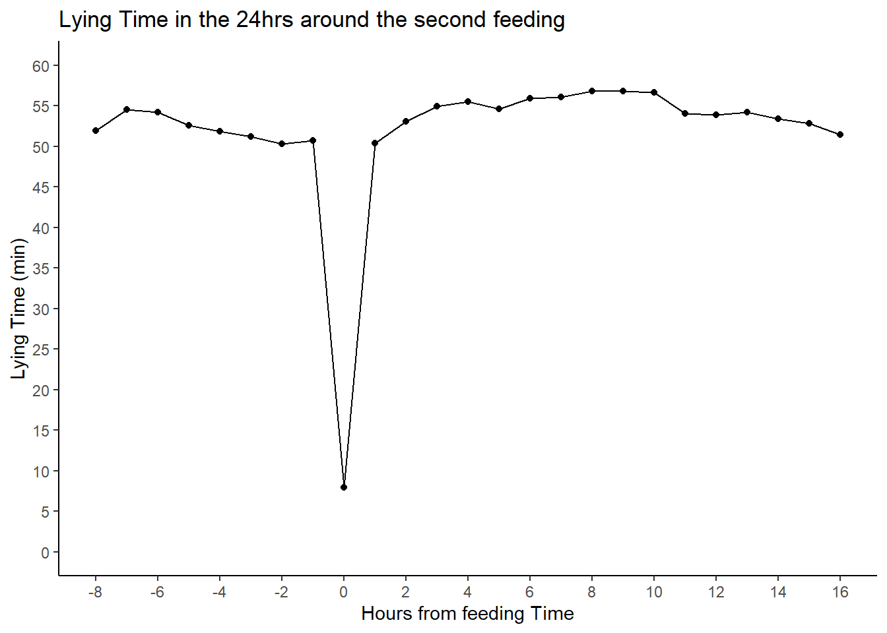
IceQube Analysis - Zinpro 2024
Data Steps - All
Pull in data.
Goal is to bring in IceQube data to then match to specific calves and specific times. Let’s see!
Merge with Calf Key
Now Steps taken to merge calfkey with combined_data set so we can start arduous process of tagging on and off times along with feeding times.
Have to manipulate the key to match with the date the tags were cleared. So added an “on date” variable to the merged data set, which corresponds to the bdat of the calf.
Not sure how to proceed. Now need to figure out how to tag when the IceQubes went on, when the second feeding was administered, and when the tags came off so that the data is only representative of when the tags were on the calf. Would additionally like to add some variables that show time from second feeding (0) with time before going -1, -2, etc, and time after going +1, +2, for each calf.
Using Merged Data Set to do more stuff
All Calves
Laying - 24
This data set uses the merged_data set and filters out all hours except for the +/-8hrs around feeding time. Then makes a graph of calf behavior before and after feeding.
Standing - 24
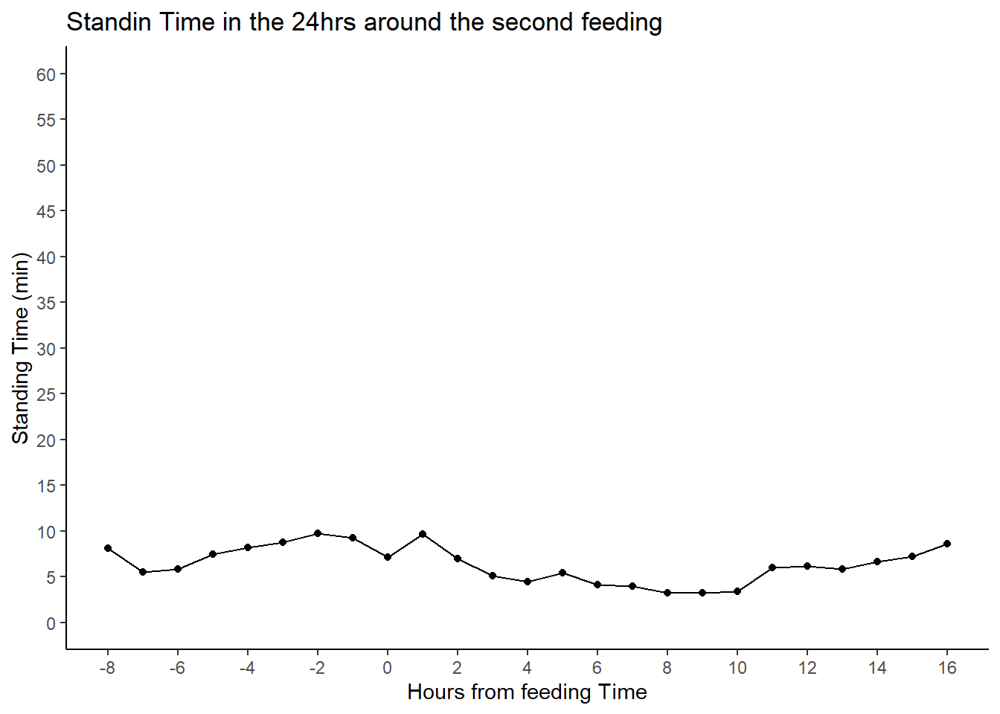
Laying - 3d
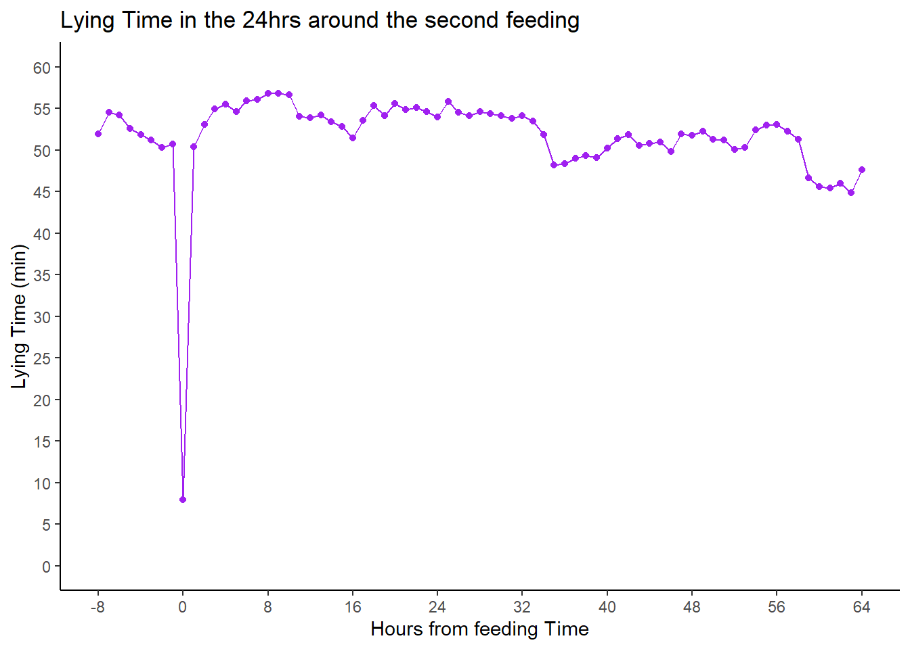
Standing - 3d
standing <- merged_data |>
filter(hoursfrom >= -8 & hoursfrom <= 64) |>
group_by(CalfID, hoursfrom) |>
summarize(
`Standing [t]` = sum(`Standing [t]`, na.rm = TRUE)) |>
group_by(hoursfrom) |>
summarize(
`Standing [t]` = mean(`Standing [t]`, na.rm = TRUE)) |>
mutate(
standm = `Standing [t]` / 60) |>
ungroup()`summarise()` has grouped output by 'CalfID'. You can override using the
`.groups` argument.standing |>
ggplot(aes(x = hoursfrom, y = standm)) +
theme_classic() +
geom_point(color="purple") +
geom_line(color="purple") +
labs(
title = "Standing Time in the 72hrs around the second feeding",
x = "Hours from Second Feeding Time",
y = "Standing Time (min)") +
scale_y_continuous(limits = c(0, 60), breaks = seq(0, 60, by = 5))+
scale_x_continuous(limits = c(-8, 64), breaks = seq(-8, 64, by = 8))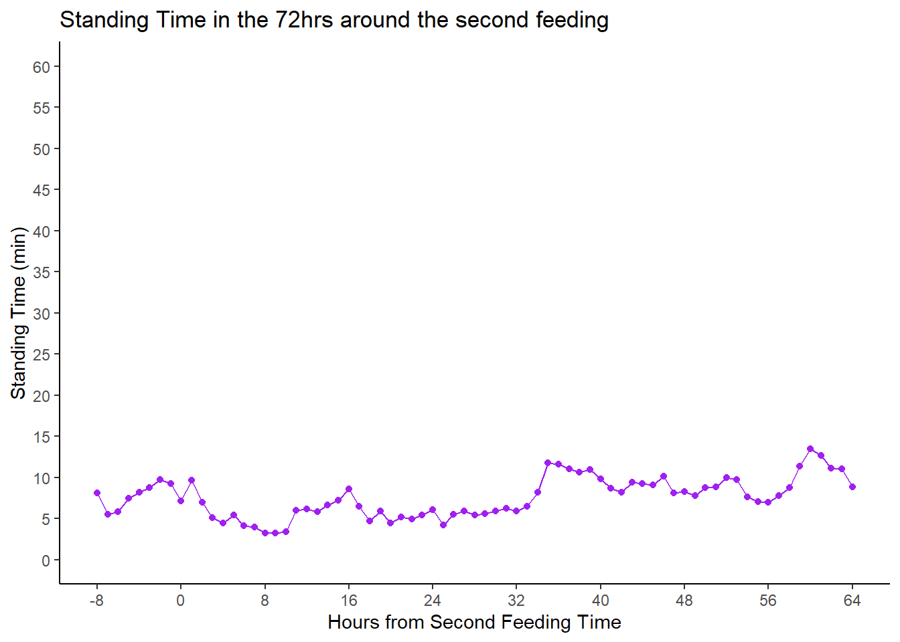
By Treatment Group - Full 3d
Laying
layinggrp <- merged_data |>
filter(hoursfrom >= -8 & hoursfrom <= 64) |>
group_by(CalfID, hoursfrom, D0Fed2TxGrp) |>
summarize(
`Lying [t]` = sum(`Lying [t]`, na.rm = TRUE)) |>
group_by(hoursfrom, D0Fed2TxGrp) |>
summarize(
`Lying [t]` = mean(`Lying [t]`, na.rm = TRUE)) |>
mutate(
lyingm = `Lying [t]` / 60) |>
ungroup()`summarise()` has grouped output by 'CalfID', 'hoursfrom'. You can override
using the `.groups` argument.
`summarise()` has grouped output by 'hoursfrom'. You can override using the
`.groups` argument.layinggrp |>
ggplot(aes(x = hoursfrom, y = lyingm, color=D0Fed2TxGrp)) +
theme_classic() +
geom_point() +
geom_line() +
labs(
title = "Lying Time in the 3d around the second feeding",
x = "Hours from feeding Time",
y = "Lying Time (min)")+
scale_y_continuous(limits = c(0, 60), breaks = seq(0, 60, by = 5))+
scale_x_continuous(limits = c(-8, 64), breaks = seq(-8, 64, by = 8))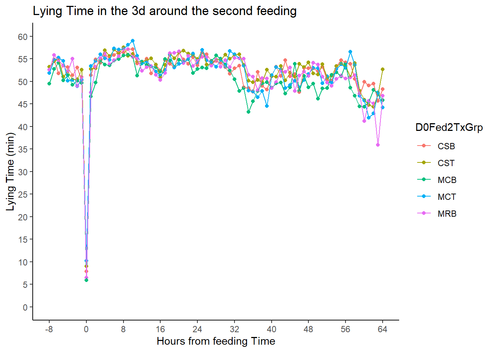
Standing
standinggrp <- merged_data |>
filter(hoursfrom >= -8 & hoursfrom <= 64) |>
group_by(CalfID, hoursfrom, D0Fed2TxGrp) |>
summarize(
`Standing [t]` = sum(`Standing [t]`, na.rm = TRUE)) |>
group_by(hoursfrom, D0Fed2TxGrp) |>
summarize(
`Standing [t]` = mean(`Standing [t]`, na.rm = TRUE)) |>
mutate(
standm = `Standing [t]` / 60) |>
ungroup()`summarise()` has grouped output by 'CalfID', 'hoursfrom'. You can override
using the `.groups` argument.
`summarise()` has grouped output by 'hoursfrom'. You can override using the
`.groups` argument.standinggrp |>
ggplot(aes(x = hoursfrom, y = standm, color=D0Fed2TxGrp)) +
theme_classic() +
geom_point() +
geom_line() +
labs(
title = "Standing Time in the 24hrs around the second feeding",
x = "Hours from feeding Time",
y = "Standing Time (min)") +
scale_y_continuous(limits = c(0, 60), breaks = seq(0, 60, by = 5))+
scale_x_continuous(limits = c(-8, 64), breaks = seq(-8, 64, by = 8))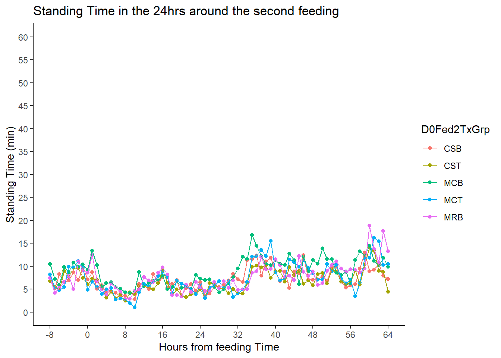
By Treatment Group - 8 hr around 2nd Feeding (1hr)
Laying
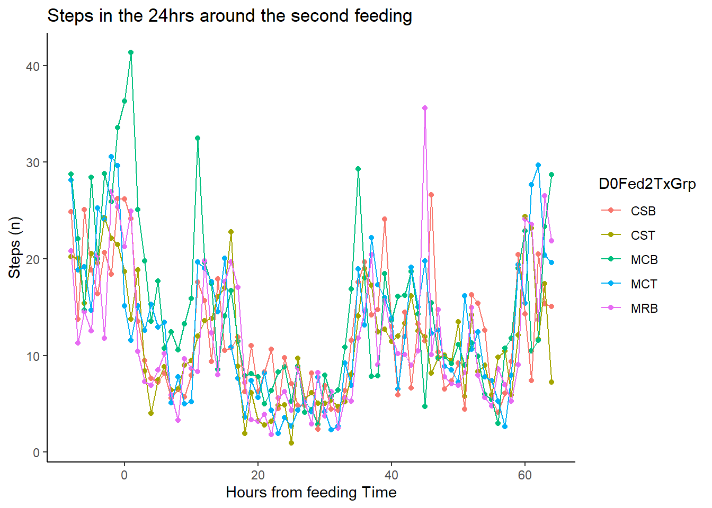
Standing
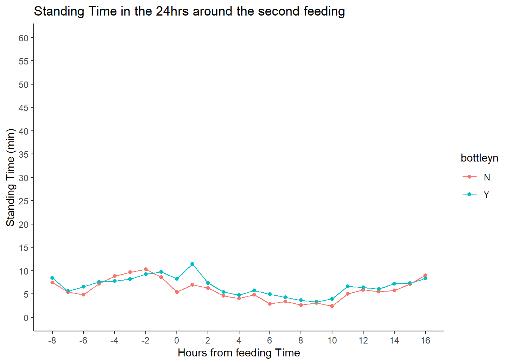
By Treatment Group - 2 hrs around (15min)
Laying
Standing
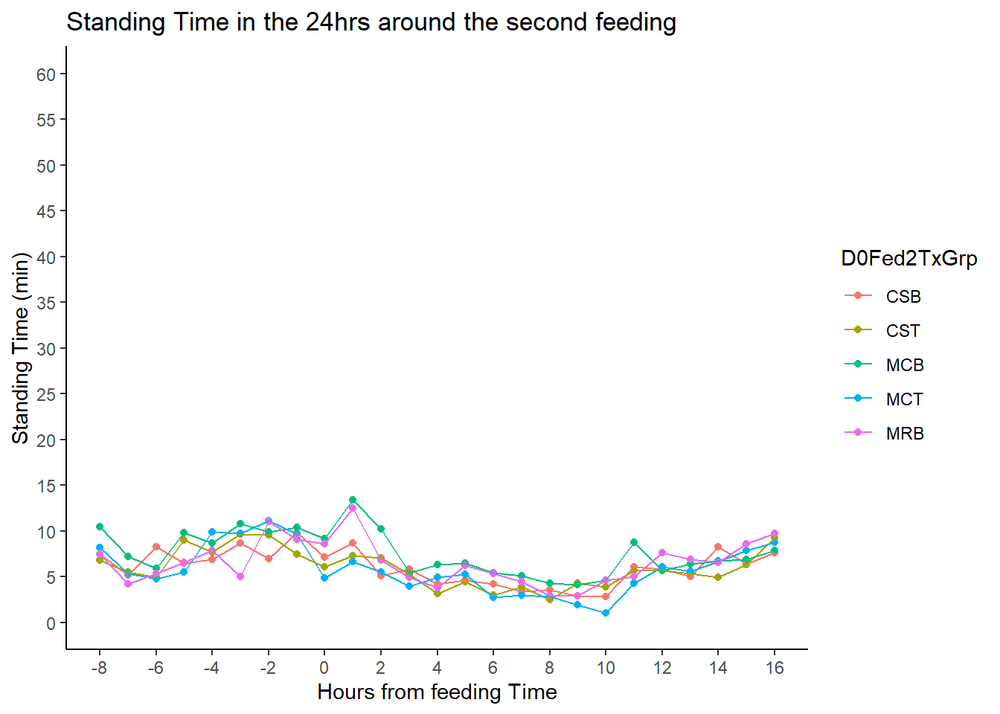
Tubed vs. Bottled
Hours from feeding time - Laying Time
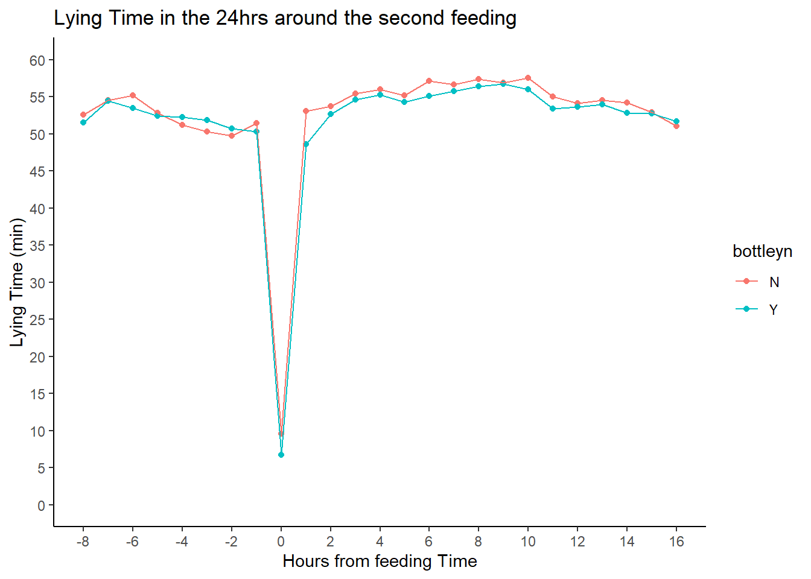
Hours from feeding time - Standing Time
Minutes from feeding time - Laying Time
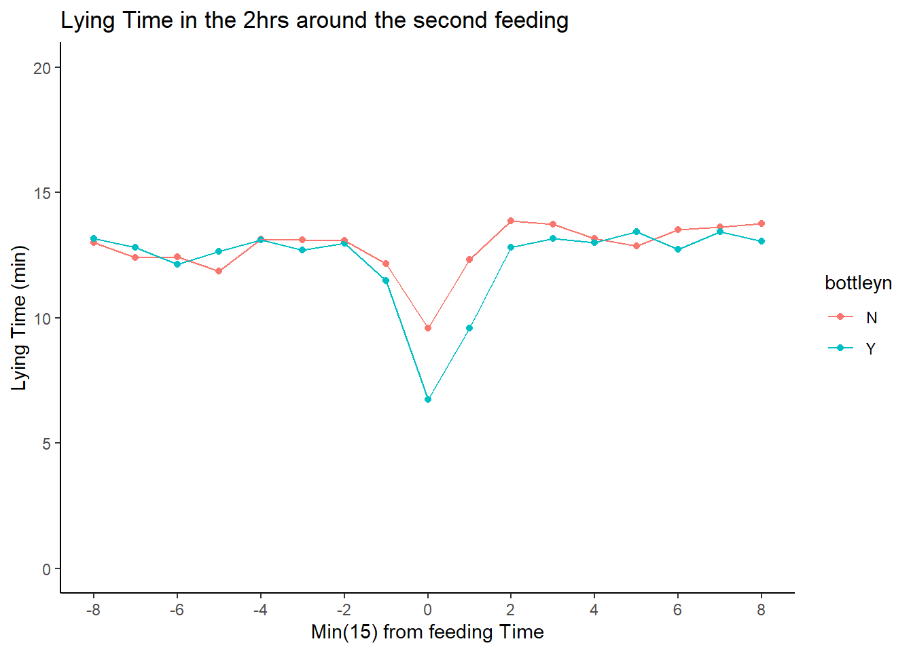
Minutes from feeding time - Standing Time

Models - Whole Time Period
Standing
#repeated measures mixed model for time period. Calf as repeated measure
hourfull <- hour |>
filter(hour >= -8 & hour <= 64)
hourfull$D0Fed2TxGrp <- relevel(factor(hourfull$D0Fed2TxGrp), ref = "MRB")
standmodel <- lmer(as.numeric(Standing) ~ as.factor(hour) * D0Fed2TxGrp + (1 | CalfID), data = hourfull)
summary(standmodel)Linear mixed model fit by REML. t-tests use Satterthwaite's method [
lmerModLmerTest]
Formula: as.numeric(Standing) ~ as.factor(hour) * D0Fed2TxGrp + (1 | CalfID)
Data: hourfull
REML criterion at convergence: 77410.3
Scaled residuals:
Min 1Q Median 3Q Max
-2.5614 -0.6179 -0.1859 0.3550 5.6972
Random effects:
Groups Name Variance Std.Dev.
CalfID (Intercept) 8.983 2.997
Residual 80.154 8.953
Number of obs: 10868, groups: CalfID, 151
Fixed effects:
Estimate Std. Error df t value
(Intercept) 7.417e+00 1.753e+00 6.100e+03 4.231
as.factor(hour)-7 -3.209e+00 2.351e+00 1.036e+04 -1.365
as.factor(hour)-6 -2.097e+00 2.351e+00 1.036e+04 -0.892
as.factor(hour)-5 -8.575e-01 2.351e+00 1.036e+04 -0.365
as.factor(hour)-4 4.345e-01 2.351e+00 1.036e+04 0.185
as.factor(hour)-3 -2.448e+00 2.351e+00 1.036e+04 -1.041
as.factor(hour)-2 3.630e+00 2.351e+00 1.036e+04 1.544
as.factor(hour)-1 1.640e+00 2.351e+00 1.036e+04 0.697
as.factor(hour)0 1.148e+00 2.351e+00 1.036e+04 0.488
as.factor(hour)1 5.056e+00 2.351e+00 1.036e+04 2.151
as.factor(hour)2 -6.345e-01 2.351e+00 1.036e+04 -0.270
as.factor(hour)3 -2.486e+00 2.351e+00 1.036e+04 -1.057
as.factor(hour)4 -3.658e+00 2.351e+00 1.036e+04 -1.556
as.factor(hour)5 -1.217e+00 2.351e+00 1.036e+04 -0.518
as.factor(hour)6 -2.129e+00 2.351e+00 1.036e+04 -0.905
as.factor(hour)7 -3.006e+00 2.351e+00 1.036e+04 -1.279
as.factor(hour)8 -4.526e+00 2.351e+00 1.036e+04 -1.925
as.factor(hour)9 -4.506e+00 2.351e+00 1.036e+04 -1.916
as.factor(hour)10 -2.829e+00 2.351e+00 1.036e+04 -1.203
as.factor(hour)11 -2.399e+00 2.351e+00 1.036e+04 -1.021
as.factor(hour)12 2.247e-01 2.351e+00 1.036e+04 0.096
as.factor(hour)13 -5.511e-01 2.351e+00 1.036e+04 -0.234
as.factor(hour)14 -8.316e-01 2.351e+00 1.036e+04 -0.354
as.factor(hour)15 1.147e+00 2.351e+00 1.036e+04 0.488
as.factor(hour)16 2.262e+00 2.351e+00 1.036e+04 0.962
as.factor(hour)17 7.471e-01 2.351e+00 1.036e+04 0.318
as.factor(hour)18 -3.681e+00 2.351e+00 1.036e+04 -1.566
as.factor(hour)19 -3.739e+00 2.351e+00 1.036e+04 -1.590
as.factor(hour)20 -4.078e+00 2.351e+00 1.036e+04 -1.734
as.factor(hour)21 -1.429e+00 2.351e+00 1.036e+04 -0.608
as.factor(hour)22 -3.101e+00 2.351e+00 1.036e+04 -1.319
as.factor(hour)23 -8.356e-01 2.351e+00 1.036e+04 -0.355
as.factor(hour)24 -2.013e+00 2.351e+00 1.036e+04 -0.856
as.factor(hour)25 -2.831e+00 2.351e+00 1.036e+04 -1.204
as.factor(hour)26 -2.736e+00 2.351e+00 1.036e+04 -1.164
as.factor(hour)27 -8.437e-01 2.351e+00 1.036e+04 -0.359
as.factor(hour)28 -2.213e+00 2.351e+00 1.036e+04 -0.941
as.factor(hour)29 -6.764e-01 2.351e+00 1.036e+04 -0.288
as.factor(hour)30 -2.138e+00 2.351e+00 1.036e+04 -0.909
as.factor(hour)31 -5.460e-01 2.351e+00 1.036e+04 -0.232
as.factor(hour)32 -2.616e+00 2.351e+00 1.036e+04 -1.113
as.factor(hour)33 -2.482e+00 2.351e+00 1.036e+04 -1.056
as.factor(hour)34 -2.418e+00 2.351e+00 1.036e+04 -1.029
as.factor(hour)35 1.175e+00 2.351e+00 1.036e+04 0.500
as.factor(hour)36 1.520e+00 2.351e+00 1.036e+04 0.647
as.factor(hour)37 4.543e+00 2.351e+00 1.036e+04 1.932
as.factor(hour)38 1.879e+00 2.351e+00 1.036e+04 0.799
as.factor(hour)39 2.001e+00 2.351e+00 1.036e+04 0.851
as.factor(hour)40 4.118e+00 2.351e+00 1.036e+04 1.751
as.factor(hour)41 2.792e+00 2.351e+00 1.036e+04 1.187
as.factor(hour)42 1.822e-01 2.351e+00 1.036e+04 0.077
as.factor(hour)43 5.368e-01 2.351e+00 1.036e+04 0.228
as.factor(hour)44 -4.483e-01 2.351e+00 1.036e+04 -0.191
as.factor(hour)45 4.716e+00 2.351e+00 1.036e+04 2.006
as.factor(hour)46 1.295e+00 2.351e+00 1.036e+04 0.551
as.factor(hour)47 4.477e-01 2.351e+00 1.036e+04 0.190
as.factor(hour)48 1.402e+00 2.351e+00 1.036e+04 0.596
as.factor(hour)49 -1.524e+00 2.351e+00 1.036e+04 -0.648
as.factor(hour)50 -1.137e+00 2.351e+00 1.036e+04 -0.484
as.factor(hour)51 1.595e+00 2.351e+00 1.036e+04 0.678
as.factor(hour)52 2.857e+00 2.351e+00 1.036e+04 1.215
as.factor(hour)53 3.607e+00 2.351e+00 1.036e+04 1.534
as.factor(hour)54 2.066e+00 2.351e+00 1.036e+04 0.879
as.factor(hour)55 1.280e+00 2.351e+00 1.036e+04 0.545
as.factor(hour)56 1.935e+00 2.351e+00 1.036e+04 0.823
as.factor(hour)57 1.700e+00 2.351e+00 1.036e+04 0.723
as.factor(hour)58 1.221e+00 2.351e+00 1.036e+04 0.519
as.factor(hour)59 2.041e+00 2.351e+00 1.036e+04 0.868
as.factor(hour)60 1.083e+01 2.419e+00 1.036e+04 4.479
as.factor(hour)61 5.644e+00 2.445e+00 1.036e+04 2.309
as.factor(hour)62 2.918e+00 2.502e+00 1.036e+04 1.166
as.factor(hour)63 9.450e+00 2.605e+00 1.036e+04 3.627
as.factor(hour)64 5.303e+00 2.793e+00 1.037e+04 1.899
D0Fed2TxGrpCSB 2.416e-02 2.439e+00 6.100e+03 0.010
D0Fed2TxGrpCST -6.628e-01 2.459e+00 6.100e+03 -0.270
D0Fed2TxGrpMCB 3.072e+00 2.459e+00 6.100e+03 1.249
D0Fed2TxGrpMCT 7.446e-01 2.439e+00 6.100e+03 0.305
as.factor(hour)-7:D0Fed2TxGrpCSB 9.522e-01 3.271e+00 1.036e+04 0.291
as.factor(hour)-6:D0Fed2TxGrpCSB 2.925e+00 3.271e+00 1.036e+04 0.894
as.factor(hour)-5:D0Fed2TxGrpCSB -1.060e-01 3.271e+00 1.036e+04 -0.032
as.factor(hour)-4:D0Fed2TxGrpCSB -1.038e+00 3.271e+00 1.036e+04 -0.317
as.factor(hour)-3:D0Fed2TxGrpCSB 3.654e+00 3.271e+00 1.036e+04 1.117
as.factor(hour)-2:D0Fed2TxGrpCSB -4.091e+00 3.271e+00 1.036e+04 -1.251
as.factor(hour)-1:D0Fed2TxGrpCSB 7.012e-01 3.271e+00 1.036e+04 0.214
as.factor(hour)0:D0Fed2TxGrpCSB -1.450e+00 3.271e+00 1.036e+04 -0.443
as.factor(hour)1:D0Fed2TxGrpCSB -3.870e+00 3.271e+00 1.036e+04 -1.183
as.factor(hour)2:D0Fed2TxGrpCSB -1.690e+00 3.271e+00 1.036e+04 -0.517
as.factor(hour)3:D0Fed2TxGrpCSB 8.910e-01 3.271e+00 1.036e+04 0.272
as.factor(hour)4:D0Fed2TxGrpCSB 4.032e-01 3.271e+00 1.036e+04 0.123
as.factor(hour)5:D0Fed2TxGrpCSB -1.632e+00 3.271e+00 1.036e+04 -0.499
as.factor(hour)6:D0Fed2TxGrpCSB -1.149e+00 3.271e+00 1.036e+04 -0.351
as.factor(hour)7:D0Fed2TxGrpCSB -1.089e+00 3.271e+00 1.036e+04 -0.333
as.factor(hour)8:D0Fed2TxGrpCSB 6.549e-01 3.271e+00 1.036e+04 0.200
as.factor(hour)9:D0Fed2TxGrpCSB -4.264e-02 3.271e+00 1.036e+04 -0.013
as.factor(hour)10:D0Fed2TxGrpCSB -1.766e+00 3.271e+00 1.036e+04 -0.540
as.factor(hour)11:D0Fed2TxGrpCSB 1.041e+00 3.271e+00 1.036e+04 0.318
as.factor(hour)12:D0Fed2TxGrpCSB -1.859e+00 3.271e+00 1.036e+04 -0.568
as.factor(hour)13:D0Fed2TxGrpCSB -1.868e+00 3.271e+00 1.036e+04 -0.571
as.factor(hour)14:D0Fed2TxGrpCSB 1.641e+00 3.271e+00 1.036e+04 0.502
as.factor(hour)15:D0Fed2TxGrpCSB -2.223e+00 3.271e+00 1.036e+04 -0.680
as.factor(hour)16:D0Fed2TxGrpCSB -2.120e+00 3.271e+00 1.036e+04 -0.648
as.factor(hour)17:D0Fed2TxGrpCSB -2.841e+00 3.271e+00 1.036e+04 -0.868
as.factor(hour)18:D0Fed2TxGrpCSB 2.386e+00 3.271e+00 1.036e+04 0.729
as.factor(hour)19:D0Fed2TxGrpCSB 3.255e+00 3.271e+00 1.036e+04 0.995
as.factor(hour)20:D0Fed2TxGrpCSB 2.432e-01 3.271e+00 1.036e+04 0.074
as.factor(hour)21:D0Fed2TxGrpCSB -8.390e-01 3.271e+00 1.036e+04 -0.256
as.factor(hour)22:D0Fed2TxGrpCSB 1.801e+00 3.271e+00 1.036e+04 0.550
as.factor(hour)23:D0Fed2TxGrpCSB -1.920e+00 3.271e+00 1.036e+04 -0.587
as.factor(hour)24:D0Fed2TxGrpCSB 1.013e+00 3.271e+00 1.036e+04 0.310
as.factor(hour)25:D0Fed2TxGrpCSB -1.036e+00 3.271e+00 1.036e+04 -0.317
as.factor(hour)26:D0Fed2TxGrpCSB -7.154e-01 3.271e+00 1.036e+04 -0.219
as.factor(hour)27:D0Fed2TxGrpCSB -1.084e+00 3.271e+00 1.036e+04 -0.331
as.factor(hour)28:D0Fed2TxGrpCSB 2.552e-01 3.271e+00 1.036e+04 0.078
as.factor(hour)29:D0Fed2TxGrpCSB -8.558e-01 3.271e+00 1.036e+04 -0.262
as.factor(hour)30:D0Fed2TxGrpCSB 1.540e+00 3.271e+00 1.036e+04 0.471
as.factor(hour)31:D0Fed2TxGrpCSB 1.441e+00 3.271e+00 1.036e+04 0.440
as.factor(hour)32:D0Fed2TxGrpCSB 2.289e+00 3.271e+00 1.036e+04 0.700
as.factor(hour)33:D0Fed2TxGrpCSB 1.600e+00 3.271e+00 1.036e+04 0.489
as.factor(hour)34:D0Fed2TxGrpCSB 6.282e+00 3.271e+00 1.036e+04 1.920
as.factor(hour)35:D0Fed2TxGrpCSB 2.877e+00 3.271e+00 1.036e+04 0.880
as.factor(hour)36:D0Fed2TxGrpCSB 3.364e+00 3.271e+00 1.036e+04 1.028
as.factor(hour)37:D0Fed2TxGrpCSB -4.071e+00 3.271e+00 1.036e+04 -1.244
as.factor(hour)38:D0Fed2TxGrpCSB 1.692e+00 3.271e+00 1.036e+04 0.517
as.factor(hour)39:D0Fed2TxGrpCSB 2.410e+00 3.271e+00 1.036e+04 0.737
as.factor(hour)40:D0Fed2TxGrpCSB -2.915e+00 3.271e+00 1.036e+04 -0.891
as.factor(hour)41:D0Fed2TxGrpCSB -3.430e+00 3.271e+00 1.036e+04 -1.049
as.factor(hour)42:D0Fed2TxGrpCSB 1.200e+00 3.271e+00 1.036e+04 0.367
as.factor(hour)43:D0Fed2TxGrpCSB -2.691e+00 3.271e+00 1.036e+04 -0.823
as.factor(hour)44:D0Fed2TxGrpCSB 1.869e+00 3.271e+00 1.036e+04 0.571
as.factor(hour)45:D0Fed2TxGrpCSB -3.776e+00 3.271e+00 1.036e+04 -1.154
as.factor(hour)46:D0Fed2TxGrpCSB 3.634e+00 3.271e+00 1.036e+04 1.111
as.factor(hour)47:D0Fed2TxGrpCSB -8.649e-01 3.271e+00 1.036e+04 -0.264
as.factor(hour)48:D0Fed2TxGrpCSB -1.774e+00 3.271e+00 1.036e+04 -0.542
as.factor(hour)49:D0Fed2TxGrpCSB 1.182e+00 3.271e+00 1.036e+04 0.361
as.factor(hour)50:D0Fed2TxGrpCSB 1.482e+00 3.271e+00 1.036e+04 0.453
as.factor(hour)51:D0Fed2TxGrpCSB -2.235e+00 3.271e+00 1.036e+04 -0.683
as.factor(hour)52:D0Fed2TxGrpCSB -4.865e-01 3.271e+00 1.036e+04 -0.149
as.factor(hour)53:D0Fed2TxGrpCSB -1.187e+00 3.271e+00 1.036e+04 -0.363
as.factor(hour)54:D0Fed2TxGrpCSB -2.868e+00 3.271e+00 1.036e+04 -0.877
as.factor(hour)55:D0Fed2TxGrpCSB -3.368e+00 3.271e+00 1.036e+04 -1.030
as.factor(hour)56:D0Fed2TxGrpCSB -3.593e+00 3.271e+00 1.036e+04 -1.098
as.factor(hour)57:D0Fed2TxGrpCSB -3.045e+00 3.271e+00 1.036e+04 -0.931
as.factor(hour)58:D0Fed2TxGrpCSB 7.997e-01 3.271e+00 1.036e+04 0.244
as.factor(hour)59:D0Fed2TxGrpCSB 3.502e+00 3.271e+00 1.036e+04 1.071
as.factor(hour)60:D0Fed2TxGrpCSB -9.332e+00 3.333e+00 1.036e+04 -2.800
as.factor(hour)61:D0Fed2TxGrpCSB -3.748e+00 3.366e+00 1.036e+04 -1.114
as.factor(hour)62:D0Fed2TxGrpCSB 2.421e-01 3.438e+00 1.036e+04 0.070
as.factor(hour)63:D0Fed2TxGrpCSB -8.812e+00 3.514e+00 1.036e+04 -2.508
as.factor(hour)64:D0Fed2TxGrpCSB -5.737e+00 3.748e+00 1.036e+04 -1.531
as.factor(hour)-7:D0Fed2TxGrpCST 1.986e+00 3.297e+00 1.036e+04 0.602
as.factor(hour)-6:D0Fed2TxGrpCST 2.999e-01 3.297e+00 1.036e+04 0.091
as.factor(hour)-5:D0Fed2TxGrpCST 3.069e+00 3.297e+00 1.036e+04 0.931
as.factor(hour)-4:D0Fed2TxGrpCST 5.272e-01 3.297e+00 1.036e+04 0.160
as.factor(hour)-3:D0Fed2TxGrpCST 5.314e+00 3.297e+00 1.036e+04 1.612
as.factor(hour)-2:D0Fed2TxGrpCST -8.666e-01 3.297e+00 1.036e+04 -0.263
as.factor(hour)-1:D0Fed2TxGrpCST -9.869e-01 3.297e+00 1.036e+04 -0.299
as.factor(hour)0:D0Fed2TxGrpCST -1.871e+00 3.297e+00 1.036e+04 -0.567
as.factor(hour)1:D0Fed2TxGrpCST -4.555e+00 3.297e+00 1.036e+04 -1.381
as.factor(hour)2:D0Fed2TxGrpCST 9.484e-01 3.297e+00 1.036e+04 0.288
as.factor(hour)3:D0Fed2TxGrpCST 9.973e-01 3.297e+00 1.036e+04 0.302
as.factor(hour)4:D0Fed2TxGrpCST 5.693e-02 3.297e+00 1.036e+04 0.017
as.factor(hour)5:D0Fed2TxGrpCST -1.121e+00 3.297e+00 1.036e+04 -0.340
as.factor(hour)6:D0Fed2TxGrpCST -1.633e+00 3.297e+00 1.036e+04 -0.495
as.factor(hour)7:D0Fed2TxGrpCST 1.335e-01 3.297e+00 1.036e+04 0.041
as.factor(hour)8:D0Fed2TxGrpCST 2.475e-01 3.297e+00 1.036e+04 0.075
as.factor(hour)9:D0Fed2TxGrpCST 2.059e+00 3.297e+00 1.036e+04 0.624
as.factor(hour)10:D0Fed2TxGrpCST -2.125e-02 3.297e+00 1.036e+04 -0.006
as.factor(hour)11:D0Fed2TxGrpCST 1.317e+00 3.297e+00 1.036e+04 0.399
as.factor(hour)12:D0Fed2TxGrpCST -1.332e+00 3.297e+00 1.036e+04 -0.404
as.factor(hour)13:D0Fed2TxGrpCST -8.700e-01 3.297e+00 1.036e+04 -0.264
as.factor(hour)14:D0Fed2TxGrpCST -1.037e+00 3.297e+00 1.036e+04 -0.314
as.factor(hour)15:D0Fed2TxGrpCST -1.600e+00 3.297e+00 1.036e+04 -0.485
as.factor(hour)16:D0Fed2TxGrpCST 2.213e-01 3.297e+00 1.036e+04 0.067
as.factor(hour)17:D0Fed2TxGrpCST -1.139e+00 3.297e+00 1.036e+04 -0.346
as.factor(hour)18:D0Fed2TxGrpCST 7.088e-01 3.297e+00 1.036e+04 0.215
as.factor(hour)19:D0Fed2TxGrpCST 1.881e+00 3.297e+00 1.036e+04 0.571
as.factor(hour)20:D0Fed2TxGrpCST 9.231e-01 3.297e+00 1.036e+04 0.280
as.factor(hour)21:D0Fed2TxGrpCST -2.118e+00 3.297e+00 1.036e+04 -0.642
as.factor(hour)22:D0Fed2TxGrpCST 2.195e-01 3.297e+00 1.036e+04 0.067
as.factor(hour)23:D0Fed2TxGrpCST -1.857e+00 3.297e+00 1.036e+04 -0.563
as.factor(hour)24:D0Fed2TxGrpCST 2.993e-01 3.297e+00 1.036e+04 0.091
as.factor(hour)25:D0Fed2TxGrpCST -8.823e-01 3.297e+00 1.036e+04 -0.268
as.factor(hour)26:D0Fed2TxGrpCST 2.300e+00 3.297e+00 1.036e+04 0.698
as.factor(hour)27:D0Fed2TxGrpCST 1.931e-01 3.297e+00 1.036e+04 0.059
as.factor(hour)28:D0Fed2TxGrpCST 6.127e-01 3.297e+00 1.036e+04 0.186
as.factor(hour)29:D0Fed2TxGrpCST -8.458e-01 3.297e+00 1.036e+04 -0.257
as.factor(hour)30:D0Fed2TxGrpCST -4.810e-01 3.297e+00 1.036e+04 -0.146
as.factor(hour)31:D0Fed2TxGrpCST -1.189e+00 3.297e+00 1.036e+04 -0.361
as.factor(hour)32:D0Fed2TxGrpCST -5.019e-03 3.297e+00 1.036e+04 -0.002
as.factor(hour)33:D0Fed2TxGrpCST -2.784e-01 3.297e+00 1.036e+04 -0.084
as.factor(hour)34:D0Fed2TxGrpCST 2.037e+00 3.297e+00 1.036e+04 0.618
as.factor(hour)35:D0Fed2TxGrpCST 1.962e+00 3.297e+00 1.036e+04 0.595
as.factor(hour)36:D0Fed2TxGrpCST 1.888e+00 3.297e+00 1.036e+04 0.573
as.factor(hour)37:D0Fed2TxGrpCST -1.595e+00 3.297e+00 1.036e+04 -0.484
as.factor(hour)38:D0Fed2TxGrpCST 1.536e+00 3.297e+00 1.036e+04 0.466
as.factor(hour)39:D0Fed2TxGrpCST -1.346e+00 3.297e+00 1.036e+04 -0.408
as.factor(hour)40:D0Fed2TxGrpCST -1.973e+00 3.297e+00 1.036e+04 -0.599
as.factor(hour)41:D0Fed2TxGrpCST -5.947e-01 3.297e+00 1.036e+04 -0.180
as.factor(hour)42:D0Fed2TxGrpCST -3.339e-01 3.297e+00 1.036e+04 -0.101
as.factor(hour)43:D0Fed2TxGrpCST 2.475e+00 3.297e+00 1.036e+04 0.751
as.factor(hour)44:D0Fed2TxGrpCST 1.752e+00 3.297e+00 1.036e+04 0.531
as.factor(hour)45:D0Fed2TxGrpCST -2.483e+00 3.297e+00 1.036e+04 -0.753
as.factor(hour)46:D0Fed2TxGrpCST -1.912e+00 3.297e+00 1.036e+04 -0.580
as.factor(hour)47:D0Fed2TxGrpCST -3.188e-01 3.297e+00 1.036e+04 -0.097
as.factor(hour)48:D0Fed2TxGrpCST -2.364e+00 3.297e+00 1.036e+04 -0.717
as.factor(hour)49:D0Fed2TxGrpCST 2.991e+00 3.297e+00 1.036e+04 0.907
as.factor(hour)50:D0Fed2TxGrpCST 2.893e+00 3.297e+00 1.036e+04 0.877
as.factor(hour)51:D0Fed2TxGrpCST -2.100e+00 3.297e+00 1.036e+04 -0.637
as.factor(hour)52:D0Fed2TxGrpCST -2.763e-01 3.297e+00 1.036e+04 -0.084
as.factor(hour)53:D0Fed2TxGrpCST -1.650e+00 3.297e+00 1.036e+04 -0.500
as.factor(hour)54:D0Fed2TxGrpCST -2.197e+00 3.297e+00 1.036e+04 -0.666
as.factor(hour)55:D0Fed2TxGrpCST -1.978e+00 3.297e+00 1.036e+04 -0.600
as.factor(hour)56:D0Fed2TxGrpCST -2.110e+00 3.297e+00 1.036e+04 -0.640
as.factor(hour)57:D0Fed2TxGrpCST 6.422e-01 3.297e+00 1.036e+04 0.195
as.factor(hour)58:D0Fed2TxGrpCST -2.017e+00 3.297e+00 1.036e+04 -0.612
as.factor(hour)59:D0Fed2TxGrpCST 1.556e+00 3.297e+00 1.036e+04 0.472
as.factor(hour)60:D0Fed2TxGrpCST -3.580e+00 3.360e+00 1.036e+04 -1.066
as.factor(hour)61:D0Fed2TxGrpCST 1.001e+00 3.393e+00 1.036e+04 0.295
as.factor(hour)62:D0Fed2TxGrpCST -5.595e-01 3.467e+00 1.036e+04 -0.161
as.factor(hour)63:D0Fed2TxGrpCST -6.789e+00 3.621e+00 1.036e+04 -1.875
as.factor(hour)64:D0Fed2TxGrpCST -7.336e+00 3.836e+00 1.037e+04 -1.913
as.factor(hour)-7:D0Fed2TxGrpMCB -4.636e-02 3.297e+00 1.036e+04 -0.014
as.factor(hour)-6:D0Fed2TxGrpMCB -2.511e+00 3.297e+00 1.036e+04 -0.761
as.factor(hour)-5:D0Fed2TxGrpMCB 1.547e-01 3.297e+00 1.036e+04 0.047
as.factor(hour)-4:D0Fed2TxGrpMCB -2.258e+00 3.297e+00 1.036e+04 -0.685
as.factor(hour)-3:D0Fed2TxGrpMCB 2.716e+00 3.297e+00 1.036e+04 0.824
as.factor(hour)-2:D0Fed2TxGrpMCB -4.212e+00 3.297e+00 1.036e+04 -1.277
as.factor(hour)-1:D0Fed2TxGrpMCB -1.755e+00 3.297e+00 1.036e+04 -0.532
as.factor(hour)0:D0Fed2TxGrpMCB -2.525e+00 3.297e+00 1.036e+04 -0.766
as.factor(hour)1:D0Fed2TxGrpMCB -2.181e+00 3.297e+00 1.036e+04 -0.661
as.factor(hour)2:D0Fed2TxGrpMCB 3.900e-01 3.297e+00 1.036e+04 0.118
as.factor(hour)3:D0Fed2TxGrpMCB -2.615e+00 3.297e+00 1.036e+04 -0.793
as.factor(hour)4:D0Fed2TxGrpMCB -5.142e-01 3.297e+00 1.036e+04 -0.156
as.factor(hour)5:D0Fed2TxGrpMCB -2.817e+00 3.297e+00 1.036e+04 -0.854
as.factor(hour)6:D0Fed2TxGrpMCB -2.981e+00 3.297e+00 1.036e+04 -0.904
as.factor(hour)7:D0Fed2TxGrpMCB -2.370e+00 3.297e+00 1.036e+04 -0.719
as.factor(hour)8:D0Fed2TxGrpMCB -1.665e+00 3.297e+00 1.036e+04 -0.505
as.factor(hour)9:D0Fed2TxGrpMCB -1.897e+00 3.297e+00 1.036e+04 -0.575
as.factor(hour)10:D0Fed2TxGrpMCB -3.103e+00 3.297e+00 1.036e+04 -0.941
as.factor(hour)11:D0Fed2TxGrpMCB 6.455e-01 3.297e+00 1.036e+04 0.196
as.factor(hour)12:D0Fed2TxGrpMCB -5.045e+00 3.297e+00 1.036e+04 -1.530
as.factor(hour)13:D0Fed2TxGrpMCB -3.554e+00 3.297e+00 1.036e+04 -1.078
as.factor(hour)14:D0Fed2TxGrpMCB -2.950e+00 3.297e+00 1.036e+04 -0.895
as.factor(hour)15:D0Fed2TxGrpMCB -4.736e+00 3.297e+00 1.036e+04 -1.436
as.factor(hour)16:D0Fed2TxGrpMCB -4.877e+00 3.297e+00 1.036e+04 -1.479
as.factor(hour)17:D0Fed2TxGrpMCB -6.199e+00 3.297e+00 1.036e+04 -1.880
as.factor(hour)18:D0Fed2TxGrpMCB -1.401e+00 3.297e+00 1.036e+04 -0.425
as.factor(hour)19:D0Fed2TxGrpMCB 3.684e-02 3.297e+00 1.036e+04 0.011
as.factor(hour)20:D0Fed2TxGrpMCB -1.167e+00 3.297e+00 1.036e+04 -0.354
as.factor(hour)21:D0Fed2TxGrpMCB -3.458e+00 3.297e+00 1.036e+04 -1.049
as.factor(hour)22:D0Fed2TxGrpMCB -2.374e+00 3.297e+00 1.036e+04 -0.720
as.factor(hour)23:D0Fed2TxGrpMCB -1.522e+00 3.297e+00 1.036e+04 -0.461
as.factor(hour)24:D0Fed2TxGrpMCB -1.215e+00 3.297e+00 1.036e+04 -0.369
as.factor(hour)25:D0Fed2TxGrpMCB -7.406e-01 3.297e+00 1.036e+04 -0.225
as.factor(hour)26:D0Fed2TxGrpMCB -6.560e-01 3.297e+00 1.036e+04 -0.199
as.factor(hour)27:D0Fed2TxGrpMCB -4.185e+00 3.297e+00 1.036e+04 -1.269
as.factor(hour)28:D0Fed2TxGrpMCB -4.002e+00 3.297e+00 1.036e+04 -1.214
as.factor(hour)29:D0Fed2TxGrpMCB -4.824e+00 3.297e+00 1.036e+04 -1.463
as.factor(hour)30:D0Fed2TxGrpMCB -2.076e+00 3.297e+00 1.036e+04 -0.630
as.factor(hour)31:D0Fed2TxGrpMCB -2.356e+00 3.297e+00 1.036e+04 -0.714
as.factor(hour)32:D0Fed2TxGrpMCB 1.632e+00 3.297e+00 1.036e+04 0.495
as.factor(hour)33:D0Fed2TxGrpMCB 4.104e+00 3.297e+00 1.036e+04 1.245
as.factor(hour)34:D0Fed2TxGrpMCB 3.441e+00 3.297e+00 1.036e+04 1.044
as.factor(hour)35:D0Fed2TxGrpMCB 5.104e+00 3.297e+00 1.036e+04 1.548
as.factor(hour)36:D0Fed2TxGrpMCB 2.393e+00 3.297e+00 1.036e+04 0.726
as.factor(hour)37:D0Fed2TxGrpMCB -2.891e+00 3.297e+00 1.036e+04 -0.877
as.factor(hour)38:D0Fed2TxGrpMCB -1.838e+00 3.297e+00 1.036e+04 -0.558
as.factor(hour)39:D0Fed2TxGrpMCB -2.277e+00 3.297e+00 1.036e+04 -0.690
as.factor(hour)40:D0Fed2TxGrpMCB -3.227e+00 3.297e+00 1.036e+04 -0.979
as.factor(hour)41:D0Fed2TxGrpMCB -2.818e+00 3.297e+00 1.036e+04 -0.855
as.factor(hour)42:D0Fed2TxGrpMCB -3.661e-01 3.297e+00 1.036e+04 -0.111
as.factor(hour)43:D0Fed2TxGrpMCB 1.663e+00 3.297e+00 1.036e+04 0.504
as.factor(hour)44:D0Fed2TxGrpMCB 1.256e+00 3.297e+00 1.036e+04 0.381
as.factor(hour)45:D0Fed2TxGrpMCB -9.112e+00 3.297e+00 1.036e+04 -2.763
as.factor(hour)46:D0Fed2TxGrpMCB 2.652e-01 3.297e+00 1.036e+04 0.080
as.factor(hour)47:D0Fed2TxGrpMCB -2.094e+00 3.297e+00 1.036e+04 -0.635
as.factor(hour)48:D0Fed2TxGrpMCB -5.278e-01 3.297e+00 1.036e+04 -0.160
as.factor(hour)49:D0Fed2TxGrpMCB 1.544e+00 3.297e+00 1.036e+04 0.468
as.factor(hour)50:D0Fed2TxGrpMCB 4.539e+00 3.297e+00 1.036e+04 1.377
as.factor(hour)51:D0Fed2TxGrpMCB -4.959e-01 3.297e+00 1.036e+04 -0.150
as.factor(hour)52:D0Fed2TxGrpMCB -1.869e+00 3.297e+00 1.036e+04 -0.567
as.factor(hour)53:D0Fed2TxGrpMCB -5.487e+00 3.297e+00 1.036e+04 -1.664
as.factor(hour)54:D0Fed2TxGrpMCB -4.569e+00 3.297e+00 1.036e+04 -1.386
as.factor(hour)55:D0Fed2TxGrpMCB -2.916e+00 3.297e+00 1.036e+04 -0.884
as.factor(hour)56:D0Fed2TxGrpMCB -6.302e+00 3.297e+00 1.036e+04 -1.911
as.factor(hour)57:D0Fed2TxGrpMCB -8.106e-01 3.297e+00 1.036e+04 -0.246
as.factor(hour)58:D0Fed2TxGrpMCB 1.504e+00 3.297e+00 1.036e+04 0.456
as.factor(hour)59:D0Fed2TxGrpMCB -2.064e-01 3.297e+00 1.036e+04 -0.063
as.factor(hour)60:D0Fed2TxGrpMCB -6.469e+00 3.407e+00 1.036e+04 -1.899
as.factor(hour)61:D0Fed2TxGrpMCB -4.613e+00 3.444e+00 1.036e+04 -1.339
as.factor(hour)62:D0Fed2TxGrpMCB -2.611e+00 3.548e+00 1.036e+04 -0.736
as.factor(hour)63:D0Fed2TxGrpMCB -7.679e+00 3.701e+00 1.036e+04 -2.075
as.factor(hour)64:D0Fed2TxGrpMCB -5.373e+00 3.939e+00 1.037e+04 -1.364
as.factor(hour)-7:D0Fed2TxGrpMCT 3.984e-01 3.271e+00 1.036e+04 0.122
as.factor(hour)-6:D0Fed2TxGrpMCT -1.339e+00 3.271e+00 1.036e+04 -0.410
as.factor(hour)-5:D0Fed2TxGrpMCT -1.851e+00 3.271e+00 1.036e+04 -0.566
as.factor(hour)-4:D0Fed2TxGrpMCT 1.275e+00 3.271e+00 1.036e+04 0.390
as.factor(hour)-3:D0Fed2TxGrpMCT 3.999e+00 3.271e+00 1.036e+04 1.223
as.factor(hour)-2:D0Fed2TxGrpMCT -7.052e-01 3.271e+00 1.036e+04 -0.216
as.factor(hour)-1:D0Fed2TxGrpMCT -1.488e-01 3.271e+00 1.036e+04 -0.045
as.factor(hour)0:D0Fed2TxGrpMCT -4.483e+00 3.271e+00 1.036e+04 -1.370
as.factor(hour)1:D0Fed2TxGrpMCT -6.621e+00 3.271e+00 1.036e+04 -2.024
as.factor(hour)2:D0Fed2TxGrpMCT -2.039e+00 3.271e+00 1.036e+04 -0.623
as.factor(hour)3:D0Fed2TxGrpMCT -1.700e+00 3.271e+00 1.036e+04 -0.520
as.factor(hour)4:D0Fed2TxGrpMCT 4.140e-01 3.271e+00 1.036e+04 0.127
as.factor(hour)5:D0Fed2TxGrpMCT -1.683e+00 3.271e+00 1.036e+04 -0.514
as.factor(hour)6:D0Fed2TxGrpMCT -3.281e+00 3.271e+00 1.036e+04 -1.003
as.factor(hour)7:D0Fed2TxGrpMCT -2.222e+00 3.271e+00 1.036e+04 -0.679
as.factor(hour)8:D0Fed2TxGrpMCT -8.064e-01 3.271e+00 1.036e+04 -0.247
as.factor(hour)9:D0Fed2TxGrpMCT -1.761e+00 3.271e+00 1.036e+04 -0.538
as.factor(hour)10:D0Fed2TxGrpMCT -4.308e+00 3.271e+00 1.036e+04 -1.317
as.factor(hour)11:D0Fed2TxGrpMCT -1.453e+00 3.271e+00 1.036e+04 -0.444
as.factor(hour)12:D0Fed2TxGrpMCT -2.306e+00 3.271e+00 1.036e+04 -0.705
as.factor(hour)13:D0Fed2TxGrpMCT -2.017e+00 3.271e+00 1.036e+04 -0.617
as.factor(hour)14:D0Fed2TxGrpMCT -7.162e-01 3.271e+00 1.036e+04 -0.219
as.factor(hour)15:D0Fed2TxGrpMCT -1.446e+00 3.271e+00 1.036e+04 -0.442
as.factor(hour)16:D0Fed2TxGrpMCT -1.720e+00 3.271e+00 1.036e+04 -0.526
as.factor(hour)17:D0Fed2TxGrpMCT -1.378e+00 3.271e+00 1.036e+04 -0.421
as.factor(hour)18:D0Fed2TxGrpMCT -4.066e-01 3.271e+00 1.036e+04 -0.124
as.factor(hour)19:D0Fed2TxGrpMCT 2.482e+00 3.271e+00 1.036e+04 0.759
as.factor(hour)20:D0Fed2TxGrpMCT 2.065e+00 3.271e+00 1.036e+04 0.631
as.factor(hour)21:D0Fed2TxGrpMCT -9.626e-01 3.271e+00 1.036e+04 -0.294
as.factor(hour)22:D0Fed2TxGrpMCT -5.006e-04 3.271e+00 1.036e+04 0.000
as.factor(hour)23:D0Fed2TxGrpMCT -3.482e+00 3.271e+00 1.036e+04 -1.065
as.factor(hour)24:D0Fed2TxGrpMCT -1.938e-01 3.271e+00 1.036e+04 -0.059
as.factor(hour)25:D0Fed2TxGrpMCT -2.316e+00 3.271e+00 1.036e+04 -0.708
as.factor(hour)26:D0Fed2TxGrpMCT -1.068e-01 3.271e+00 1.036e+04 -0.033
as.factor(hour)27:D0Fed2TxGrpMCT -1.504e+00 3.271e+00 1.036e+04 -0.460
as.factor(hour)28:D0Fed2TxGrpMCT 7.971e-01 3.271e+00 1.036e+04 0.244
as.factor(hour)29:D0Fed2TxGrpMCT -2.289e+00 3.271e+00 1.036e+04 -0.700
as.factor(hour)30:D0Fed2TxGrpMCT 6.734e-01 3.271e+00 1.036e+04 0.206
as.factor(hour)31:D0Fed2TxGrpMCT -4.338e+00 3.271e+00 1.036e+04 -1.326
as.factor(hour)32:D0Fed2TxGrpMCT -1.520e+00 3.271e+00 1.036e+04 -0.465
as.factor(hour)33:D0Fed2TxGrpMCT -7.630e-01 3.271e+00 1.036e+04 -0.233
as.factor(hour)34:D0Fed2TxGrpMCT 7.791e-01 3.271e+00 1.036e+04 0.238
as.factor(hour)35:D0Fed2TxGrpMCT 2.747e+00 3.271e+00 1.036e+04 0.840
as.factor(hour)36:D0Fed2TxGrpMCT 2.507e+00 3.271e+00 1.036e+04 0.767
as.factor(hour)37:D0Fed2TxGrpMCT 8.596e-01 3.271e+00 1.036e+04 0.263
as.factor(hour)38:D0Fed2TxGrpMCT 2.102e+00 3.271e+00 1.036e+04 0.643
as.factor(hour)39:D0Fed2TxGrpMCT 5.313e+00 3.271e+00 1.036e+04 1.624
as.factor(hour)40:D0Fed2TxGrpMCT -3.637e+00 3.271e+00 1.036e+04 -1.112
as.factor(hour)41:D0Fed2TxGrpMCT -4.097e+00 3.271e+00 1.036e+04 -1.252
as.factor(hour)42:D0Fed2TxGrpMCT -9.892e-01 3.271e+00 1.036e+04 -0.302
as.factor(hour)43:D0Fed2TxGrpMCT 2.764e+00 3.271e+00 1.036e+04 0.845
as.factor(hour)44:D0Fed2TxGrpMCT 3.154e+00 3.271e+00 1.036e+04 0.964
as.factor(hour)45:D0Fed2TxGrpMCT -3.003e+00 3.271e+00 1.036e+04 -0.918
as.factor(hour)46:D0Fed2TxGrpMCT 1.899e+00 3.271e+00 1.036e+04 0.581
as.factor(hour)47:D0Fed2TxGrpMCT 1.064e+00 3.271e+00 1.036e+04 0.325
as.factor(hour)48:D0Fed2TxGrpMCT -1.159e+00 3.271e+00 1.036e+04 -0.354
as.factor(hour)49:D0Fed2TxGrpMCT 3.918e-01 3.271e+00 1.036e+04 0.120
as.factor(hour)50:D0Fed2TxGrpMCT 1.174e-01 3.271e+00 1.036e+04 0.036
as.factor(hour)51:D0Fed2TxGrpMCT 7.062e-01 3.271e+00 1.036e+04 0.216
as.factor(hour)52:D0Fed2TxGrpMCT -2.106e+00 3.271e+00 1.036e+04 -0.644
as.factor(hour)53:D0Fed2TxGrpMCT -1.477e+00 3.271e+00 1.036e+04 -0.452
as.factor(hour)54:D0Fed2TxGrpMCT -2.954e+00 3.271e+00 1.036e+04 -0.903
as.factor(hour)55:D0Fed2TxGrpMCT -3.219e+00 3.271e+00 1.036e+04 -0.984
as.factor(hour)56:D0Fed2TxGrpMCT -3.047e+00 3.271e+00 1.036e+04 -0.931
as.factor(hour)57:D0Fed2TxGrpMCT -6.404e+00 3.271e+00 1.036e+04 -1.958
as.factor(hour)58:D0Fed2TxGrpMCT -2.971e+00 3.271e+00 1.036e+04 -0.908
as.factor(hour)59:D0Fed2TxGrpMCT 1.450e+00 3.271e+00 1.036e+04 0.443
as.factor(hour)60:D0Fed2TxGrpMCT -7.388e+00 3.333e+00 1.036e+04 -2.217
as.factor(hour)61:D0Fed2TxGrpMCT 2.156e+00 3.413e+00 1.036e+04 0.632
as.factor(hour)62:D0Fed2TxGrpMCT 4.011e+00 3.492e+00 1.036e+04 1.149
as.factor(hour)63:D0Fed2TxGrpMCT -7.830e+00 3.610e+00 1.036e+04 -2.169
as.factor(hour)64:D0Fed2TxGrpMCT -3.392e+00 3.771e+00 1.036e+04 -0.899
Pr(>|t|)
(Intercept) 2.36e-05 ***
as.factor(hour)-7 0.172298
as.factor(hour)-6 0.372565
as.factor(hour)-5 0.715340
as.factor(hour)-4 0.853392
as.factor(hour)-3 0.297867
as.factor(hour)-2 0.122647
as.factor(hour)-1 0.485576
as.factor(hour)0 0.625456
as.factor(hour)1 0.031532 *
as.factor(hour)2 0.787272
as.factor(hour)3 0.290332
as.factor(hour)4 0.119772
as.factor(hour)5 0.604662
as.factor(hour)6 0.365272
as.factor(hour)7 0.201044
as.factor(hour)8 0.054261 .
as.factor(hour)9 0.055341 .
as.factor(hour)10 0.228858
as.factor(hour)11 0.307498
as.factor(hour)12 0.923859
as.factor(hour)13 0.814665
as.factor(hour)14 0.723567
as.factor(hour)15 0.625629
as.factor(hour)16 0.336014
as.factor(hour)17 0.750664
as.factor(hour)18 0.117464
as.factor(hour)19 0.111847
as.factor(hour)20 0.082894 .
as.factor(hour)21 0.543252
as.factor(hour)22 0.187281
as.factor(hour)23 0.722285
as.factor(hour)24 0.391867
as.factor(hour)25 0.228574
as.factor(hour)26 0.244541
as.factor(hour)27 0.719724
as.factor(hour)28 0.346554
as.factor(hour)29 0.773578
as.factor(hour)30 0.363204
as.factor(hour)31 0.816373
as.factor(hour)32 0.265867
as.factor(hour)33 0.291113
as.factor(hour)34 0.303690
as.factor(hour)35 0.617343
as.factor(hour)36 0.517942
as.factor(hour)37 0.053350 .
as.factor(hour)38 0.424124
as.factor(hour)39 0.394847
as.factor(hour)40 0.079905 .
as.factor(hour)41 0.235062
as.factor(hour)42 0.938237
as.factor(hour)43 0.819412
as.factor(hour)44 0.848793
as.factor(hour)45 0.044922 *
as.factor(hour)46 0.581668
as.factor(hour)47 0.848985
as.factor(hour)48 0.551062
as.factor(hour)49 0.516993
as.factor(hour)50 0.628749
as.factor(hour)51 0.497583
as.factor(hour)52 0.224351
as.factor(hour)53 0.125034
as.factor(hour)54 0.379551
as.factor(hour)55 0.586032
as.factor(hour)56 0.410510
as.factor(hour)57 0.469663
as.factor(hour)58 0.603639
as.factor(hour)59 0.385277
as.factor(hour)60 7.57e-06 ***
as.factor(hour)61 0.020965 *
as.factor(hour)62 0.243447
as.factor(hour)63 0.000288 ***
as.factor(hour)64 0.057642 .
D0Fed2TxGrpCSB 0.992098
D0Fed2TxGrpCST 0.787494
D0Fed2TxGrpMCB 0.211595
D0Fed2TxGrpMCT 0.760168
as.factor(hour)-7:D0Fed2TxGrpCSB 0.770973
as.factor(hour)-6:D0Fed2TxGrpCSB 0.371296
as.factor(hour)-5:D0Fed2TxGrpCSB 0.974156
as.factor(hour)-4:D0Fed2TxGrpCSB 0.751060
as.factor(hour)-3:D0Fed2TxGrpCSB 0.263954
as.factor(hour)-2:D0Fed2TxGrpCSB 0.211049
as.factor(hour)-1:D0Fed2TxGrpCSB 0.830260
as.factor(hour)0:D0Fed2TxGrpCSB 0.657593
as.factor(hour)1:D0Fed2TxGrpCSB 0.236808
as.factor(hour)2:D0Fed2TxGrpCSB 0.605344
as.factor(hour)3:D0Fed2TxGrpCSB 0.785311
as.factor(hour)4:D0Fed2TxGrpCSB 0.901896
as.factor(hour)5:D0Fed2TxGrpCSB 0.617786
as.factor(hour)6:D0Fed2TxGrpCSB 0.725462
as.factor(hour)7:D0Fed2TxGrpCSB 0.739106
as.factor(hour)8:D0Fed2TxGrpCSB 0.841316
as.factor(hour)9:D0Fed2TxGrpCSB 0.989599
as.factor(hour)10:D0Fed2TxGrpCSB 0.589306
as.factor(hour)11:D0Fed2TxGrpCSB 0.750338
as.factor(hour)12:D0Fed2TxGrpCSB 0.569905
as.factor(hour)13:D0Fed2TxGrpCSB 0.568021
as.factor(hour)14:D0Fed2TxGrpCSB 0.615835
as.factor(hour)15:D0Fed2TxGrpCSB 0.496669
as.factor(hour)16:D0Fed2TxGrpCSB 0.516995
as.factor(hour)17:D0Fed2TxGrpCSB 0.385164
as.factor(hour)18:D0Fed2TxGrpCSB 0.465765
as.factor(hour)19:D0Fed2TxGrpCSB 0.319753
as.factor(hour)20:D0Fed2TxGrpCSB 0.940738
as.factor(hour)21:D0Fed2TxGrpCSB 0.797577
as.factor(hour)22:D0Fed2TxGrpCSB 0.582005
as.factor(hour)23:D0Fed2TxGrpCSB 0.557278
as.factor(hour)24:D0Fed2TxGrpCSB 0.756872
as.factor(hour)25:D0Fed2TxGrpCSB 0.751417
as.factor(hour)26:D0Fed2TxGrpCSB 0.826876
as.factor(hour)27:D0Fed2TxGrpCSB 0.740283
as.factor(hour)28:D0Fed2TxGrpCSB 0.937825
as.factor(hour)29:D0Fed2TxGrpCSB 0.793602
as.factor(hour)30:D0Fed2TxGrpCSB 0.637767
as.factor(hour)31:D0Fed2TxGrpCSB 0.659640
as.factor(hour)32:D0Fed2TxGrpCSB 0.484132
as.factor(hour)33:D0Fed2TxGrpCSB 0.624758
as.factor(hour)34:D0Fed2TxGrpCSB 0.054823 .
as.factor(hour)35:D0Fed2TxGrpCSB 0.379133
as.factor(hour)36:D0Fed2TxGrpCSB 0.303798
as.factor(hour)37:D0Fed2TxGrpCSB 0.213363
as.factor(hour)38:D0Fed2TxGrpCSB 0.604929
as.factor(hour)39:D0Fed2TxGrpCSB 0.461334
as.factor(hour)40:D0Fed2TxGrpCSB 0.372921
as.factor(hour)41:D0Fed2TxGrpCSB 0.294357
as.factor(hour)42:D0Fed2TxGrpCSB 0.713832
as.factor(hour)43:D0Fed2TxGrpCSB 0.410684
as.factor(hour)44:D0Fed2TxGrpCSB 0.567806
as.factor(hour)45:D0Fed2TxGrpCSB 0.248394
as.factor(hour)46:D0Fed2TxGrpCSB 0.266575
as.factor(hour)47:D0Fed2TxGrpCSB 0.791461
as.factor(hour)48:D0Fed2TxGrpCSB 0.587638
as.factor(hour)49:D0Fed2TxGrpCSB 0.717797
as.factor(hour)50:D0Fed2TxGrpCSB 0.650395
as.factor(hour)51:D0Fed2TxGrpCSB 0.494411
as.factor(hour)52:D0Fed2TxGrpCSB 0.881775
as.factor(hour)53:D0Fed2TxGrpCSB 0.716692
as.factor(hour)54:D0Fed2TxGrpCSB 0.380570
as.factor(hour)55:D0Fed2TxGrpCSB 0.303252
as.factor(hour)56:D0Fed2TxGrpCSB 0.272013
as.factor(hour)57:D0Fed2TxGrpCSB 0.351974
as.factor(hour)58:D0Fed2TxGrpCSB 0.806850
as.factor(hour)59:D0Fed2TxGrpCSB 0.284334
as.factor(hour)60:D0Fed2TxGrpCSB 0.005122 **
as.factor(hour)61:D0Fed2TxGrpCSB 0.265478
as.factor(hour)62:D0Fed2TxGrpCSB 0.943865
as.factor(hour)63:D0Fed2TxGrpCSB 0.012163 *
as.factor(hour)64:D0Fed2TxGrpCSB 0.125863
as.factor(hour)-7:D0Fed2TxGrpCST 0.546883
as.factor(hour)-6:D0Fed2TxGrpCST 0.927533
as.factor(hour)-5:D0Fed2TxGrpCST 0.351961
as.factor(hour)-4:D0Fed2TxGrpCST 0.872972
as.factor(hour)-3:D0Fed2TxGrpCST 0.107039
as.factor(hour)-2:D0Fed2TxGrpCST 0.792698
as.factor(hour)-1:D0Fed2TxGrpCST 0.764711
as.factor(hour)0:D0Fed2TxGrpCST 0.570412
as.factor(hour)1:D0Fed2TxGrpCST 0.167194
as.factor(hour)2:D0Fed2TxGrpCST 0.773636
as.factor(hour)3:D0Fed2TxGrpCST 0.762296
as.factor(hour)4:D0Fed2TxGrpCST 0.986223
as.factor(hour)5:D0Fed2TxGrpCST 0.733853
as.factor(hour)6:D0Fed2TxGrpCST 0.620316
as.factor(hour)7:D0Fed2TxGrpCST 0.967693
as.factor(hour)8:D0Fed2TxGrpCST 0.940158
as.factor(hour)9:D0Fed2TxGrpCST 0.532316
as.factor(hour)10:D0Fed2TxGrpCST 0.994859
as.factor(hour)11:D0Fed2TxGrpCST 0.689663
as.factor(hour)12:D0Fed2TxGrpCST 0.686126
as.factor(hour)13:D0Fed2TxGrpCST 0.791901
as.factor(hour)14:D0Fed2TxGrpCST 0.753203
as.factor(hour)15:D0Fed2TxGrpCST 0.627522
as.factor(hour)16:D0Fed2TxGrpCST 0.946498
as.factor(hour)17:D0Fed2TxGrpCST 0.729687
as.factor(hour)18:D0Fed2TxGrpCST 0.829791
as.factor(hour)19:D0Fed2TxGrpCST 0.568302
as.factor(hour)20:D0Fed2TxGrpCST 0.779500
as.factor(hour)21:D0Fed2TxGrpCST 0.520668
as.factor(hour)22:D0Fed2TxGrpCST 0.946933
as.factor(hour)23:D0Fed2TxGrpCST 0.573391
as.factor(hour)24:D0Fed2TxGrpCST 0.927667
as.factor(hour)25:D0Fed2TxGrpCST 0.789019
as.factor(hour)26:D0Fed2TxGrpCST 0.485448
as.factor(hour)27:D0Fed2TxGrpCST 0.953294
as.factor(hour)28:D0Fed2TxGrpCST 0.852595
as.factor(hour)29:D0Fed2TxGrpCST 0.797557
as.factor(hour)30:D0Fed2TxGrpCST 0.884028
as.factor(hour)31:D0Fed2TxGrpCST 0.718393
as.factor(hour)32:D0Fed2TxGrpCST 0.998785
as.factor(hour)33:D0Fed2TxGrpCST 0.932719
as.factor(hour)34:D0Fed2TxGrpCST 0.536777
as.factor(hour)35:D0Fed2TxGrpCST 0.551831
as.factor(hour)36:D0Fed2TxGrpCST 0.566991
as.factor(hour)37:D0Fed2TxGrpCST 0.628626
as.factor(hour)38:D0Fed2TxGrpCST 0.641279
as.factor(hour)39:D0Fed2TxGrpCST 0.683087
as.factor(hour)40:D0Fed2TxGrpCST 0.549519
as.factor(hour)41:D0Fed2TxGrpCST 0.856861
as.factor(hour)42:D0Fed2TxGrpCST 0.919352
as.factor(hour)43:D0Fed2TxGrpCST 0.452806
as.factor(hour)44:D0Fed2TxGrpCST 0.595262
as.factor(hour)45:D0Fed2TxGrpCST 0.451475
as.factor(hour)46:D0Fed2TxGrpCST 0.562102
as.factor(hour)47:D0Fed2TxGrpCST 0.922973
as.factor(hour)48:D0Fed2TxGrpCST 0.473416
as.factor(hour)49:D0Fed2TxGrpCST 0.364390
as.factor(hour)50:D0Fed2TxGrpCST 0.380300
as.factor(hour)51:D0Fed2TxGrpCST 0.524234
as.factor(hour)52:D0Fed2TxGrpCST 0.933208
as.factor(hour)53:D0Fed2TxGrpCST 0.616855
as.factor(hour)54:D0Fed2TxGrpCST 0.505287
as.factor(hour)55:D0Fed2TxGrpCST 0.548647
as.factor(hour)56:D0Fed2TxGrpCST 0.522325
as.factor(hour)57:D0Fed2TxGrpCST 0.845570
as.factor(hour)58:D0Fed2TxGrpCST 0.540656
as.factor(hour)59:D0Fed2TxGrpCST 0.636910
as.factor(hour)60:D0Fed2TxGrpCST 0.286608
as.factor(hour)61:D0Fed2TxGrpCST 0.768013
as.factor(hour)62:D0Fed2TxGrpCST 0.871782
as.factor(hour)63:D0Fed2TxGrpCST 0.060881 .
as.factor(hour)64:D0Fed2TxGrpCST 0.055818 .
as.factor(hour)-7:D0Fed2TxGrpMCB 0.988782
as.factor(hour)-6:D0Fed2TxGrpMCB 0.446401
as.factor(hour)-5:D0Fed2TxGrpMCB 0.962580
as.factor(hour)-4:D0Fed2TxGrpMCB 0.493398
as.factor(hour)-3:D0Fed2TxGrpMCB 0.410105
as.factor(hour)-2:D0Fed2TxGrpMCB 0.201460
as.factor(hour)-1:D0Fed2TxGrpMCB 0.594622
as.factor(hour)0:D0Fed2TxGrpMCB 0.443724
as.factor(hour)1:D0Fed2TxGrpMCB 0.508370
as.factor(hour)2:D0Fed2TxGrpMCB 0.905837
as.factor(hour)3:D0Fed2TxGrpMCB 0.427755
as.factor(hour)4:D0Fed2TxGrpMCB 0.876080
as.factor(hour)5:D0Fed2TxGrpMCB 0.392889
as.factor(hour)6:D0Fed2TxGrpMCB 0.366009
as.factor(hour)7:D0Fed2TxGrpMCB 0.472323
as.factor(hour)8:D0Fed2TxGrpMCB 0.613652
as.factor(hour)9:D0Fed2TxGrpMCB 0.565069
as.factor(hour)10:D0Fed2TxGrpMCB 0.346687
as.factor(hour)11:D0Fed2TxGrpMCB 0.844783
as.factor(hour)12:D0Fed2TxGrpMCB 0.126005
as.factor(hour)13:D0Fed2TxGrpMCB 0.281129
as.factor(hour)14:D0Fed2TxGrpMCB 0.370958
as.factor(hour)15:D0Fed2TxGrpMCB 0.150925
as.factor(hour)16:D0Fed2TxGrpMCB 0.139173
as.factor(hour)17:D0Fed2TxGrpMCB 0.060110 .
as.factor(hour)18:D0Fed2TxGrpMCB 0.670872
as.factor(hour)19:D0Fed2TxGrpMCB 0.991086
as.factor(hour)20:D0Fed2TxGrpMCB 0.723299
as.factor(hour)21:D0Fed2TxGrpMCB 0.294242
as.factor(hour)22:D0Fed2TxGrpMCB 0.471561
as.factor(hour)23:D0Fed2TxGrpMCB 0.644463
as.factor(hour)24:D0Fed2TxGrpMCB 0.712485
as.factor(hour)25:D0Fed2TxGrpMCB 0.822275
as.factor(hour)26:D0Fed2TxGrpMCB 0.842296
as.factor(hour)27:D0Fed2TxGrpMCB 0.204353
as.factor(hour)28:D0Fed2TxGrpMCB 0.224828
as.factor(hour)29:D0Fed2TxGrpMCB 0.143516
as.factor(hour)30:D0Fed2TxGrpMCB 0.528961
as.factor(hour)31:D0Fed2TxGrpMCB 0.474963
as.factor(hour)32:D0Fed2TxGrpMCB 0.620709
as.factor(hour)33:D0Fed2TxGrpMCB 0.213288
as.factor(hour)34:D0Fed2TxGrpMCB 0.296664
as.factor(hour)35:D0Fed2TxGrpMCB 0.121644
as.factor(hour)36:D0Fed2TxGrpMCB 0.467956
as.factor(hour)37:D0Fed2TxGrpMCB 0.380631
as.factor(hour)38:D0Fed2TxGrpMCB 0.577195
as.factor(hour)39:D0Fed2TxGrpMCB 0.489900
as.factor(hour)40:D0Fed2TxGrpMCB 0.327706
as.factor(hour)41:D0Fed2TxGrpMCB 0.392838
as.factor(hour)42:D0Fed2TxGrpMCB 0.911598
as.factor(hour)43:D0Fed2TxGrpMCB 0.613966
as.factor(hour)44:D0Fed2TxGrpMCB 0.703251
as.factor(hour)45:D0Fed2TxGrpMCB 0.005729 **
as.factor(hour)46:D0Fed2TxGrpMCB 0.935906
as.factor(hour)47:D0Fed2TxGrpMCB 0.525313
as.factor(hour)48:D0Fed2TxGrpMCB 0.872816
as.factor(hour)49:D0Fed2TxGrpMCB 0.639691
as.factor(hour)50:D0Fed2TxGrpMCB 0.168657
as.factor(hour)51:D0Fed2TxGrpMCB 0.880442
as.factor(hour)52:D0Fed2TxGrpMCB 0.570921
as.factor(hour)53:D0Fed2TxGrpMCB 0.096086 .
as.factor(hour)54:D0Fed2TxGrpMCB 0.165821
as.factor(hour)55:D0Fed2TxGrpMCB 0.376504
as.factor(hour)56:D0Fed2TxGrpMCB 0.056001 .
as.factor(hour)57:D0Fed2TxGrpMCB 0.805817
as.factor(hour)58:D0Fed2TxGrpMCB 0.648227
as.factor(hour)59:D0Fed2TxGrpMCB 0.950092
as.factor(hour)60:D0Fed2TxGrpMCB 0.057652 .
as.factor(hour)61:D0Fed2TxGrpMCB 0.180467
as.factor(hour)62:D0Fed2TxGrpMCB 0.461763
as.factor(hour)63:D0Fed2TxGrpMCB 0.038039 *
as.factor(hour)64:D0Fed2TxGrpMCB 0.172558
as.factor(hour)-7:D0Fed2TxGrpMCT 0.903050
as.factor(hour)-6:D0Fed2TxGrpMCT 0.682177
as.factor(hour)-5:D0Fed2TxGrpMCT 0.571564
as.factor(hour)-4:D0Fed2TxGrpMCT 0.696773
as.factor(hour)-3:D0Fed2TxGrpMCT 0.221479
as.factor(hour)-2:D0Fed2TxGrpMCT 0.829319
as.factor(hour)-1:D0Fed2TxGrpMCT 0.963718
as.factor(hour)0:D0Fed2TxGrpMCT 0.170578
as.factor(hour)1:D0Fed2TxGrpMCT 0.042982 *
as.factor(hour)2:D0Fed2TxGrpMCT 0.533130
as.factor(hour)3:D0Fed2TxGrpMCT 0.603190
as.factor(hour)4:D0Fed2TxGrpMCT 0.899294
as.factor(hour)5:D0Fed2TxGrpMCT 0.606944
as.factor(hour)6:D0Fed2TxGrpMCT 0.315857
as.factor(hour)7:D0Fed2TxGrpMCT 0.496921
as.factor(hour)8:D0Fed2TxGrpMCT 0.805275
as.factor(hour)9:D0Fed2TxGrpMCT 0.590346
as.factor(hour)10:D0Fed2TxGrpMCT 0.187818
as.factor(hour)11:D0Fed2TxGrpMCT 0.656958
as.factor(hour)12:D0Fed2TxGrpMCT 0.480747
as.factor(hour)13:D0Fed2TxGrpMCT 0.537459
as.factor(hour)14:D0Fed2TxGrpMCT 0.826677
as.factor(hour)15:D0Fed2TxGrpMCT 0.658434
as.factor(hour)16:D0Fed2TxGrpMCT 0.599095
as.factor(hour)17:D0Fed2TxGrpMCT 0.673487
as.factor(hour)18:D0Fed2TxGrpMCT 0.901075
as.factor(hour)19:D0Fed2TxGrpMCT 0.447978
as.factor(hour)20:D0Fed2TxGrpMCT 0.527804
as.factor(hour)21:D0Fed2TxGrpMCT 0.768538
as.factor(hour)22:D0Fed2TxGrpMCT 0.999878
as.factor(hour)23:D0Fed2TxGrpMCT 0.287101
as.factor(hour)24:D0Fed2TxGrpMCT 0.952762
as.factor(hour)25:D0Fed2TxGrpMCT 0.478876
as.factor(hour)26:D0Fed2TxGrpMCT 0.973953
as.factor(hour)27:D0Fed2TxGrpMCT 0.645746
as.factor(hour)28:D0Fed2TxGrpMCT 0.807478
as.factor(hour)29:D0Fed2TxGrpMCT 0.484143
as.factor(hour)30:D0Fed2TxGrpMCT 0.836890
as.factor(hour)31:D0Fed2TxGrpMCT 0.184752
as.factor(hour)32:D0Fed2TxGrpMCT 0.642173
as.factor(hour)33:D0Fed2TxGrpMCT 0.815565
as.factor(hour)34:D0Fed2TxGrpMCT 0.811730
as.factor(hour)35:D0Fed2TxGrpMCT 0.401065
as.factor(hour)36:D0Fed2TxGrpMCT 0.443374
as.factor(hour)37:D0Fed2TxGrpMCT 0.792715
as.factor(hour)38:D0Fed2TxGrpMCT 0.520505
as.factor(hour)39:D0Fed2TxGrpMCT 0.104351
as.factor(hour)40:D0Fed2TxGrpMCT 0.266251
as.factor(hour)41:D0Fed2TxGrpMCT 0.210423
as.factor(hour)42:D0Fed2TxGrpMCT 0.762344
as.factor(hour)43:D0Fed2TxGrpMCT 0.398072
as.factor(hour)44:D0Fed2TxGrpMCT 0.334915
as.factor(hour)45:D0Fed2TxGrpMCT 0.358572
as.factor(hour)46:D0Fed2TxGrpMCT 0.561500
as.factor(hour)47:D0Fed2TxGrpMCT 0.744940
as.factor(hour)48:D0Fed2TxGrpMCT 0.723040
as.factor(hour)49:D0Fed2TxGrpMCT 0.904648
as.factor(hour)50:D0Fed2TxGrpMCT 0.971363
as.factor(hour)51:D0Fed2TxGrpMCT 0.829058
as.factor(hour)52:D0Fed2TxGrpMCT 0.519722
as.factor(hour)53:D0Fed2TxGrpMCT 0.651530
as.factor(hour)54:D0Fed2TxGrpMCT 0.366450
as.factor(hour)55:D0Fed2TxGrpMCT 0.325135
as.factor(hour)56:D0Fed2TxGrpMCT 0.351617
as.factor(hour)57:D0Fed2TxGrpMCT 0.050284 .
as.factor(hour)58:D0Fed2TxGrpMCT 0.363791
as.factor(hour)59:D0Fed2TxGrpMCT 0.657556
as.factor(hour)60:D0Fed2TxGrpMCT 0.026678 *
as.factor(hour)61:D0Fed2TxGrpMCT 0.527692
as.factor(hour)62:D0Fed2TxGrpMCT 0.250777
as.factor(hour)63:D0Fed2TxGrpMCT 0.030101 *
as.factor(hour)64:D0Fed2TxGrpMCT 0.368420
---
Signif. codes: 0 '***' 0.001 '**' 0.01 '*' 0.05 '.' 0.1 ' ' 1
Correlation matrix not shown by default, as p = 365 > 12.
Use print(value, correlation=TRUE) or
vcov(value) if you need itplot(standmodel)car::Anova(standmodel, type=3)Warning in printHypothesis(L, rhs, names(b)): one or more coefficients in the hypothesis include
arithmetic operators in their names;
the printed representation of the hypothesis will be omitted
Warning in printHypothesis(L, rhs, names(b)): one or more coefficients in the hypothesis include
arithmetic operators in their names;
the printed representation of the hypothesis will be omittedAnalysis of Deviance Table (Type III Wald chisquare tests)
Response: as.numeric(Standing)
Chisq Df Pr(>Chisq)
(Intercept) 17.8987 1 2.33e-05 ***
as.factor(hour) 220.8923 72 < 2.2e-16 ***
D0Fed2TxGrp 2.8302 4 0.5866
as.factor(hour):D0Fed2TxGrp 300.3486 288 0.2963
---
Signif. codes: 0 '***' 0.001 '**' 0.01 '*' 0.05 '.' 0.1 ' ' 1emmeans (standmodel, ~ D0Fed2TxGrp)Note: D.f. calculations have been disabled because the number of observations exceeds 3000.
To enable adjustments, add the argument 'pbkrtest.limit = 10868' (or larger)
[or, globally, 'set emm_options(pbkrtest.limit = 10868)' or larger];
but be warned that this may result in large computation time and memory use.Note: D.f. calculations have been disabled because the number of observations exceeds 3000.
To enable adjustments, add the argument 'lmerTest.limit = 10868' (or larger)
[or, globally, 'set emm_options(lmerTest.limit = 10868)' or larger];
but be warned that this may result in large computation time and memory use.NOTE: Results may be misleading due to involvement in interactions D0Fed2TxGrp emmean SE df asymp.LCL asymp.UCL
MRB 7.64 0.590 Inf 6.49 8.80
CSB 7.12 0.571 Inf 6.00 8.24
CST 6.66 0.580 Inf 5.53 7.80
MCB 8.88 0.581 Inf 7.74 10.02
MCT 7.41 0.571 Inf 6.29 8.53
Results are averaged over the levels of: hour
Degrees-of-freedom method: asymptotic
Results are given on the as.numeric (not the response) scale.
Confidence level used: 0.95 emmeans (standmodel, ~ hour)Note: D.f. calculations have been disabled because the number of observations exceeds 3000.
To enable adjustments, add the argument 'pbkrtest.limit = 10868' (or larger)
[or, globally, 'set emm_options(pbkrtest.limit = 10868)' or larger];
but be warned that this may result in large computation time and memory use.Note: D.f. calculations have been disabled because the number of observations exceeds 3000.
To enable adjustments, add the argument 'lmerTest.limit = 10868' (or larger)
[or, globally, 'set emm_options(lmerTest.limit = 10868)' or larger];
but be warned that this may result in large computation time and memory use.NOTE: Results may be misleading due to involvement in interactions hour emmean SE df asymp.LCL asymp.UCL
-8 8.05 0.769 Inf 6.55 9.56
-7 5.50 0.769 Inf 4.00 7.01
-6 5.83 0.769 Inf 4.32 7.34
-5 7.45 0.769 Inf 5.94 8.96
-4 8.19 0.769 Inf 6.68 9.69
-3 8.74 0.769 Inf 7.24 10.25
-2 9.71 0.769 Inf 8.20 11.21
-1 9.25 0.769 Inf 7.75 10.76
0 7.13 0.769 Inf 5.63 8.64
1 9.66 0.769 Inf 8.16 11.17
2 6.94 0.769 Inf 5.43 8.45
3 5.08 0.769 Inf 3.57 6.59
4 4.47 0.769 Inf 2.96 5.97
5 5.38 0.769 Inf 3.88 6.89
6 4.12 0.769 Inf 2.61 5.62
7 3.94 0.769 Inf 2.43 5.44
8 3.21 0.769 Inf 1.71 4.72
9 3.22 0.769 Inf 1.71 4.73
10 3.38 0.769 Inf 1.88 4.89
11 5.96 0.769 Inf 4.46 7.47
12 6.17 0.769 Inf 4.66 7.68
13 5.84 0.769 Inf 4.33 7.35
14 6.61 0.769 Inf 5.10 8.12
15 7.20 0.769 Inf 5.69 8.71
16 8.62 0.769 Inf 7.11 10.12
17 6.49 0.769 Inf 4.98 7.99
18 4.63 0.769 Inf 3.12 6.14
19 5.85 0.769 Inf 4.34 7.35
20 4.39 0.769 Inf 2.88 5.89
21 5.15 0.769 Inf 3.64 6.65
22 4.88 0.769 Inf 3.37 6.39
23 5.46 0.769 Inf 3.95 6.97
24 6.02 0.769 Inf 4.51 7.53
25 4.23 0.769 Inf 2.72 5.73
26 5.48 0.769 Inf 3.97 6.99
27 5.89 0.769 Inf 4.39 7.40
28 5.37 0.769 Inf 3.87 6.88
29 5.61 0.769 Inf 4.11 7.12
30 5.85 0.769 Inf 4.34 7.35
31 6.22 0.769 Inf 4.71 7.72
32 5.92 0.769 Inf 4.41 7.42
33 6.50 0.769 Inf 5.00 8.01
34 8.14 0.769 Inf 6.64 9.65
35 11.77 0.769 Inf 10.26 13.27
36 11.60 0.769 Inf 10.10 13.11
37 11.06 0.769 Inf 9.55 12.56
38 10.63 0.769 Inf 9.12 12.14
39 10.87 0.769 Inf 9.37 12.38
40 9.82 0.769 Inf 8.31 11.33
41 8.66 0.769 Inf 7.15 10.16
42 8.14 0.769 Inf 6.63 9.64
43 9.43 0.769 Inf 7.93 10.94
44 9.21 0.769 Inf 7.70 10.72
45 9.09 0.769 Inf 7.59 10.60
46 10.13 0.769 Inf 8.62 11.63
47 8.06 0.769 Inf 6.55 9.56
48 8.29 0.769 Inf 6.78 9.80
49 7.75 0.769 Inf 6.24 9.26
50 8.72 0.769 Inf 7.22 10.23
51 8.82 0.769 Inf 7.32 10.33
52 9.96 0.769 Inf 8.46 11.47
53 9.70 0.769 Inf 8.19 11.21
54 7.60 0.769 Inf 6.09 9.11
55 7.04 0.769 Inf 5.53 8.54
56 6.98 0.769 Inf 5.47 8.48
57 7.83 0.769 Inf 6.32 9.34
58 8.74 0.769 Inf 7.23 10.24
59 11.35 0.769 Inf 9.85 12.86
60 13.53 0.794 Inf 11.98 15.09
61 12.66 0.816 Inf 11.06 14.26
62 11.19 0.850 Inf 9.52 12.85
63 11.28 0.895 Inf 9.53 13.04
64 8.99 0.965 Inf 7.10 10.88
Results are averaged over the levels of: D0Fed2TxGrp
Degrees-of-freedom method: asymptotic
Results are given on the as.numeric (not the response) scale.
Confidence level used: 0.95 modeladj <- emmeans(standmodel, ~hour|D0Fed2TxGrp)Note: D.f. calculations have been disabled because the number of observations exceeds 3000.
To enable adjustments, add the argument 'pbkrtest.limit = 10868' (or larger)
[or, globally, 'set emm_options(pbkrtest.limit = 10868)' or larger];
but be warned that this may result in large computation time and memory use.Note: D.f. calculations have been disabled because the number of observations exceeds 3000.
To enable adjustments, add the argument 'lmerTest.limit = 10868' (or larger)
[or, globally, 'set emm_options(lmerTest.limit = 10868)' or larger];
but be warned that this may result in large computation time and memory use.summary(modeladj)D0Fed2TxGrp = MRB:
hour emmean SE df asymp.LCL asymp.UCL
-8 7.42 1.75 Inf 3.9810 10.85
-7 4.21 1.75 Inf 0.7718 7.64
-6 5.32 1.75 Inf 1.8845 8.76
-5 6.56 1.75 Inf 3.1236 10.00
-4 7.85 1.75 Inf 4.4155 11.29
-3 4.97 1.75 Inf 1.5333 8.41
-2 11.05 1.75 Inf 7.6109 14.48
-1 9.06 1.75 Inf 5.6207 12.49
0 8.56 1.75 Inf 5.1287 12.00
1 12.47 1.75 Inf 9.0374 15.91
2 6.78 1.75 Inf 3.3466 10.22
3 4.93 1.75 Inf 1.4948 8.37
4 3.76 1.75 Inf 0.3230 7.20
5 6.20 1.75 Inf 2.7638 9.64
6 5.29 1.75 Inf 1.8523 8.72
7 4.41 1.75 Inf 0.9747 7.85
8 2.89 1.75 Inf -0.5448 6.33
9 2.91 1.75 Inf -0.5247 6.35
10 4.59 1.75 Inf 1.1517 8.02
11 5.02 1.75 Inf 1.5816 8.45
12 7.64 1.75 Inf 4.2057 11.08
13 6.87 1.75 Inf 3.4299 10.30
14 6.59 1.75 Inf 3.1494 10.02
15 8.56 1.75 Inf 5.1282 12.00
16 9.68 1.75 Inf 6.2431 13.12
17 8.16 1.75 Inf 4.7282 11.60
18 3.74 1.75 Inf 0.3000 7.17
19 3.68 1.75 Inf 0.2425 7.11
20 3.34 1.75 Inf -0.0966 6.78
21 5.99 1.75 Inf 2.5517 9.42
22 4.32 1.75 Inf 0.8805 7.75
23 6.58 1.75 Inf 3.1454 10.02
24 5.40 1.75 Inf 1.9678 8.84
25 4.59 1.75 Inf 1.1500 8.02
26 4.68 1.75 Inf 1.2448 8.12
27 6.57 1.75 Inf 3.1374 10.01
28 5.20 1.75 Inf 1.7678 8.64
29 6.74 1.75 Inf 3.3046 10.18
30 5.28 1.75 Inf 1.8431 8.72
31 6.87 1.75 Inf 3.4351 10.31
32 4.80 1.75 Inf 1.3649 8.24
33 4.94 1.75 Inf 1.4989 8.37
34 5.00 1.75 Inf 1.5626 8.44
35 8.59 1.75 Inf 5.1557 12.03
36 8.94 1.75 Inf 5.5011 12.37
37 11.96 1.75 Inf 8.5241 15.40
38 9.30 1.75 Inf 5.8603 12.73
39 9.42 1.75 Inf 5.9816 12.85
40 11.54 1.75 Inf 8.0989 14.97
41 10.21 1.75 Inf 6.7730 13.65
42 7.60 1.75 Inf 4.1632 11.04
43 7.95 1.75 Inf 4.5178 11.39
44 6.97 1.75 Inf 3.5328 10.41
45 12.13 1.75 Inf 8.6966 15.57
46 8.71 1.75 Inf 5.2764 12.15
47 7.86 1.75 Inf 4.4287 11.30
48 8.82 1.75 Inf 5.3828 12.26
49 5.89 1.75 Inf 2.4575 9.33
50 6.28 1.75 Inf 2.8443 9.72
51 9.01 1.75 Inf 5.5759 12.45
52 10.27 1.75 Inf 6.8379 13.71
53 11.02 1.75 Inf 7.5879 14.46
54 9.48 1.75 Inf 6.0471 12.92
55 8.70 1.75 Inf 5.2615 12.13
56 9.35 1.75 Inf 5.9161 12.79
57 9.12 1.75 Inf 5.6810 12.55
58 8.64 1.75 Inf 5.2017 12.07
59 9.46 1.75 Inf 6.0224 12.89
60 18.25 1.84 Inf 14.6398 21.86
61 13.06 1.88 Inf 9.3835 16.74
62 10.34 1.95 Inf 6.5127 14.16
63 16.87 2.08 Inf 12.7872 20.95
64 12.72 2.31 Inf 8.1880 17.25
D0Fed2TxGrp = CSB:
hour emmean SE df asymp.LCL asymp.UCL
-8 7.44 1.70 Inf 4.1179 10.76
-7 5.18 1.70 Inf 1.8609 8.51
-6 8.27 1.70 Inf 4.9458 11.59
-5 6.48 1.70 Inf 3.1544 9.80
-4 6.84 1.70 Inf 3.5147 10.16
-3 8.65 1.70 Inf 5.3243 11.97
-2 6.98 1.70 Inf 3.6566 10.30
-1 9.78 1.70 Inf 6.4587 13.11
0 7.14 1.70 Inf 3.8157 10.46
1 8.63 1.70 Inf 5.3044 11.95
2 5.12 1.70 Inf 1.7932 8.44
3 5.85 1.70 Inf 2.5227 9.17
4 4.19 1.70 Inf 0.8630 7.51
5 4.59 1.70 Inf 1.2684 7.92
6 4.16 1.70 Inf 0.8405 7.49
7 3.35 1.70 Inf 0.0222 6.67
8 3.57 1.70 Inf 0.2469 6.89
9 2.89 1.70 Inf -0.4305 6.22
10 2.85 1.70 Inf -0.4773 6.17
11 6.08 1.70 Inf 2.7593 9.41
12 5.81 1.70 Inf 2.4840 9.13
13 5.02 1.70 Inf 1.6991 8.35
14 8.25 1.70 Inf 4.9276 11.57
15 6.37 1.70 Inf 3.0415 9.69
16 7.58 1.70 Inf 4.2604 10.91
17 5.35 1.70 Inf 2.0243 8.67
18 6.15 1.70 Inf 2.8227 9.47
19 6.96 1.70 Inf 3.6340 10.28
20 3.61 1.70 Inf 0.2835 6.93
21 5.17 1.70 Inf 1.8496 8.50
22 6.14 1.70 Inf 2.8179 9.46
23 4.69 1.70 Inf 1.3625 8.01
24 6.44 1.70 Inf 3.1173 9.76
25 3.57 1.70 Inf 0.2507 6.90
26 3.99 1.70 Inf 0.6663 7.31
27 5.51 1.70 Inf 2.1899 8.84
28 5.48 1.70 Inf 2.1598 8.81
29 5.91 1.70 Inf 2.5856 9.23
30 6.84 1.70 Inf 3.5200 10.17
31 8.34 1.70 Inf 5.0125 11.66
32 7.11 1.70 Inf 3.7905 10.44
33 6.56 1.70 Inf 3.2356 9.88
34 11.30 1.70 Inf 7.9813 14.63
35 11.49 1.70 Inf 8.1695 14.82
36 12.33 1.70 Inf 9.0018 15.65
37 7.91 1.70 Inf 4.5905 11.24
38 11.01 1.70 Inf 7.6894 14.34
39 11.85 1.70 Inf 8.5281 15.18
40 8.64 1.70 Inf 5.3211 11.97
41 6.80 1.70 Inf 3.4797 10.13
42 8.82 1.70 Inf 5.4996 12.15
43 5.29 1.70 Inf 1.9636 8.61
44 8.86 1.70 Inf 5.5383 12.19
45 8.38 1.70 Inf 5.0577 11.70
46 12.37 1.70 Inf 9.0475 15.69
47 7.02 1.70 Inf 3.7007 10.35
48 7.07 1.70 Inf 3.7458 10.39
49 7.10 1.70 Inf 3.7765 10.42
50 7.79 1.70 Inf 4.4636 11.11
51 6.80 1.70 Inf 3.4776 10.12
52 9.81 1.70 Inf 6.4883 13.14
53 9.86 1.70 Inf 6.5378 13.18
54 6.64 1.70 Inf 3.3157 9.96
55 5.35 1.70 Inf 2.0308 8.68
56 5.78 1.70 Inf 2.4598 9.11
57 6.10 1.70 Inf 2.7733 9.42
58 9.46 1.70 Inf 6.1383 12.79
59 12.98 1.70 Inf 9.6614 16.31
60 8.94 1.72 Inf 5.5705 12.32
61 9.34 1.75 Inf 5.9115 12.76
62 10.60 1.81 Inf 7.0609 14.14
63 8.08 1.81 Inf 4.5387 11.62
64 7.01 1.99 Inf 3.1145 10.90
D0Fed2TxGrp = CST:
hour emmean SE df asymp.LCL asymp.UCL
-8 6.75 1.72 Inf 3.3760 10.13
-7 5.53 1.72 Inf 2.1532 8.91
-6 4.96 1.72 Inf 1.5793 8.34
-5 8.97 1.72 Inf 5.5877 12.34
-4 7.72 1.72 Inf 4.3377 11.09
-3 9.62 1.72 Inf 6.2427 13.00
-2 9.52 1.72 Inf 6.1393 12.90
-1 7.41 1.72 Inf 4.0288 10.79
0 6.03 1.72 Inf 2.6527 9.41
1 7.26 1.72 Inf 3.8777 10.63
2 7.07 1.72 Inf 3.6899 10.45
3 5.27 1.72 Inf 1.8871 8.64
4 3.15 1.72 Inf -0.2251 6.53
5 4.42 1.72 Inf 1.0377 7.79
6 2.99 1.72 Inf -0.3862 6.37
7 3.88 1.72 Inf 0.5032 7.26
8 2.48 1.72 Inf -0.9023 5.85
9 4.31 1.72 Inf 0.9293 7.69
10 3.90 1.72 Inf 0.5254 7.28
11 5.67 1.72 Inf 2.2932 9.05
12 5.65 1.72 Inf 2.2682 9.03
13 5.33 1.72 Inf 1.9549 8.71
14 4.89 1.72 Inf 1.5077 8.26
15 6.30 1.72 Inf 2.9232 9.68
16 9.24 1.72 Inf 5.8593 12.62
17 6.36 1.72 Inf 2.9838 9.74
18 3.78 1.72 Inf 0.4038 7.16
19 4.90 1.72 Inf 1.5188 8.28
20 3.60 1.72 Inf 0.2215 6.98
21 3.21 1.72 Inf -0.1712 6.59
22 3.87 1.72 Inf 0.4949 7.25
23 4.06 1.72 Inf 0.6838 7.44
24 5.04 1.72 Inf 1.6621 8.42
25 3.04 1.72 Inf -0.3373 6.42
26 6.32 1.72 Inf 2.9399 9.70
27 6.10 1.72 Inf 2.7254 9.48
28 5.15 1.72 Inf 1.7754 8.53
29 5.23 1.72 Inf 1.8538 8.61
30 4.14 1.72 Inf 0.7571 7.51
31 5.02 1.72 Inf 1.6410 8.40
32 4.13 1.72 Inf 0.7549 7.51
33 3.99 1.72 Inf 0.6154 7.37
34 6.37 1.72 Inf 2.9943 9.75
35 9.89 1.72 Inf 6.5127 13.27
36 10.16 1.72 Inf 6.7838 13.54
37 9.70 1.72 Inf 6.3243 13.08
38 10.17 1.72 Inf 6.7915 13.55
39 7.41 1.72 Inf 4.0304 10.79
40 8.90 1.72 Inf 5.5204 12.28
41 8.95 1.72 Inf 5.5732 12.33
42 6.60 1.72 Inf 3.2243 9.98
43 9.77 1.72 Inf 6.3882 13.15
44 8.06 1.72 Inf 4.6793 11.44
45 8.99 1.72 Inf 5.6088 12.37
46 6.14 1.72 Inf 2.7599 9.52
47 6.88 1.72 Inf 3.5049 10.26
48 5.79 1.72 Inf 2.4138 9.17
49 8.22 1.72 Inf 4.8432 11.60
50 8.51 1.72 Inf 5.1321 11.89
51 6.25 1.72 Inf 2.8710 9.63
52 9.34 1.72 Inf 5.9565 12.71
53 8.71 1.72 Inf 5.3332 12.09
54 6.62 1.72 Inf 3.2454 10.00
55 6.06 1.72 Inf 2.6788 9.44
56 6.58 1.72 Inf 3.2015 9.96
57 9.10 1.72 Inf 5.7182 12.48
58 5.96 1.72 Inf 2.5793 9.34
59 10.35 1.72 Inf 6.9738 13.73
60 14.01 1.75 Inf 10.5779 17.44
61 13.40 1.78 Inf 9.9131 16.89
62 9.11 1.84 Inf 5.5057 12.72
63 9.42 1.99 Inf 5.5179 13.31
64 4.72 2.13 Inf 0.5464 8.90
D0Fed2TxGrp = MCB:
hour emmean SE df asymp.LCL asymp.UCL
-8 10.49 1.72 Inf 7.1104 13.87
-7 7.23 1.72 Inf 3.8549 10.61
-6 5.88 1.72 Inf 2.5032 9.26
-5 9.79 1.72 Inf 6.4077 13.16
-4 8.66 1.72 Inf 5.2865 12.04
-3 10.76 1.72 Inf 7.3788 14.14
-2 9.91 1.72 Inf 6.5282 13.29
-1 10.37 1.72 Inf 6.9954 13.75
0 9.11 1.72 Inf 5.7327 12.49
1 13.36 1.72 Inf 9.9860 16.74
2 10.24 1.72 Inf 6.8660 13.62
3 5.39 1.72 Inf 2.0093 8.77
4 6.32 1.72 Inf 2.9382 9.70
5 6.45 1.72 Inf 3.0760 9.83
6 5.38 1.72 Inf 2.0010 8.76
7 5.11 1.72 Inf 1.7343 8.49
8 4.30 1.72 Inf 0.9199 7.68
9 4.09 1.72 Inf 0.7077 7.46
10 4.56 1.72 Inf 1.1782 7.94
11 8.73 1.72 Inf 5.3565 12.11
12 5.67 1.72 Inf 2.2899 9.05
13 6.38 1.72 Inf 3.0054 9.76
14 6.71 1.72 Inf 3.3288 10.09
15 6.90 1.72 Inf 3.5215 10.28
16 7.87 1.72 Inf 4.4960 11.25
17 5.04 1.72 Inf 1.6582 8.42
18 5.41 1.72 Inf 2.0282 8.79
19 6.79 1.72 Inf 3.4088 10.17
20 5.24 1.72 Inf 1.8654 8.62
21 5.60 1.72 Inf 2.2227 8.98
22 5.01 1.72 Inf 1.6360 8.39
23 8.13 1.72 Inf 4.7532 11.51
24 7.26 1.72 Inf 3.8821 10.64
25 6.92 1.72 Inf 3.5388 10.30
26 7.10 1.72 Inf 3.7182 10.48
27 5.46 1.72 Inf 2.0815 8.84
28 4.27 1.72 Inf 0.8949 7.65
29 4.99 1.72 Inf 1.6104 8.37
30 6.28 1.72 Inf 2.8965 9.65
31 7.59 1.72 Inf 4.2088 10.97
32 9.50 1.72 Inf 6.1260 12.88
33 12.11 1.72 Inf 8.7321 15.49
34 11.51 1.72 Inf 8.1332 14.89
35 16.77 1.72 Inf 13.3893 20.15
36 14.40 1.72 Inf 11.0238 17.78
37 12.14 1.72 Inf 8.7627 15.52
38 10.53 1.72 Inf 7.1515 13.91
39 10.21 1.72 Inf 6.8343 13.59
40 11.38 1.72 Inf 8.0010 14.76
41 10.46 1.72 Inf 7.0849 13.84
42 10.30 1.72 Inf 6.9265 13.68
43 12.69 1.72 Inf 9.3104 16.07
44 11.30 1.72 Inf 7.9182 14.68
45 6.09 1.72 Inf 2.7143 9.47
46 12.05 1.72 Inf 8.6710 15.43
47 8.84 1.72 Inf 5.4638 12.22
48 11.36 1.72 Inf 7.9843 14.74
49 10.51 1.72 Inf 7.1304 13.89
50 13.89 1.72 Inf 10.5127 17.27
51 11.59 1.72 Inf 8.2093 14.97
52 11.48 1.72 Inf 8.0988 14.86
53 8.61 1.72 Inf 5.2299 11.99
54 7.99 1.72 Inf 4.6071 11.36
55 8.85 1.72 Inf 5.4749 12.23
56 6.12 1.72 Inf 2.7438 9.50
57 11.38 1.72 Inf 7.9999 14.76
58 13.21 1.72 Inf 9.8354 16.59
59 12.32 1.72 Inf 8.9454 15.70
60 14.85 1.84 Inf 11.2470 18.46
61 11.52 1.87 Inf 7.8471 15.19
62 10.80 1.99 Inf 6.8981 14.69
63 12.26 2.13 Inf 8.0852 16.44
64 10.42 2.31 Inf 5.8908 14.95
D0Fed2TxGrp = MCT:
hour emmean SE df asymp.LCL asymp.UCL
-8 8.16 1.70 Inf 4.8383 11.49
-7 5.35 1.70 Inf 2.0276 8.67
-6 4.73 1.70 Inf 1.4023 8.05
-5 5.45 1.70 Inf 2.1303 8.78
-4 9.87 1.70 Inf 6.5475 13.19
-3 9.71 1.70 Inf 6.3899 13.04
-2 11.09 1.70 Inf 7.7630 14.41
-1 9.65 1.70 Inf 6.3292 12.98
0 4.83 1.70 Inf 1.5034 8.15
1 6.60 1.70 Inf 3.2738 9.92
2 5.49 1.70 Inf 2.1652 8.81
3 3.98 1.70 Inf 0.6518 7.30
4 4.92 1.70 Inf 1.5942 8.24
5 5.26 1.70 Inf 1.9383 8.59
6 2.75 1.70 Inf -0.5714 6.08
7 2.93 1.70 Inf -0.3902 6.26
8 2.83 1.70 Inf -0.4939 6.15
9 1.90 1.70 Inf -1.4284 5.22
10 1.02 1.70 Inf -2.2993 4.35
11 4.31 1.70 Inf 0.9862 7.63
12 6.08 1.70 Inf 2.7566 9.40
13 5.59 1.70 Inf 2.2700 8.92
14 6.61 1.70 Inf 3.2905 9.94
15 7.86 1.70 Inf 4.5394 11.19
16 8.70 1.70 Inf 5.3808 12.03
17 7.53 1.70 Inf 4.2071 10.85
18 4.07 1.70 Inf 0.7507 7.40
19 6.91 1.70 Inf 3.5819 10.23
20 6.15 1.70 Inf 2.8260 9.47
21 5.77 1.70 Inf 2.4464 9.09
22 5.06 1.70 Inf 1.7372 8.38
23 3.84 1.70 Inf 0.5206 7.17
24 5.95 1.70 Inf 2.6313 9.28
25 3.01 1.70 Inf -0.3090 6.34
26 5.32 1.70 Inf 1.9953 8.64
27 5.81 1.70 Inf 2.4910 9.14
28 6.75 1.70 Inf 3.4222 10.07
29 5.20 1.70 Inf 1.8733 8.52
30 6.70 1.70 Inf 3.3738 10.02
31 3.28 1.70 Inf -0.0461 6.60
32 4.03 1.70 Inf 0.7023 7.35
33 4.92 1.70 Inf 1.5932 8.24
34 6.52 1.70 Inf 3.1991 9.85
35 12.08 1.70 Inf 8.7598 15.41
36 12.19 1.70 Inf 8.8657 15.51
37 13.56 1.70 Inf 10.2410 16.89
38 12.14 1.70 Inf 8.8195 15.47
39 15.48 1.70 Inf 12.1518 18.80
40 8.64 1.70 Inf 5.3195 11.97
41 6.86 1.70 Inf 3.5335 10.18
42 7.35 1.70 Inf 4.0313 10.68
43 11.46 1.70 Inf 8.1394 14.79
44 10.87 1.70 Inf 7.5442 14.19
45 9.87 1.70 Inf 6.5507 13.20
46 11.36 1.70 Inf 8.0329 14.68
47 9.67 1.70 Inf 6.3501 13.00
48 8.40 1.70 Inf 5.0808 11.73
49 7.03 1.70 Inf 3.7066 10.35
50 7.14 1.70 Inf 3.8190 10.47
51 10.46 1.70 Inf 7.1394 13.79
52 8.91 1.70 Inf 5.5894 12.24
53 10.29 1.70 Inf 6.9679 13.61
54 7.27 1.70 Inf 3.9501 10.60
55 6.22 1.70 Inf 2.9001 9.55
56 7.05 1.70 Inf 3.7265 10.37
57 3.46 1.70 Inf 0.1346 6.78
58 6.41 1.70 Inf 3.0883 9.74
59 11.65 1.70 Inf 8.3297 14.98
60 11.61 1.72 Inf 8.2352 14.98
61 15.96 1.84 Inf 12.3591 19.56
62 15.09 1.91 Inf 11.3515 18.83
63 9.78 1.99 Inf 5.8884 13.68
64 10.07 2.03 Inf 6.0938 14.05
Degrees-of-freedom method: asymptotic
Results are given on the as.numeric (not the response) scale.
Confidence level used: 0.95 subset_hour_1 <- subset(modeladj, hour == 1)
subset_hour_2 <- subset(modeladj, hour == 2)
pairwise_comparisons_hour_1 <- pairs(subset_hour_1)
pairwise_comparisons_hour_2 <- pairs(subset_hour_2)
summary(pairwise_comparisons_hour_1) contrast estimate SE df z.ratio p.value
hour1 MRB - hour1 CSB 3.846 2.44 Inf 1.577 0.5124
hour1 MRB - hour1 CST 5.217 2.46 Inf 2.122 0.2106
hour1 MRB - hour1 MCB -0.891 2.46 Inf -0.362 0.9963
hour1 MRB - hour1 MCT 5.876 2.44 Inf 2.409 0.1128
hour1 CSB - hour1 CST 1.372 2.42 Inf 0.567 0.9798
hour1 CSB - hour1 MCB -4.736 2.42 Inf -1.959 0.2864
hour1 CSB - hour1 MCT 2.031 2.40 Inf 0.847 0.9159
hour1 CST - hour1 MCB -6.108 2.44 Inf -2.506 0.0893
hour1 CST - hour1 MCT 0.659 2.42 Inf 0.272 0.9988
hour1 MCB - hour1 MCT 6.767 2.42 Inf 2.799 0.0410
Note: contrasts are still on the as.numeric scale. Consider using
regrid() if you want contrasts of back-transformed estimates.
Degrees-of-freedom method: asymptotic
P value adjustment: tukey method for comparing a family of 5 estimates summary(pairwise_comparisons_hour_2) contrast estimate SE df z.ratio p.value
hour2 MRB - hour2 CSB 1.666 2.44 Inf 0.683 0.9602
hour2 MRB - hour2 CST -0.286 2.46 Inf -0.116 1.0000
hour2 MRB - hour2 MCB -3.462 2.46 Inf -1.408 0.6225
hour2 MRB - hour2 MCT 1.294 2.44 Inf 0.531 0.9842
hour2 CSB - hour2 CST -1.952 2.42 Inf -0.807 0.9285
hour2 CSB - hour2 MCB -5.128 2.42 Inf -2.121 0.2111
hour2 CSB - hour2 MCT -0.372 2.40 Inf -0.155 0.9999
hour2 CST - hour2 MCB -3.176 2.44 Inf -1.303 0.6894
hour2 CST - hour2 MCT 1.580 2.42 Inf 0.653 0.9661
hour2 MCB - hour2 MCT 4.756 2.42 Inf 1.967 0.2823
Note: contrasts are still on the as.numeric scale. Consider using
regrid() if you want contrasts of back-transformed estimates.
Degrees-of-freedom method: asymptotic
P value adjustment: tukey method for comparing a family of 5 estimates emm_df <- as.data.frame(modeladj)
ggplot(emm_df, aes(x = hour, y = emmean, color = D0Fed2TxGrp)) +
geom_line() +
geom_point() +
geom_errorbar(aes(ymin = emmean - SE, ymax = emmean + SE), width = 0.2)+
labs(x = "Hour", y = "Adjusted Mean Standing Time (min)", title = "Adjusted Mean Standing Time by Hour") +
theme_classic()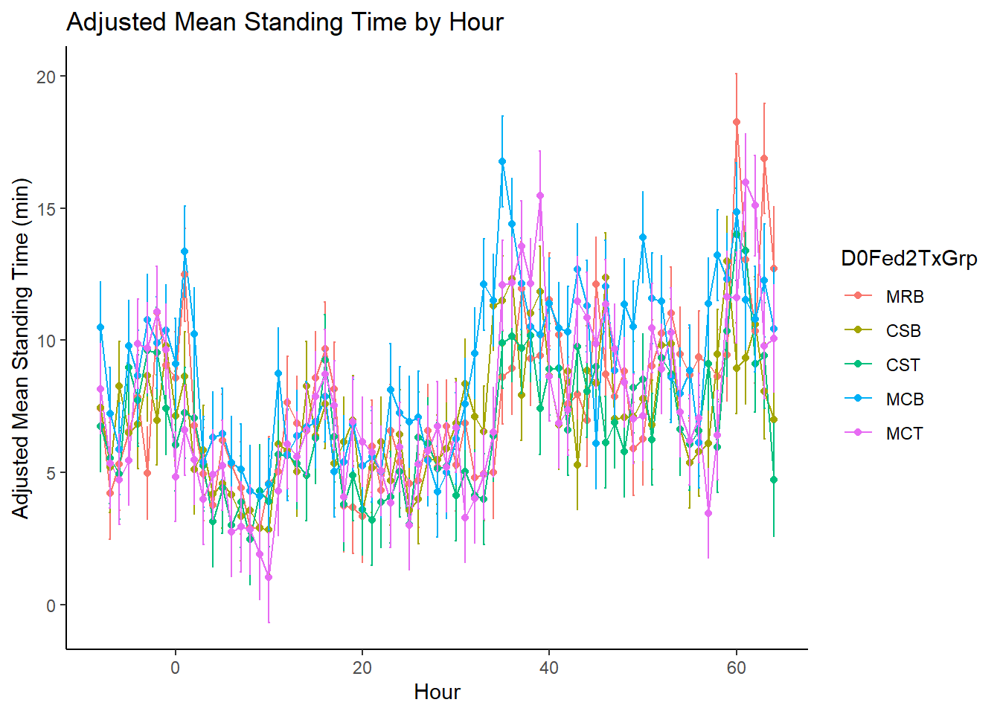
Laying
hourfull <- hour |>
filter(hour >= -8 & hour <= 64)
hourfull$D0Fed2TxGrp <- relevel(factor(hourfull$D0Fed2TxGrp), ref = "MRB")
laymodel <- lmer(as.numeric(Lying) ~ as.factor(hour) * D0Fed2TxGrp + (1 | CalfID), data = hourfull)
summary(laymodel)Linear mixed model fit by REML. t-tests use Satterthwaite's method [
lmerModLmerTest]
Formula: as.numeric(Lying) ~ as.factor(hour) * D0Fed2TxGrp + (1 | CalfID)
Data: hourfull
REML criterion at convergence: 77856.6
Scaled residuals:
Min 1Q Median 3Q Max
-5.5978 -0.3498 0.1837 0.6121 2.8231
Random effects:
Groups Name Variance Std.Dev.
CalfID (Intercept) 9.044 3.007
Residual 83.671 9.147
Number of obs: 10868, groups: CalfID, 151
Fixed effects:
Estimate Std. Error df t value
(Intercept) 5.258e+01 1.788e+00 6.266e+03 29.408
as.factor(hour)-7 3.209e+00 2.402e+00 1.036e+04 1.336
as.factor(hour)-6 2.097e+00 2.402e+00 1.036e+04 0.873
as.factor(hour)-5 8.575e-01 2.402e+00 1.036e+04 0.357
as.factor(hour)-4 -4.345e-01 2.402e+00 1.036e+04 -0.181
as.factor(hour)-3 2.448e+00 2.402e+00 1.036e+04 1.019
as.factor(hour)-2 -3.630e+00 2.402e+00 1.036e+04 -1.511
as.factor(hour)-1 -1.640e+00 2.402e+00 1.036e+04 -0.683
as.factor(hour)0 -4.615e+01 2.402e+00 1.036e+04 -19.211
as.factor(hour)1 -5.056e+00 2.402e+00 1.036e+04 -2.105
as.factor(hour)2 6.345e-01 2.402e+00 1.036e+04 0.264
as.factor(hour)3 2.486e+00 2.402e+00 1.036e+04 1.035
as.factor(hour)4 3.658e+00 2.402e+00 1.036e+04 1.523
as.factor(hour)5 1.217e+00 2.402e+00 1.036e+04 0.507
as.factor(hour)6 2.129e+00 2.402e+00 1.036e+04 0.886
as.factor(hour)7 3.006e+00 2.402e+00 1.036e+04 1.252
as.factor(hour)8 4.526e+00 2.402e+00 1.036e+04 1.884
as.factor(hour)9 4.506e+00 2.402e+00 1.036e+04 1.876
as.factor(hour)10 2.829e+00 2.402e+00 1.036e+04 1.178
as.factor(hour)11 2.399e+00 2.402e+00 1.036e+04 0.999
as.factor(hour)12 -2.247e-01 2.402e+00 1.036e+04 -0.094
as.factor(hour)13 5.511e-01 2.402e+00 1.036e+04 0.229
as.factor(hour)14 8.316e-01 2.402e+00 1.036e+04 0.346
as.factor(hour)15 -1.147e+00 2.402e+00 1.036e+04 -0.478
as.factor(hour)16 -2.262e+00 2.402e+00 1.036e+04 -0.942
as.factor(hour)17 -7.471e-01 2.402e+00 1.036e+04 -0.311
as.factor(hour)18 3.681e+00 2.402e+00 1.036e+04 1.532
as.factor(hour)19 3.739e+00 2.402e+00 1.036e+04 1.556
as.factor(hour)20 4.078e+00 2.402e+00 1.036e+04 1.697
as.factor(hour)21 1.429e+00 2.402e+00 1.036e+04 0.595
as.factor(hour)22 3.101e+00 2.402e+00 1.036e+04 1.291
as.factor(hour)23 8.356e-01 2.402e+00 1.036e+04 0.348
as.factor(hour)24 2.013e+00 2.402e+00 1.036e+04 0.838
as.factor(hour)25 2.831e+00 2.402e+00 1.036e+04 1.179
as.factor(hour)26 2.736e+00 2.402e+00 1.036e+04 1.139
as.factor(hour)27 8.437e-01 2.402e+00 1.036e+04 0.351
as.factor(hour)28 2.213e+00 2.402e+00 1.036e+04 0.921
as.factor(hour)29 6.764e-01 2.402e+00 1.036e+04 0.282
as.factor(hour)30 2.138e+00 2.402e+00 1.036e+04 0.890
as.factor(hour)31 5.460e-01 2.402e+00 1.036e+04 0.227
as.factor(hour)32 2.616e+00 2.402e+00 1.036e+04 1.089
as.factor(hour)33 2.482e+00 2.402e+00 1.036e+04 1.033
as.factor(hour)34 2.418e+00 2.402e+00 1.036e+04 1.007
as.factor(hour)35 -1.175e+00 2.402e+00 1.036e+04 -0.489
as.factor(hour)36 -1.520e+00 2.402e+00 1.036e+04 -0.633
as.factor(hour)37 -4.543e+00 2.402e+00 1.036e+04 -1.891
as.factor(hour)38 -1.879e+00 2.402e+00 1.036e+04 -0.782
as.factor(hour)39 -2.001e+00 2.402e+00 1.036e+04 -0.833
as.factor(hour)40 -4.118e+00 2.402e+00 1.036e+04 -1.714
as.factor(hour)41 -2.792e+00 2.402e+00 1.036e+04 -1.162
as.factor(hour)42 -1.822e-01 2.402e+00 1.036e+04 -0.076
as.factor(hour)43 -5.368e-01 2.402e+00 1.036e+04 -0.223
as.factor(hour)44 4.483e-01 2.402e+00 1.036e+04 0.187
as.factor(hour)45 -4.716e+00 2.402e+00 1.036e+04 -1.963
as.factor(hour)46 -1.295e+00 2.402e+00 1.036e+04 -0.539
as.factor(hour)47 -4.477e-01 2.402e+00 1.036e+04 -0.186
as.factor(hour)48 -1.402e+00 2.402e+00 1.036e+04 -0.584
as.factor(hour)49 1.524e+00 2.402e+00 1.036e+04 0.634
as.factor(hour)50 1.137e+00 2.402e+00 1.036e+04 0.473
as.factor(hour)51 -1.595e+00 2.402e+00 1.036e+04 -0.664
as.factor(hour)52 -2.857e+00 2.402e+00 1.036e+04 -1.189
as.factor(hour)53 -3.607e+00 2.402e+00 1.036e+04 -1.502
as.factor(hour)54 -2.066e+00 2.402e+00 1.036e+04 -0.860
as.factor(hour)55 -1.280e+00 2.402e+00 1.036e+04 -0.533
as.factor(hour)56 -1.935e+00 2.402e+00 1.036e+04 -0.806
as.factor(hour)57 -1.700e+00 2.402e+00 1.036e+04 -0.708
as.factor(hour)58 -1.221e+00 2.402e+00 1.036e+04 -0.508
as.factor(hour)59 -5.278e+00 2.402e+00 1.036e+04 -2.197
as.factor(hour)60 -1.092e+01 2.471e+00 1.036e+04 -4.419
as.factor(hour)61 -6.333e+00 2.498e+00 1.036e+04 -2.536
as.factor(hour)62 -7.071e+00 2.556e+00 1.036e+04 -2.766
as.factor(hour)63 -1.589e+01 2.662e+00 1.036e+04 -5.971
as.factor(hour)64 -5.485e+00 2.854e+00 1.037e+04 -1.922
D0Fed2TxGrpCSB -2.416e-02 2.488e+00 6.266e+03 -0.010
D0Fed2TxGrpCST 6.628e-01 2.508e+00 6.266e+03 0.264
D0Fed2TxGrpMCB -3.072e+00 2.508e+00 6.266e+03 -1.225
D0Fed2TxGrpMCT -7.446e-01 2.488e+00 6.266e+03 -0.299
as.factor(hour)-7:D0Fed2TxGrpCSB -9.522e-01 3.342e+00 1.036e+04 -0.285
as.factor(hour)-6:D0Fed2TxGrpCSB -2.925e+00 3.342e+00 1.036e+04 -0.875
as.factor(hour)-5:D0Fed2TxGrpCSB 1.060e-01 3.342e+00 1.036e+04 0.032
as.factor(hour)-4:D0Fed2TxGrpCSB 1.038e+00 3.342e+00 1.036e+04 0.311
as.factor(hour)-3:D0Fed2TxGrpCSB -3.654e+00 3.342e+00 1.036e+04 -1.093
as.factor(hour)-2:D0Fed2TxGrpCSB 4.091e+00 3.342e+00 1.036e+04 1.224
as.factor(hour)-1:D0Fed2TxGrpCSB -7.012e-01 3.342e+00 1.036e+04 -0.210
as.factor(hour)0:D0Fed2TxGrpCSB 1.450e+00 3.342e+00 1.036e+04 0.434
as.factor(hour)1:D0Fed2TxGrpCSB 3.870e+00 3.342e+00 1.036e+04 1.158
as.factor(hour)2:D0Fed2TxGrpCSB 1.690e+00 3.342e+00 1.036e+04 0.506
as.factor(hour)3:D0Fed2TxGrpCSB -8.910e-01 3.342e+00 1.036e+04 -0.267
as.factor(hour)4:D0Fed2TxGrpCSB -4.032e-01 3.342e+00 1.036e+04 -0.121
as.factor(hour)5:D0Fed2TxGrpCSB 1.632e+00 3.342e+00 1.036e+04 0.488
as.factor(hour)6:D0Fed2TxGrpCSB 1.149e+00 3.342e+00 1.036e+04 0.344
as.factor(hour)7:D0Fed2TxGrpCSB 1.089e+00 3.342e+00 1.036e+04 0.326
as.factor(hour)8:D0Fed2TxGrpCSB -6.549e-01 3.342e+00 1.036e+04 -0.196
as.factor(hour)9:D0Fed2TxGrpCSB 4.264e-02 3.342e+00 1.036e+04 0.013
as.factor(hour)10:D0Fed2TxGrpCSB 1.766e+00 3.342e+00 1.036e+04 0.528
as.factor(hour)11:D0Fed2TxGrpCSB -1.041e+00 3.342e+00 1.036e+04 -0.311
as.factor(hour)12:D0Fed2TxGrpCSB 1.859e+00 3.342e+00 1.036e+04 0.556
as.factor(hour)13:D0Fed2TxGrpCSB 1.868e+00 3.342e+00 1.036e+04 0.559
as.factor(hour)14:D0Fed2TxGrpCSB -1.641e+00 3.342e+00 1.036e+04 -0.491
as.factor(hour)15:D0Fed2TxGrpCSB 2.223e+00 3.342e+00 1.036e+04 0.665
as.factor(hour)16:D0Fed2TxGrpCSB 2.120e+00 3.342e+00 1.036e+04 0.634
as.factor(hour)17:D0Fed2TxGrpCSB 2.841e+00 3.342e+00 1.036e+04 0.850
as.factor(hour)18:D0Fed2TxGrpCSB -2.386e+00 3.342e+00 1.036e+04 -0.714
as.factor(hour)19:D0Fed2TxGrpCSB -3.255e+00 3.342e+00 1.036e+04 -0.974
as.factor(hour)20:D0Fed2TxGrpCSB -2.432e-01 3.342e+00 1.036e+04 -0.073
as.factor(hour)21:D0Fed2TxGrpCSB 8.390e-01 3.342e+00 1.036e+04 0.251
as.factor(hour)22:D0Fed2TxGrpCSB -1.801e+00 3.342e+00 1.036e+04 -0.539
as.factor(hour)23:D0Fed2TxGrpCSB 1.920e+00 3.342e+00 1.036e+04 0.574
as.factor(hour)24:D0Fed2TxGrpCSB -1.013e+00 3.342e+00 1.036e+04 -0.303
as.factor(hour)25:D0Fed2TxGrpCSB 1.036e+00 3.342e+00 1.036e+04 0.310
as.factor(hour)26:D0Fed2TxGrpCSB 7.154e-01 3.342e+00 1.036e+04 0.214
as.factor(hour)27:D0Fed2TxGrpCSB 1.084e+00 3.342e+00 1.036e+04 0.324
as.factor(hour)28:D0Fed2TxGrpCSB -2.552e-01 3.342e+00 1.036e+04 -0.076
as.factor(hour)29:D0Fed2TxGrpCSB 8.558e-01 3.342e+00 1.036e+04 0.256
as.factor(hour)30:D0Fed2TxGrpCSB -1.540e+00 3.342e+00 1.036e+04 -0.461
as.factor(hour)31:D0Fed2TxGrpCSB -1.441e+00 3.342e+00 1.036e+04 -0.431
as.factor(hour)32:D0Fed2TxGrpCSB -2.289e+00 3.342e+00 1.036e+04 -0.685
as.factor(hour)33:D0Fed2TxGrpCSB -1.600e+00 3.342e+00 1.036e+04 -0.479
as.factor(hour)34:D0Fed2TxGrpCSB -6.282e+00 3.342e+00 1.036e+04 -1.880
as.factor(hour)35:D0Fed2TxGrpCSB -2.877e+00 3.342e+00 1.036e+04 -0.861
as.factor(hour)36:D0Fed2TxGrpCSB -3.364e+00 3.342e+00 1.036e+04 -1.007
as.factor(hour)37:D0Fed2TxGrpCSB 4.071e+00 3.342e+00 1.036e+04 1.218
as.factor(hour)38:D0Fed2TxGrpCSB -1.692e+00 3.342e+00 1.036e+04 -0.506
as.factor(hour)39:D0Fed2TxGrpCSB -2.410e+00 3.342e+00 1.036e+04 -0.721
as.factor(hour)40:D0Fed2TxGrpCSB 2.915e+00 3.342e+00 1.036e+04 0.872
as.factor(hour)41:D0Fed2TxGrpCSB 3.430e+00 3.342e+00 1.036e+04 1.026
as.factor(hour)42:D0Fed2TxGrpCSB -1.200e+00 3.342e+00 1.036e+04 -0.359
as.factor(hour)43:D0Fed2TxGrpCSB 2.691e+00 3.342e+00 1.036e+04 0.805
as.factor(hour)44:D0Fed2TxGrpCSB -1.869e+00 3.342e+00 1.036e+04 -0.559
as.factor(hour)45:D0Fed2TxGrpCSB 3.776e+00 3.342e+00 1.036e+04 1.130
as.factor(hour)46:D0Fed2TxGrpCSB -3.634e+00 3.342e+00 1.036e+04 -1.087
as.factor(hour)47:D0Fed2TxGrpCSB 8.649e-01 3.342e+00 1.036e+04 0.259
as.factor(hour)48:D0Fed2TxGrpCSB 1.774e+00 3.342e+00 1.036e+04 0.531
as.factor(hour)49:D0Fed2TxGrpCSB -1.182e+00 3.342e+00 1.036e+04 -0.354
as.factor(hour)50:D0Fed2TxGrpCSB -1.482e+00 3.342e+00 1.036e+04 -0.444
as.factor(hour)51:D0Fed2TxGrpCSB 2.235e+00 3.342e+00 1.036e+04 0.669
as.factor(hour)52:D0Fed2TxGrpCSB 4.865e-01 3.342e+00 1.036e+04 0.146
as.factor(hour)53:D0Fed2TxGrpCSB 1.187e+00 3.342e+00 1.036e+04 0.355
as.factor(hour)54:D0Fed2TxGrpCSB 2.868e+00 3.342e+00 1.036e+04 0.858
as.factor(hour)55:D0Fed2TxGrpCSB 3.368e+00 3.342e+00 1.036e+04 1.008
as.factor(hour)56:D0Fed2TxGrpCSB 3.593e+00 3.342e+00 1.036e+04 1.075
as.factor(hour)57:D0Fed2TxGrpCSB 3.045e+00 3.342e+00 1.036e+04 0.911
as.factor(hour)58:D0Fed2TxGrpCSB -7.997e-01 3.342e+00 1.036e+04 -0.239
as.factor(hour)59:D0Fed2TxGrpCSB -5.004e-01 3.342e+00 1.036e+04 -0.150
as.factor(hour)60:D0Fed2TxGrpCSB 8.181e+00 3.405e+00 1.036e+04 2.402
as.factor(hour)61:D0Fed2TxGrpCSB 2.738e+00 3.439e+00 1.036e+04 0.796
as.factor(hour)62:D0Fed2TxGrpCSB 3.871e+00 3.512e+00 1.036e+04 1.102
as.factor(hour)63:D0Fed2TxGrpCSB 8.826e+00 3.590e+00 1.036e+04 2.459
as.factor(hour)64:D0Fed2TxGrpCSB 1.294e+00 3.829e+00 1.036e+04 0.338
as.factor(hour)-7:D0Fed2TxGrpCST -1.986e+00 3.369e+00 1.036e+04 -0.590
as.factor(hour)-6:D0Fed2TxGrpCST -2.999e-01 3.369e+00 1.036e+04 -0.089
as.factor(hour)-5:D0Fed2TxGrpCST -3.069e+00 3.369e+00 1.036e+04 -0.911
as.factor(hour)-4:D0Fed2TxGrpCST -5.272e-01 3.369e+00 1.036e+04 -0.156
as.factor(hour)-3:D0Fed2TxGrpCST -5.314e+00 3.369e+00 1.036e+04 -1.578
as.factor(hour)-2:D0Fed2TxGrpCST 8.666e-01 3.369e+00 1.036e+04 0.257
as.factor(hour)-1:D0Fed2TxGrpCST 9.869e-01 3.369e+00 1.036e+04 0.293
as.factor(hour)0:D0Fed2TxGrpCST 1.871e+00 3.369e+00 1.036e+04 0.555
as.factor(hour)1:D0Fed2TxGrpCST 4.555e+00 3.369e+00 1.036e+04 1.352
as.factor(hour)2:D0Fed2TxGrpCST -9.484e-01 3.369e+00 1.036e+04 -0.282
as.factor(hour)3:D0Fed2TxGrpCST -9.973e-01 3.369e+00 1.036e+04 -0.296
as.factor(hour)4:D0Fed2TxGrpCST -5.693e-02 3.369e+00 1.036e+04 -0.017
as.factor(hour)5:D0Fed2TxGrpCST 1.121e+00 3.369e+00 1.036e+04 0.333
as.factor(hour)6:D0Fed2TxGrpCST 1.633e+00 3.369e+00 1.036e+04 0.485
as.factor(hour)7:D0Fed2TxGrpCST -1.335e-01 3.369e+00 1.036e+04 -0.040
as.factor(hour)8:D0Fed2TxGrpCST -2.475e-01 3.369e+00 1.036e+04 -0.073
as.factor(hour)9:D0Fed2TxGrpCST -2.059e+00 3.369e+00 1.036e+04 -0.611
as.factor(hour)10:D0Fed2TxGrpCST 2.125e-02 3.369e+00 1.036e+04 0.006
as.factor(hour)11:D0Fed2TxGrpCST -1.317e+00 3.369e+00 1.036e+04 -0.391
as.factor(hour)12:D0Fed2TxGrpCST 1.332e+00 3.369e+00 1.036e+04 0.396
as.factor(hour)13:D0Fed2TxGrpCST 8.700e-01 3.369e+00 1.036e+04 0.258
as.factor(hour)14:D0Fed2TxGrpCST 1.037e+00 3.369e+00 1.036e+04 0.308
as.factor(hour)15:D0Fed2TxGrpCST 1.600e+00 3.369e+00 1.036e+04 0.475
as.factor(hour)16:D0Fed2TxGrpCST -2.213e-01 3.369e+00 1.036e+04 -0.066
as.factor(hour)17:D0Fed2TxGrpCST 1.139e+00 3.369e+00 1.036e+04 0.338
as.factor(hour)18:D0Fed2TxGrpCST -7.088e-01 3.369e+00 1.036e+04 -0.210
as.factor(hour)19:D0Fed2TxGrpCST -1.881e+00 3.369e+00 1.036e+04 -0.558
as.factor(hour)20:D0Fed2TxGrpCST -9.231e-01 3.369e+00 1.036e+04 -0.274
as.factor(hour)21:D0Fed2TxGrpCST 2.118e+00 3.369e+00 1.036e+04 0.629
as.factor(hour)22:D0Fed2TxGrpCST -2.195e-01 3.369e+00 1.036e+04 -0.065
as.factor(hour)23:D0Fed2TxGrpCST 1.857e+00 3.369e+00 1.036e+04 0.551
as.factor(hour)24:D0Fed2TxGrpCST -2.993e-01 3.369e+00 1.036e+04 -0.089
as.factor(hour)25:D0Fed2TxGrpCST 8.823e-01 3.369e+00 1.036e+04 0.262
as.factor(hour)26:D0Fed2TxGrpCST -2.300e+00 3.369e+00 1.036e+04 -0.683
as.factor(hour)27:D0Fed2TxGrpCST -1.931e-01 3.369e+00 1.036e+04 -0.057
as.factor(hour)28:D0Fed2TxGrpCST -6.127e-01 3.369e+00 1.036e+04 -0.182
as.factor(hour)29:D0Fed2TxGrpCST 8.458e-01 3.369e+00 1.036e+04 0.251
as.factor(hour)30:D0Fed2TxGrpCST 4.810e-01 3.369e+00 1.036e+04 0.143
as.factor(hour)31:D0Fed2TxGrpCST 1.189e+00 3.369e+00 1.036e+04 0.353
as.factor(hour)32:D0Fed2TxGrpCST 5.019e-03 3.369e+00 1.036e+04 0.001
as.factor(hour)33:D0Fed2TxGrpCST 2.784e-01 3.369e+00 1.036e+04 0.083
as.factor(hour)34:D0Fed2TxGrpCST -2.037e+00 3.369e+00 1.036e+04 -0.605
as.factor(hour)35:D0Fed2TxGrpCST -1.962e+00 3.369e+00 1.036e+04 -0.582
as.factor(hour)36:D0Fed2TxGrpCST -1.888e+00 3.369e+00 1.036e+04 -0.560
as.factor(hour)37:D0Fed2TxGrpCST 1.595e+00 3.369e+00 1.036e+04 0.473
as.factor(hour)38:D0Fed2TxGrpCST -1.536e+00 3.369e+00 1.036e+04 -0.456
as.factor(hour)39:D0Fed2TxGrpCST 1.346e+00 3.369e+00 1.036e+04 0.400
as.factor(hour)40:D0Fed2TxGrpCST 1.973e+00 3.369e+00 1.036e+04 0.586
as.factor(hour)41:D0Fed2TxGrpCST 5.947e-01 3.369e+00 1.036e+04 0.177
as.factor(hour)42:D0Fed2TxGrpCST 3.339e-01 3.369e+00 1.036e+04 0.099
as.factor(hour)43:D0Fed2TxGrpCST -2.475e+00 3.369e+00 1.036e+04 -0.735
as.factor(hour)44:D0Fed2TxGrpCST -1.752e+00 3.369e+00 1.036e+04 -0.520
as.factor(hour)45:D0Fed2TxGrpCST 2.483e+00 3.369e+00 1.036e+04 0.737
as.factor(hour)46:D0Fed2TxGrpCST 1.912e+00 3.369e+00 1.036e+04 0.567
as.factor(hour)47:D0Fed2TxGrpCST 3.188e-01 3.369e+00 1.036e+04 0.095
as.factor(hour)48:D0Fed2TxGrpCST 2.364e+00 3.369e+00 1.036e+04 0.702
as.factor(hour)49:D0Fed2TxGrpCST -2.991e+00 3.369e+00 1.036e+04 -0.888
as.factor(hour)50:D0Fed2TxGrpCST -2.893e+00 3.369e+00 1.036e+04 -0.859
as.factor(hour)51:D0Fed2TxGrpCST 2.100e+00 3.369e+00 1.036e+04 0.623
as.factor(hour)52:D0Fed2TxGrpCST 2.763e-01 3.369e+00 1.036e+04 0.082
as.factor(hour)53:D0Fed2TxGrpCST 1.650e+00 3.369e+00 1.036e+04 0.490
as.factor(hour)54:D0Fed2TxGrpCST 2.197e+00 3.369e+00 1.036e+04 0.652
as.factor(hour)55:D0Fed2TxGrpCST 1.978e+00 3.369e+00 1.036e+04 0.587
as.factor(hour)56:D0Fed2TxGrpCST 2.110e+00 3.369e+00 1.036e+04 0.626
as.factor(hour)57:D0Fed2TxGrpCST -6.422e-01 3.369e+00 1.036e+04 -0.191
as.factor(hour)58:D0Fed2TxGrpCST 2.017e+00 3.369e+00 1.036e+04 0.599
as.factor(hour)59:D0Fed2TxGrpCST -2.575e-02 3.369e+00 1.036e+04 -0.008
as.factor(hour)60:D0Fed2TxGrpCST 3.564e+00 3.433e+00 1.036e+04 1.038
as.factor(hour)61:D0Fed2TxGrpCST -2.149e+00 3.467e+00 1.036e+04 -0.620
as.factor(hour)62:D0Fed2TxGrpCST -2.013e+00 3.542e+00 1.036e+04 -0.568
as.factor(hour)63:D0Fed2TxGrpCST 8.870e+00 3.700e+00 1.036e+04 2.397
as.factor(hour)64:D0Fed2TxGrpCST 4.430e+00 3.919e+00 1.037e+04 1.130
as.factor(hour)-7:D0Fed2TxGrpMCB 4.636e-02 3.369e+00 1.036e+04 0.014
as.factor(hour)-6:D0Fed2TxGrpMCB 2.511e+00 3.369e+00 1.036e+04 0.745
as.factor(hour)-5:D0Fed2TxGrpMCB -1.547e-01 3.369e+00 1.036e+04 -0.046
as.factor(hour)-4:D0Fed2TxGrpMCB 2.258e+00 3.369e+00 1.036e+04 0.670
as.factor(hour)-3:D0Fed2TxGrpMCB -2.716e+00 3.369e+00 1.036e+04 -0.806
as.factor(hour)-2:D0Fed2TxGrpMCB 4.212e+00 3.369e+00 1.036e+04 1.250
as.factor(hour)-1:D0Fed2TxGrpMCB 1.755e+00 3.369e+00 1.036e+04 0.521
as.factor(hour)0:D0Fed2TxGrpMCB 2.525e+00 3.369e+00 1.036e+04 0.750
as.factor(hour)1:D0Fed2TxGrpMCB 2.181e+00 3.369e+00 1.036e+04 0.647
as.factor(hour)2:D0Fed2TxGrpMCB -3.900e-01 3.369e+00 1.036e+04 -0.116
as.factor(hour)3:D0Fed2TxGrpMCB 2.615e+00 3.369e+00 1.036e+04 0.776
as.factor(hour)4:D0Fed2TxGrpMCB 5.142e-01 3.369e+00 1.036e+04 0.153
as.factor(hour)5:D0Fed2TxGrpMCB 2.817e+00 3.369e+00 1.036e+04 0.836
as.factor(hour)6:D0Fed2TxGrpMCB 2.981e+00 3.369e+00 1.036e+04 0.885
as.factor(hour)7:D0Fed2TxGrpMCB 2.370e+00 3.369e+00 1.036e+04 0.703
as.factor(hour)8:D0Fed2TxGrpMCB 1.665e+00 3.369e+00 1.036e+04 0.494
as.factor(hour)9:D0Fed2TxGrpMCB 1.897e+00 3.369e+00 1.036e+04 0.563
as.factor(hour)10:D0Fed2TxGrpMCB 3.103e+00 3.369e+00 1.036e+04 0.921
as.factor(hour)11:D0Fed2TxGrpMCB -6.455e-01 3.369e+00 1.036e+04 -0.192
as.factor(hour)12:D0Fed2TxGrpMCB 5.045e+00 3.369e+00 1.036e+04 1.498
as.factor(hour)13:D0Fed2TxGrpMCB 3.554e+00 3.369e+00 1.036e+04 1.055
as.factor(hour)14:D0Fed2TxGrpMCB 2.950e+00 3.369e+00 1.036e+04 0.876
as.factor(hour)15:D0Fed2TxGrpMCB 4.736e+00 3.369e+00 1.036e+04 1.406
as.factor(hour)16:D0Fed2TxGrpMCB 4.877e+00 3.369e+00 1.036e+04 1.448
as.factor(hour)17:D0Fed2TxGrpMCB 6.199e+00 3.369e+00 1.036e+04 1.840
as.factor(hour)18:D0Fed2TxGrpMCB 1.401e+00 3.369e+00 1.036e+04 0.416
as.factor(hour)19:D0Fed2TxGrpMCB -3.684e-02 3.369e+00 1.036e+04 -0.011
as.factor(hour)20:D0Fed2TxGrpMCB 1.167e+00 3.369e+00 1.036e+04 0.347
as.factor(hour)21:D0Fed2TxGrpMCB 3.458e+00 3.369e+00 1.036e+04 1.027
as.factor(hour)22:D0Fed2TxGrpMCB 2.374e+00 3.369e+00 1.036e+04 0.705
as.factor(hour)23:D0Fed2TxGrpMCB 1.522e+00 3.369e+00 1.036e+04 0.452
as.factor(hour)24:D0Fed2TxGrpMCB 1.215e+00 3.369e+00 1.036e+04 0.361
as.factor(hour)25:D0Fed2TxGrpMCB 7.406e-01 3.369e+00 1.036e+04 0.220
as.factor(hour)26:D0Fed2TxGrpMCB 6.560e-01 3.369e+00 1.036e+04 0.195
as.factor(hour)27:D0Fed2TxGrpMCB 4.185e+00 3.369e+00 1.036e+04 1.242
as.factor(hour)28:D0Fed2TxGrpMCB 4.002e+00 3.369e+00 1.036e+04 1.188
as.factor(hour)29:D0Fed2TxGrpMCB 4.824e+00 3.369e+00 1.036e+04 1.432
as.factor(hour)30:D0Fed2TxGrpMCB 2.076e+00 3.369e+00 1.036e+04 0.616
as.factor(hour)31:D0Fed2TxGrpMCB 2.356e+00 3.369e+00 1.036e+04 0.699
as.factor(hour)32:D0Fed2TxGrpMCB -1.632e+00 3.369e+00 1.036e+04 -0.484
as.factor(hour)33:D0Fed2TxGrpMCB -4.104e+00 3.369e+00 1.036e+04 -1.218
as.factor(hour)34:D0Fed2TxGrpMCB -3.441e+00 3.369e+00 1.036e+04 -1.021
as.factor(hour)35:D0Fed2TxGrpMCB -5.104e+00 3.369e+00 1.036e+04 -1.515
as.factor(hour)36:D0Fed2TxGrpMCB -2.393e+00 3.369e+00 1.036e+04 -0.710
as.factor(hour)37:D0Fed2TxGrpMCB 2.891e+00 3.369e+00 1.036e+04 0.858
as.factor(hour)38:D0Fed2TxGrpMCB 1.838e+00 3.369e+00 1.036e+04 0.546
as.factor(hour)39:D0Fed2TxGrpMCB 2.277e+00 3.369e+00 1.036e+04 0.676
as.factor(hour)40:D0Fed2TxGrpMCB 3.227e+00 3.369e+00 1.036e+04 0.958
as.factor(hour)41:D0Fed2TxGrpMCB 2.818e+00 3.369e+00 1.036e+04 0.836
as.factor(hour)42:D0Fed2TxGrpMCB 3.661e-01 3.369e+00 1.036e+04 0.109
as.factor(hour)43:D0Fed2TxGrpMCB -1.663e+00 3.369e+00 1.036e+04 -0.494
as.factor(hour)44:D0Fed2TxGrpMCB -1.256e+00 3.369e+00 1.036e+04 -0.373
as.factor(hour)45:D0Fed2TxGrpMCB 9.112e+00 3.369e+00 1.036e+04 2.705
as.factor(hour)46:D0Fed2TxGrpMCB -2.652e-01 3.369e+00 1.036e+04 -0.079
as.factor(hour)47:D0Fed2TxGrpMCB 2.094e+00 3.369e+00 1.036e+04 0.622
as.factor(hour)48:D0Fed2TxGrpMCB 5.278e-01 3.369e+00 1.036e+04 0.157
as.factor(hour)49:D0Fed2TxGrpMCB -1.544e+00 3.369e+00 1.036e+04 -0.458
as.factor(hour)50:D0Fed2TxGrpMCB -4.539e+00 3.369e+00 1.036e+04 -1.347
as.factor(hour)51:D0Fed2TxGrpMCB 4.959e-01 3.369e+00 1.036e+04 0.147
as.factor(hour)52:D0Fed2TxGrpMCB 1.869e+00 3.369e+00 1.036e+04 0.555
as.factor(hour)53:D0Fed2TxGrpMCB 5.487e+00 3.369e+00 1.036e+04 1.629
as.factor(hour)54:D0Fed2TxGrpMCB 4.569e+00 3.369e+00 1.036e+04 1.356
as.factor(hour)55:D0Fed2TxGrpMCB 2.916e+00 3.369e+00 1.036e+04 0.866
as.factor(hour)56:D0Fed2TxGrpMCB 6.302e+00 3.369e+00 1.036e+04 1.871
as.factor(hour)57:D0Fed2TxGrpMCB 8.106e-01 3.369e+00 1.036e+04 0.241
as.factor(hour)58:D0Fed2TxGrpMCB -1.504e+00 3.369e+00 1.036e+04 -0.447
as.factor(hour)59:D0Fed2TxGrpMCB 1.898e-01 3.369e+00 1.036e+04 0.056
as.factor(hour)60:D0Fed2TxGrpMCB 5.293e+00 3.481e+00 1.036e+04 1.520
as.factor(hour)61:D0Fed2TxGrpMCB 1.858e+00 3.519e+00 1.036e+04 0.528
as.factor(hour)62:D0Fed2TxGrpMCB 4.876e+00 3.625e+00 1.036e+04 1.345
as.factor(hour)63:D0Fed2TxGrpMCB 1.319e+01 3.781e+00 1.036e+04 3.490
as.factor(hour)64:D0Fed2TxGrpMCB 1.056e+00 4.024e+00 1.037e+04 0.262
as.factor(hour)-7:D0Fed2TxGrpMCT -3.984e-01 3.342e+00 1.036e+04 -0.119
as.factor(hour)-6:D0Fed2TxGrpMCT 1.339e+00 3.342e+00 1.036e+04 0.401
as.factor(hour)-5:D0Fed2TxGrpMCT 1.851e+00 3.342e+00 1.036e+04 0.554
as.factor(hour)-4:D0Fed2TxGrpMCT -1.275e+00 3.342e+00 1.036e+04 -0.381
as.factor(hour)-3:D0Fed2TxGrpMCT -3.999e+00 3.342e+00 1.036e+04 -1.197
as.factor(hour)-2:D0Fed2TxGrpMCT 7.052e-01 3.342e+00 1.036e+04 0.211
as.factor(hour)-1:D0Fed2TxGrpMCT 1.488e-01 3.342e+00 1.036e+04 0.045
as.factor(hour)0:D0Fed2TxGrpMCT 4.483e+00 3.342e+00 1.036e+04 1.341
as.factor(hour)1:D0Fed2TxGrpMCT 6.621e+00 3.342e+00 1.036e+04 1.981
as.factor(hour)2:D0Fed2TxGrpMCT 2.039e+00 3.342e+00 1.036e+04 0.610
as.factor(hour)3:D0Fed2TxGrpMCT 1.700e+00 3.342e+00 1.036e+04 0.509
as.factor(hour)4:D0Fed2TxGrpMCT -4.140e-01 3.342e+00 1.036e+04 -0.124
as.factor(hour)5:D0Fed2TxGrpMCT 1.683e+00 3.342e+00 1.036e+04 0.504
as.factor(hour)6:D0Fed2TxGrpMCT 3.281e+00 3.342e+00 1.036e+04 0.982
as.factor(hour)7:D0Fed2TxGrpMCT 2.222e+00 3.342e+00 1.036e+04 0.665
as.factor(hour)8:D0Fed2TxGrpMCT 8.064e-01 3.342e+00 1.036e+04 0.241
as.factor(hour)9:D0Fed2TxGrpMCT 1.761e+00 3.342e+00 1.036e+04 0.527
as.factor(hour)10:D0Fed2TxGrpMCT 4.308e+00 3.342e+00 1.036e+04 1.289
as.factor(hour)11:D0Fed2TxGrpMCT 1.453e+00 3.342e+00 1.036e+04 0.435
as.factor(hour)12:D0Fed2TxGrpMCT 2.306e+00 3.342e+00 1.036e+04 0.690
as.factor(hour)13:D0Fed2TxGrpMCT 2.017e+00 3.342e+00 1.036e+04 0.604
as.factor(hour)14:D0Fed2TxGrpMCT 7.162e-01 3.342e+00 1.036e+04 0.214
as.factor(hour)15:D0Fed2TxGrpMCT 1.446e+00 3.342e+00 1.036e+04 0.433
as.factor(hour)16:D0Fed2TxGrpMCT 1.720e+00 3.342e+00 1.036e+04 0.515
as.factor(hour)17:D0Fed2TxGrpMCT 1.378e+00 3.342e+00 1.036e+04 0.412
as.factor(hour)18:D0Fed2TxGrpMCT 4.066e-01 3.342e+00 1.036e+04 0.122
as.factor(hour)19:D0Fed2TxGrpMCT -2.482e+00 3.342e+00 1.036e+04 -0.743
as.factor(hour)20:D0Fed2TxGrpMCT -2.065e+00 3.342e+00 1.036e+04 -0.618
as.factor(hour)21:D0Fed2TxGrpMCT 9.626e-01 3.342e+00 1.036e+04 0.288
as.factor(hour)22:D0Fed2TxGrpMCT 5.006e-04 3.342e+00 1.036e+04 0.000
as.factor(hour)23:D0Fed2TxGrpMCT 3.482e+00 3.342e+00 1.036e+04 1.042
as.factor(hour)24:D0Fed2TxGrpMCT 1.938e-01 3.342e+00 1.036e+04 0.058
as.factor(hour)25:D0Fed2TxGrpMCT 2.316e+00 3.342e+00 1.036e+04 0.693
as.factor(hour)26:D0Fed2TxGrpMCT 1.068e-01 3.342e+00 1.036e+04 0.032
as.factor(hour)27:D0Fed2TxGrpMCT 1.504e+00 3.342e+00 1.036e+04 0.450
as.factor(hour)28:D0Fed2TxGrpMCT -7.971e-01 3.342e+00 1.036e+04 -0.239
as.factor(hour)29:D0Fed2TxGrpMCT 2.289e+00 3.342e+00 1.036e+04 0.685
as.factor(hour)30:D0Fed2TxGrpMCT -6.734e-01 3.342e+00 1.036e+04 -0.202
as.factor(hour)31:D0Fed2TxGrpMCT 4.338e+00 3.342e+00 1.036e+04 1.298
as.factor(hour)32:D0Fed2TxGrpMCT 1.520e+00 3.342e+00 1.036e+04 0.455
as.factor(hour)33:D0Fed2TxGrpMCT 7.630e-01 3.342e+00 1.036e+04 0.228
as.factor(hour)34:D0Fed2TxGrpMCT -7.791e-01 3.342e+00 1.036e+04 -0.233
as.factor(hour)35:D0Fed2TxGrpMCT -2.747e+00 3.342e+00 1.036e+04 -0.822
as.factor(hour)36:D0Fed2TxGrpMCT -2.507e+00 3.342e+00 1.036e+04 -0.750
as.factor(hour)37:D0Fed2TxGrpMCT -8.596e-01 3.342e+00 1.036e+04 -0.257
as.factor(hour)38:D0Fed2TxGrpMCT -2.102e+00 3.342e+00 1.036e+04 -0.629
as.factor(hour)39:D0Fed2TxGrpMCT -5.313e+00 3.342e+00 1.036e+04 -1.590
as.factor(hour)40:D0Fed2TxGrpMCT 3.637e+00 3.342e+00 1.036e+04 1.088
as.factor(hour)41:D0Fed2TxGrpMCT 4.097e+00 3.342e+00 1.036e+04 1.226
as.factor(hour)42:D0Fed2TxGrpMCT 9.892e-01 3.342e+00 1.036e+04 0.296
as.factor(hour)43:D0Fed2TxGrpMCT -2.764e+00 3.342e+00 1.036e+04 -0.827
as.factor(hour)44:D0Fed2TxGrpMCT -3.154e+00 3.342e+00 1.036e+04 -0.944
as.factor(hour)45:D0Fed2TxGrpMCT 3.003e+00 3.342e+00 1.036e+04 0.899
as.factor(hour)46:D0Fed2TxGrpMCT -1.899e+00 3.342e+00 1.036e+04 -0.568
as.factor(hour)47:D0Fed2TxGrpMCT -1.064e+00 3.342e+00 1.036e+04 -0.318
as.factor(hour)48:D0Fed2TxGrpMCT 1.159e+00 3.342e+00 1.036e+04 0.347
as.factor(hour)49:D0Fed2TxGrpMCT -3.918e-01 3.342e+00 1.036e+04 -0.117
as.factor(hour)50:D0Fed2TxGrpMCT -1.174e-01 3.342e+00 1.036e+04 -0.035
as.factor(hour)51:D0Fed2TxGrpMCT -7.062e-01 3.342e+00 1.036e+04 -0.211
as.factor(hour)52:D0Fed2TxGrpMCT 2.106e+00 3.342e+00 1.036e+04 0.630
as.factor(hour)53:D0Fed2TxGrpMCT 1.477e+00 3.342e+00 1.036e+04 0.442
as.factor(hour)54:D0Fed2TxGrpMCT 2.954e+00 3.342e+00 1.036e+04 0.884
as.factor(hour)55:D0Fed2TxGrpMCT 3.219e+00 3.342e+00 1.036e+04 0.963
as.factor(hour)56:D0Fed2TxGrpMCT 3.047e+00 3.342e+00 1.036e+04 0.912
as.factor(hour)57:D0Fed2TxGrpMCT 6.404e+00 3.342e+00 1.036e+04 1.916
as.factor(hour)58:D0Fed2TxGrpMCT 2.971e+00 3.342e+00 1.036e+04 0.889
as.factor(hour)59:D0Fed2TxGrpMCT 2.453e-01 3.342e+00 1.036e+04 0.073
as.factor(hour)60:D0Fed2TxGrpMCT 5.039e+00 3.405e+00 1.036e+04 1.480
as.factor(hour)61:D0Fed2TxGrpMCT -3.362e+00 3.487e+00 1.036e+04 -0.964
as.factor(hour)62:D0Fed2TxGrpMCT -1.619e+00 3.568e+00 1.036e+04 -0.454
as.factor(hour)63:D0Fed2TxGrpMCT 1.201e+01 3.688e+00 1.036e+04 3.258
as.factor(hour)64:D0Fed2TxGrpMCT -1.952e+00 3.853e+00 1.036e+04 -0.507
Pr(>|t|)
(Intercept) < 2e-16 ***
as.factor(hour)-7 0.181593
as.factor(hour)-6 0.382807
as.factor(hour)-5 0.721131
as.factor(hour)-4 0.856472
as.factor(hour)-3 0.308249
as.factor(hour)-2 0.130797
as.factor(hour)-1 0.494893
as.factor(hour)0 < 2e-16 ***
as.factor(hour)1 0.035324 *
as.factor(hour)2 0.791686
as.factor(hour)3 0.300701
as.factor(hour)4 0.127837
as.factor(hour)5 0.612358
as.factor(hour)6 0.375546
as.factor(hour)7 0.210780
as.factor(hour)8 0.059583 .
as.factor(hour)9 0.060725 .
as.factor(hour)10 0.238898
as.factor(hour)11 0.317887
as.factor(hour)12 0.925472
as.factor(hour)13 0.818533
as.factor(hour)14 0.729206
as.factor(hour)15 0.632990
as.factor(hour)16 0.346380
as.factor(hour)17 0.755791
as.factor(hour)18 0.125460
as.factor(hour)19 0.119667
as.factor(hour)20 0.089640 .
as.factor(hour)21 0.551851
as.factor(hour)22 0.196823
as.factor(hour)23 0.727948
as.factor(hour)24 0.402004
as.factor(hour)25 0.238612
as.factor(hour)26 0.254706
as.factor(hour)27 0.725434
as.factor(hour)28 0.356894
as.factor(hour)29 0.778261
as.factor(hour)30 0.373487
as.factor(hour)31 0.820207
as.factor(hour)32 0.276156
as.factor(hour)33 0.301484
as.factor(hour)34 0.314077
as.factor(hour)35 0.624837
as.factor(hour)36 0.526873
as.factor(hour)37 0.058619 .
as.factor(hour)38 0.434034
as.factor(hour)39 0.404966
as.factor(hour)40 0.086521 .
as.factor(hour)41 0.245156
as.factor(hour)42 0.939547
as.factor(hour)43 0.823184
as.factor(hour)44 0.851968
as.factor(hour)45 0.049670 *
as.factor(hour)46 0.589717
as.factor(hour)47 0.852155
as.factor(hour)48 0.559553
as.factor(hour)49 0.525935
as.factor(hour)50 0.636058
as.factor(hour)51 0.506762
as.factor(hour)52 0.234350
as.factor(hour)53 0.133253
as.factor(hour)54 0.389757
as.factor(hour)55 0.594015
as.factor(hour)56 0.420524
as.factor(hour)57 0.479152
as.factor(hour)58 0.611351
as.factor(hour)59 0.028042 *
as.factor(hour)60 1.00e-05 ***
as.factor(hour)61 0.011234 *
as.factor(hour)62 0.005678 **
as.factor(hour)63 2.43e-09 ***
as.factor(hour)64 0.054633 .
D0Fed2TxGrpCSB 0.992252
D0Fed2TxGrpCST 0.791538
D0Fed2TxGrpMCB 0.220629
D0Fed2TxGrpMCT 0.764702
as.factor(hour)-7:D0Fed2TxGrpCSB 0.775706
as.factor(hour)-6:D0Fed2TxGrpCSB 0.381544
as.factor(hour)-5:D0Fed2TxGrpCSB 0.974705
as.factor(hour)-4:D0Fed2TxGrpCSB 0.756179
as.factor(hour)-3:D0Fed2TxGrpCSB 0.274234
as.factor(hour)-2:D0Fed2TxGrpCSB 0.220908
as.factor(hour)-1:D0Fed2TxGrpCSB 0.833813
as.factor(hour)0:D0Fed2TxGrpCSB 0.664417
as.factor(hour)1:D0Fed2TxGrpCSB 0.246916
as.factor(hour)2:D0Fed2TxGrpCSB 0.613030
as.factor(hour)3:D0Fed2TxGrpCSB 0.789763
as.factor(hour)4:D0Fed2TxGrpCSB 0.903970
as.factor(hour)5:D0Fed2TxGrpCSB 0.625273
as.factor(hour)6:D0Fed2TxGrpCSB 0.731066
as.factor(hour)7:D0Fed2TxGrpCSB 0.744453
as.factor(hour)8:D0Fed2TxGrpCSB 0.844644
as.factor(hour)9:D0Fed2TxGrpCSB 0.989820
as.factor(hour)10:D0Fed2TxGrpCSB 0.597239
as.factor(hour)11:D0Fed2TxGrpCSB 0.755470
as.factor(hour)12:D0Fed2TxGrpCSB 0.578128
as.factor(hour)13:D0Fed2TxGrpCSB 0.576271
as.factor(hour)14:D0Fed2TxGrpCSB 0.623354
as.factor(hour)15:D0Fed2TxGrpCSB 0.505859
as.factor(hour)16:D0Fed2TxGrpCSB 0.525938
as.factor(hour)17:D0Fed2TxGrpCSB 0.395341
as.factor(hour)18:D0Fed2TxGrpCSB 0.475294
as.factor(hour)19:D0Fed2TxGrpCSB 0.330141
as.factor(hour)20:D0Fed2TxGrpCSB 0.941994
as.factor(hour)21:D0Fed2TxGrpCSB 0.801786
as.factor(hour)22:D0Fed2TxGrpCSB 0.590049
as.factor(hour)23:D0Fed2TxGrpCSB 0.565683
as.factor(hour)24:D0Fed2TxGrpCSB 0.761879
as.factor(hour)25:D0Fed2TxGrpCSB 0.756529
as.factor(hour)26:D0Fed2TxGrpCSB 0.830497
as.factor(hour)27:D0Fed2TxGrpCSB 0.745607
as.factor(hour)28:D0Fed2TxGrpCSB 0.939143
as.factor(hour)29:D0Fed2TxGrpCSB 0.797890
as.factor(hour)30:D0Fed2TxGrpCSB 0.644927
as.factor(hour)31:D0Fed2TxGrpCSB 0.666429
as.factor(hour)32:D0Fed2TxGrpCSB 0.493464
as.factor(hour)33:D0Fed2TxGrpCSB 0.632133
as.factor(hour)34:D0Fed2TxGrpCSB 0.060178 .
as.factor(hour)35:D0Fed2TxGrpCSB 0.389342
as.factor(hour)36:D0Fed2TxGrpCSB 0.314185
as.factor(hour)37:D0Fed2TxGrpCSB 0.223247
as.factor(hour)38:D0Fed2TxGrpCSB 0.612621
as.factor(hour)39:D0Fed2TxGrpCSB 0.470907
as.factor(hour)40:D0Fed2TxGrpCSB 0.383160
as.factor(hour)41:D0Fed2TxGrpCSB 0.304733
as.factor(hour)42:D0Fed2TxGrpCSB 0.719652
as.factor(hour)43:D0Fed2TxGrpCSB 0.420697
as.factor(hour)44:D0Fed2TxGrpCSB 0.576059
as.factor(hour)45:D0Fed2TxGrpCSB 0.258586
as.factor(hour)46:D0Fed2TxGrpCSB 0.276867
as.factor(hour)47:D0Fed2TxGrpCSB 0.795792
as.factor(hour)48:D0Fed2TxGrpCSB 0.595597
as.factor(hour)49:D0Fed2TxGrpCSB 0.723544
as.factor(hour)50:D0Fed2TxGrpCSB 0.657342
as.factor(hour)51:D0Fed2TxGrpCSB 0.503626
as.factor(hour)52:D0Fed2TxGrpCSB 0.884268
as.factor(hour)53:D0Fed2TxGrpCSB 0.722459
as.factor(hour)54:D0Fed2TxGrpCSB 0.390771
as.factor(hour)55:D0Fed2TxGrpCSB 0.313639
as.factor(hour)56:D0Fed2TxGrpCSB 0.282328
as.factor(hour)57:D0Fed2TxGrpCSB 0.362298
as.factor(hour)58:D0Fed2TxGrpCSB 0.810874
as.factor(hour)59:D0Fed2TxGrpCSB 0.880985
as.factor(hour)60:D0Fed2TxGrpCSB 0.016304 *
as.factor(hour)61:D0Fed2TxGrpCSB 0.425911
as.factor(hour)62:D0Fed2TxGrpCSB 0.270430
as.factor(hour)63:D0Fed2TxGrpCSB 0.013968 *
as.factor(hour)64:D0Fed2TxGrpCSB 0.735490
as.factor(hour)-7:D0Fed2TxGrpCST 0.555432
as.factor(hour)-6:D0Fed2TxGrpCST 0.929068
as.factor(hour)-5:D0Fed2TxGrpCST 0.362285
as.factor(hour)-4:D0Fed2TxGrpCST 0.875648
as.factor(hour)-3:D0Fed2TxGrpCST 0.114700
as.factor(hour)-2:D0Fed2TxGrpCST 0.797005
as.factor(hour)-1:D0Fed2TxGrpCST 0.769566
as.factor(hour)0:D0Fed2TxGrpCST 0.578627
as.factor(hour)1:D0Fed2TxGrpCST 0.176395
as.factor(hour)2:D0Fed2TxGrpCST 0.778317
as.factor(hour)3:D0Fed2TxGrpCST 0.767198
as.factor(hour)4:D0Fed2TxGrpCST 0.986516
as.factor(hour)5:D0Fed2TxGrpCST 0.739299
as.factor(hour)6:D0Fed2TxGrpCST 0.627762
as.factor(hour)7:D0Fed2TxGrpCST 0.968379
as.factor(hour)8:D0Fed2TxGrpCST 0.941427
as.factor(hour)9:D0Fed2TxGrpCST 0.541061
as.factor(hour)10:D0Fed2TxGrpCST 0.994968
as.factor(hour)11:D0Fed2TxGrpCST 0.695923
as.factor(hour)12:D0Fed2TxGrpCST 0.692450
as.factor(hour)13:D0Fed2TxGrpCST 0.796223
as.factor(hour)14:D0Fed2TxGrpCST 0.758281
as.factor(hour)15:D0Fed2TxGrpCST 0.634851
as.factor(hour)16:D0Fed2TxGrpCST 0.947633
as.factor(hour)17:D0Fed2TxGrpCST 0.735211
as.factor(hour)18:D0Fed2TxGrpCST 0.833354
as.factor(hour)19:D0Fed2TxGrpCST 0.576549
as.factor(hour)20:D0Fed2TxGrpCST 0.784067
as.factor(hour)21:D0Fed2TxGrpCST 0.529564
as.factor(hour)22:D0Fed2TxGrpCST 0.948058
as.factor(hour)23:D0Fed2TxGrpCST 0.581563
as.factor(hour)24:D0Fed2TxGrpCST 0.929199
as.factor(hour)25:D0Fed2TxGrpCST 0.793399
as.factor(hour)26:D0Fed2TxGrpCST 0.494765
as.factor(hour)27:D0Fed2TxGrpCST 0.954285
as.factor(hour)28:D0Fed2TxGrpCST 0.855691
as.factor(hour)29:D0Fed2TxGrpCST 0.801767
as.factor(hour)30:D0Fed2TxGrpCST 0.886474
as.factor(hour)31:D0Fed2TxGrpCST 0.724128
as.factor(hour)32:D0Fed2TxGrpCST 0.998811
as.factor(hour)33:D0Fed2TxGrpCST 0.934145
as.factor(hour)34:D0Fed2TxGrpCST 0.545463
as.factor(hour)35:D0Fed2TxGrpCST 0.560312
as.factor(hour)36:D0Fed2TxGrpCST 0.575257
as.factor(hour)37:D0Fed2TxGrpCST 0.635937
as.factor(hour)38:D0Fed2TxGrpCST 0.648380
as.factor(hour)39:D0Fed2TxGrpCST 0.689465
as.factor(hour)40:D0Fed2TxGrpCST 0.558032
as.factor(hour)41:D0Fed2TxGrpCST 0.859870
as.factor(hour)42:D0Fed2TxGrpCST 0.921059
as.factor(hour)43:D0Fed2TxGrpCST 0.462463
as.factor(hour)44:D0Fed2TxGrpCST 0.603104
as.factor(hour)45:D0Fed2TxGrpCST 0.461145
as.factor(hour)46:D0Fed2TxGrpCST 0.570438
as.factor(hour)47:D0Fed2TxGrpCST 0.924604
as.factor(hour)48:D0Fed2TxGrpCST 0.482865
as.factor(hour)49:D0Fed2TxGrpCST 0.374668
as.factor(hour)50:D0Fed2TxGrpCST 0.390502
as.factor(hour)51:D0Fed2TxGrpCST 0.533085
as.factor(hour)52:D0Fed2TxGrpCST 0.934624
as.factor(hour)53:D0Fed2TxGrpCST 0.624358
as.factor(hour)54:D0Fed2TxGrpCST 0.514374
as.factor(hour)55:D0Fed2TxGrpCST 0.557172
as.factor(hour)56:D0Fed2TxGrpCST 0.531200
as.factor(hour)57:D0Fed2TxGrpCST 0.848811
as.factor(hour)58:D0Fed2TxGrpCST 0.549290
as.factor(hour)59:D0Fed2TxGrpCST 0.993902
as.factor(hour)60:D0Fed2TxGrpCST 0.299233
as.factor(hour)61:D0Fed2TxGrpCST 0.535398
as.factor(hour)62:D0Fed2TxGrpCST 0.569861
as.factor(hour)63:D0Fed2TxGrpCST 0.016540 *
as.factor(hour)64:D0Fed2TxGrpCST 0.258322
as.factor(hour)-7:D0Fed2TxGrpMCB 0.989020
as.factor(hour)-6:D0Fed2TxGrpMCB 0.456118
as.factor(hour)-5:D0Fed2TxGrpMCB 0.963375
as.factor(hour)-4:D0Fed2TxGrpMCB 0.502626
as.factor(hour)-3:D0Fed2TxGrpMCB 0.420121
as.factor(hour)-2:D0Fed2TxGrpMCB 0.211202
as.factor(hour)-1:D0Fed2TxGrpMCB 0.602474
as.factor(hour)0:D0Fed2TxGrpMCB 0.453466
as.factor(hour)1:D0Fed2TxGrpMCB 0.517419
as.factor(hour)2:D0Fed2TxGrpMCB 0.907828
as.factor(hour)3:D0Fed2TxGrpMCB 0.437635
as.factor(hour)4:D0Fed2TxGrpMCB 0.878692
as.factor(hour)5:D0Fed2TxGrpMCB 0.403020
as.factor(hour)6:D0Fed2TxGrpMCB 0.376279
as.factor(hour)7:D0Fed2TxGrpMCB 0.481784
as.factor(hour)8:D0Fed2TxGrpMCB 0.621206
as.factor(hour)9:D0Fed2TxGrpMCB 0.573362
as.factor(hour)10:D0Fed2TxGrpMCB 0.357027
as.factor(hour)11:D0Fed2TxGrpMCB 0.848040
as.factor(hour)12:D0Fed2TxGrpMCB 0.134251
as.factor(hour)13:D0Fed2TxGrpMCB 0.291475
as.factor(hour)14:D0Fed2TxGrpMCB 0.381207
as.factor(hour)15:D0Fed2TxGrpMCB 0.159794
as.factor(hour)16:D0Fed2TxGrpMCB 0.147767
as.factor(hour)17:D0Fed2TxGrpMCB 0.065760 .
as.factor(hour)18:D0Fed2TxGrpMCB 0.677465
as.factor(hour)19:D0Fed2TxGrpMCB 0.991275
as.factor(hour)20:D0Fed2TxGrpMCB 0.728943
as.factor(hour)21:D0Fed2TxGrpMCB 0.304618
as.factor(hour)22:D0Fed2TxGrpMCB 0.481030
as.factor(hour)23:D0Fed2TxGrpMCB 0.651511
as.factor(hour)24:D0Fed2TxGrpMCB 0.718330
as.factor(hour)25:D0Fed2TxGrpMCB 0.825990
as.factor(hour)26:D0Fed2TxGrpMCB 0.845604
as.factor(hour)27:D0Fed2TxGrpMCB 0.214131
as.factor(hour)28:D0Fed2TxGrpMCB 0.234831
as.factor(hour)29:D0Fed2TxGrpMCB 0.152216
as.factor(hour)30:D0Fed2TxGrpMCB 0.537750
as.factor(hour)31:D0Fed2TxGrpMCB 0.484395
as.factor(hour)32:D0Fed2TxGrpMCB 0.628150
as.factor(hour)33:D0Fed2TxGrpMCB 0.223172
as.factor(hour)34:D0Fed2TxGrpMCB 0.307043
as.factor(hour)35:D0Fed2TxGrpMCB 0.129764
as.factor(hour)36:D0Fed2TxGrpMCB 0.477462
as.factor(hour)37:D0Fed2TxGrpMCB 0.390832
as.factor(hour)38:D0Fed2TxGrpMCB 0.585310
as.factor(hour)39:D0Fed2TxGrpMCB 0.499167
as.factor(hour)40:D0Fed2TxGrpMCB 0.338086
as.factor(hour)41:D0Fed2TxGrpMCB 0.402969
as.factor(hour)42:D0Fed2TxGrpMCB 0.913469
as.factor(hour)43:D0Fed2TxGrpMCB 0.621515
as.factor(hour)44:D0Fed2TxGrpMCB 0.709265
as.factor(hour)45:D0Fed2TxGrpMCB 0.006847 **
as.factor(hour)46:D0Fed2TxGrpMCB 0.937265
as.factor(hour)47:D0Fed2TxGrpMCB 0.534150
as.factor(hour)48:D0Fed2TxGrpMCB 0.875496
as.factor(hour)49:D0Fed2TxGrpMCB 0.646818
as.factor(hour)50:D0Fed2TxGrpMCB 0.177886
as.factor(hour)51:D0Fed2TxGrpMCB 0.882963
as.factor(hour)52:D0Fed2TxGrpMCB 0.579129
as.factor(hour)53:D0Fed2TxGrpMCB 0.103359
as.factor(hour)54:D0Fed2TxGrpMCB 0.174997
as.factor(hour)55:D0Fed2TxGrpMCB 0.386726
as.factor(hour)56:D0Fed2TxGrpMCB 0.061423 .
as.factor(hour)57:D0Fed2TxGrpMCB 0.809862
as.factor(hour)58:D0Fed2TxGrpMCB 0.655211
as.factor(hour)59:D0Fed2TxGrpMCB 0.955069
as.factor(hour)60:D0Fed2TxGrpMCB 0.128452
as.factor(hour)61:D0Fed2TxGrpMCB 0.597411
as.factor(hour)62:D0Fed2TxGrpMCB 0.178610
as.factor(hour)63:D0Fed2TxGrpMCB 0.000486 ***
as.factor(hour)64:D0Fed2TxGrpMCB 0.793097
as.factor(hour)-7:D0Fed2TxGrpMCT 0.905099
as.factor(hour)-6:D0Fed2TxGrpMCT 0.688571
as.factor(hour)-5:D0Fed2TxGrpMCT 0.579763
as.factor(hour)-4:D0Fed2TxGrpMCT 0.702905
as.factor(hour)-3:D0Fed2TxGrpMCT 0.231449
as.factor(hour)-2:D0Fed2TxGrpMCT 0.832890
as.factor(hour)-1:D0Fed2TxGrpMCT 0.964488
as.factor(hour)0:D0Fed2TxGrpMCT 0.179843
as.factor(hour)1:D0Fed2TxGrpMCT 0.047602 *
as.factor(hour)2:D0Fed2TxGrpMCT 0.541865
as.factor(hour)3:D0Fed2TxGrpMCT 0.610909
as.factor(hour)4:D0Fed2TxGrpMCT 0.901422
as.factor(hour)5:D0Fed2TxGrpMCT 0.614604
as.factor(hour)6:D0Fed2TxGrpMCT 0.326247
as.factor(hour)7:D0Fed2TxGrpMCT 0.506107
as.factor(hour)8:D0Fed2TxGrpMCT 0.809331
as.factor(hour)9:D0Fed2TxGrpMCT 0.598264
as.factor(hour)10:D0Fed2TxGrpMCT 0.197368
as.factor(hour)11:D0Fed2TxGrpMCT 0.663793
as.factor(hour)12:D0Fed2TxGrpMCT 0.490117
as.factor(hour)13:D0Fed2TxGrpMCT 0.546136
as.factor(hour)14:D0Fed2TxGrpMCT 0.830303
as.factor(hour)15:D0Fed2TxGrpMCT 0.665243
as.factor(hour)16:D0Fed2TxGrpMCT 0.606878
as.factor(hour)17:D0Fed2TxGrpMCT 0.680034
as.factor(hour)18:D0Fed2TxGrpMCT 0.903166
as.factor(hour)19:D0Fed2TxGrpMCT 0.457681
as.factor(hour)20:D0Fed2TxGrpMCT 0.536608
as.factor(hour)21:D0Fed2TxGrpMCT 0.773319
as.factor(hour)22:D0Fed2TxGrpMCT 0.999880
as.factor(hour)23:D0Fed2TxGrpMCT 0.297463
as.factor(hour)24:D0Fed2TxGrpMCT 0.953764
as.factor(hour)25:D0Fed2TxGrpMCT 0.488266
as.factor(hour)26:D0Fed2TxGrpMCT 0.974506
as.factor(hour)27:D0Fed2TxGrpMCT 0.652772
as.factor(hour)28:D0Fed2TxGrpMCT 0.811490
as.factor(hour)29:D0Fed2TxGrpMCT 0.493475
as.factor(hour)30:D0Fed2TxGrpMCT 0.840308
as.factor(hour)31:D0Fed2TxGrpMCT 0.194255
as.factor(hour)32:D0Fed2TxGrpMCT 0.649259
as.factor(hour)33:D0Fed2TxGrpMCT 0.819415
as.factor(hour)34:D0Fed2TxGrpMCT 0.815657
as.factor(hour)35:D0Fed2TxGrpMCT 0.411144
as.factor(hour)36:D0Fed2TxGrpMCT 0.453119
as.factor(hour)37:D0Fed2TxGrpMCT 0.797021
as.factor(hour)38:D0Fed2TxGrpMCT 0.529404
as.factor(hour)39:D0Fed2TxGrpMCT 0.111921
as.factor(hour)40:D0Fed2TxGrpMCT 0.276541
as.factor(hour)41:D0Fed2TxGrpMCT 0.220275
as.factor(hour)42:D0Fed2TxGrpMCT 0.767245
as.factor(hour)43:D0Fed2TxGrpMCT 0.408170
as.factor(hour)44:D0Fed2TxGrpMCT 0.345284
as.factor(hour)45:D0Fed2TxGrpMCT 0.368873
as.factor(hour)46:D0Fed2TxGrpMCT 0.569844
as.factor(hour)47:D0Fed2TxGrpMCT 0.750176
as.factor(hour)48:D0Fed2TxGrpMCT 0.728689
as.factor(hour)49:D0Fed2TxGrpMCT 0.906664
as.factor(hour)50:D0Fed2TxGrpMCT 0.971971
as.factor(hour)51:D0Fed2TxGrpMCT 0.832635
as.factor(hour)52:D0Fed2TxGrpMCT 0.528630
as.factor(hour)53:D0Fed2TxGrpMCT 0.658458
as.factor(hour)54:D0Fed2TxGrpMCT 0.376719
as.factor(hour)55:D0Fed2TxGrpMCT 0.335519
as.factor(hour)56:D0Fed2TxGrpMCT 0.361942
as.factor(hour)57:D0Fed2TxGrpMCT 0.055370 .
as.factor(hour)58:D0Fed2TxGrpMCT 0.374071
as.factor(hour)59:D0Fed2TxGrpMCT 0.941482
as.factor(hour)60:D0Fed2TxGrpMCT 0.138984
as.factor(hour)61:D0Fed2TxGrpMCT 0.335030
as.factor(hour)62:D0Fed2TxGrpMCT 0.650025
as.factor(hour)63:D0Fed2TxGrpMCT 0.001127 **
as.factor(hour)64:D0Fed2TxGrpMCT 0.612425
---
Signif. codes: 0 '***' 0.001 '**' 0.01 '*' 0.05 '.' 0.1 ' ' 1
Correlation matrix not shown by default, as p = 365 > 12.
Use print(value, correlation=TRUE) or
vcov(value) if you need itplot(laymodel)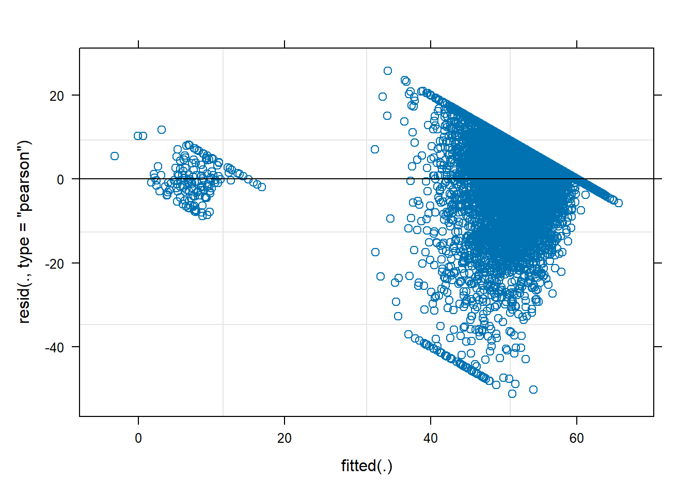
car::Anova(laymodel, type=3)Warning in printHypothesis(L, rhs, names(b)): one or more coefficients in the hypothesis include
arithmetic operators in their names;
the printed representation of the hypothesis will be omitted
Warning in printHypothesis(L, rhs, names(b)): one or more coefficients in the hypothesis include
arithmetic operators in their names;
the printed representation of the hypothesis will be omittedAnalysis of Deviance Table (Type III Wald chisquare tests)
Response: as.numeric(Lying)
Chisq Df Pr(>Chisq)
(Intercept) 864.835 1 <2e-16 ***
as.factor(hour) 990.696 72 <2e-16 ***
D0Fed2TxGrp 2.721 4 0.6055
as.factor(hour):D0Fed2TxGrp 292.929 288 0.4083
---
Signif. codes: 0 '***' 0.001 '**' 0.01 '*' 0.05 '.' 0.1 ' ' 1emmeans (laymodel, ~ D0Fed2TxGrp)Note: D.f. calculations have been disabled because the number of observations exceeds 3000.
To enable adjustments, add the argument 'pbkrtest.limit = 10868' (or larger)
[or, globally, 'set emm_options(pbkrtest.limit = 10868)' or larger];
but be warned that this may result in large computation time and memory use.Note: D.f. calculations have been disabled because the number of observations exceeds 3000.
To enable adjustments, add the argument 'lmerTest.limit = 10868' (or larger)
[or, globally, 'set emm_options(lmerTest.limit = 10868)' or larger];
but be warned that this may result in large computation time and memory use.NOTE: Results may be misleading due to involvement in interactions D0Fed2TxGrp emmean SE df asymp.LCL asymp.UCL
MRB 51.5 0.594 Inf 50.4 52.7
CSB 52.1 0.574 Inf 50.9 53.2
CST 52.5 0.583 Inf 51.3 53.6
MCB 50.3 0.584 Inf 49.2 51.4
MCT 51.8 0.574 Inf 50.6 52.9
Results are averaged over the levels of: hour
Degrees-of-freedom method: asymptotic
Results are given on the as.numeric (not the response) scale.
Confidence level used: 0.95 emmeans (laymodel, ~ hour)Note: D.f. calculations have been disabled because the number of observations exceeds 3000.
To enable adjustments, add the argument 'pbkrtest.limit = 10868' (or larger)
[or, globally, 'set emm_options(pbkrtest.limit = 10868)' or larger];
but be warned that this may result in large computation time and memory use.Note: D.f. calculations have been disabled because the number of observations exceeds 3000.
To enable adjustments, add the argument 'lmerTest.limit = 10868' (or larger)
[or, globally, 'set emm_options(lmerTest.limit = 10868)' or larger];
but be warned that this may result in large computation time and memory use.NOTE: Results may be misleading due to involvement in interactions hour emmean SE df asymp.LCL asymp.UCL
-8 51.95 0.784 Inf 50.41 53.5
-7 54.50 0.784 Inf 52.96 56.0
-6 54.17 0.784 Inf 52.63 55.7
-5 52.55 0.784 Inf 51.01 54.1
-4 51.81 0.784 Inf 50.28 53.3
-3 51.26 0.784 Inf 49.72 52.8
-2 50.29 0.784 Inf 48.76 51.8
-1 50.75 0.784 Inf 49.21 52.3
0 7.87 0.784 Inf 6.33 9.4
1 50.34 0.784 Inf 48.80 51.9
2 53.06 0.784 Inf 51.52 54.6
3 54.92 0.784 Inf 53.38 56.5
4 55.53 0.784 Inf 54.00 57.1
5 54.62 0.784 Inf 53.08 56.2
6 55.88 0.784 Inf 54.35 57.4
7 56.06 0.784 Inf 54.53 57.6
8 56.79 0.784 Inf 55.25 58.3
9 56.78 0.784 Inf 55.25 58.3
10 56.62 0.784 Inf 55.08 58.2
11 54.04 0.784 Inf 52.50 55.6
12 53.83 0.784 Inf 52.29 55.4
13 54.16 0.784 Inf 52.62 55.7
14 53.39 0.784 Inf 51.85 54.9
15 52.80 0.784 Inf 51.26 54.3
16 51.38 0.784 Inf 49.85 52.9
17 53.51 0.784 Inf 51.98 55.0
18 55.37 0.784 Inf 53.83 56.9
19 54.15 0.784 Inf 52.62 55.7
20 55.61 0.784 Inf 54.08 57.1
21 54.85 0.784 Inf 53.32 56.4
22 55.12 0.784 Inf 53.58 56.7
23 54.54 0.784 Inf 53.00 56.1
24 53.98 0.784 Inf 52.44 55.5
25 55.77 0.784 Inf 54.24 57.3
26 54.52 0.784 Inf 52.98 56.1
27 54.11 0.784 Inf 52.57 55.6
28 54.63 0.784 Inf 53.09 56.2
29 54.39 0.784 Inf 52.85 55.9
30 54.15 0.784 Inf 52.62 55.7
31 53.78 0.784 Inf 52.25 55.3
32 54.08 0.784 Inf 52.55 55.6
33 53.50 0.784 Inf 51.96 55.0
34 51.86 0.784 Inf 50.32 53.4
35 48.23 0.784 Inf 46.70 49.8
36 48.40 0.784 Inf 46.86 49.9
37 48.94 0.784 Inf 47.41 50.5
38 49.37 0.784 Inf 47.83 50.9
39 49.13 0.784 Inf 47.59 50.7
40 50.18 0.784 Inf 48.64 51.7
41 51.34 0.784 Inf 49.81 52.9
42 51.86 0.784 Inf 50.33 53.4
43 50.57 0.784 Inf 49.03 52.1
44 50.79 0.784 Inf 49.25 52.3
45 50.91 0.784 Inf 49.37 52.4
46 49.87 0.784 Inf 48.34 51.4
47 51.94 0.784 Inf 50.41 53.5
48 51.71 0.784 Inf 50.17 53.2
49 52.25 0.784 Inf 50.71 53.8
50 51.28 0.784 Inf 49.74 52.8
51 51.18 0.784 Inf 49.64 52.7
52 50.04 0.784 Inf 48.50 51.6
53 50.30 0.784 Inf 48.76 51.8
54 52.40 0.784 Inf 50.86 53.9
55 52.96 0.784 Inf 51.43 54.5
56 53.02 0.784 Inf 51.49 54.6
57 52.17 0.784 Inf 50.63 53.7
58 51.26 0.784 Inf 49.73 52.8
59 46.65 0.784 Inf 45.12 48.2
60 45.44 0.810 Inf 43.85 47.0
61 45.43 0.832 Inf 43.80 47.1
62 45.90 0.867 Inf 44.20 47.6
63 44.63 0.913 Inf 42.84 46.4
64 47.43 0.985 Inf 45.50 49.4
Results are averaged over the levels of: D0Fed2TxGrp
Degrees-of-freedom method: asymptotic
Results are given on the as.numeric (not the response) scale.
Confidence level used: 0.95 modeladj <- emmeans(laymodel, ~hour|D0Fed2TxGrp)Note: D.f. calculations have been disabled because the number of observations exceeds 3000.
To enable adjustments, add the argument 'pbkrtest.limit = 10868' (or larger)
[or, globally, 'set emm_options(pbkrtest.limit = 10868)' or larger];
but be warned that this may result in large computation time and memory use.Note: D.f. calculations have been disabled because the number of observations exceeds 3000.
To enable adjustments, add the argument 'lmerTest.limit = 10868' (or larger)
[or, globally, 'set emm_options(lmerTest.limit = 10868)' or larger];
but be warned that this may result in large computation time and memory use.summary(modeladj)D0Fed2TxGrp = MRB:
hour emmean SE df asymp.LCL asymp.UCL
-8 52.58 1.79 Inf 49.08 56.09
-7 55.79 1.79 Inf 52.29 59.30
-6 54.68 1.79 Inf 51.17 58.18
-5 53.44 1.79 Inf 49.94 56.94
-4 52.15 1.79 Inf 48.64 55.65
-3 55.03 1.79 Inf 51.53 58.53
-2 48.95 1.79 Inf 45.45 52.46
-1 50.94 1.79 Inf 47.44 54.45
0 6.44 1.79 Inf 2.93 9.94
1 47.53 1.79 Inf 44.02 51.03
2 53.22 1.79 Inf 49.71 56.72
3 55.07 1.79 Inf 51.56 58.57
4 56.24 1.79 Inf 52.74 59.75
5 53.80 1.79 Inf 50.30 57.30
6 54.71 1.79 Inf 51.21 58.22
7 55.59 1.79 Inf 52.08 59.09
8 57.11 1.79 Inf 53.60 60.61
9 57.09 1.79 Inf 53.58 60.59
10 55.41 1.79 Inf 51.91 58.92
11 54.98 1.79 Inf 51.48 58.49
12 52.36 1.79 Inf 48.85 55.86
13 53.13 1.79 Inf 49.63 56.64
14 53.41 1.79 Inf 49.91 56.92
15 51.44 1.79 Inf 47.93 54.94
16 50.32 1.79 Inf 46.82 53.83
17 51.84 1.79 Inf 48.33 55.34
18 56.26 1.79 Inf 52.76 59.77
19 56.32 1.79 Inf 52.82 59.83
20 56.66 1.79 Inf 53.16 60.16
21 54.01 1.79 Inf 50.51 57.52
22 55.68 1.79 Inf 52.18 59.19
23 53.42 1.79 Inf 49.91 56.92
24 54.60 1.79 Inf 51.09 58.10
25 55.41 1.79 Inf 51.91 58.92
26 55.32 1.79 Inf 51.81 58.82
27 53.43 1.79 Inf 49.92 56.93
28 54.80 1.79 Inf 51.29 58.30
29 53.26 1.79 Inf 49.75 56.76
30 54.72 1.79 Inf 51.22 58.23
31 53.13 1.79 Inf 49.62 56.63
32 55.20 1.79 Inf 51.69 58.70
33 55.06 1.79 Inf 51.56 58.57
34 55.00 1.79 Inf 51.50 58.51
35 51.41 1.79 Inf 47.90 54.91
36 51.06 1.79 Inf 47.56 54.57
37 48.04 1.79 Inf 44.54 51.54
38 50.70 1.79 Inf 47.20 54.21
39 50.58 1.79 Inf 47.08 54.09
40 48.46 1.79 Inf 44.96 51.97
41 49.79 1.79 Inf 46.29 53.30
42 52.40 1.79 Inf 48.90 55.91
43 52.05 1.79 Inf 48.54 55.55
44 53.03 1.79 Inf 49.53 56.54
45 47.87 1.79 Inf 44.36 51.37
46 51.29 1.79 Inf 47.78 54.79
47 52.14 1.79 Inf 48.63 55.64
48 51.18 1.79 Inf 47.68 54.69
49 54.11 1.79 Inf 50.60 57.61
50 53.72 1.79 Inf 50.22 57.22
51 50.99 1.79 Inf 47.48 54.49
52 49.73 1.79 Inf 46.22 53.23
53 48.98 1.79 Inf 45.47 52.48
54 50.52 1.79 Inf 47.01 54.02
55 51.30 1.79 Inf 47.80 54.81
56 50.65 1.79 Inf 47.14 54.15
57 50.88 1.79 Inf 47.38 54.39
58 51.36 1.79 Inf 47.86 54.87
59 47.31 1.79 Inf 43.80 50.81
60 41.66 1.88 Inf 37.98 45.35
61 46.25 1.91 Inf 42.50 50.00
62 45.51 1.99 Inf 41.61 49.41
63 36.69 2.12 Inf 32.53 40.85
64 47.10 2.36 Inf 42.47 51.72
D0Fed2TxGrp = CSB:
hour emmean SE df asymp.LCL asymp.UCL
-8 52.56 1.73 Inf 49.17 55.95
-7 54.82 1.73 Inf 51.43 58.21
-6 51.73 1.73 Inf 48.34 55.12
-5 53.52 1.73 Inf 50.13 56.91
-4 53.16 1.73 Inf 49.77 56.55
-3 51.35 1.73 Inf 47.96 54.74
-2 53.02 1.73 Inf 49.63 56.41
-1 50.22 1.73 Inf 46.83 53.61
0 7.86 1.73 Inf 4.47 11.25
1 51.37 1.73 Inf 47.98 54.76
2 54.88 1.73 Inf 51.49 58.27
3 54.15 1.73 Inf 50.76 57.54
4 55.81 1.73 Inf 52.42 59.20
5 55.41 1.73 Inf 52.02 58.80
6 55.84 1.73 Inf 52.45 59.23
7 56.65 1.73 Inf 53.26 60.04
8 56.43 1.73 Inf 53.04 59.82
9 57.11 1.73 Inf 53.72 60.50
10 57.15 1.73 Inf 53.76 60.54
11 53.92 1.73 Inf 50.53 57.31
12 54.19 1.73 Inf 50.80 57.58
13 54.98 1.73 Inf 51.59 58.37
14 51.75 1.73 Inf 48.36 55.14
15 53.63 1.73 Inf 50.25 57.02
16 52.42 1.73 Inf 49.03 55.81
17 54.65 1.73 Inf 51.26 58.04
18 53.85 1.73 Inf 50.46 57.24
19 53.04 1.73 Inf 49.65 56.43
20 56.39 1.73 Inf 53.00 59.78
21 54.83 1.73 Inf 51.44 58.22
22 53.86 1.73 Inf 50.47 57.25
23 55.31 1.73 Inf 51.92 58.70
24 53.56 1.73 Inf 50.17 56.95
25 56.43 1.73 Inf 53.04 59.82
26 56.01 1.73 Inf 52.62 59.40
27 54.49 1.73 Inf 51.10 57.88
28 54.52 1.73 Inf 51.13 57.91
29 54.09 1.73 Inf 50.70 57.48
30 53.16 1.73 Inf 49.77 56.55
31 51.66 1.73 Inf 48.27 55.05
32 52.89 1.73 Inf 49.50 56.28
33 53.44 1.73 Inf 50.05 56.83
34 48.70 1.73 Inf 45.31 52.08
35 48.51 1.73 Inf 45.12 51.90
36 47.67 1.73 Inf 44.29 51.06
37 52.09 1.73 Inf 48.70 55.48
38 48.99 1.73 Inf 45.60 52.38
39 48.15 1.73 Inf 44.76 51.54
40 51.36 1.73 Inf 47.97 54.74
41 53.20 1.73 Inf 49.81 56.59
42 51.18 1.73 Inf 47.79 54.57
43 54.71 1.73 Inf 51.32 58.10
44 51.14 1.73 Inf 47.75 54.53
45 51.62 1.73 Inf 48.23 55.01
46 47.63 1.73 Inf 44.24 51.02
47 52.98 1.73 Inf 49.59 56.37
48 52.93 1.73 Inf 49.54 56.32
49 52.90 1.73 Inf 49.51 56.29
50 52.21 1.73 Inf 48.82 55.60
51 53.20 1.73 Inf 49.81 56.59
52 50.19 1.73 Inf 46.80 53.58
53 50.14 1.73 Inf 46.75 53.53
54 53.36 1.73 Inf 49.97 56.75
55 54.65 1.73 Inf 51.26 58.04
56 54.22 1.73 Inf 50.83 57.61
57 53.90 1.73 Inf 50.51 57.29
58 50.54 1.73 Inf 47.15 53.93
59 46.78 1.73 Inf 43.39 50.17
60 49.82 1.76 Inf 46.38 53.26
61 48.96 1.78 Inf 45.47 52.46
62 49.36 1.84 Inf 45.75 52.97
63 45.49 1.84 Inf 41.88 49.10
64 48.37 2.03 Inf 44.39 52.34
D0Fed2TxGrp = CST:
hour emmean SE df asymp.LCL asymp.UCL
-8 53.25 1.76 Inf 49.80 56.69
-7 54.47 1.76 Inf 51.02 57.91
-6 55.04 1.76 Inf 51.60 58.49
-5 51.03 1.76 Inf 47.59 54.48
-4 52.28 1.76 Inf 48.84 55.73
-3 50.38 1.76 Inf 46.93 53.82
-2 50.48 1.76 Inf 47.04 53.93
-1 52.59 1.76 Inf 49.15 56.04
0 8.97 1.76 Inf 5.52 12.41
1 52.74 1.76 Inf 49.30 56.19
2 52.93 1.76 Inf 49.49 56.38
3 54.73 1.76 Inf 51.29 58.18
4 56.85 1.76 Inf 53.40 60.29
5 55.58 1.76 Inf 52.14 59.03
6 57.01 1.76 Inf 53.56 60.45
7 56.12 1.76 Inf 52.67 59.56
8 57.52 1.76 Inf 54.08 60.97
9 55.69 1.76 Inf 52.25 59.14
10 56.10 1.76 Inf 52.65 59.54
11 54.33 1.76 Inf 50.88 57.77
12 54.35 1.76 Inf 50.91 57.80
13 54.67 1.76 Inf 51.22 58.11
14 55.11 1.76 Inf 51.67 58.56
15 53.70 1.76 Inf 50.25 57.14
16 50.76 1.76 Inf 47.32 54.21
17 53.64 1.76 Inf 50.19 57.08
18 56.22 1.76 Inf 52.77 59.66
19 55.10 1.76 Inf 51.66 58.55
20 56.40 1.76 Inf 52.95 59.85
21 56.79 1.76 Inf 53.35 60.24
22 56.13 1.76 Inf 52.68 59.57
23 55.94 1.76 Inf 52.49 59.38
24 54.96 1.76 Inf 51.51 58.41
25 56.96 1.76 Inf 53.51 60.40
26 53.68 1.76 Inf 50.24 57.13
27 53.90 1.76 Inf 50.45 57.34
28 54.85 1.76 Inf 51.40 58.29
29 54.77 1.76 Inf 51.32 58.21
30 55.86 1.76 Inf 52.42 59.31
31 54.98 1.76 Inf 51.53 58.43
32 55.87 1.76 Inf 52.42 59.31
33 56.01 1.76 Inf 52.56 59.45
34 53.63 1.76 Inf 50.18 57.07
35 50.11 1.76 Inf 46.66 53.55
36 49.84 1.76 Inf 46.39 53.28
37 50.30 1.76 Inf 46.85 53.74
38 49.83 1.76 Inf 46.38 53.28
39 52.59 1.76 Inf 49.15 56.04
40 51.10 1.76 Inf 47.66 54.55
41 51.05 1.76 Inf 47.60 54.49
42 53.40 1.76 Inf 49.95 56.84
43 50.23 1.76 Inf 46.79 53.68
44 51.94 1.76 Inf 48.50 55.39
45 51.01 1.76 Inf 47.57 54.46
46 53.86 1.76 Inf 50.42 57.31
47 53.12 1.76 Inf 49.67 56.56
48 54.21 1.76 Inf 50.76 57.65
49 51.78 1.76 Inf 48.33 55.22
50 51.49 1.76 Inf 48.04 54.94
51 53.75 1.76 Inf 50.30 57.20
52 50.66 1.76 Inf 47.22 54.11
53 51.29 1.76 Inf 47.84 54.73
54 53.38 1.76 Inf 49.93 56.82
55 53.94 1.76 Inf 50.50 57.39
56 53.42 1.76 Inf 49.97 56.87
57 50.90 1.76 Inf 47.46 54.35
58 54.04 1.76 Inf 50.60 57.49
59 47.94 1.76 Inf 44.50 51.39
60 45.89 1.79 Inf 42.39 49.39
61 44.76 1.81 Inf 41.21 48.32
62 44.16 1.88 Inf 40.48 47.84
63 46.22 2.03 Inf 42.24 50.20
64 52.19 2.17 Inf 47.93 56.45
D0Fed2TxGrp = MCB:
hour emmean SE df asymp.LCL asymp.UCL
-8 49.51 1.76 Inf 46.07 52.96
-7 52.77 1.76 Inf 49.32 56.21
-6 54.12 1.76 Inf 50.67 57.56
-5 50.21 1.76 Inf 46.77 53.66
-4 51.34 1.76 Inf 47.89 54.78
-3 49.24 1.76 Inf 45.80 52.69
-2 50.09 1.76 Inf 46.65 53.54
-1 49.63 1.76 Inf 46.18 53.07
0 5.89 1.76 Inf 2.44 9.33
1 46.64 1.76 Inf 43.19 50.08
2 49.76 1.76 Inf 46.31 53.20
3 54.61 1.76 Inf 51.17 58.06
4 53.68 1.76 Inf 50.24 57.13
5 53.55 1.76 Inf 50.10 56.99
6 54.62 1.76 Inf 51.17 58.07
7 54.89 1.76 Inf 51.44 58.33
8 55.70 1.76 Inf 52.26 59.15
9 55.91 1.76 Inf 52.47 59.36
10 55.44 1.76 Inf 52.00 58.89
11 51.27 1.76 Inf 47.82 54.71
12 54.33 1.76 Inf 50.89 57.78
13 53.62 1.76 Inf 50.17 57.06
14 53.29 1.76 Inf 49.85 56.74
15 53.10 1.76 Inf 49.65 56.55
16 52.13 1.76 Inf 48.68 55.57
17 54.96 1.76 Inf 51.52 58.41
18 54.59 1.76 Inf 51.15 58.04
19 53.21 1.76 Inf 49.77 56.66
20 54.76 1.76 Inf 51.31 58.20
21 54.40 1.76 Inf 50.95 57.84
22 54.99 1.76 Inf 51.54 58.43
23 51.87 1.76 Inf 48.42 55.31
24 52.74 1.76 Inf 49.29 56.19
25 53.08 1.76 Inf 49.64 56.53
26 52.90 1.76 Inf 49.46 56.35
27 54.54 1.76 Inf 51.09 57.99
28 55.73 1.76 Inf 52.28 59.17
29 55.01 1.76 Inf 51.57 58.46
30 53.73 1.76 Inf 50.28 57.17
31 52.41 1.76 Inf 48.97 55.86
32 50.50 1.76 Inf 47.05 53.94
33 47.89 1.76 Inf 44.44 51.34
34 48.49 1.76 Inf 45.04 51.93
35 43.23 1.76 Inf 39.79 46.68
36 45.60 1.76 Inf 42.15 49.04
37 47.86 1.76 Inf 44.41 51.30
38 49.47 1.76 Inf 46.02 52.92
39 49.79 1.76 Inf 46.34 53.23
40 48.62 1.76 Inf 45.17 52.07
41 49.54 1.76 Inf 46.09 52.98
42 49.70 1.76 Inf 46.25 53.14
43 47.31 1.76 Inf 43.87 50.76
44 48.70 1.76 Inf 45.26 52.15
45 53.91 1.76 Inf 50.46 57.35
46 47.95 1.76 Inf 44.50 51.40
47 51.16 1.76 Inf 47.71 54.60
48 48.64 1.76 Inf 45.19 52.08
49 49.49 1.76 Inf 46.05 52.94
50 46.11 1.76 Inf 42.66 49.55
51 48.41 1.76 Inf 44.97 51.86
52 48.52 1.76 Inf 45.08 51.97
53 51.39 1.76 Inf 47.95 54.84
54 52.01 1.76 Inf 48.57 55.46
55 51.15 1.76 Inf 47.70 54.59
56 53.88 1.76 Inf 50.43 57.32
57 48.62 1.76 Inf 45.18 52.07
58 46.79 1.76 Inf 43.34 50.23
59 44.42 1.76 Inf 40.98 47.87
60 43.88 1.88 Inf 40.20 47.56
61 45.04 1.91 Inf 41.29 48.78
62 47.32 2.03 Inf 43.34 51.29
63 46.81 2.17 Inf 42.55 51.07
64 45.08 2.36 Inf 40.46 49.70
D0Fed2TxGrp = MCT:
hour emmean SE df asymp.LCL asymp.UCL
-8 51.84 1.73 Inf 48.45 55.23
-7 54.65 1.73 Inf 51.26 58.04
-6 55.27 1.73 Inf 51.88 58.66
-5 54.55 1.73 Inf 51.16 57.94
-4 50.13 1.73 Inf 46.74 53.52
-3 50.29 1.73 Inf 46.90 53.68
-2 48.91 1.73 Inf 45.52 52.30
-1 50.35 1.73 Inf 46.96 53.74
0 10.17 1.73 Inf 6.78 13.56
1 53.40 1.73 Inf 50.01 56.79
2 54.51 1.73 Inf 51.12 57.90
3 56.02 1.73 Inf 52.64 59.41
4 55.08 1.73 Inf 51.69 58.47
5 54.74 1.73 Inf 51.35 58.13
6 57.25 1.73 Inf 53.86 60.64
7 57.07 1.73 Inf 53.68 60.46
8 57.17 1.73 Inf 53.78 60.56
9 58.10 1.73 Inf 54.72 61.49
10 58.98 1.73 Inf 55.59 62.37
11 55.69 1.73 Inf 52.30 59.08
12 53.92 1.73 Inf 50.53 57.31
13 54.41 1.73 Inf 51.02 57.80
14 53.39 1.73 Inf 50.00 56.78
15 52.14 1.73 Inf 48.75 55.53
16 51.30 1.73 Inf 47.91 54.69
17 52.47 1.73 Inf 49.08 55.86
18 55.93 1.73 Inf 52.54 59.32
19 53.09 1.73 Inf 49.71 56.48
20 53.85 1.73 Inf 50.46 57.24
21 54.23 1.73 Inf 50.84 57.62
22 54.94 1.73 Inf 51.55 58.33
23 56.16 1.73 Inf 52.77 59.55
24 54.05 1.73 Inf 50.66 57.43
25 56.99 1.73 Inf 53.60 60.38
26 54.68 1.73 Inf 51.29 58.07
27 54.19 1.73 Inf 50.80 57.58
28 53.25 1.73 Inf 49.86 56.64
29 54.80 1.73 Inf 51.41 58.19
30 53.30 1.73 Inf 49.91 56.69
31 56.72 1.73 Inf 53.33 60.11
32 55.97 1.73 Inf 52.58 59.36
33 55.08 1.73 Inf 51.69 58.47
34 53.48 1.73 Inf 50.09 56.87
35 47.92 1.73 Inf 44.53 51.31
36 47.81 1.73 Inf 44.42 51.20
37 46.44 1.73 Inf 43.05 49.83
38 47.86 1.73 Inf 44.47 51.25
39 44.52 1.73 Inf 41.14 47.91
40 51.36 1.73 Inf 47.97 54.75
41 53.14 1.73 Inf 49.75 56.53
42 52.65 1.73 Inf 49.26 56.03
43 48.54 1.73 Inf 45.15 51.93
44 49.13 1.73 Inf 45.74 52.52
45 50.13 1.73 Inf 46.74 53.52
46 48.64 1.73 Inf 45.25 52.03
47 50.33 1.73 Inf 46.94 53.72
48 51.60 1.73 Inf 48.21 54.99
49 52.97 1.73 Inf 49.58 56.36
50 52.86 1.73 Inf 49.47 56.25
51 49.54 1.73 Inf 46.15 52.93
52 51.09 1.73 Inf 47.70 54.48
53 49.71 1.73 Inf 46.32 53.10
54 52.73 1.73 Inf 49.34 56.12
55 53.78 1.73 Inf 50.39 57.17
56 52.95 1.73 Inf 49.56 56.34
57 56.54 1.73 Inf 53.15 59.93
58 53.59 1.73 Inf 50.20 56.98
59 46.81 1.73 Inf 43.42 50.20
60 45.96 1.76 Inf 42.52 49.40
61 42.14 1.88 Inf 38.47 45.82
62 43.15 1.95 Inf 39.33 46.96
63 47.96 2.03 Inf 43.99 51.93
64 44.40 2.07 Inf 40.34 48.46
Degrees-of-freedom method: asymptotic
Results are given on the as.numeric (not the response) scale.
Confidence level used: 0.95 emm_df <- as.data.frame(modeladj)
ggplot(emm_df, aes(x = hour, y = emmean, color = D0Fed2TxGrp)) +
geom_line() +
geom_point() +
geom_errorbar(aes(ymin = emmean - SE, ymax = emmean + SE), width = 0.2)+
labs(x = "Hour", y = "Adjusted Mean Lying Time (min)", title = "Adjusted Mean Lying Time by Hour") +
theme_classic()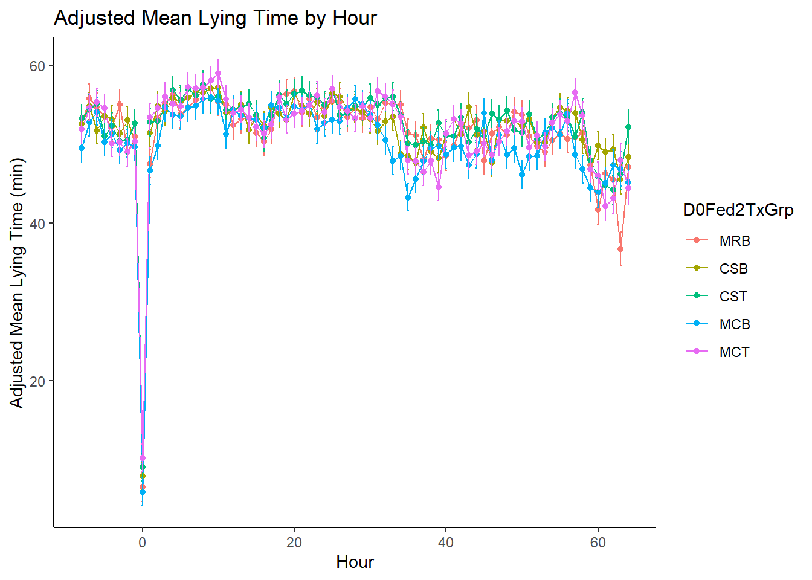
Models - 16h around feeding (+/-8)
Standing
hourfull <- hour |>
filter(hour >= -8 & hour <= 8)
hourfull$D0Fed2TxGrp <- relevel(factor(hourfull$D0Fed2TxGrp), ref = "MRB")
standmodel16 <- lmer(as.numeric(Standing) ~ as.factor(hour) * D0Fed2TxGrp + CrossbredYN + (1 | CalfID), data = hourfull)
summary(standmodel16)Linear mixed model fit by REML. t-tests use Satterthwaite's method [
lmerModLmerTest]
Formula: as.numeric(Standing) ~ as.factor(hour) * D0Fed2TxGrp + CrossbredYN +
(1 | CalfID)
Data: hourfull
REML criterion at convergence: 16936
Scaled residuals:
Min 1Q Median 3Q Max
-2.3279 -0.6383 -0.1545 0.4580 6.5882
Random effects:
Groups Name Variance Std.Dev.
CalfID (Intercept) 8.846 2.974
Residual 44.007 6.634
Number of obs: 2567, groups: CalfID, 151
Fixed effects:
Estimate Std. Error df t value
(Intercept) 6.01844 1.50927 881.42479 3.988
as.factor(hour)-7 -3.20920 1.74211 2336.00004 -1.842
as.factor(hour)-6 -2.09655 1.74211 2336.00004 -1.203
as.factor(hour)-5 -0.85747 1.74211 2336.00004 -0.492
as.factor(hour)-4 0.43448 1.74211 2336.00004 0.249
as.factor(hour)-3 -2.44770 1.74211 2336.00004 -1.405
as.factor(hour)-2 3.62989 1.74211 2336.00004 2.084
as.factor(hour)-1 1.63966 1.74211 2336.00004 0.941
as.factor(hour)0 1.14770 1.74211 2336.00004 0.659
as.factor(hour)1 5.05632 1.74211 2336.00004 2.902
as.factor(hour)2 -0.63448 1.74211 2336.00004 -0.364
as.factor(hour)3 -2.48621 1.74211 2336.00004 -1.427
as.factor(hour)4 -3.65805 1.74211 2336.00004 -2.100
as.factor(hour)5 -1.21724 1.74211 2336.00004 -0.699
as.factor(hour)6 -2.12874 1.74211 2336.00004 -1.222
as.factor(hour)7 -3.00632 1.74211 2336.00004 -1.726
as.factor(hour)8 -4.52586 1.74211 2336.00004 -2.598
D0Fed2TxGrpCSB 0.37275 1.88336 1671.70636 0.198
D0Fed2TxGrpCST -0.44357 1.89558 1687.72430 -0.234
D0Fed2TxGrpMCB 3.21264 1.89461 1693.10963 1.696
D0Fed2TxGrpMCT 0.86488 1.88005 1690.19926 0.460
CrossbredYNy 5.17795 2.51381 144.00000 2.060
CrossbredYNY 1.41550 0.75138 144.00000 1.884
as.factor(hour)-7:D0Fed2TxGrpCSB 0.95221 2.42365 2336.00002 0.393
as.factor(hour)-6:D0Fed2TxGrpCSB 2.92451 2.42365 2336.00002 1.207
as.factor(hour)-5:D0Fed2TxGrpCSB -0.10597 2.42365 2336.00002 -0.044
as.factor(hour)-4:D0Fed2TxGrpCSB -1.03771 2.42365 2336.00002 -0.428
as.factor(hour)-3:D0Fed2TxGrpCSB 3.65415 2.42365 2336.00002 1.508
as.factor(hour)-2:D0Fed2TxGrpCSB -4.09118 2.42365 2336.00002 -1.688
as.factor(hour)-1:D0Fed2TxGrpCSB 0.70121 2.42365 2336.00002 0.289
as.factor(hour)0:D0Fed2TxGrpCSB -1.44985 2.42365 2336.00002 -0.598
as.factor(hour)1:D0Fed2TxGrpCSB -3.86976 2.42365 2336.00002 -1.597
as.factor(hour)2:D0Fed2TxGrpCSB -1.69025 2.42365 2336.00002 -0.697
as.factor(hour)3:D0Fed2TxGrpCSB 0.89105 2.42365 2336.00002 0.368
as.factor(hour)4:D0Fed2TxGrpCSB 0.40321 2.42365 2336.00002 0.166
as.factor(hour)5:D0Fed2TxGrpCSB -1.63222 2.42365 2336.00002 -0.673
as.factor(hour)6:D0Fed2TxGrpCSB -1.14868 2.42365 2336.00002 -0.474
as.factor(hour)7:D0Fed2TxGrpCSB -1.08938 2.42365 2336.00002 -0.449
as.factor(hour)8:D0Fed2TxGrpCSB 0.65489 2.42365 2336.00002 0.270
as.factor(hour)-7:D0Fed2TxGrpCST 1.98642 2.44310 2336.00002 0.813
as.factor(hour)-6:D0Fed2TxGrpCST 0.29989 2.44310 2336.00002 0.123
as.factor(hour)-5:D0Fed2TxGrpCST 3.06914 2.44310 2336.00002 1.256
as.factor(hour)-4:D0Fed2TxGrpCST 0.52718 2.44310 2336.00002 0.216
as.factor(hour)-3:D0Fed2TxGrpCST 5.31437 2.44310 2336.00002 2.175
as.factor(hour)-2:D0Fed2TxGrpCST -0.86655 2.44310 2336.00002 -0.355
as.factor(hour)-1:D0Fed2TxGrpCST -0.98688 2.44310 2336.00002 -0.404
as.factor(hour)0:D0Fed2TxGrpCST -1.87103 2.44310 2336.00002 -0.766
as.factor(hour)1:D0Fed2TxGrpCST -4.55466 2.44310 2336.00002 -1.864
as.factor(hour)2:D0Fed2TxGrpCST 0.94837 2.44310 2336.00002 0.388
as.factor(hour)3:D0Fed2TxGrpCST 0.99732 2.44310 2336.00002 0.408
as.factor(hour)4:D0Fed2TxGrpCST 0.05693 2.44310 2336.00002 0.023
as.factor(hour)5:D0Fed2TxGrpCST -1.12109 2.44310 2336.00002 -0.459
as.factor(hour)6:D0Fed2TxGrpCST -1.63349 2.44310 2336.00002 -0.669
as.factor(hour)7:D0Fed2TxGrpCST 0.13354 2.44310 2336.00002 0.055
as.factor(hour)8:D0Fed2TxGrpCST 0.24753 2.44310 2336.00002 0.101
as.factor(hour)-7:D0Fed2TxGrpMCB -0.04636 2.44310 2336.00002 -0.019
as.factor(hour)-6:D0Fed2TxGrpMCB -2.51067 2.44310 2336.00002 -1.028
as.factor(hour)-5:D0Fed2TxGrpMCB 0.15469 2.44310 2336.00002 0.063
as.factor(hour)-4:D0Fed2TxGrpMCB -2.25837 2.44310 2336.00002 -0.924
as.factor(hour)-3:D0Fed2TxGrpMCB 2.71603 2.44310 2336.00002 1.112
as.factor(hour)-2:D0Fed2TxGrpMCB -4.21211 2.44310 2336.00002 -1.724
as.factor(hour)-1:D0Fed2TxGrpMCB -1.75466 2.44310 2336.00002 -0.718
as.factor(hour)0:D0Fed2TxGrpMCB -2.52548 2.44310 2336.00002 -1.034
as.factor(hour)1:D0Fed2TxGrpMCB -2.18077 2.44310 2336.00002 -0.893
as.factor(hour)2:D0Fed2TxGrpMCB 0.39004 2.44310 2336.00002 0.160
as.factor(hour)3:D0Fed2TxGrpMCB -2.61490 2.44310 2336.00002 -1.070
as.factor(hour)4:D0Fed2TxGrpMCB -0.51418 2.44310 2336.00002 -0.210
as.factor(hour)5:D0Fed2TxGrpMCB -2.81720 2.44310 2336.00002 -1.153
as.factor(hour)6:D0Fed2TxGrpMCB -2.98071 2.44310 2336.00002 -1.220
as.factor(hour)7:D0Fed2TxGrpMCB -2.36979 2.44310 2336.00002 -0.970
as.factor(hour)8:D0Fed2TxGrpMCB -1.66469 2.44310 2336.00002 -0.681
as.factor(hour)-7:D0Fed2TxGrpMCT 0.39844 2.42365 2336.00002 0.164
as.factor(hour)-6:D0Fed2TxGrpMCT -1.33947 2.42365 2336.00002 -0.553
as.factor(hour)-5:D0Fed2TxGrpMCT -1.85059 2.42365 2336.00002 -0.764
as.factor(hour)-4:D0Fed2TxGrpMCT 1.27466 2.42365 2336.00002 0.526
as.factor(hour)-3:D0Fed2TxGrpMCT 3.99931 2.42365 2336.00002 1.650
as.factor(hour)-2:D0Fed2TxGrpMCT -0.70515 2.42365 2336.00002 -0.291
as.factor(hour)-1:D0Fed2TxGrpMCT -0.14879 2.42365 2336.00002 -0.061
as.factor(hour)0:D0Fed2TxGrpMCT -4.48265 2.42365 2336.00002 -1.850
as.factor(hour)1:D0Fed2TxGrpMCT -6.62084 2.42365 2336.00002 -2.732
as.factor(hour)2:D0Fed2TxGrpMCT -2.03864 2.42365 2336.00002 -0.841
as.factor(hour)3:D0Fed2TxGrpMCT -1.70035 2.42365 2336.00002 -0.702
as.factor(hour)4:D0Fed2TxGrpMCT 0.41396 2.42365 2336.00002 0.171
as.factor(hour)5:D0Fed2TxGrpMCT -1.68276 2.42365 2336.00002 -0.694
as.factor(hour)6:D0Fed2TxGrpMCT -3.28094 2.42365 2336.00002 -1.354
as.factor(hour)7:D0Fed2TxGrpMCT -2.22217 2.42365 2336.00002 -0.917
as.factor(hour)8:D0Fed2TxGrpMCT -0.80640 2.42365 2336.00002 -0.333
Pr(>|t|)
(Intercept) 7.23e-05 ***
as.factor(hour)-7 0.06558 .
as.factor(hour)-6 0.22892
as.factor(hour)-5 0.62262
as.factor(hour)-4 0.80307
as.factor(hour)-3 0.16015
as.factor(hour)-2 0.03730 *
as.factor(hour)-1 0.34671
as.factor(hour)0 0.51009
as.factor(hour)1 0.00374 **
as.factor(hour)2 0.71574
as.factor(hour)3 0.15368
as.factor(hour)4 0.03586 *
as.factor(hour)5 0.48480
as.factor(hour)6 0.22186
as.factor(hour)7 0.08454 .
as.factor(hour)8 0.00944 **
D0Fed2TxGrpCSB 0.84313
D0Fed2TxGrpCST 0.81501
D0Fed2TxGrpMCB 0.09013 .
D0Fed2TxGrpMCT 0.64555
CrossbredYNy 0.04122 *
CrossbredYNY 0.06160 .
as.factor(hour)-7:D0Fed2TxGrpCSB 0.69444
as.factor(hour)-6:D0Fed2TxGrpCSB 0.22769
as.factor(hour)-5:D0Fed2TxGrpCSB 0.96513
as.factor(hour)-4:D0Fed2TxGrpCSB 0.66858
as.factor(hour)-3:D0Fed2TxGrpCSB 0.13177
as.factor(hour)-2:D0Fed2TxGrpCSB 0.09154 .
as.factor(hour)-1:D0Fed2TxGrpCSB 0.77236
as.factor(hour)0:D0Fed2TxGrpCSB 0.54976
as.factor(hour)1:D0Fed2TxGrpCSB 0.11048
as.factor(hour)2:D0Fed2TxGrpCSB 0.48562
as.factor(hour)3:D0Fed2TxGrpCSB 0.71317
as.factor(hour)4:D0Fed2TxGrpCSB 0.86789
as.factor(hour)5:D0Fed2TxGrpCSB 0.50072
as.factor(hour)6:D0Fed2TxGrpCSB 0.63558
as.factor(hour)7:D0Fed2TxGrpCSB 0.65313
as.factor(hour)8:D0Fed2TxGrpCSB 0.78702
as.factor(hour)-7:D0Fed2TxGrpCST 0.41626
as.factor(hour)-6:D0Fed2TxGrpCST 0.90232
as.factor(hour)-5:D0Fed2TxGrpCST 0.20915
as.factor(hour)-4:D0Fed2TxGrpCST 0.82917
as.factor(hour)-3:D0Fed2TxGrpCST 0.02971 *
as.factor(hour)-2:D0Fed2TxGrpCST 0.72285
as.factor(hour)-1:D0Fed2TxGrpCST 0.68629
as.factor(hour)0:D0Fed2TxGrpCST 0.44385
as.factor(hour)1:D0Fed2TxGrpCST 0.06241 .
as.factor(hour)2:D0Fed2TxGrpCST 0.69792
as.factor(hour)3:D0Fed2TxGrpCST 0.68315
as.factor(hour)4:D0Fed2TxGrpCST 0.98141
as.factor(hour)5:D0Fed2TxGrpCST 0.64636
as.factor(hour)6:D0Fed2TxGrpCST 0.50381
as.factor(hour)7:D0Fed2TxGrpCST 0.95641
as.factor(hour)8:D0Fed2TxGrpCST 0.91931
as.factor(hour)-7:D0Fed2TxGrpMCB 0.98486
as.factor(hour)-6:D0Fed2TxGrpMCB 0.30422
as.factor(hour)-5:D0Fed2TxGrpMCB 0.94952
as.factor(hour)-4:D0Fed2TxGrpMCB 0.35538
as.factor(hour)-3:D0Fed2TxGrpMCB 0.26637
as.factor(hour)-2:D0Fed2TxGrpMCB 0.08483 .
as.factor(hour)-1:D0Fed2TxGrpMCB 0.47270
as.factor(hour)0:D0Fed2TxGrpMCB 0.30137
as.factor(hour)1:D0Fed2TxGrpMCB 0.37215
as.factor(hour)2:D0Fed2TxGrpMCB 0.87317
as.factor(hour)3:D0Fed2TxGrpMCB 0.28458
as.factor(hour)4:D0Fed2TxGrpMCB 0.83333
as.factor(hour)5:D0Fed2TxGrpMCB 0.24898
as.factor(hour)6:D0Fed2TxGrpMCB 0.22257
as.factor(hour)7:D0Fed2TxGrpMCB 0.33215
as.factor(hour)8:D0Fed2TxGrpMCB 0.49569
as.factor(hour)-7:D0Fed2TxGrpMCT 0.86943
as.factor(hour)-6:D0Fed2TxGrpMCT 0.58055
as.factor(hour)-5:D0Fed2TxGrpMCT 0.44521
as.factor(hour)-4:D0Fed2TxGrpMCT 0.59899
as.factor(hour)-3:D0Fed2TxGrpMCT 0.09905 .
as.factor(hour)-2:D0Fed2TxGrpMCT 0.77112
as.factor(hour)-1:D0Fed2TxGrpMCT 0.95105
as.factor(hour)0:D0Fed2TxGrpMCT 0.06451 .
as.factor(hour)1:D0Fed2TxGrpMCT 0.00635 **
as.factor(hour)2:D0Fed2TxGrpMCT 0.40035
as.factor(hour)3:D0Fed2TxGrpMCT 0.48302
as.factor(hour)4:D0Fed2TxGrpMCT 0.86440
as.factor(hour)5:D0Fed2TxGrpMCT 0.48756
as.factor(hour)6:D0Fed2TxGrpMCT 0.17596
as.factor(hour)7:D0Fed2TxGrpMCT 0.35931
as.factor(hour)8:D0Fed2TxGrpMCT 0.73938
---
Signif. codes: 0 '***' 0.001 '**' 0.01 '*' 0.05 '.' 0.1 ' ' 1
Correlation matrix not shown by default, as p = 87 > 12.
Use print(value, correlation=TRUE) or
vcov(value) if you need itplot(standmodel16)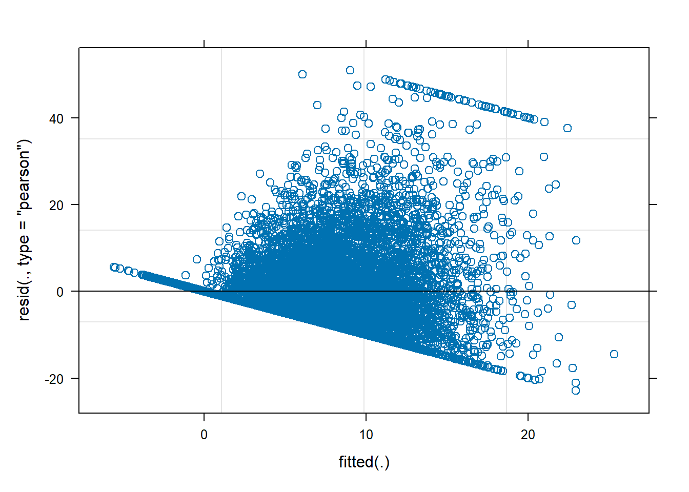
car::Anova(standmodel16, type=3)Warning in printHypothesis(L, rhs, names(b)): one or more coefficients in the hypothesis include
arithmetic operators in their names;
the printed representation of the hypothesis will be omitted
Warning in printHypothesis(L, rhs, names(b)): one or more coefficients in the hypothesis include
arithmetic operators in their names;
the printed representation of the hypothesis will be omittedAnalysis of Deviance Table (Type III Wald chisquare tests)
Response: as.numeric(Standing)
Chisq Df Pr(>Chisq)
(Intercept) 15.9013 1 6.673e-05 ***
as.factor(hour) 70.9916 16 6.685e-09 ***
D0Fed2TxGrp 4.6354 4 0.32679
CrossbredYN 6.2319 2 0.04434 *
as.factor(hour):D0Fed2TxGrp 77.2296 64 0.12399
---
Signif. codes: 0 '***' 0.001 '**' 0.01 '*' 0.05 '.' 0.1 ' ' 1emmeans (standmodel16, ~ D0Fed2TxGrp)NOTE: Results may be misleading due to involvement in interactions D0Fed2TxGrp emmean SE df lower.CL upper.CL
MRB 7.37 0.983 144 5.43 9.31
CSB 7.40 1.018 144 5.38 9.41
CST 7.08 1.032 144 5.04 9.12
MCB 9.10 0.965 144 7.19 11.01
MCT 7.01 1.036 144 4.97 9.06
Results are averaged over the levels of: hour, CrossbredYN
Degrees-of-freedom method: kenward-roger
Results are given on the as.numeric (not the response) scale.
Confidence level used: 0.95 emmeans (standmodel16, ~ hour)NOTE: Results may be misleading due to involvement in interactions hour emmean SE df lower.CL upper.CL
-8 9.02 0.991 275 7.07 10.97
-7 6.47 0.991 275 4.52 8.42
-6 6.80 0.991 275 4.84 8.75
-5 8.41 0.991 275 6.46 10.36
-4 9.15 0.991 275 7.20 11.10
-3 9.71 0.991 275 7.76 11.66
-2 10.67 0.991 275 8.72 12.62
-1 10.22 0.991 275 8.27 12.17
0 8.10 0.991 275 6.15 10.05
1 10.63 0.991 275 8.68 12.58
2 7.91 0.991 275 5.95 9.86
3 6.05 0.991 275 4.09 8.00
4 5.43 0.991 275 3.48 7.38
5 6.35 0.991 275 4.40 8.30
6 5.08 0.991 275 3.13 7.03
7 4.90 0.991 275 2.95 6.85
8 4.18 0.991 275 2.23 6.13
Results are averaged over the levels of: D0Fed2TxGrp, CrossbredYN
Degrees-of-freedom method: kenward-roger
Results are given on the as.numeric (not the response) scale.
Confidence level used: 0.95 modeladj <- emmeans(standmodel16, ~hour|D0Fed2TxGrp)
summary(modeladj)D0Fed2TxGrp = MRB:
hour emmean SE df lower.CL upper.CL
-8 8.22 1.55 779 5.179 11.25
-7 5.01 1.55 779 1.970 8.04
-6 6.12 1.55 779 3.082 9.16
-5 7.36 1.55 779 4.321 10.40
-4 8.65 1.55 779 5.613 11.69
-3 5.77 1.55 779 2.731 8.81
-2 11.85 1.55 779 8.809 14.88
-1 9.86 1.55 779 6.818 12.89
0 9.36 1.55 779 6.326 12.40
1 13.27 1.55 779 10.235 16.31
2 7.58 1.55 779 4.544 10.62
3 5.73 1.55 779 2.693 8.77
4 4.56 1.55 779 1.521 7.60
5 7.00 1.55 779 3.962 10.04
6 6.09 1.55 779 3.050 9.13
7 5.21 1.55 779 2.172 8.25
8 3.69 1.55 779 0.653 6.73
D0Fed2TxGrp = CSB:
hour emmean SE df lower.CL upper.CL
-8 8.59 1.54 685 5.565 11.61
-7 6.33 1.54 685 3.308 9.36
-6 9.42 1.54 685 6.393 12.44
-5 7.63 1.54 685 4.602 10.65
-4 7.99 1.54 685 4.962 11.01
-3 9.80 1.54 685 6.772 12.82
-2 8.13 1.54 685 5.104 11.15
-1 10.93 1.54 685 7.906 13.95
0 8.29 1.54 685 5.263 11.31
1 9.78 1.54 685 6.752 12.80
2 6.26 1.54 685 3.241 9.29
3 6.99 1.54 685 3.970 10.02
4 5.33 1.54 685 2.310 8.36
5 5.74 1.54 685 2.716 8.76
6 5.31 1.54 685 2.288 8.34
7 4.49 1.54 685 1.470 7.52
8 4.72 1.54 685 1.694 7.74
D0Fed2TxGrp = CST:
hour emmean SE df lower.CL upper.CL
-8 7.77 1.56 688 4.702 10.84
-7 6.55 1.56 688 3.479 9.62
-6 5.98 1.56 688 2.905 9.05
-5 9.98 1.56 688 6.913 13.06
-4 8.73 1.56 688 5.663 11.81
-3 10.64 1.56 688 7.568 13.71
-2 10.54 1.56 688 7.465 13.61
-1 8.43 1.56 688 5.354 11.50
0 7.05 1.56 688 3.978 10.12
1 8.27 1.56 688 5.203 11.35
2 8.09 1.56 688 5.016 11.16
3 6.28 1.56 688 3.213 9.35
4 4.17 1.56 688 1.101 7.24
5 5.43 1.56 688 2.363 8.51
6 4.01 1.56 688 0.939 7.08
7 4.90 1.56 688 1.829 7.97
8 3.49 1.56 688 0.423 6.57
D0Fed2TxGrp = MCB:
hour emmean SE df lower.CL upper.CL
-8 11.43 1.52 781 8.444 14.41
-7 8.17 1.52 781 5.188 11.16
-6 6.82 1.52 781 3.836 9.81
-5 10.73 1.52 781 7.741 13.71
-4 9.61 1.52 781 6.620 12.59
-3 11.70 1.52 781 8.712 14.68
-2 10.85 1.52 781 7.861 13.83
-1 11.31 1.52 781 8.329 14.30
0 10.05 1.52 781 7.066 13.04
1 14.30 1.52 781 11.319 17.29
2 11.18 1.52 781 8.199 14.17
3 6.33 1.52 781 3.342 9.31
4 7.26 1.52 781 4.271 10.24
5 7.39 1.52 781 4.409 10.38
6 6.32 1.52 781 3.334 9.30
7 6.05 1.52 781 3.067 9.04
8 5.24 1.52 781 2.253 8.22
D0Fed2TxGrp = MCT:
hour emmean SE df lower.CL upper.CL
-8 9.08 1.55 662 6.033 12.13
-7 6.27 1.55 662 3.222 9.32
-6 5.65 1.55 662 2.597 8.69
-5 6.37 1.55 662 3.325 9.42
-4 10.79 1.55 662 7.742 13.84
-3 10.63 1.55 662 7.585 13.68
-2 12.01 1.55 662 8.958 15.05
-1 10.57 1.55 662 7.524 13.62
0 5.75 1.55 662 2.698 8.79
1 7.52 1.55 662 4.469 10.56
2 6.41 1.55 662 3.360 9.46
3 4.89 1.55 662 1.847 7.94
4 5.84 1.55 662 2.789 8.89
5 6.18 1.55 662 3.133 9.23
6 3.67 1.55 662 0.623 6.72
7 3.85 1.55 662 0.805 6.90
8 3.75 1.55 662 0.701 6.80
Results are averaged over the levels of: CrossbredYN
Degrees-of-freedom method: kenward-roger
Results are given on the as.numeric (not the response) scale.
Confidence level used: 0.95 subset_hour_1 <- subset(modeladj, hour == 1)
subset_hour_2 <- subset(modeladj, hour == 2)
pairwise_comparisons_hour_1 <- pairs(subset_hour_1)
pairwise_comparisons_hour_2 <- pairs(subset_hour_2)
summary(pairwise_comparisons_hour_1) contrast estimate SE df t.ratio p.value
hour1 MRB - hour1 CSB 3.497 1.88 1672 1.857 0.3414
hour1 MRB - hour1 CST 4.998 1.90 1688 2.637 0.0643
hour1 MRB - hour1 MCB -1.032 1.89 1693 -0.545 0.9826
hour1 MRB - hour1 MCT 5.756 1.88 1690 3.062 0.0190
hour1 CSB - hour1 CST 1.501 1.86 1694 0.806 0.9289
hour1 CSB - hour1 MCB -4.529 1.86 1688 -2.430 0.1080
hour1 CSB - hour1 MCT 2.259 1.85 1678 1.221 0.7393
hour1 CST - hour1 MCB -6.030 1.88 1690 -3.209 0.0118
hour1 CST - hour1 MCT 0.758 1.86 1697 0.407 0.9942
hour1 MCB - hour1 MCT 6.788 1.87 1681 3.639 0.0026
Results are averaged over the levels of: CrossbredYN
Note: contrasts are still on the as.numeric scale. Consider using
regrid() if you want contrasts of back-transformed estimates.
Degrees-of-freedom method: kenward-roger
P value adjustment: tukey method for comparing a family of 5 estimates summary(pairwise_comparisons_hour_2) contrast estimate SE df t.ratio p.value
hour2 MRB - hour2 CSB 1.317 1.88 1672 0.700 0.9566
hour2 MRB - hour2 CST -0.505 1.90 1688 -0.266 0.9989
hour2 MRB - hour2 MCB -3.603 1.89 1693 -1.902 0.3168
hour2 MRB - hour2 MCT 1.174 1.88 1690 0.624 0.9712
hour2 CSB - hour2 CST -1.822 1.86 1694 -0.978 0.8652
hour2 CSB - hour2 MCB -4.920 1.86 1688 -2.639 0.0639
hour2 CSB - hour2 MCT -0.144 1.85 1678 -0.078 1.0000
hour2 CST - hour2 MCB -3.098 1.88 1690 -1.649 0.4664
hour2 CST - hour2 MCT 1.679 1.86 1697 0.901 0.8965
hour2 MCB - hour2 MCT 4.776 1.87 1681 2.560 0.0783
Results are averaged over the levels of: CrossbredYN
Note: contrasts are still on the as.numeric scale. Consider using
regrid() if you want contrasts of back-transformed estimates.
Degrees-of-freedom method: kenward-roger
P value adjustment: tukey method for comparing a family of 5 estimates emm_df <- as.data.frame(modeladj)
ggplot(emm_df, aes(x = hour, y = emmean, color = D0Fed2TxGrp)) +
geom_line() +
geom_point() +
geom_errorbar(aes(ymin = emmean - SE, ymax = emmean + SE), width = 0.2)+
labs(x = "Hour", y = "Adjusted Mean Standing Time (min)", title = "Adjusted Mean Standing Time by Hour") +
theme_classic()+
scale_y_continuous(limits = c(0, 20), breaks = seq(0, 20, by = 5))+
scale_x_continuous(limits = c(-8, 8), breaks = seq(-8, 8, by = 2))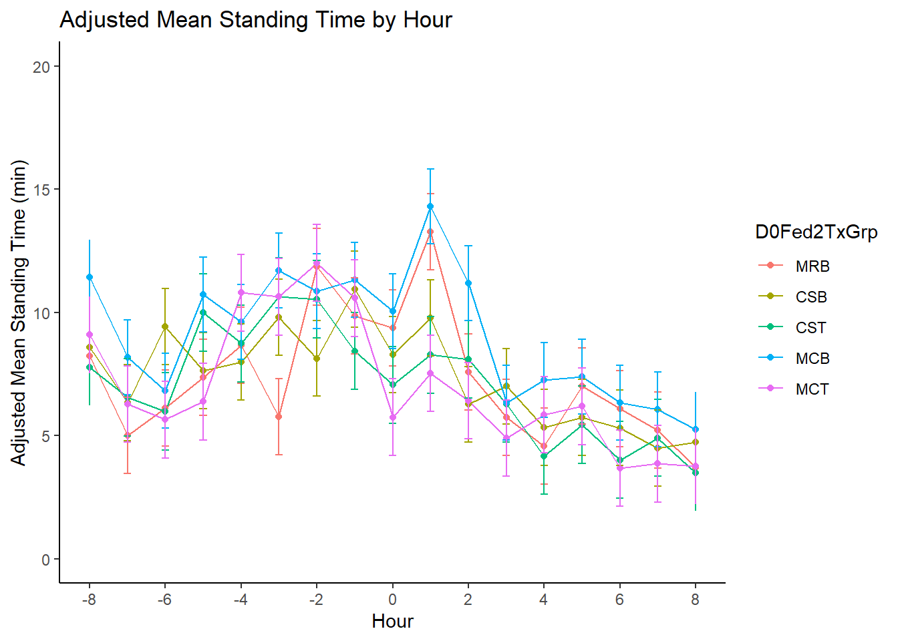
Lying
hourfull <- hour |>
filter(hour >= -8 & hour <= 8)
hourfull$D0Fed2TxGrp <- relevel(factor(hourfull$D0Fed2TxGrp), ref = "MRB")
laymodel16 <- lmer(as.numeric(Lying) ~ as.factor(hour) * D0Fed2TxGrp + CrossbredYN + (1 | CalfID), data = hourfull)
summary(laymodel16)Linear mixed model fit by REML. t-tests use Satterthwaite's method [
lmerModLmerTest]
Formula: as.numeric(Lying) ~ as.factor(hour) * D0Fed2TxGrp + CrossbredYN +
(1 | CalfID)
Data: hourfull
REML criterion at convergence: 16936
Scaled residuals:
Min 1Q Median 3Q Max
-6.5882 -0.4580 0.1545 0.6383 2.3279
Random effects:
Groups Name Variance Std.Dev.
CalfID (Intercept) 8.846 2.974
Residual 44.007 6.634
Number of obs: 2567, groups: CalfID, 151
Fixed effects:
Estimate Std. Error df t value
(Intercept) 53.98156 1.50927 881.42483 35.767
as.factor(hour)-7 3.20920 1.74211 2336.00000 1.842
as.factor(hour)-6 2.09655 1.74211 2336.00000 1.203
as.factor(hour)-5 0.85747 1.74211 2336.00000 0.492
as.factor(hour)-4 -0.43448 1.74211 2336.00000 -0.249
as.factor(hour)-3 2.44770 1.74211 2336.00000 1.405
as.factor(hour)-2 -3.62989 1.74211 2336.00000 -2.084
as.factor(hour)-1 -1.63966 1.74211 2336.00000 -0.941
as.factor(hour)0 -46.14770 1.74211 2336.00000 -26.490
as.factor(hour)1 -5.05632 1.74211 2336.00000 -2.902
as.factor(hour)2 0.63448 1.74211 2336.00000 0.364
as.factor(hour)3 2.48621 1.74211 2336.00000 1.427
as.factor(hour)4 3.65805 1.74211 2336.00000 2.100
as.factor(hour)5 1.21724 1.74211 2336.00000 0.699
as.factor(hour)6 2.12874 1.74211 2336.00000 1.222
as.factor(hour)7 3.00632 1.74211 2336.00000 1.726
as.factor(hour)8 4.52586 1.74211 2336.00000 2.598
D0Fed2TxGrpCSB -0.37275 1.88336 1671.70640 -0.198
D0Fed2TxGrpCST 0.44357 1.89558 1687.72434 0.234
D0Fed2TxGrpMCB -3.21264 1.89461 1693.10967 -1.696
D0Fed2TxGrpMCT -0.86488 1.88005 1690.19929 -0.460
CrossbredYNy -5.17795 2.51381 144.00000 -2.060
CrossbredYNY -1.41550 0.75138 144.00000 -1.884
as.factor(hour)-7:D0Fed2TxGrpCSB -0.95221 2.42365 2336.00000 -0.393
as.factor(hour)-6:D0Fed2TxGrpCSB -2.92451 2.42365 2336.00000 -1.207
as.factor(hour)-5:D0Fed2TxGrpCSB 0.10597 2.42365 2336.00000 0.044
as.factor(hour)-4:D0Fed2TxGrpCSB 1.03771 2.42365 2336.00000 0.428
as.factor(hour)-3:D0Fed2TxGrpCSB -3.65415 2.42365 2336.00000 -1.508
as.factor(hour)-2:D0Fed2TxGrpCSB 4.09118 2.42365 2336.00000 1.688
as.factor(hour)-1:D0Fed2TxGrpCSB -0.70121 2.42365 2336.00000 -0.289
as.factor(hour)0:D0Fed2TxGrpCSB 1.44985 2.42365 2336.00000 0.598
as.factor(hour)1:D0Fed2TxGrpCSB 3.86976 2.42365 2336.00000 1.597
as.factor(hour)2:D0Fed2TxGrpCSB 1.69025 2.42365 2336.00000 0.697
as.factor(hour)3:D0Fed2TxGrpCSB -0.89105 2.42365 2336.00000 -0.368
as.factor(hour)4:D0Fed2TxGrpCSB -0.40321 2.42365 2336.00000 -0.166
as.factor(hour)5:D0Fed2TxGrpCSB 1.63222 2.42365 2336.00000 0.673
as.factor(hour)6:D0Fed2TxGrpCSB 1.14868 2.42365 2336.00000 0.474
as.factor(hour)7:D0Fed2TxGrpCSB 1.08938 2.42365 2336.00000 0.449
as.factor(hour)8:D0Fed2TxGrpCSB -0.65489 2.42365 2336.00000 -0.270
as.factor(hour)-7:D0Fed2TxGrpCST -1.98642 2.44310 2336.00000 -0.813
as.factor(hour)-6:D0Fed2TxGrpCST -0.29989 2.44310 2336.00000 -0.123
as.factor(hour)-5:D0Fed2TxGrpCST -3.06914 2.44310 2336.00000 -1.256
as.factor(hour)-4:D0Fed2TxGrpCST -0.52718 2.44310 2336.00000 -0.216
as.factor(hour)-3:D0Fed2TxGrpCST -5.31437 2.44310 2336.00000 -2.175
as.factor(hour)-2:D0Fed2TxGrpCST 0.86655 2.44310 2336.00000 0.355
as.factor(hour)-1:D0Fed2TxGrpCST 0.98688 2.44310 2336.00000 0.404
as.factor(hour)0:D0Fed2TxGrpCST 1.87103 2.44310 2336.00000 0.766
as.factor(hour)1:D0Fed2TxGrpCST 4.55466 2.44310 2336.00000 1.864
as.factor(hour)2:D0Fed2TxGrpCST -0.94837 2.44310 2336.00000 -0.388
as.factor(hour)3:D0Fed2TxGrpCST -0.99732 2.44310 2336.00000 -0.408
as.factor(hour)4:D0Fed2TxGrpCST -0.05693 2.44310 2336.00000 -0.023
as.factor(hour)5:D0Fed2TxGrpCST 1.12109 2.44310 2336.00000 0.459
as.factor(hour)6:D0Fed2TxGrpCST 1.63349 2.44310 2336.00000 0.669
as.factor(hour)7:D0Fed2TxGrpCST -0.13354 2.44310 2336.00000 -0.055
as.factor(hour)8:D0Fed2TxGrpCST -0.24753 2.44310 2336.00000 -0.101
as.factor(hour)-7:D0Fed2TxGrpMCB 0.04636 2.44310 2336.00000 0.019
as.factor(hour)-6:D0Fed2TxGrpMCB 2.51067 2.44310 2336.00000 1.028
as.factor(hour)-5:D0Fed2TxGrpMCB -0.15469 2.44310 2336.00000 -0.063
as.factor(hour)-4:D0Fed2TxGrpMCB 2.25837 2.44310 2336.00000 0.924
as.factor(hour)-3:D0Fed2TxGrpMCB -2.71603 2.44310 2336.00000 -1.112
as.factor(hour)-2:D0Fed2TxGrpMCB 4.21211 2.44310 2336.00000 1.724
as.factor(hour)-1:D0Fed2TxGrpMCB 1.75466 2.44310 2336.00000 0.718
as.factor(hour)0:D0Fed2TxGrpMCB 2.52548 2.44310 2336.00000 1.034
as.factor(hour)1:D0Fed2TxGrpMCB 2.18077 2.44310 2336.00000 0.893
as.factor(hour)2:D0Fed2TxGrpMCB -0.39004 2.44310 2336.00000 -0.160
as.factor(hour)3:D0Fed2TxGrpMCB 2.61490 2.44310 2336.00000 1.070
as.factor(hour)4:D0Fed2TxGrpMCB 0.51418 2.44310 2336.00000 0.210
as.factor(hour)5:D0Fed2TxGrpMCB 2.81720 2.44310 2336.00000 1.153
as.factor(hour)6:D0Fed2TxGrpMCB 2.98071 2.44310 2336.00000 1.220
as.factor(hour)7:D0Fed2TxGrpMCB 2.36979 2.44310 2336.00000 0.970
as.factor(hour)8:D0Fed2TxGrpMCB 1.66469 2.44310 2336.00000 0.681
as.factor(hour)-7:D0Fed2TxGrpMCT -0.39844 2.42365 2336.00000 -0.164
as.factor(hour)-6:D0Fed2TxGrpMCT 1.33947 2.42365 2336.00000 0.553
as.factor(hour)-5:D0Fed2TxGrpMCT 1.85059 2.42365 2336.00000 0.764
as.factor(hour)-4:D0Fed2TxGrpMCT -1.27466 2.42365 2336.00000 -0.526
as.factor(hour)-3:D0Fed2TxGrpMCT -3.99931 2.42365 2336.00000 -1.650
as.factor(hour)-2:D0Fed2TxGrpMCT 0.70515 2.42365 2336.00000 0.291
as.factor(hour)-1:D0Fed2TxGrpMCT 0.14879 2.42365 2336.00000 0.061
as.factor(hour)0:D0Fed2TxGrpMCT 4.48265 2.42365 2336.00000 1.850
as.factor(hour)1:D0Fed2TxGrpMCT 6.62084 2.42365 2336.00000 2.732
as.factor(hour)2:D0Fed2TxGrpMCT 2.03864 2.42365 2336.00000 0.841
as.factor(hour)3:D0Fed2TxGrpMCT 1.70035 2.42365 2336.00000 0.702
as.factor(hour)4:D0Fed2TxGrpMCT -0.41396 2.42365 2336.00000 -0.171
as.factor(hour)5:D0Fed2TxGrpMCT 1.68276 2.42365 2336.00000 0.694
as.factor(hour)6:D0Fed2TxGrpMCT 3.28094 2.42365 2336.00000 1.354
as.factor(hour)7:D0Fed2TxGrpMCT 2.22217 2.42365 2336.00000 0.917
as.factor(hour)8:D0Fed2TxGrpMCT 0.80640 2.42365 2336.00000 0.333
Pr(>|t|)
(Intercept) < 2e-16 ***
as.factor(hour)-7 0.06558 .
as.factor(hour)-6 0.22892
as.factor(hour)-5 0.62262
as.factor(hour)-4 0.80307
as.factor(hour)-3 0.16015
as.factor(hour)-2 0.03730 *
as.factor(hour)-1 0.34671
as.factor(hour)0 < 2e-16 ***
as.factor(hour)1 0.00374 **
as.factor(hour)2 0.71574
as.factor(hour)3 0.15368
as.factor(hour)4 0.03586 *
as.factor(hour)5 0.48480
as.factor(hour)6 0.22186
as.factor(hour)7 0.08454 .
as.factor(hour)8 0.00944 **
D0Fed2TxGrpCSB 0.84313
D0Fed2TxGrpCST 0.81501
D0Fed2TxGrpMCB 0.09013 .
D0Fed2TxGrpMCT 0.64555
CrossbredYNy 0.04122 *
CrossbredYNY 0.06160 .
as.factor(hour)-7:D0Fed2TxGrpCSB 0.69444
as.factor(hour)-6:D0Fed2TxGrpCSB 0.22769
as.factor(hour)-5:D0Fed2TxGrpCSB 0.96513
as.factor(hour)-4:D0Fed2TxGrpCSB 0.66858
as.factor(hour)-3:D0Fed2TxGrpCSB 0.13177
as.factor(hour)-2:D0Fed2TxGrpCSB 0.09154 .
as.factor(hour)-1:D0Fed2TxGrpCSB 0.77236
as.factor(hour)0:D0Fed2TxGrpCSB 0.54976
as.factor(hour)1:D0Fed2TxGrpCSB 0.11048
as.factor(hour)2:D0Fed2TxGrpCSB 0.48562
as.factor(hour)3:D0Fed2TxGrpCSB 0.71317
as.factor(hour)4:D0Fed2TxGrpCSB 0.86789
as.factor(hour)5:D0Fed2TxGrpCSB 0.50072
as.factor(hour)6:D0Fed2TxGrpCSB 0.63558
as.factor(hour)7:D0Fed2TxGrpCSB 0.65313
as.factor(hour)8:D0Fed2TxGrpCSB 0.78702
as.factor(hour)-7:D0Fed2TxGrpCST 0.41626
as.factor(hour)-6:D0Fed2TxGrpCST 0.90232
as.factor(hour)-5:D0Fed2TxGrpCST 0.20915
as.factor(hour)-4:D0Fed2TxGrpCST 0.82917
as.factor(hour)-3:D0Fed2TxGrpCST 0.02971 *
as.factor(hour)-2:D0Fed2TxGrpCST 0.72285
as.factor(hour)-1:D0Fed2TxGrpCST 0.68629
as.factor(hour)0:D0Fed2TxGrpCST 0.44385
as.factor(hour)1:D0Fed2TxGrpCST 0.06241 .
as.factor(hour)2:D0Fed2TxGrpCST 0.69792
as.factor(hour)3:D0Fed2TxGrpCST 0.68315
as.factor(hour)4:D0Fed2TxGrpCST 0.98141
as.factor(hour)5:D0Fed2TxGrpCST 0.64636
as.factor(hour)6:D0Fed2TxGrpCST 0.50381
as.factor(hour)7:D0Fed2TxGrpCST 0.95641
as.factor(hour)8:D0Fed2TxGrpCST 0.91931
as.factor(hour)-7:D0Fed2TxGrpMCB 0.98486
as.factor(hour)-6:D0Fed2TxGrpMCB 0.30422
as.factor(hour)-5:D0Fed2TxGrpMCB 0.94952
as.factor(hour)-4:D0Fed2TxGrpMCB 0.35538
as.factor(hour)-3:D0Fed2TxGrpMCB 0.26637
as.factor(hour)-2:D0Fed2TxGrpMCB 0.08483 .
as.factor(hour)-1:D0Fed2TxGrpMCB 0.47270
as.factor(hour)0:D0Fed2TxGrpMCB 0.30137
as.factor(hour)1:D0Fed2TxGrpMCB 0.37215
as.factor(hour)2:D0Fed2TxGrpMCB 0.87317
as.factor(hour)3:D0Fed2TxGrpMCB 0.28458
as.factor(hour)4:D0Fed2TxGrpMCB 0.83333
as.factor(hour)5:D0Fed2TxGrpMCB 0.24898
as.factor(hour)6:D0Fed2TxGrpMCB 0.22257
as.factor(hour)7:D0Fed2TxGrpMCB 0.33215
as.factor(hour)8:D0Fed2TxGrpMCB 0.49569
as.factor(hour)-7:D0Fed2TxGrpMCT 0.86943
as.factor(hour)-6:D0Fed2TxGrpMCT 0.58055
as.factor(hour)-5:D0Fed2TxGrpMCT 0.44521
as.factor(hour)-4:D0Fed2TxGrpMCT 0.59899
as.factor(hour)-3:D0Fed2TxGrpMCT 0.09905 .
as.factor(hour)-2:D0Fed2TxGrpMCT 0.77112
as.factor(hour)-1:D0Fed2TxGrpMCT 0.95105
as.factor(hour)0:D0Fed2TxGrpMCT 0.06451 .
as.factor(hour)1:D0Fed2TxGrpMCT 0.00635 **
as.factor(hour)2:D0Fed2TxGrpMCT 0.40035
as.factor(hour)3:D0Fed2TxGrpMCT 0.48302
as.factor(hour)4:D0Fed2TxGrpMCT 0.86440
as.factor(hour)5:D0Fed2TxGrpMCT 0.48756
as.factor(hour)6:D0Fed2TxGrpMCT 0.17596
as.factor(hour)7:D0Fed2TxGrpMCT 0.35931
as.factor(hour)8:D0Fed2TxGrpMCT 0.73938
---
Signif. codes: 0 '***' 0.001 '**' 0.01 '*' 0.05 '.' 0.1 ' ' 1
Correlation matrix not shown by default, as p = 87 > 12.
Use print(value, correlation=TRUE) or
vcov(value) if you need itplot(laymodel16)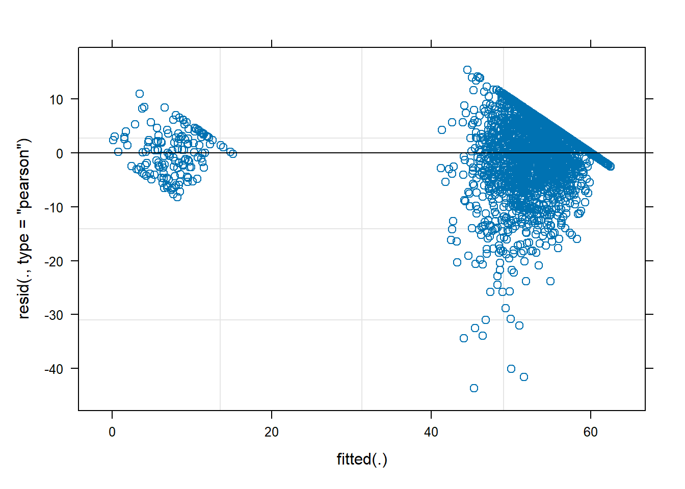
car::Anova(laymodel16, type=3)Warning in printHypothesis(L, rhs, names(b)): one or more coefficients in the hypothesis include
arithmetic operators in their names;
the printed representation of the hypothesis will be omitted
Warning in printHypothesis(L, rhs, names(b)): one or more coefficients in the hypothesis include
arithmetic operators in their names;
the printed representation of the hypothesis will be omittedAnalysis of Deviance Table (Type III Wald chisquare tests)
Response: as.numeric(Lying)
Chisq Df Pr(>Chisq)
(Intercept) 1279.2535 1 < 2e-16 ***
as.factor(hour) 1445.1147 16 < 2e-16 ***
D0Fed2TxGrp 4.6354 4 0.32679
CrossbredYN 6.2319 2 0.04434 *
as.factor(hour):D0Fed2TxGrp 77.2296 64 0.12399
---
Signif. codes: 0 '***' 0.001 '**' 0.01 '*' 0.05 '.' 0.1 ' ' 1emmeans (laymodel16, ~ D0Fed2TxGrp)NOTE: Results may be misleading due to involvement in interactions D0Fed2TxGrp emmean SE df lower.CL upper.CL
MRB 50.0 0.983 144 48.0 51.9
CSB 50.0 1.018 144 47.9 52.0
CST 50.3 1.032 144 48.2 52.3
MCB 48.3 0.965 144 46.3 50.2
MCT 50.3 1.036 144 48.3 52.4
Results are averaged over the levels of: hour, CrossbredYN
Degrees-of-freedom method: kenward-roger
Results are given on the as.numeric (not the response) scale.
Confidence level used: 0.95 emmeans (laymodel16, ~ hour)NOTE: Results may be misleading due to involvement in interactions hour emmean SE df lower.CL upper.CL
-8 51.0 0.991 275 49.03 52.93
-7 53.5 0.991 275 51.58 55.48
-6 53.2 0.991 275 51.25 55.16
-5 51.6 0.991 275 49.64 53.54
-4 50.8 0.991 275 48.90 52.80
-3 50.3 0.991 275 48.34 52.24
-2 49.3 0.991 275 47.38 51.28
-1 49.8 0.991 275 47.83 51.73
0 6.9 0.991 275 4.95 8.85
1 49.4 0.991 275 47.42 51.32
2 52.1 0.991 275 50.14 54.05
3 54.0 0.991 275 52.00 55.91
4 54.6 0.991 275 52.62 56.52
5 53.7 0.991 275 51.70 55.60
6 54.9 0.991 275 52.97 56.87
7 55.1 0.991 275 53.15 57.05
8 55.8 0.991 275 53.87 57.77
Results are averaged over the levels of: D0Fed2TxGrp, CrossbredYN
Degrees-of-freedom method: kenward-roger
Results are given on the as.numeric (not the response) scale.
Confidence level used: 0.95 modeladj <- emmeans(laymodel16, ~hour|D0Fed2TxGrp)
summary(modeladj)D0Fed2TxGrp = MRB:
hour emmean SE df lower.CL upper.CL
-8 51.78 1.55 779 48.75 54.82
-7 54.99 1.55 779 51.96 58.03
-6 53.88 1.55 779 50.84 56.92
-5 52.64 1.55 779 49.60 55.68
-4 51.35 1.55 779 48.31 54.39
-3 54.23 1.55 779 51.19 57.27
-2 48.15 1.55 779 45.12 51.19
-1 50.14 1.55 779 47.11 53.18
0 5.64 1.55 779 2.60 8.67
1 46.73 1.55 779 43.69 49.76
2 52.42 1.55 779 49.38 55.46
3 54.27 1.55 779 51.23 57.31
4 55.44 1.55 779 52.40 58.48
5 53.00 1.55 779 49.96 56.04
6 53.91 1.55 779 50.87 56.95
7 54.79 1.55 779 51.75 57.83
8 56.31 1.55 779 53.27 59.35
D0Fed2TxGrp = CSB:
hour emmean SE df lower.CL upper.CL
-8 51.41 1.54 685 48.39 54.43
-7 53.67 1.54 685 50.64 56.69
-6 50.58 1.54 685 47.56 53.61
-5 52.37 1.54 685 49.35 55.40
-4 52.01 1.54 685 48.99 55.04
-3 50.20 1.54 685 47.18 53.23
-2 51.87 1.54 685 48.85 54.90
-1 49.07 1.54 685 46.05 52.09
0 6.71 1.54 685 3.69 9.74
1 50.22 1.54 685 47.20 53.25
2 53.74 1.54 685 50.71 56.76
3 53.01 1.54 685 49.98 56.03
4 54.67 1.54 685 51.64 57.69
5 54.26 1.54 685 51.24 57.28
6 54.69 1.54 685 51.66 57.71
7 55.51 1.54 685 52.48 58.53
8 55.28 1.54 685 52.26 58.31
D0Fed2TxGrp = CST:
hour emmean SE df lower.CL upper.CL
-8 52.23 1.56 688 49.16 55.30
-7 53.45 1.56 688 50.38 56.52
-6 54.02 1.56 688 50.95 57.09
-5 50.02 1.56 688 46.94 53.09
-4 51.27 1.56 688 48.19 54.34
-3 49.36 1.56 688 46.29 52.43
-2 49.46 1.56 688 46.39 52.53
-1 51.57 1.56 688 48.50 54.65
0 7.95 1.56 688 4.88 11.02
1 51.73 1.56 688 48.65 54.80
2 51.91 1.56 688 48.84 54.98
3 53.72 1.56 688 50.65 56.79
4 55.83 1.56 688 52.76 58.90
5 54.57 1.56 688 51.49 57.64
6 55.99 1.56 688 52.92 59.06
7 55.10 1.56 688 52.03 58.17
8 56.51 1.56 688 53.43 59.58
D0Fed2TxGrp = MCB:
hour emmean SE df lower.CL upper.CL
-8 48.57 1.52 781 45.59 51.56
-7 51.83 1.52 781 48.84 54.81
-6 53.18 1.52 781 50.19 56.16
-5 49.27 1.52 781 46.29 52.26
-4 50.40 1.52 781 47.41 53.38
-3 48.30 1.52 781 45.32 51.29
-2 49.15 1.52 781 46.17 52.14
-1 48.69 1.52 781 45.70 51.67
0 4.95 1.52 781 1.96 7.93
1 45.70 1.52 781 42.71 48.68
2 48.82 1.52 781 45.83 51.80
3 53.67 1.52 781 50.69 56.66
4 52.74 1.52 781 49.76 55.73
5 52.61 1.52 781 49.62 55.59
6 53.68 1.52 781 50.70 56.67
7 53.95 1.52 781 50.96 56.93
8 54.76 1.52 781 51.78 57.75
D0Fed2TxGrp = MCT:
hour emmean SE df lower.CL upper.CL
-8 50.92 1.55 662 47.87 53.97
-7 53.73 1.55 662 50.68 56.78
-6 54.35 1.55 662 51.31 57.40
-5 53.63 1.55 662 50.58 56.67
-4 49.21 1.55 662 46.16 52.26
-3 49.37 1.55 662 46.32 52.42
-2 47.99 1.55 662 44.95 51.04
-1 49.43 1.55 662 46.38 52.48
0 9.25 1.55 662 6.21 12.30
1 52.48 1.55 662 49.44 55.53
2 53.59 1.55 662 50.54 56.64
3 55.11 1.55 662 52.06 58.15
4 54.16 1.55 662 51.11 57.21
5 53.82 1.55 662 50.77 56.87
6 56.33 1.55 662 53.28 59.38
7 56.15 1.55 662 53.10 59.20
8 56.25 1.55 662 53.20 59.30
Results are averaged over the levels of: CrossbredYN
Degrees-of-freedom method: kenward-roger
Results are given on the as.numeric (not the response) scale.
Confidence level used: 0.95 subset_hour_1 <- subset(modeladj, hour == 1)
subset_hour_2 <- subset(modeladj, hour == 2)
pairwise_comparisons_hour_1 <- pairs(subset_hour_1)
pairwise_comparisons_hour_2 <- pairs(subset_hour_2)
summary(pairwise_comparisons_hour_1) contrast estimate SE df t.ratio p.value
hour1 MRB - hour1 CSB -3.497 1.88 1672 -1.857 0.3414
hour1 MRB - hour1 CST -4.998 1.90 1688 -2.637 0.0643
hour1 MRB - hour1 MCB 1.032 1.89 1693 0.545 0.9826
hour1 MRB - hour1 MCT -5.756 1.88 1690 -3.062 0.0190
hour1 CSB - hour1 CST -1.501 1.86 1694 -0.806 0.9289
hour1 CSB - hour1 MCB 4.529 1.86 1688 2.430 0.1080
hour1 CSB - hour1 MCT -2.259 1.85 1678 -1.221 0.7393
hour1 CST - hour1 MCB 6.030 1.88 1690 3.209 0.0118
hour1 CST - hour1 MCT -0.758 1.86 1697 -0.407 0.9942
hour1 MCB - hour1 MCT -6.788 1.87 1681 -3.639 0.0026
Results are averaged over the levels of: CrossbredYN
Note: contrasts are still on the as.numeric scale. Consider using
regrid() if you want contrasts of back-transformed estimates.
Degrees-of-freedom method: kenward-roger
P value adjustment: tukey method for comparing a family of 5 estimates summary(pairwise_comparisons_hour_2) contrast estimate SE df t.ratio p.value
hour2 MRB - hour2 CSB -1.317 1.88 1672 -0.700 0.9566
hour2 MRB - hour2 CST 0.505 1.90 1688 0.266 0.9989
hour2 MRB - hour2 MCB 3.603 1.89 1693 1.902 0.3168
hour2 MRB - hour2 MCT -1.174 1.88 1690 -0.624 0.9712
hour2 CSB - hour2 CST 1.822 1.86 1694 0.978 0.8652
hour2 CSB - hour2 MCB 4.920 1.86 1688 2.639 0.0639
hour2 CSB - hour2 MCT 0.144 1.85 1678 0.078 1.0000
hour2 CST - hour2 MCB 3.098 1.88 1690 1.649 0.4664
hour2 CST - hour2 MCT -1.679 1.86 1697 -0.901 0.8965
hour2 MCB - hour2 MCT -4.776 1.87 1681 -2.560 0.0783
Results are averaged over the levels of: CrossbredYN
Note: contrasts are still on the as.numeric scale. Consider using
regrid() if you want contrasts of back-transformed estimates.
Degrees-of-freedom method: kenward-roger
P value adjustment: tukey method for comparing a family of 5 estimates emm_df <- as.data.frame(modeladj)
ggplot(emm_df, aes(x = hour, y = emmean, color = D0Fed2TxGrp)) +
geom_line() +
geom_point() +
geom_errorbar(aes(ymin = emmean - SE, ymax = emmean + SE), width = 0.2)+
labs(x = "Hour", y = "Adjusted Mean Lying Time (min)", title = "Adjusted Mean Lying Time by Hour") +
theme_classic()+
scale_y_continuous(limits = c(0, 60), breaks = seq(0, 60, by = 5))+
scale_x_continuous(limits = c(-8, 8), breaks = seq(-8, 8, by = 2))
Models - 15 min increments - 4 and 2 hrs around
Standing
hr4 <- merged_data |>
filter(tffeed >= -8 & tffeed <= 8) |>
mutate(
standm = `Standing [t]` / 60)
hr4$D0Fed2TxGrp <- relevel(factor(hr4$D0Fed2TxGrp), ref = "MRB")
standm2 <- lmer(as.numeric(standm) ~ as.factor(tffeed) * D0Fed2TxGrp + CrossbredYN + (1 | CalfID), data = hr4)
summary(standm2)Linear mixed model fit by REML. t-tests use Satterthwaite's method [
lmerModLmerTest]
Formula: as.numeric(standm) ~ as.factor(tffeed) * D0Fed2TxGrp + CrossbredYN +
(1 | CalfID)
Data: hr4
REML criterion at convergence: 13554.5
Scaled residuals:
Min 1Q Median 3Q Max
-2.6345 -0.6095 -0.2646 0.3822 3.8109
Random effects:
Groups Name Variance Std.Dev.
CalfID (Intercept) 1.21 1.1
Residual 11.56 3.4
Number of obs: 2567, groups: CalfID, 151
Fixed effects:
Estimate Std. Error df t value
(Intercept) 2.52470 0.71811 1348.20258 3.516
as.factor(tffeed)-7 -0.77299 0.89296 2335.99999 -0.866
as.factor(tffeed)-6 -0.51437 0.89296 2335.99999 -0.576
as.factor(tffeed)-5 0.67471 0.89296 2335.99999 0.756
as.factor(tffeed)-4 -1.02126 0.89296 2336.00000 -1.144
as.factor(tffeed)-3 -1.63391 0.89296 2335.99999 -1.830
as.factor(tffeed)-2 -0.77299 0.89296 2336.00000 -0.866
as.factor(tffeed)-1 0.82529 0.89296 2335.99999 0.924
as.factor(tffeed)0 5.65000 0.89296 2336.00000 6.327
as.factor(tffeed)1 2.18276 0.89296 2335.99999 2.444
as.factor(tffeed)2 -1.25345 0.89296 2336.00000 -1.404
as.factor(tffeed)3 -0.45862 0.89296 2335.99999 -0.514
as.factor(tffeed)4 0.34310 0.89296 2336.00000 0.384
as.factor(tffeed)5 -1.48793 0.89296 2335.99999 -1.666
as.factor(tffeed)6 -0.81437 0.89296 2336.00000 -0.912
as.factor(tffeed)7 -0.71379 0.89296 2335.99999 -0.799
as.factor(tffeed)8 -1.86092 0.89296 2335.99999 -2.084
D0Fed2TxGrpCSB -1.62655 0.92501 2140.46887 -1.758
D0Fed2TxGrpCST -0.64320 0.93146 2151.60933 -0.691
D0Fed2TxGrpMCB -1.34423 0.93113 2155.31708 -1.444
D0Fed2TxGrpMCT -1.03013 0.92390 2153.31567 -1.115
CrossbredYNy 2.17864 1.02200 143.99999 2.132
CrossbredYNY 0.36553 0.30548 143.99999 1.197
as.factor(tffeed)-7:D0Fed2TxGrpCSB 1.67890 1.24231 2336.00000 1.351
as.factor(tffeed)-6:D0Fed2TxGrpCSB 1.84232 1.24231 2336.00000 1.483
as.factor(tffeed)-5:D0Fed2TxGrpCSB -0.60590 1.24231 2336.00000 -0.488
as.factor(tffeed)-4:D0Fed2TxGrpCSB 1.52341 1.24231 2336.00000 1.226
as.factor(tffeed)-3:D0Fed2TxGrpCSB 3.20219 1.24231 2336.00000 2.578
as.factor(tffeed)-2:D0Fed2TxGrpCSB 1.66385 1.24231 2336.00000 1.339
as.factor(tffeed)-1:D0Fed2TxGrpCSB 1.31826 1.24231 2336.00000 1.061
as.factor(tffeed)0:D0Fed2TxGrpCSB 0.31989 1.24231 2336.00000 0.257
as.factor(tffeed)1:D0Fed2TxGrpCSB 0.82369 1.24231 2336.00000 0.663
as.factor(tffeed)2:D0Fed2TxGrpCSB 1.96420 1.24231 2336.00000 1.581
as.factor(tffeed)3:D0Fed2TxGrpCSB 0.78927 1.24231 2336.00000 0.635
as.factor(tffeed)4:D0Fed2TxGrpCSB -0.44042 1.24231 2336.00000 -0.355
as.factor(tffeed)5:D0Fed2TxGrpCSB 1.87341 1.24231 2336.00000 1.508
as.factor(tffeed)6:D0Fed2TxGrpCSB 0.46544 1.24231 2336.00000 0.375
as.factor(tffeed)7:D0Fed2TxGrpCSB -0.07545 1.24231 2336.00000 -0.061
as.factor(tffeed)8:D0Fed2TxGrpCSB 3.05286 1.24231 2336.00000 2.457
as.factor(tffeed)-7:D0Fed2TxGrpCST 0.91743 1.25227 2336.00000 0.733
as.factor(tffeed)-6:D0Fed2TxGrpCST 0.24437 1.25227 2336.00000 0.195
as.factor(tffeed)-5:D0Fed2TxGrpCST 0.22418 1.25227 2336.00000 0.179
as.factor(tffeed)-4:D0Fed2TxGrpCST 0.14126 1.25227 2336.00000 0.113
as.factor(tffeed)-3:D0Fed2TxGrpCST 1.47891 1.25227 2336.00000 1.181
as.factor(tffeed)-2:D0Fed2TxGrpCST 0.52354 1.25227 2336.00000 0.418
as.factor(tffeed)-1:D0Fed2TxGrpCST -0.87807 1.25227 2336.00000 -0.701
as.factor(tffeed)0:D0Fed2TxGrpCST -1.80500 1.25227 2336.00000 -1.441
as.factor(tffeed)1:D0Fed2TxGrpCST -2.14554 1.25227 2336.00000 -1.713
as.factor(tffeed)2:D0Fed2TxGrpCST 0.16178 1.25227 2336.00000 0.129
as.factor(tffeed)3:D0Fed2TxGrpCST -0.64082 1.25227 2336.00000 -0.512
as.factor(tffeed)4:D0Fed2TxGrpCST 0.32245 1.25227 2336.00000 0.257
as.factor(tffeed)5:D0Fed2TxGrpCST 1.71293 1.25227 2336.00000 1.368
as.factor(tffeed)6:D0Fed2TxGrpCST 0.11437 1.25227 2336.00000 0.091
as.factor(tffeed)7:D0Fed2TxGrpCST -0.21954 1.25227 2336.00000 -0.175
as.factor(tffeed)8:D0Fed2TxGrpCST 1.59314 1.25227 2336.00000 1.272
as.factor(tffeed)-7:D0Fed2TxGrpMCB 1.60854 1.25227 2336.00000 1.284
as.factor(tffeed)-6:D0Fed2TxGrpMCB 2.65492 1.25227 2336.00000 2.120
as.factor(tffeed)-5:D0Fed2TxGrpMCB 0.12251 1.25227 2336.00000 0.098
as.factor(tffeed)-4:D0Fed2TxGrpMCB 1.62960 1.25227 2336.00000 1.301
as.factor(tffeed)-3:D0Fed2TxGrpMCB 2.93780 1.25227 2336.00000 2.346
as.factor(tffeed)-2:D0Fed2TxGrpMCB 1.13577 1.25227 2336.00000 0.907
as.factor(tffeed)-1:D0Fed2TxGrpMCB 1.14027 1.25227 2336.00000 0.911
as.factor(tffeed)0:D0Fed2TxGrpMCB 1.92778 1.25227 2336.00000 1.539
as.factor(tffeed)1:D0Fed2TxGrpMCB 3.31335 1.25227 2336.00000 2.646
as.factor(tffeed)2:D0Fed2TxGrpMCB 2.75845 1.25227 2336.00000 2.203
as.factor(tffeed)3:D0Fed2TxGrpMCB 0.50307 1.25227 2336.00000 0.402
as.factor(tffeed)4:D0Fed2TxGrpMCB -0.15755 1.25227 2336.00000 -0.126
as.factor(tffeed)5:D0Fed2TxGrpMCB 1.65904 1.25227 2336.00000 1.325
as.factor(tffeed)6:D0Fed2TxGrpMCB 3.20326 1.25227 2336.00000 2.558
as.factor(tffeed)7:D0Fed2TxGrpMCB 1.39713 1.25227 2336.00000 1.116
as.factor(tffeed)8:D0Fed2TxGrpMCB 2.72870 1.25227 2336.00000 2.179
as.factor(tffeed)-7:D0Fed2TxGrpMCT 1.81600 1.24231 2336.00000 1.462
as.factor(tffeed)-6:D0Fed2TxGrpMCT 1.89663 1.24231 2336.00000 1.527
as.factor(tffeed)-5:D0Fed2TxGrpMCT 0.68765 1.24231 2336.00000 0.554
as.factor(tffeed)-4:D0Fed2TxGrpMCT 1.61051 1.24231 2336.00000 1.296
as.factor(tffeed)-3:D0Fed2TxGrpMCT 1.58283 1.24231 2336.00000 1.274
as.factor(tffeed)-2:D0Fed2TxGrpMCT 0.87299 1.24231 2336.00000 0.703
as.factor(tffeed)-1:D0Fed2TxGrpMCT 0.89030 1.24231 2336.00000 0.717
as.factor(tffeed)0:D0Fed2TxGrpMCT -2.64785 1.24231 2336.00000 -2.131
as.factor(tffeed)1:D0Fed2TxGrpMCT -0.90910 1.24231 2336.00000 -0.732
as.factor(tffeed)2:D0Fed2TxGrpMCT 0.57872 1.24231 2336.00000 0.466
as.factor(tffeed)3:D0Fed2TxGrpMCT 0.09518 1.24231 2336.00000 0.077
as.factor(tffeed)4:D0Fed2TxGrpMCT -1.28020 1.24231 2336.00000 -1.031
as.factor(tffeed)5:D0Fed2TxGrpMCT 1.55406 1.24231 2336.00000 1.251
as.factor(tffeed)6:D0Fed2TxGrpMCT 0.50415 1.24231 2336.00000 0.406
as.factor(tffeed)7:D0Fed2TxGrpMCT 0.38315 1.24231 2336.00000 0.308
as.factor(tffeed)8:D0Fed2TxGrpMCT 0.62544 1.24231 2336.00000 0.503
Pr(>|t|)
(Intercept) 0.000453 ***
as.factor(tffeed)-7 0.386774
as.factor(tffeed)-6 0.564655
as.factor(tffeed)-5 0.449972
as.factor(tffeed)-4 0.252874
as.factor(tffeed)-3 0.067413 .
as.factor(tffeed)-2 0.386774
as.factor(tffeed)-1 0.355472
as.factor(tffeed)0 2.98e-10 ***
as.factor(tffeed)1 0.014583 *
as.factor(tffeed)2 0.160543
as.factor(tffeed)3 0.607584
as.factor(tffeed)4 0.700843
as.factor(tffeed)5 0.095791 .
as.factor(tffeed)6 0.361872
as.factor(tffeed)7 0.424167
as.factor(tffeed)8 0.037270 *
D0Fed2TxGrpCSB 0.078822 .
D0Fed2TxGrpCST 0.489935
D0Fed2TxGrpMCB 0.148983
D0Fed2TxGrpMCT 0.264982
CrossbredYNy 0.034725 *
CrossbredYNY 0.233428
as.factor(tffeed)-7:D0Fed2TxGrpCSB 0.176685
as.factor(tffeed)-6:D0Fed2TxGrpCSB 0.138212
as.factor(tffeed)-5:D0Fed2TxGrpCSB 0.625795
as.factor(tffeed)-4:D0Fed2TxGrpCSB 0.220217
as.factor(tffeed)-3:D0Fed2TxGrpCSB 0.010009 *
as.factor(tffeed)-2:D0Fed2TxGrpCSB 0.180596
as.factor(tffeed)-1:D0Fed2TxGrpCSB 0.288736
as.factor(tffeed)0:D0Fed2TxGrpCSB 0.796816
as.factor(tffeed)1:D0Fed2TxGrpCSB 0.507373
as.factor(tffeed)2:D0Fed2TxGrpCSB 0.113992
as.factor(tffeed)3:D0Fed2TxGrpCSB 0.525280
as.factor(tffeed)4:D0Fed2TxGrpCSB 0.722985
as.factor(tffeed)5:D0Fed2TxGrpCSB 0.131686
as.factor(tffeed)6:D0Fed2TxGrpCSB 0.707947
as.factor(tffeed)7:D0Fed2TxGrpCSB 0.951574
as.factor(tffeed)8:D0Fed2TxGrpCSB 0.014066 *
as.factor(tffeed)-7:D0Fed2TxGrpCST 0.463867
as.factor(tffeed)-6:D0Fed2TxGrpCST 0.845301
as.factor(tffeed)-5:D0Fed2TxGrpCST 0.857941
as.factor(tffeed)-4:D0Fed2TxGrpCST 0.910194
as.factor(tffeed)-3:D0Fed2TxGrpCST 0.237731
as.factor(tffeed)-2:D0Fed2TxGrpCST 0.675931
as.factor(tffeed)-1:D0Fed2TxGrpCST 0.483262
as.factor(tffeed)0:D0Fed2TxGrpCST 0.149612
as.factor(tffeed)1:D0Fed2TxGrpCST 0.086788 .
as.factor(tffeed)2:D0Fed2TxGrpCST 0.897218
as.factor(tffeed)3:D0Fed2TxGrpCST 0.608890
as.factor(tffeed)4:D0Fed2TxGrpCST 0.796821
as.factor(tffeed)5:D0Fed2TxGrpCST 0.171488
as.factor(tffeed)6:D0Fed2TxGrpCST 0.927240
as.factor(tffeed)7:D0Fed2TxGrpCST 0.860849
as.factor(tffeed)8:D0Fed2TxGrpCST 0.203429
as.factor(tffeed)-7:D0Fed2TxGrpMCB 0.199095
as.factor(tffeed)-6:D0Fed2TxGrpMCB 0.034104 *
as.factor(tffeed)-5:D0Fed2TxGrpMCB 0.922076
as.factor(tffeed)-4:D0Fed2TxGrpMCB 0.193280
as.factor(tffeed)-3:D0Fed2TxGrpMCB 0.019061 *
as.factor(tffeed)-2:D0Fed2TxGrpMCB 0.364520
as.factor(tffeed)-1:D0Fed2TxGrpMCB 0.362622
as.factor(tffeed)0:D0Fed2TxGrpMCB 0.123837
as.factor(tffeed)1:D0Fed2TxGrpMCB 0.008203 **
as.factor(tffeed)2:D0Fed2TxGrpMCB 0.027710 *
as.factor(tffeed)3:D0Fed2TxGrpMCB 0.687926
as.factor(tffeed)4:D0Fed2TxGrpMCB 0.899894
as.factor(tffeed)5:D0Fed2TxGrpMCB 0.185359
as.factor(tffeed)6:D0Fed2TxGrpMCB 0.010592 *
as.factor(tffeed)7:D0Fed2TxGrpMCB 0.264677
as.factor(tffeed)8:D0Fed2TxGrpMCB 0.029432 *
as.factor(tffeed)-7:D0Fed2TxGrpMCT 0.143931
as.factor(tffeed)-6:D0Fed2TxGrpMCT 0.126971
as.factor(tffeed)-5:D0Fed2TxGrpMCT 0.579954
as.factor(tffeed)-4:D0Fed2TxGrpMCT 0.194970
as.factor(tffeed)-3:D0Fed2TxGrpMCT 0.202752
as.factor(tffeed)-2:D0Fed2TxGrpMCT 0.482303
as.factor(tffeed)-1:D0Fed2TxGrpMCT 0.473659
as.factor(tffeed)0:D0Fed2TxGrpMCT 0.033160 *
as.factor(tffeed)1:D0Fed2TxGrpMCT 0.464372
as.factor(tffeed)2:D0Fed2TxGrpMCT 0.641373
as.factor(tffeed)3:D0Fed2TxGrpMCT 0.938936
as.factor(tffeed)4:D0Fed2TxGrpMCT 0.302881
as.factor(tffeed)5:D0Fed2TxGrpMCT 0.211079
as.factor(tffeed)6:D0Fed2TxGrpMCT 0.684912
as.factor(tffeed)7:D0Fed2TxGrpMCT 0.757793
as.factor(tffeed)8:D0Fed2TxGrpMCT 0.614697
---
Signif. codes: 0 '***' 0.001 '**' 0.01 '*' 0.05 '.' 0.1 ' ' 1
Correlation matrix not shown by default, as p = 87 > 12.
Use print(value, correlation=TRUE) or
vcov(value) if you need itplot(standm2)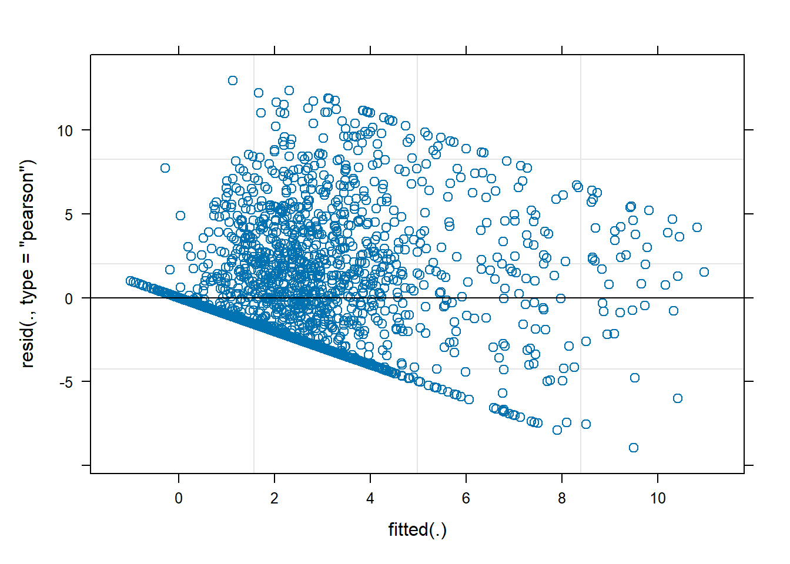
car::Anova(standm2, type=3)Warning in printHypothesis(L, rhs, names(b)): one or more coefficients in the hypothesis include
arithmetic operators in their names;
the printed representation of the hypothesis will be omitted
Warning in printHypothesis(L, rhs, names(b)): one or more coefficients in the hypothesis include
arithmetic operators in their names;
the printed representation of the hypothesis will be omittedAnalysis of Deviance Table (Type III Wald chisquare tests)
Response: as.numeric(standm)
Chisq Df Pr(>Chisq)
(Intercept) 12.3606 1 0.0004385 ***
as.factor(tffeed) 129.3939 16 < 2.2e-16 ***
D0Fed2TxGrp 3.7509 4 0.4407673
CrossbredYN 5.0087 2 0.0817271 .
as.factor(tffeed):D0Fed2TxGrp 116.2988 64 7.03e-05 ***
---
Signif. codes: 0 '***' 0.001 '**' 0.01 '*' 0.05 '.' 0.1 ' ' 1emmeans (standm2, ~ D0Fed2TxGrp)NOTE: Results may be misleading due to involvement in interactions D0Fed2TxGrp emmean SE df lower.CL upper.CL
MRB 3.28 0.400 144 2.49 4.07
CSB 2.79 0.414 144 1.97 3.61
CST 2.74 0.420 144 1.91 3.57
MCB 3.61 0.393 144 2.84 4.39
MCT 2.73 0.421 144 1.90 3.57
Results are averaged over the levels of: tffeed, CrossbredYN
Degrees-of-freedom method: kenward-roger
Results are given on the as.numeric (not the response) scale.
Confidence level used: 0.95 emmeans (standm2, ~ tffeed)NOTE: Results may be misleading due to involvement in interactions tffeed emmean SE df lower.CL upper.CL
-8 2.44 0.435 368 1.59 3.30
-7 2.88 0.435 368 2.02 3.73
-6 3.26 0.435 368 2.40 4.11
-5 3.20 0.435 368 2.35 4.06
-4 2.40 0.435 368 1.55 3.26
-3 2.65 0.435 368 1.80 3.51
-2 2.51 0.435 368 1.66 3.37
-1 3.76 0.435 368 2.91 4.62
0 7.65 0.435 368 6.80 8.51
1 4.84 0.435 368 3.99 5.70
2 2.28 0.435 368 1.43 3.14
3 2.13 0.435 368 1.28 2.99
4 2.48 0.435 368 1.62 3.33
5 2.32 0.435 368 1.46 3.17
6 2.49 0.435 368 1.63 3.34
7 2.03 0.435 368 1.17 2.88
8 2.18 0.435 368 1.33 3.04
Results are averaged over the levels of: D0Fed2TxGrp, CrossbredYN
Degrees-of-freedom method: kenward-roger
Results are given on the as.numeric (not the response) scale.
Confidence level used: 0.95 modeladj <- emmeans(standm2, ~tffeed|D0Fed2TxGrp)
summary(modeladj)D0Fed2TxGrp = MRB:
tffeed emmean SE df lower.CL upper.CL
-8 3.373 0.731 1206 1.9378 4.81
-7 2.600 0.731 1206 1.1648 4.03
-6 2.858 0.731 1206 1.4235 4.29
-5 4.047 0.731 1206 2.6125 5.48
-4 2.351 0.731 1206 0.9166 3.79
-3 1.739 0.731 1206 0.3039 3.17
-2 2.600 0.731 1206 1.1648 4.03
-1 4.198 0.731 1206 2.7631 5.63
0 9.023 0.731 1206 7.5878 10.46
1 5.556 0.731 1206 4.1206 6.99
2 2.119 0.731 1206 0.6844 3.55
3 2.914 0.731 1206 1.4792 4.35
4 3.716 0.731 1206 2.2809 5.15
5 1.885 0.731 1206 0.4499 3.32
6 2.558 0.731 1206 1.1235 3.99
7 2.659 0.731 1206 1.2240 4.09
8 1.512 0.731 1206 0.0769 2.95
D0Fed2TxGrp = CSB:
tffeed emmean SE df lower.CL upper.CL
-8 1.746 0.723 1064 0.3283 3.16
-7 2.652 0.723 1064 1.2342 4.07
-6 3.074 0.723 1064 1.6562 4.49
-5 1.815 0.723 1064 0.3971 3.23
-4 2.248 0.723 1064 0.8304 3.67
-3 3.314 0.723 1064 1.8965 4.73
-2 2.637 0.723 1064 1.2191 4.06
-1 3.890 0.723 1064 2.4718 5.31
0 7.716 0.723 1064 6.2981 9.13
1 4.753 0.723 1064 3.3347 6.17
2 2.457 0.723 1064 1.0390 3.87
3 2.077 0.723 1064 0.6589 3.49
4 1.649 0.723 1064 0.2309 3.07
5 2.132 0.723 1064 0.7137 3.55
6 1.397 0.723 1064 -0.0207 2.82
7 0.957 0.723 1064 -0.4610 2.37
8 2.938 0.723 1064 1.5202 4.36
D0Fed2TxGrp = CST:
tffeed emmean SE df lower.CL upper.CL
-8 2.730 0.734 1068 1.2891 4.17
-7 2.874 0.734 1068 1.4336 4.31
-6 2.460 0.734 1068 1.0191 3.90
-5 3.628 0.734 1068 2.1880 5.07
-4 1.850 0.734 1068 0.4091 3.29
-3 2.575 0.734 1068 1.1341 4.01
-2 2.480 0.734 1068 1.0397 3.92
-1 2.677 0.734 1068 1.2363 4.12
0 6.575 0.734 1068 5.1341 8.01
1 2.767 0.734 1068 1.3263 4.21
2 1.638 0.734 1068 0.1975 3.08
3 1.630 0.734 1068 0.1897 3.07
4 3.395 0.734 1068 1.9547 4.84
5 2.955 0.734 1068 1.5141 4.39
6 2.030 0.734 1068 0.5891 3.47
7 1.796 0.734 1068 0.3558 3.24
8 2.462 0.734 1068 1.0213 3.90
D0Fed2TxGrp = MCB:
tffeed emmean SE df lower.CL upper.CL
-8 2.029 0.719 1208 0.6181 3.44
-7 2.864 0.719 1208 1.4537 4.27
-6 4.169 0.719 1208 2.7587 5.58
-5 2.826 0.719 1208 1.4153 4.24
-4 2.637 0.719 1208 1.2264 4.05
-3 3.332 0.719 1208 1.9220 4.74
-2 2.391 0.719 1208 0.9809 3.80
-1 3.994 0.719 1208 2.5837 5.40
0 9.606 0.719 1208 8.1959 11.02
1 7.525 0.719 1208 6.1142 8.94
2 3.534 0.719 1208 2.1231 4.94
3 2.073 0.719 1208 0.6626 3.48
4 2.214 0.719 1208 0.8037 3.62
5 2.200 0.719 1208 0.7892 3.61
6 4.417 0.719 1208 3.0070 5.83
7 2.712 0.719 1208 1.3014 4.12
8 2.896 0.719 1208 1.4859 4.31
D0Fed2TxGrp = MCT:
tffeed emmean SE df lower.CL upper.CL
-8 2.343 0.727 1029 0.9161 3.77
-7 3.386 0.727 1029 1.9591 4.81
-6 3.725 0.727 1029 2.2984 5.15
-5 3.705 0.727 1029 2.2785 5.13
-4 2.932 0.727 1029 1.5054 4.36
-3 2.292 0.727 1029 0.8651 3.72
-2 2.443 0.727 1029 1.0161 3.87
-1 4.058 0.727 1029 2.6317 5.48
0 5.345 0.727 1029 3.9183 6.77
1 3.616 0.727 1029 2.1898 5.04
2 1.668 0.727 1029 0.2414 3.09
3 1.979 0.727 1029 0.5527 3.41
4 1.406 0.727 1029 -0.0210 2.83
5 2.409 0.727 1029 0.9823 3.84
6 2.032 0.727 1029 0.6059 3.46
7 2.012 0.727 1029 0.5855 3.44
8 1.107 0.727 1029 -0.3194 2.53
Results are averaged over the levels of: CrossbredYN
Degrees-of-freedom method: kenward-roger
Results are given on the as.numeric (not the response) scale.
Confidence level used: 0.95 emm_df <- as.data.frame(modeladj)
ggplot(emm_df, aes(x = tffeed, y = emmean, color = D0Fed2TxGrp)) +
geom_line() +
geom_point() +
geom_errorbar(aes(ymin = emmean - SE, ymax = emmean + SE), width = 0.2)+
labs(x = "Time", y = "Adjusted Mean Standing Time (min)", title = "Adjusted Mean Standing Time in 15min increments") +
theme_classic()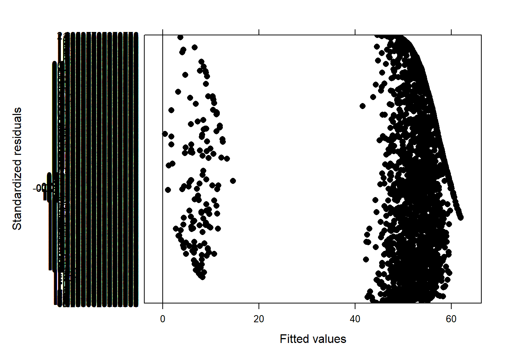
#2hrs around
hr2 <- merged_data |>
filter(tffeed >= -4 & tffeed <= 4) |>
mutate(
standm = `Standing [t]` / 60)
hr2$D0Fed2TxGrp <- relevel(factor(hr2$D0Fed2TxGrp), ref = "MRB")
standm2 <- lmer(as.numeric(standm) ~ as.factor(tffeed) * D0Fed2TxGrp + CrossbredYN + (1 | CalfID), data = hr2)
summary(standm2)Linear mixed model fit by REML. t-tests use Satterthwaite's method [
lmerModLmerTest]
Formula: as.numeric(standm) ~ as.factor(tffeed) * D0Fed2TxGrp + CrossbredYN +
(1 | CalfID)
Data: hr2
REML criterion at convergence: 7290.2
Scaled residuals:
Min 1Q Median 3Q Max
-2.3948 -0.5914 -0.2519 0.4475 3.5886
Random effects:
Groups Name Variance Std.Dev.
CalfID (Intercept) 1.417 1.190
Residual 12.404 3.522
Number of obs: 1359, groups: CalfID, 151
Fixed effects:
Estimate Std. Error df t value
(Intercept) 1.63141 0.76674 816.50202 2.128
as.factor(tffeed)-3 -0.61264 0.92491 1168.00000 -0.662
as.factor(tffeed)-2 0.24828 0.92491 1168.00000 0.268
as.factor(tffeed)-1 1.84655 0.92491 1168.00000 1.996
as.factor(tffeed)0 6.67126 0.92491 1168.00000 7.213
as.factor(tffeed)1 3.20402 0.92491 1168.00000 3.464
as.factor(tffeed)2 -0.23218 0.92491 1168.00000 -0.251
as.factor(tffeed)3 0.56264 0.92491 1168.00000 0.608
as.factor(tffeed)4 1.36437 0.92491 1168.00000 1.475
D0Fed2TxGrpCSB -0.10531 0.96292 1197.64947 -0.109
D0Fed2TxGrpCST -0.48862 0.96926 1202.51968 -0.504
D0Fed2TxGrpMCB 0.26980 0.96879 1204.13482 0.278
D0Fed2TxGrpMCT 0.60555 0.96133 1203.26334 0.630
CrossbredYNy 2.70628 1.24279 144.00000 2.178
CrossbredYNY 0.19598 0.37147 144.00000 0.528
as.factor(tffeed)-3:D0Fed2TxGrpCSB 1.67877 1.28675 1168.00000 1.305
as.factor(tffeed)-2:D0Fed2TxGrpCSB 0.14043 1.28675 1168.00000 0.109
as.factor(tffeed)-1:D0Fed2TxGrpCSB -0.20515 1.28675 1168.00000 -0.159
as.factor(tffeed)0:D0Fed2TxGrpCSB -1.20352 1.28675 1168.00000 -0.935
as.factor(tffeed)1:D0Fed2TxGrpCSB -0.69972 1.28675 1168.00000 -0.544
as.factor(tffeed)2:D0Fed2TxGrpCSB 0.44079 1.28675 1168.00000 0.343
as.factor(tffeed)3:D0Fed2TxGrpCSB -0.73415 1.28675 1168.00000 -0.571
as.factor(tffeed)4:D0Fed2TxGrpCSB -1.96383 1.28675 1168.00000 -1.526
as.factor(tffeed)-3:D0Fed2TxGrpCST 1.33764 1.29708 1168.00000 1.031
as.factor(tffeed)-2:D0Fed2TxGrpCST 0.38228 1.29708 1168.00000 0.295
as.factor(tffeed)-1:D0Fed2TxGrpCST -1.01933 1.29708 1168.00000 -0.786
as.factor(tffeed)0:D0Fed2TxGrpCST -1.94626 1.29708 1168.00000 -1.500
as.factor(tffeed)1:D0Fed2TxGrpCST -2.28680 1.29708 1168.00000 -1.763
as.factor(tffeed)2:D0Fed2TxGrpCST 0.02052 1.29708 1168.00000 0.016
as.factor(tffeed)3:D0Fed2TxGrpCST -0.78209 1.29708 1168.00000 -0.603
as.factor(tffeed)4:D0Fed2TxGrpCST 0.18119 1.29708 1168.00000 0.140
as.factor(tffeed)-3:D0Fed2TxGrpMCB 1.30820 1.29708 1168.00000 1.009
as.factor(tffeed)-2:D0Fed2TxGrpMCB -0.49383 1.29708 1168.00000 -0.381
as.factor(tffeed)-1:D0Fed2TxGrpMCB -0.48933 1.29708 1168.00000 -0.377
as.factor(tffeed)0:D0Fed2TxGrpMCB 0.29818 1.29708 1168.00000 0.230
as.factor(tffeed)1:D0Fed2TxGrpMCB 1.68375 1.29708 1168.00000 1.298
as.factor(tffeed)2:D0Fed2TxGrpMCB 1.12885 1.29708 1168.00000 0.870
as.factor(tffeed)3:D0Fed2TxGrpMCB -1.12653 1.29708 1168.00000 -0.869
as.factor(tffeed)4:D0Fed2TxGrpMCB -1.78715 1.29708 1168.00000 -1.378
as.factor(tffeed)-3:D0Fed2TxGrpMCT -0.02768 1.28675 1168.00000 -0.022
as.factor(tffeed)-2:D0Fed2TxGrpMCT -0.73752 1.28675 1168.00000 -0.573
as.factor(tffeed)-1:D0Fed2TxGrpMCT -0.72021 1.28675 1168.00000 -0.560
as.factor(tffeed)0:D0Fed2TxGrpMCT -4.25836 1.28675 1168.00000 -3.309
as.factor(tffeed)1:D0Fed2TxGrpMCT -2.51961 1.28675 1168.00000 -1.958
as.factor(tffeed)2:D0Fed2TxGrpMCT -1.03179 1.28675 1168.00000 -0.802
as.factor(tffeed)3:D0Fed2TxGrpMCT -1.51533 1.28675 1168.00000 -1.178
as.factor(tffeed)4:D0Fed2TxGrpMCT -2.89071 1.28675 1168.00000 -2.247
Pr(>|t|)
(Intercept) 0.033659 *
as.factor(tffeed)-3 0.507858
as.factor(tffeed)-2 0.788414
as.factor(tffeed)-1 0.046116 *
as.factor(tffeed)0 9.83e-13 ***
as.factor(tffeed)1 0.000551 ***
as.factor(tffeed)2 0.801832
as.factor(tffeed)3 0.543093
as.factor(tffeed)4 0.140447
D0Fed2TxGrpCSB 0.912932
D0Fed2TxGrpCST 0.614274
D0Fed2TxGrpMCB 0.780686
D0Fed2TxGrpMCT 0.528871
CrossbredYNy 0.031065 *
CrossbredYNY 0.598597
as.factor(tffeed)-3:D0Fed2TxGrpCSB 0.192267
as.factor(tffeed)-2:D0Fed2TxGrpCSB 0.913112
as.factor(tffeed)-1:D0Fed2TxGrpCSB 0.873354
as.factor(tffeed)0:D0Fed2TxGrpCSB 0.349818
as.factor(tffeed)1:D0Fed2TxGrpCSB 0.586691
as.factor(tffeed)2:D0Fed2TxGrpCSB 0.731994
as.factor(tffeed)3:D0Fed2TxGrpCSB 0.568419
as.factor(tffeed)4:D0Fed2TxGrpCSB 0.127233
as.factor(tffeed)-3:D0Fed2TxGrpCST 0.302625
as.factor(tffeed)-2:D0Fed2TxGrpCST 0.768257
as.factor(tffeed)-1:D0Fed2TxGrpCST 0.432105
as.factor(tffeed)0:D0Fed2TxGrpCST 0.133755
as.factor(tffeed)1:D0Fed2TxGrpCST 0.078155 .
as.factor(tffeed)2:D0Fed2TxGrpCST 0.987382
as.factor(tffeed)3:D0Fed2TxGrpCST 0.546651
as.factor(tffeed)4:D0Fed2TxGrpCST 0.888930
as.factor(tffeed)-3:D0Fed2TxGrpMCB 0.313388
as.factor(tffeed)-2:D0Fed2TxGrpMCB 0.703476
as.factor(tffeed)-1:D0Fed2TxGrpMCB 0.706052
as.factor(tffeed)0:D0Fed2TxGrpMCB 0.818221
as.factor(tffeed)1:D0Fed2TxGrpMCB 0.194504
as.factor(tffeed)2:D0Fed2TxGrpMCB 0.384314
as.factor(tffeed)3:D0Fed2TxGrpMCB 0.385290
as.factor(tffeed)4:D0Fed2TxGrpMCB 0.168521
as.factor(tffeed)-3:D0Fed2TxGrpMCT 0.982842
as.factor(tffeed)-2:D0Fed2TxGrpMCT 0.566643
as.factor(tffeed)-1:D0Fed2TxGrpMCT 0.575785
as.factor(tffeed)0:D0Fed2TxGrpMCT 0.000964 ***
as.factor(tffeed)1:D0Fed2TxGrpMCT 0.050454 .
as.factor(tffeed)2:D0Fed2TxGrpMCT 0.422798
as.factor(tffeed)3:D0Fed2TxGrpMCT 0.239180
as.factor(tffeed)4:D0Fed2TxGrpMCT 0.024857 *
---
Signif. codes: 0 '***' 0.001 '**' 0.01 '*' 0.05 '.' 0.1 ' ' 1
Correlation matrix not shown by default, as p = 47 > 12.
Use print(value, correlation=TRUE) or
vcov(value) if you need itplot(standm2)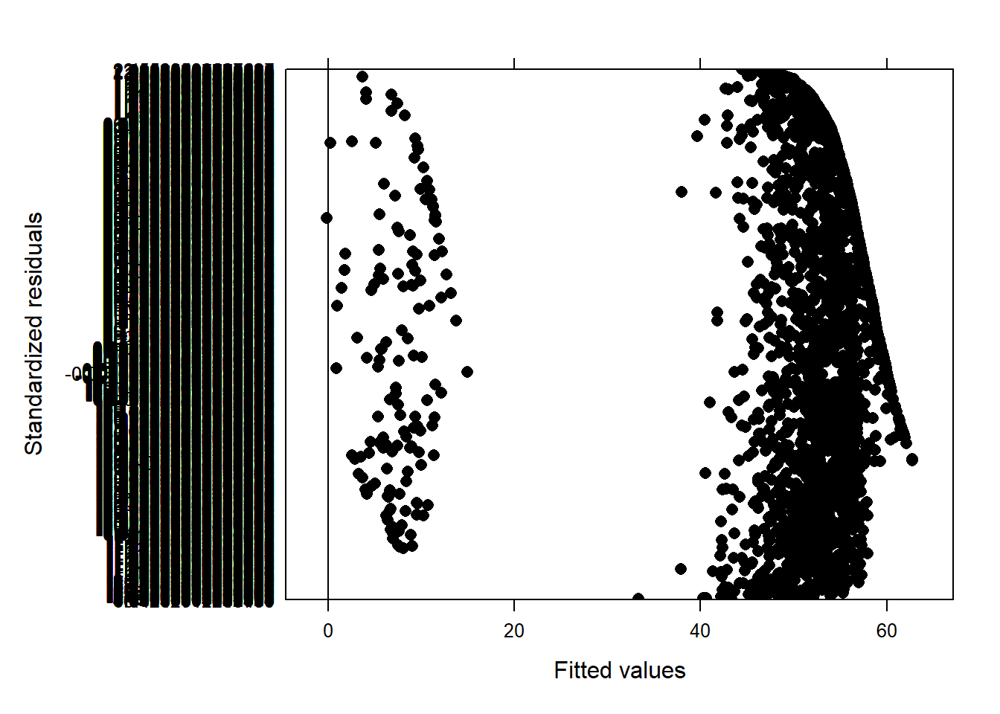
car::Anova(standm2, type=3)Warning in printHypothesis(L, rhs, names(b)): one or more coefficients in the hypothesis include
arithmetic operators in their names;
the printed representation of the hypothesis will be omitted
Warning in printHypothesis(L, rhs, names(b)): one or more coefficients in the hypothesis include
arithmetic operators in their names;
the printed representation of the hypothesis will be omittedAnalysis of Deviance Table (Type III Wald chisquare tests)
Response: as.numeric(standm)
Chisq Df Pr(>Chisq)
(Intercept) 4.5272 1 0.033360 *
as.factor(tffeed) 98.0079 8 < 2.2e-16 ***
D0Fed2TxGrp 1.4839 4 0.829494
CrossbredYN 4.7423 2 0.093371 .
as.factor(tffeed):D0Fed2TxGrp 62.0149 32 0.001137 **
---
Signif. codes: 0 '***' 0.001 '**' 0.01 '*' 0.05 '.' 0.1 ' ' 1emmeans (standm2, ~ D0Fed2TxGrp)NOTE: Results may be misleading due to involvement in interactions D0Fed2TxGrp emmean SE df lower.CL upper.CL
MRB 4.05 0.486 144 3.09 5.01
CSB 3.66 0.503 144 2.67 4.66
CST 3.10 0.510 144 2.09 4.11
MCB 4.38 0.477 144 3.43 5.32
MCT 3.13 0.512 144 2.12 4.14
Results are averaged over the levels of: tffeed, CrossbredYN
Degrees-of-freedom method: kenward-roger
Results are given on the as.numeric (not the response) scale.
Confidence level used: 0.95 emmeans (standm2, ~ tffeed)NOTE: Results may be misleading due to involvement in interactions tffeed emmean SE df lower.CL upper.CL
-4 2.66 0.496 285 1.68 3.63
-3 2.90 0.496 285 1.93 3.88
-2 2.76 0.496 285 1.79 3.74
-1 4.01 0.496 285 3.04 4.99
0 7.90 0.496 285 6.93 8.88
1 5.09 0.496 285 4.12 6.07
2 2.53 0.496 285 1.56 3.51
3 2.39 0.496 285 1.41 3.36
4 2.73 0.496 285 1.75 3.70
Results are averaged over the levels of: D0Fed2TxGrp, CrossbredYN
Degrees-of-freedom method: kenward-roger
Results are given on the as.numeric (not the response) scale.
Confidence level used: 0.95 modeladj2 <- emmeans(standm2, ~tffeed|D0Fed2TxGrp)
summary(modeladj)D0Fed2TxGrp = MRB:
tffeed emmean SE df lower.CL upper.CL
-8 3.373 0.731 1206 1.9378 4.81
-7 2.600 0.731 1206 1.1648 4.03
-6 2.858 0.731 1206 1.4235 4.29
-5 4.047 0.731 1206 2.6125 5.48
-4 2.351 0.731 1206 0.9166 3.79
-3 1.739 0.731 1206 0.3039 3.17
-2 2.600 0.731 1206 1.1648 4.03
-1 4.198 0.731 1206 2.7631 5.63
0 9.023 0.731 1206 7.5878 10.46
1 5.556 0.731 1206 4.1206 6.99
2 2.119 0.731 1206 0.6844 3.55
3 2.914 0.731 1206 1.4792 4.35
4 3.716 0.731 1206 2.2809 5.15
5 1.885 0.731 1206 0.4499 3.32
6 2.558 0.731 1206 1.1235 3.99
7 2.659 0.731 1206 1.2240 4.09
8 1.512 0.731 1206 0.0769 2.95
D0Fed2TxGrp = CSB:
tffeed emmean SE df lower.CL upper.CL
-8 1.746 0.723 1064 0.3283 3.16
-7 2.652 0.723 1064 1.2342 4.07
-6 3.074 0.723 1064 1.6562 4.49
-5 1.815 0.723 1064 0.3971 3.23
-4 2.248 0.723 1064 0.8304 3.67
-3 3.314 0.723 1064 1.8965 4.73
-2 2.637 0.723 1064 1.2191 4.06
-1 3.890 0.723 1064 2.4718 5.31
0 7.716 0.723 1064 6.2981 9.13
1 4.753 0.723 1064 3.3347 6.17
2 2.457 0.723 1064 1.0390 3.87
3 2.077 0.723 1064 0.6589 3.49
4 1.649 0.723 1064 0.2309 3.07
5 2.132 0.723 1064 0.7137 3.55
6 1.397 0.723 1064 -0.0207 2.82
7 0.957 0.723 1064 -0.4610 2.37
8 2.938 0.723 1064 1.5202 4.36
D0Fed2TxGrp = CST:
tffeed emmean SE df lower.CL upper.CL
-8 2.730 0.734 1068 1.2891 4.17
-7 2.874 0.734 1068 1.4336 4.31
-6 2.460 0.734 1068 1.0191 3.90
-5 3.628 0.734 1068 2.1880 5.07
-4 1.850 0.734 1068 0.4091 3.29
-3 2.575 0.734 1068 1.1341 4.01
-2 2.480 0.734 1068 1.0397 3.92
-1 2.677 0.734 1068 1.2363 4.12
0 6.575 0.734 1068 5.1341 8.01
1 2.767 0.734 1068 1.3263 4.21
2 1.638 0.734 1068 0.1975 3.08
3 1.630 0.734 1068 0.1897 3.07
4 3.395 0.734 1068 1.9547 4.84
5 2.955 0.734 1068 1.5141 4.39
6 2.030 0.734 1068 0.5891 3.47
7 1.796 0.734 1068 0.3558 3.24
8 2.462 0.734 1068 1.0213 3.90
D0Fed2TxGrp = MCB:
tffeed emmean SE df lower.CL upper.CL
-8 2.029 0.719 1208 0.6181 3.44
-7 2.864 0.719 1208 1.4537 4.27
-6 4.169 0.719 1208 2.7587 5.58
-5 2.826 0.719 1208 1.4153 4.24
-4 2.637 0.719 1208 1.2264 4.05
-3 3.332 0.719 1208 1.9220 4.74
-2 2.391 0.719 1208 0.9809 3.80
-1 3.994 0.719 1208 2.5837 5.40
0 9.606 0.719 1208 8.1959 11.02
1 7.525 0.719 1208 6.1142 8.94
2 3.534 0.719 1208 2.1231 4.94
3 2.073 0.719 1208 0.6626 3.48
4 2.214 0.719 1208 0.8037 3.62
5 2.200 0.719 1208 0.7892 3.61
6 4.417 0.719 1208 3.0070 5.83
7 2.712 0.719 1208 1.3014 4.12
8 2.896 0.719 1208 1.4859 4.31
D0Fed2TxGrp = MCT:
tffeed emmean SE df lower.CL upper.CL
-8 2.343 0.727 1029 0.9161 3.77
-7 3.386 0.727 1029 1.9591 4.81
-6 3.725 0.727 1029 2.2984 5.15
-5 3.705 0.727 1029 2.2785 5.13
-4 2.932 0.727 1029 1.5054 4.36
-3 2.292 0.727 1029 0.8651 3.72
-2 2.443 0.727 1029 1.0161 3.87
-1 4.058 0.727 1029 2.6317 5.48
0 5.345 0.727 1029 3.9183 6.77
1 3.616 0.727 1029 2.1898 5.04
2 1.668 0.727 1029 0.2414 3.09
3 1.979 0.727 1029 0.5527 3.41
4 1.406 0.727 1029 -0.0210 2.83
5 2.409 0.727 1029 0.9823 3.84
6 2.032 0.727 1029 0.6059 3.46
7 2.012 0.727 1029 0.5855 3.44
8 1.107 0.727 1029 -0.3194 2.53
Results are averaged over the levels of: CrossbredYN
Degrees-of-freedom method: kenward-roger
Results are given on the as.numeric (not the response) scale.
Confidence level used: 0.95 subset_tffeed_0 <- subset(modeladj2, tffeed == 0)
subset_tffeed_1 <- subset(modeladj2, tffeed == 1)
subset_tffeed_2 <- subset(modeladj2, tffeed == 2)
pairwise_comparisons_tffeed_0 <- pairs(subset_tffeed_0)
pairwise_comparisons_tffeed_1 <- pairs(subset_tffeed_1)
pairwise_comparisons_tffeed_2 <- pairs(subset_tffeed_2)
summary(pairwise_comparisons_tffeed_0) contrast estimate SE df t.ratio p.value
tffeed0 MRB - tffeed0 CSB 1.309 0.963 1198 1.359 0.6540
tffeed0 MRB - tffeed0 CST 2.435 0.969 1203 2.512 0.0886
tffeed0 MRB - tffeed0 MCB -0.568 0.969 1204 -0.586 0.9771
tffeed0 MRB - tffeed0 MCT 3.653 0.961 1203 3.800 0.0014
tffeed0 CSB - tffeed0 CST 1.126 0.953 1204 1.182 0.7618
tffeed0 CSB - tffeed0 MCB -1.877 0.953 1203 -1.969 0.2819
tffeed0 CSB - tffeed0 MCT 2.344 0.946 1200 2.477 0.0965
tffeed0 CST - tffeed0 MCB -3.003 0.961 1203 -3.125 0.0156
tffeed0 CST - tffeed0 MCT 1.218 0.952 1205 1.279 0.7044
tffeed0 MCB - tffeed0 MCT 4.221 0.954 1200 4.425 0.0001
Results are averaged over the levels of: CrossbredYN
Note: contrasts are still on the as.numeric scale. Consider using
regrid() if you want contrasts of back-transformed estimates.
Degrees-of-freedom method: kenward-roger
P value adjustment: tukey method for comparing a family of 5 estimates summary(pairwise_comparisons_tffeed_1) contrast estimate SE df t.ratio p.value
tffeed1 MRB - tffeed1 CSB 0.805 0.963 1198 0.836 0.9194
tffeed1 MRB - tffeed1 CST 2.775 0.969 1203 2.863 0.0346
tffeed1 MRB - tffeed1 MCB -1.954 0.969 1204 -2.016 0.2586
tffeed1 MRB - tffeed1 MCT 1.914 0.961 1203 1.991 0.2709
tffeed1 CSB - tffeed1 CST 1.970 0.953 1204 2.068 0.2347
tffeed1 CSB - tffeed1 MCB -2.759 0.953 1203 -2.894 0.0316
tffeed1 CSB - tffeed1 MCT 1.109 0.946 1200 1.172 0.7674
tffeed1 CST - tffeed1 MCB -4.729 0.961 1203 -4.922 <.0001
tffeed1 CST - tffeed1 MCT -0.861 0.952 1205 -0.904 0.8953
tffeed1 MCB - tffeed1 MCT 3.868 0.954 1200 4.055 0.0005
Results are averaged over the levels of: CrossbredYN
Note: contrasts are still on the as.numeric scale. Consider using
regrid() if you want contrasts of back-transformed estimates.
Degrees-of-freedom method: kenward-roger
P value adjustment: tukey method for comparing a family of 5 estimates summary(pairwise_comparisons_tffeed_2) contrast estimate SE df t.ratio p.value
tffeed2 MRB - tffeed2 CSB -0.3355 0.963 1198 -0.348 0.9968
tffeed2 MRB - tffeed2 CST 0.4681 0.969 1203 0.483 0.9889
tffeed2 MRB - tffeed2 MCB -1.3986 0.969 1204 -1.444 0.5994
tffeed2 MRB - tffeed2 MCT 0.4262 0.961 1203 0.443 0.9920
tffeed2 CSB - tffeed2 CST 0.8036 0.953 1204 0.843 0.9170
tffeed2 CSB - tffeed2 MCB -1.0632 0.953 1203 -1.115 0.7985
tffeed2 CSB - tffeed2 MCT 0.7617 0.946 1200 0.805 0.9291
tffeed2 CST - tffeed2 MCB -1.8667 0.961 1203 -1.943 0.2952
tffeed2 CST - tffeed2 MCT -0.0419 0.952 1205 -0.044 1.0000
tffeed2 MCB - tffeed2 MCT 1.8249 0.954 1200 1.913 0.3107
Results are averaged over the levels of: CrossbredYN
Note: contrasts are still on the as.numeric scale. Consider using
regrid() if you want contrasts of back-transformed estimates.
Degrees-of-freedom method: kenward-roger
P value adjustment: tukey method for comparing a family of 5 estimates #the above gives the tukey adjusted pairwise for T0, T1 and T2
emm_df <- as.data.frame(modeladj2)
ggplot(emm_df, aes(x = tffeed, y = emmean, color = D0Fed2TxGrp)) +
geom_line() +
geom_point() +
geom_errorbar(aes(ymin = emmean - SE, ymax = emmean + SE), width = 0.2)+
labs(x = "Time", y = "Adjusted Mean Standing Time (min)", title = "Adjusted Mean Standing Time in 15min increments") +
theme_classic()+
scale_x_continuous(limits = c(-4, 4), breaks = seq(-4, 4, by = 1))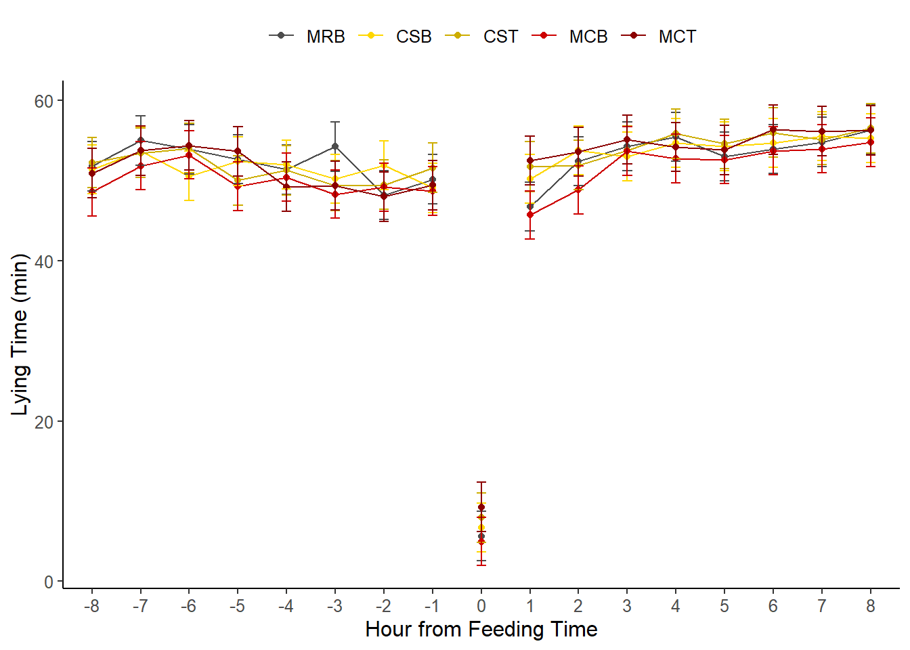
Laying
hr4 <- merged_data |>
filter(tffeed >= -8 & tffeed <= 8) |>
mutate(
laym = `Lying [t]` / 60)
hr4$D0Fed2TxGrp <- relevel(factor(hr4$D0Fed2TxGrp), ref = "MRB")
lay1 <- lmer(as.numeric(laym) ~ as.factor(tffeed) * D0Fed2TxGrp + CrossbredYN + (1 | CalfID), data = hr4)
summary(lay1)Linear mixed model fit by REML. t-tests use Satterthwaite's method [
lmerModLmerTest]
Formula: as.numeric(laym) ~ as.factor(tffeed) * D0Fed2TxGrp + CrossbredYN +
(1 | CalfID)
Data: hr4
REML criterion at convergence: 13554.5
Scaled residuals:
Min 1Q Median 3Q Max
-3.8109 -0.3822 0.2646 0.6095 2.6345
Random effects:
Groups Name Variance Std.Dev.
CalfID (Intercept) 1.21 1.1
Residual 11.56 3.4
Number of obs: 2567, groups: CalfID, 151
Fixed effects:
Estimate Std. Error df t value
(Intercept) 12.47530 0.71811 1348.20252 17.372
as.factor(tffeed)-7 0.77299 0.89296 2336.00002 0.866
as.factor(tffeed)-6 0.51437 0.89296 2336.00002 0.576
as.factor(tffeed)-5 -0.67471 0.89296 2336.00002 -0.756
as.factor(tffeed)-4 1.02126 0.89296 2336.00002 1.144
as.factor(tffeed)-3 1.63391 0.89296 2336.00003 1.830
as.factor(tffeed)-2 0.77299 0.89296 2336.00002 0.866
as.factor(tffeed)-1 -0.82529 0.89296 2336.00003 -0.924
as.factor(tffeed)0 -5.65000 0.89296 2336.00003 -6.327
as.factor(tffeed)1 -2.18276 0.89296 2336.00002 -2.444
as.factor(tffeed)2 1.25345 0.89296 2336.00002 1.404
as.factor(tffeed)3 0.45862 0.89296 2336.00002 0.514
as.factor(tffeed)4 -0.34310 0.89296 2336.00003 -0.384
as.factor(tffeed)5 1.48793 0.89296 2336.00003 1.666
as.factor(tffeed)6 0.81437 0.89296 2336.00003 0.912
as.factor(tffeed)7 0.71379 0.89296 2336.00003 0.799
as.factor(tffeed)8 1.86092 0.89296 2336.00003 2.084
D0Fed2TxGrpCSB 1.62655 0.92501 2140.46883 1.758
D0Fed2TxGrpCST 0.64320 0.93146 2151.60929 0.691
D0Fed2TxGrpMCB 1.34423 0.93113 2155.31704 1.444
D0Fed2TxGrpMCT 1.03013 0.92390 2153.31562 1.115
CrossbredYNy -2.17864 1.02200 143.99999 -2.132
CrossbredYNY -0.36553 0.30548 143.99999 -1.197
as.factor(tffeed)-7:D0Fed2TxGrpCSB -1.67890 1.24231 2336.00001 -1.351
as.factor(tffeed)-6:D0Fed2TxGrpCSB -1.84232 1.24231 2336.00001 -1.483
as.factor(tffeed)-5:D0Fed2TxGrpCSB 0.60590 1.24231 2336.00001 0.488
as.factor(tffeed)-4:D0Fed2TxGrpCSB -1.52341 1.24231 2336.00001 -1.226
as.factor(tffeed)-3:D0Fed2TxGrpCSB -3.20219 1.24231 2336.00001 -2.578
as.factor(tffeed)-2:D0Fed2TxGrpCSB -1.66385 1.24231 2336.00001 -1.339
as.factor(tffeed)-1:D0Fed2TxGrpCSB -1.31826 1.24231 2336.00002 -1.061
as.factor(tffeed)0:D0Fed2TxGrpCSB -0.31989 1.24231 2336.00001 -0.257
as.factor(tffeed)1:D0Fed2TxGrpCSB -0.82369 1.24231 2336.00001 -0.663
as.factor(tffeed)2:D0Fed2TxGrpCSB -1.96420 1.24231 2336.00001 -1.581
as.factor(tffeed)3:D0Fed2TxGrpCSB -0.78927 1.24231 2336.00001 -0.635
as.factor(tffeed)4:D0Fed2TxGrpCSB 0.44042 1.24231 2336.00001 0.355
as.factor(tffeed)5:D0Fed2TxGrpCSB -1.87341 1.24231 2336.00002 -1.508
as.factor(tffeed)6:D0Fed2TxGrpCSB -0.46544 1.24231 2336.00002 -0.375
as.factor(tffeed)7:D0Fed2TxGrpCSB 0.07545 1.24231 2336.00001 0.061
as.factor(tffeed)8:D0Fed2TxGrpCSB -3.05286 1.24231 2336.00002 -2.457
as.factor(tffeed)-7:D0Fed2TxGrpCST -0.91743 1.25227 2336.00001 -0.733
as.factor(tffeed)-6:D0Fed2TxGrpCST -0.24437 1.25227 2336.00001 -0.195
as.factor(tffeed)-5:D0Fed2TxGrpCST -0.22418 1.25227 2336.00001 -0.179
as.factor(tffeed)-4:D0Fed2TxGrpCST -0.14126 1.25227 2336.00001 -0.113
as.factor(tffeed)-3:D0Fed2TxGrpCST -1.47891 1.25227 2336.00001 -1.181
as.factor(tffeed)-2:D0Fed2TxGrpCST -0.52354 1.25227 2336.00001 -0.418
as.factor(tffeed)-1:D0Fed2TxGrpCST 0.87807 1.25227 2336.00001 0.701
as.factor(tffeed)0:D0Fed2TxGrpCST 1.80500 1.25227 2336.00001 1.441
as.factor(tffeed)1:D0Fed2TxGrpCST 2.14554 1.25227 2336.00001 1.713
as.factor(tffeed)2:D0Fed2TxGrpCST -0.16178 1.25227 2336.00001 -0.129
as.factor(tffeed)3:D0Fed2TxGrpCST 0.64082 1.25227 2336.00001 0.512
as.factor(tffeed)4:D0Fed2TxGrpCST -0.32245 1.25227 2336.00001 -0.257
as.factor(tffeed)5:D0Fed2TxGrpCST -1.71293 1.25227 2336.00001 -1.368
as.factor(tffeed)6:D0Fed2TxGrpCST -0.11437 1.25227 2336.00001 -0.091
as.factor(tffeed)7:D0Fed2TxGrpCST 0.21954 1.25227 2336.00001 0.175
as.factor(tffeed)8:D0Fed2TxGrpCST -1.59314 1.25227 2336.00001 -1.272
as.factor(tffeed)-7:D0Fed2TxGrpMCB -1.60854 1.25227 2336.00001 -1.284
as.factor(tffeed)-6:D0Fed2TxGrpMCB -2.65492 1.25227 2336.00001 -2.120
as.factor(tffeed)-5:D0Fed2TxGrpMCB -0.12251 1.25227 2336.00001 -0.098
as.factor(tffeed)-4:D0Fed2TxGrpMCB -1.62960 1.25227 2336.00001 -1.301
as.factor(tffeed)-3:D0Fed2TxGrpMCB -2.93780 1.25227 2336.00001 -2.346
as.factor(tffeed)-2:D0Fed2TxGrpMCB -1.13577 1.25227 2336.00001 -0.907
as.factor(tffeed)-1:D0Fed2TxGrpMCB -1.14027 1.25227 2336.00001 -0.911
as.factor(tffeed)0:D0Fed2TxGrpMCB -1.92778 1.25227 2336.00001 -1.539
as.factor(tffeed)1:D0Fed2TxGrpMCB -3.31335 1.25227 2336.00001 -2.646
as.factor(tffeed)2:D0Fed2TxGrpMCB -2.75845 1.25227 2336.00001 -2.203
as.factor(tffeed)3:D0Fed2TxGrpMCB -0.50307 1.25227 2336.00001 -0.402
as.factor(tffeed)4:D0Fed2TxGrpMCB 0.15755 1.25227 2336.00001 0.126
as.factor(tffeed)5:D0Fed2TxGrpMCB -1.65904 1.25227 2336.00001 -1.325
as.factor(tffeed)6:D0Fed2TxGrpMCB -3.20326 1.25227 2336.00001 -2.558
as.factor(tffeed)7:D0Fed2TxGrpMCB -1.39713 1.25227 2336.00001 -1.116
as.factor(tffeed)8:D0Fed2TxGrpMCB -2.72870 1.25227 2336.00001 -2.179
as.factor(tffeed)-7:D0Fed2TxGrpMCT -1.81600 1.24231 2336.00002 -1.462
as.factor(tffeed)-6:D0Fed2TxGrpMCT -1.89663 1.24231 2336.00002 -1.527
as.factor(tffeed)-5:D0Fed2TxGrpMCT -0.68765 1.24231 2336.00002 -0.554
as.factor(tffeed)-4:D0Fed2TxGrpMCT -1.61051 1.24231 2336.00002 -1.296
as.factor(tffeed)-3:D0Fed2TxGrpMCT -1.58283 1.24231 2336.00002 -1.274
as.factor(tffeed)-2:D0Fed2TxGrpMCT -0.87299 1.24231 2336.00002 -0.703
as.factor(tffeed)-1:D0Fed2TxGrpMCT -0.89030 1.24231 2336.00002 -0.717
as.factor(tffeed)0:D0Fed2TxGrpMCT 2.64785 1.24231 2336.00002 2.131
as.factor(tffeed)1:D0Fed2TxGrpMCT 0.90910 1.24231 2336.00002 0.732
as.factor(tffeed)2:D0Fed2TxGrpMCT -0.57872 1.24231 2336.00002 -0.466
as.factor(tffeed)3:D0Fed2TxGrpMCT -0.09518 1.24231 2336.00002 -0.077
as.factor(tffeed)4:D0Fed2TxGrpMCT 1.28020 1.24231 2336.00002 1.031
as.factor(tffeed)5:D0Fed2TxGrpMCT -1.55406 1.24231 2336.00002 -1.251
as.factor(tffeed)6:D0Fed2TxGrpMCT -0.50415 1.24231 2336.00002 -0.406
as.factor(tffeed)7:D0Fed2TxGrpMCT -0.38315 1.24231 2336.00002 -0.308
as.factor(tffeed)8:D0Fed2TxGrpMCT -0.62544 1.24231 2336.00002 -0.503
Pr(>|t|)
(Intercept) < 2e-16 ***
as.factor(tffeed)-7 0.3868
as.factor(tffeed)-6 0.5647
as.factor(tffeed)-5 0.4500
as.factor(tffeed)-4 0.2529
as.factor(tffeed)-3 0.0674 .
as.factor(tffeed)-2 0.3868
as.factor(tffeed)-1 0.3555
as.factor(tffeed)0 2.98e-10 ***
as.factor(tffeed)1 0.0146 *
as.factor(tffeed)2 0.1605
as.factor(tffeed)3 0.6076
as.factor(tffeed)4 0.7008
as.factor(tffeed)5 0.0958 .
as.factor(tffeed)6 0.3619
as.factor(tffeed)7 0.4242
as.factor(tffeed)8 0.0373 *
D0Fed2TxGrpCSB 0.0788 .
D0Fed2TxGrpCST 0.4899
D0Fed2TxGrpMCB 0.1490
D0Fed2TxGrpMCT 0.2650
CrossbredYNy 0.0347 *
CrossbredYNY 0.2334
as.factor(tffeed)-7:D0Fed2TxGrpCSB 0.1767
as.factor(tffeed)-6:D0Fed2TxGrpCSB 0.1382
as.factor(tffeed)-5:D0Fed2TxGrpCSB 0.6258
as.factor(tffeed)-4:D0Fed2TxGrpCSB 0.2202
as.factor(tffeed)-3:D0Fed2TxGrpCSB 0.0100 *
as.factor(tffeed)-2:D0Fed2TxGrpCSB 0.1806
as.factor(tffeed)-1:D0Fed2TxGrpCSB 0.2887
as.factor(tffeed)0:D0Fed2TxGrpCSB 0.7968
as.factor(tffeed)1:D0Fed2TxGrpCSB 0.5074
as.factor(tffeed)2:D0Fed2TxGrpCSB 0.1140
as.factor(tffeed)3:D0Fed2TxGrpCSB 0.5253
as.factor(tffeed)4:D0Fed2TxGrpCSB 0.7230
as.factor(tffeed)5:D0Fed2TxGrpCSB 0.1317
as.factor(tffeed)6:D0Fed2TxGrpCSB 0.7079
as.factor(tffeed)7:D0Fed2TxGrpCSB 0.9516
as.factor(tffeed)8:D0Fed2TxGrpCSB 0.0141 *
as.factor(tffeed)-7:D0Fed2TxGrpCST 0.4639
as.factor(tffeed)-6:D0Fed2TxGrpCST 0.8453
as.factor(tffeed)-5:D0Fed2TxGrpCST 0.8579
as.factor(tffeed)-4:D0Fed2TxGrpCST 0.9102
as.factor(tffeed)-3:D0Fed2TxGrpCST 0.2377
as.factor(tffeed)-2:D0Fed2TxGrpCST 0.6759
as.factor(tffeed)-1:D0Fed2TxGrpCST 0.4833
as.factor(tffeed)0:D0Fed2TxGrpCST 0.1496
as.factor(tffeed)1:D0Fed2TxGrpCST 0.0868 .
as.factor(tffeed)2:D0Fed2TxGrpCST 0.8972
as.factor(tffeed)3:D0Fed2TxGrpCST 0.6089
as.factor(tffeed)4:D0Fed2TxGrpCST 0.7968
as.factor(tffeed)5:D0Fed2TxGrpCST 0.1715
as.factor(tffeed)6:D0Fed2TxGrpCST 0.9272
as.factor(tffeed)7:D0Fed2TxGrpCST 0.8608
as.factor(tffeed)8:D0Fed2TxGrpCST 0.2034
as.factor(tffeed)-7:D0Fed2TxGrpMCB 0.1991
as.factor(tffeed)-6:D0Fed2TxGrpMCB 0.0341 *
as.factor(tffeed)-5:D0Fed2TxGrpMCB 0.9221
as.factor(tffeed)-4:D0Fed2TxGrpMCB 0.1933
as.factor(tffeed)-3:D0Fed2TxGrpMCB 0.0191 *
as.factor(tffeed)-2:D0Fed2TxGrpMCB 0.3645
as.factor(tffeed)-1:D0Fed2TxGrpMCB 0.3626
as.factor(tffeed)0:D0Fed2TxGrpMCB 0.1238
as.factor(tffeed)1:D0Fed2TxGrpMCB 0.0082 **
as.factor(tffeed)2:D0Fed2TxGrpMCB 0.0277 *
as.factor(tffeed)3:D0Fed2TxGrpMCB 0.6879
as.factor(tffeed)4:D0Fed2TxGrpMCB 0.8999
as.factor(tffeed)5:D0Fed2TxGrpMCB 0.1854
as.factor(tffeed)6:D0Fed2TxGrpMCB 0.0106 *
as.factor(tffeed)7:D0Fed2TxGrpMCB 0.2647
as.factor(tffeed)8:D0Fed2TxGrpMCB 0.0294 *
as.factor(tffeed)-7:D0Fed2TxGrpMCT 0.1439
as.factor(tffeed)-6:D0Fed2TxGrpMCT 0.1270
as.factor(tffeed)-5:D0Fed2TxGrpMCT 0.5800
as.factor(tffeed)-4:D0Fed2TxGrpMCT 0.1950
as.factor(tffeed)-3:D0Fed2TxGrpMCT 0.2028
as.factor(tffeed)-2:D0Fed2TxGrpMCT 0.4823
as.factor(tffeed)-1:D0Fed2TxGrpMCT 0.4737
as.factor(tffeed)0:D0Fed2TxGrpMCT 0.0332 *
as.factor(tffeed)1:D0Fed2TxGrpMCT 0.4644
as.factor(tffeed)2:D0Fed2TxGrpMCT 0.6414
as.factor(tffeed)3:D0Fed2TxGrpMCT 0.9389
as.factor(tffeed)4:D0Fed2TxGrpMCT 0.3029
as.factor(tffeed)5:D0Fed2TxGrpMCT 0.2111
as.factor(tffeed)6:D0Fed2TxGrpMCT 0.6849
as.factor(tffeed)7:D0Fed2TxGrpMCT 0.7578
as.factor(tffeed)8:D0Fed2TxGrpMCT 0.6147
---
Signif. codes: 0 '***' 0.001 '**' 0.01 '*' 0.05 '.' 0.1 ' ' 1
Correlation matrix not shown by default, as p = 87 > 12.
Use print(value, correlation=TRUE) or
vcov(value) if you need itplot(lay1)car::Anova(lay1, type=3)Warning in printHypothesis(L, rhs, names(b)): one or more coefficients in the hypothesis include
arithmetic operators in their names;
the printed representation of the hypothesis will be omitted
Warning in printHypothesis(L, rhs, names(b)): one or more coefficients in the hypothesis include
arithmetic operators in their names;
the printed representation of the hypothesis will be omittedAnalysis of Deviance Table (Type III Wald chisquare tests)
Response: as.numeric(laym)
Chisq Df Pr(>Chisq)
(Intercept) 301.8018 1 < 2.2e-16 ***
as.factor(tffeed) 129.3939 16 < 2.2e-16 ***
D0Fed2TxGrp 3.7509 4 0.44077
CrossbredYN 5.0087 2 0.08173 .
as.factor(tffeed):D0Fed2TxGrp 116.2988 64 7.03e-05 ***
---
Signif. codes: 0 '***' 0.001 '**' 0.01 '*' 0.05 '.' 0.1 ' ' 1emmeans (lay1, ~ D0Fed2TxGrp)NOTE: Results may be misleading due to involvement in interactions D0Fed2TxGrp emmean SE df lower.CL upper.CL
MRB 11.7 0.400 144 10.9 12.5
CSB 12.2 0.414 144 11.4 13.0
CST 12.3 0.420 144 11.4 13.1
MCB 11.4 0.393 144 10.6 12.2
MCT 12.3 0.421 144 11.4 13.1
Results are averaged over the levels of: tffeed, CrossbredYN
Degrees-of-freedom method: kenward-roger
Results are given on the as.numeric (not the response) scale.
Confidence level used: 0.95 emmeans (lay1, ~ tffeed)NOTE: Results may be misleading due to involvement in interactions tffeed emmean SE df lower.CL upper.CL
-8 12.56 0.435 368 11.70 13.4
-7 12.12 0.435 368 11.27 13.0
-6 11.74 0.435 368 10.89 12.6
-5 11.80 0.435 368 10.94 12.7
-4 12.60 0.435 368 11.74 13.5
-3 12.35 0.435 368 11.49 13.2
-2 12.49 0.435 368 11.63 13.3
-1 11.24 0.435 368 10.38 12.1
0 7.35 0.435 368 6.49 8.2
1 10.16 0.435 368 9.30 11.0
2 12.72 0.435 368 11.86 13.6
3 12.87 0.435 368 12.01 13.7
4 12.52 0.435 368 11.67 13.4
5 12.68 0.435 368 11.83 13.5
6 12.51 0.435 368 11.66 13.4
7 12.97 0.435 368 12.12 13.8
8 12.82 0.435 368 11.96 13.7
Results are averaged over the levels of: D0Fed2TxGrp, CrossbredYN
Degrees-of-freedom method: kenward-roger
Results are given on the as.numeric (not the response) scale.
Confidence level used: 0.95 modeladj <- emmeans(lay1, ~tffeed|D0Fed2TxGrp)
summary(modeladj)D0Fed2TxGrp = MRB:
tffeed emmean SE df lower.CL upper.CL
-8 11.63 0.731 1206 10.19 13.06
-7 12.40 0.731 1206 10.97 13.84
-6 12.14 0.731 1206 10.71 13.58
-5 10.95 0.731 1206 9.52 12.39
-4 12.65 0.731 1206 11.21 14.08
-3 13.26 0.731 1206 11.83 14.70
-2 12.40 0.731 1206 10.97 13.84
-1 10.80 0.731 1206 9.37 12.24
0 5.98 0.731 1206 4.54 7.41
1 9.44 0.731 1206 8.01 10.88
2 12.88 0.731 1206 11.45 14.32
3 12.09 0.731 1206 10.65 13.52
4 11.28 0.731 1206 9.85 12.72
5 13.12 0.731 1206 11.68 14.55
6 12.44 0.731 1206 11.01 13.88
7 12.34 0.731 1206 10.91 13.78
8 13.49 0.731 1206 12.05 14.92
D0Fed2TxGrp = CSB:
tffeed emmean SE df lower.CL upper.CL
-8 13.25 0.723 1064 11.84 14.67
-7 12.35 0.723 1064 10.93 13.77
-6 11.93 0.723 1064 10.51 13.34
-5 13.18 0.723 1064 11.77 14.60
-4 12.75 0.723 1064 11.33 14.17
-3 11.69 0.723 1064 10.27 13.10
-2 12.36 0.723 1064 10.94 13.78
-1 11.11 0.723 1064 9.69 12.53
0 7.28 0.723 1064 5.87 8.70
1 10.25 0.723 1064 8.83 11.67
2 12.54 0.723 1064 11.13 13.96
3 12.92 0.723 1064 11.51 14.34
4 13.35 0.723 1064 11.93 14.77
5 12.87 0.723 1064 11.45 14.29
6 13.60 0.723 1064 12.18 15.02
7 14.04 0.723 1064 12.63 15.46
8 12.06 0.723 1064 10.64 13.48
D0Fed2TxGrp = CST:
tffeed emmean SE df lower.CL upper.CL
-8 12.27 0.734 1068 10.83 13.71
-7 12.13 0.734 1068 10.69 13.57
-6 12.54 0.734 1068 11.10 13.98
-5 11.37 0.734 1068 9.93 12.81
-4 13.15 0.734 1068 11.71 14.59
-3 12.43 0.734 1068 10.99 13.87
-2 12.52 0.734 1068 11.08 13.96
-1 12.32 0.734 1068 10.88 13.76
0 8.43 0.734 1068 6.99 9.87
1 12.23 0.734 1068 10.79 13.67
2 13.36 0.734 1068 11.92 14.80
3 13.37 0.734 1068 11.93 14.81
4 11.60 0.734 1068 10.16 13.05
5 12.05 0.734 1068 10.61 13.49
6 12.97 0.734 1068 11.53 14.41
7 13.20 0.734 1068 11.76 14.64
8 12.54 0.734 1068 11.10 13.98
D0Fed2TxGrp = MCB:
tffeed emmean SE df lower.CL upper.CL
-8 12.97 0.719 1208 11.56 14.38
-7 12.14 0.719 1208 10.73 13.55
-6 10.83 0.719 1208 9.42 12.24
-5 12.17 0.719 1208 10.76 13.58
-4 12.36 0.719 1208 10.95 13.77
-3 11.67 0.719 1208 10.26 13.08
-2 12.61 0.719 1208 11.20 14.02
-1 11.01 0.719 1208 9.60 12.42
0 5.39 0.719 1208 3.98 6.80
1 7.48 0.719 1208 6.06 8.89
2 11.47 0.719 1208 10.06 12.88
3 12.93 0.719 1208 11.52 14.34
4 12.79 0.719 1208 11.38 14.20
5 12.80 0.719 1208 11.39 14.21
6 10.58 0.719 1208 9.17 11.99
7 12.29 0.719 1208 10.88 13.70
8 12.10 0.719 1208 10.69 13.51
D0Fed2TxGrp = MCT:
tffeed emmean SE df lower.CL upper.CL
-8 12.66 0.727 1029 11.23 14.08
-7 11.61 0.727 1029 10.19 13.04
-6 11.28 0.727 1029 9.85 12.70
-5 11.30 0.727 1029 9.87 12.72
-4 12.07 0.727 1029 10.64 13.49
-3 12.71 0.727 1029 11.28 14.13
-2 12.56 0.727 1029 11.13 13.98
-1 10.94 0.727 1029 9.52 12.37
0 9.66 0.727 1029 8.23 11.08
1 11.38 0.727 1029 9.96 12.81
2 13.33 0.727 1029 11.91 14.76
3 13.02 0.727 1029 11.59 14.45
4 13.59 0.727 1029 12.17 15.02
5 12.59 0.727 1029 11.16 14.02
6 12.97 0.727 1029 11.54 14.39
7 12.99 0.727 1029 11.56 14.41
8 13.89 0.727 1029 12.47 15.32
Results are averaged over the levels of: CrossbredYN
Degrees-of-freedom method: kenward-roger
Results are given on the as.numeric (not the response) scale.
Confidence level used: 0.95 emm_df <- as.data.frame(modeladj)
ggplot(emm_df, aes(x = tffeed, y = emmean, color = D0Fed2TxGrp)) +
geom_line() +
geom_point() +
geom_errorbar(aes(ymin = emmean - SE, ymax = emmean + SE), width = 0.2)+
labs(x = "Time", y = "Adjusted Mean Lying Time (min)", title = "Adjusted Mean Lying Time in 15min increments") +
theme_classic()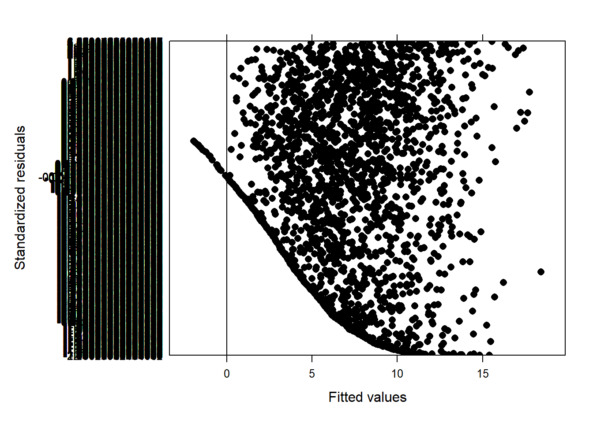
#2HRS AROUND
hr2 <- merged_data |>
filter(tffeed >= -4 & tffeed <= 4) |>
mutate(
laym = `Lying [t]` / 60)
hr2$D0Fed2TxGrp <- relevel(factor(hr2$D0Fed2TxGrp), ref = "MRB")
laym2 <- lmer(as.numeric(laym) ~ as.factor(tffeed) * D0Fed2TxGrp + CrossbredYN + (1 | CalfID), data = hr2)
summary(laym2)Linear mixed model fit by REML. t-tests use Satterthwaite's method [
lmerModLmerTest]
Formula: as.numeric(laym) ~ as.factor(tffeed) * D0Fed2TxGrp + CrossbredYN +
(1 | CalfID)
Data: hr2
REML criterion at convergence: 7290.2
Scaled residuals:
Min 1Q Median 3Q Max
-3.5886 -0.4475 0.2519 0.5914 2.3948
Random effects:
Groups Name Variance Std.Dev.
CalfID (Intercept) 1.417 1.190
Residual 12.404 3.522
Number of obs: 1359, groups: CalfID, 151
Fixed effects:
Estimate Std. Error df t value
(Intercept) 13.36859 0.76674 816.50203 17.436
as.factor(tffeed)-3 0.61264 0.92491 1167.99999 0.662
as.factor(tffeed)-2 -0.24828 0.92491 1167.99999 -0.268
as.factor(tffeed)-1 -1.84655 0.92491 1167.99999 -1.996
as.factor(tffeed)0 -6.67126 0.92491 1167.99999 -7.213
as.factor(tffeed)1 -3.20402 0.92491 1167.99999 -3.464
as.factor(tffeed)2 0.23218 0.92491 1167.99999 0.251
as.factor(tffeed)3 -0.56264 0.92491 1167.99999 -0.608
as.factor(tffeed)4 -1.36437 0.92491 1167.99999 -1.475
D0Fed2TxGrpCSB 0.10531 0.96292 1197.64947 0.109
D0Fed2TxGrpCST 0.48862 0.96926 1202.51968 0.504
D0Fed2TxGrpMCB -0.26980 0.96879 1204.13483 -0.278
D0Fed2TxGrpMCT -0.60555 0.96133 1203.26335 -0.630
CrossbredYNy -2.70628 1.24279 144.00000 -2.178
CrossbredYNY -0.19598 0.37147 144.00000 -0.528
as.factor(tffeed)-3:D0Fed2TxGrpCSB -1.67877 1.28675 1168.00000 -1.305
as.factor(tffeed)-2:D0Fed2TxGrpCSB -0.14043 1.28675 1168.00000 -0.109
as.factor(tffeed)-1:D0Fed2TxGrpCSB 0.20515 1.28675 1168.00000 0.159
as.factor(tffeed)0:D0Fed2TxGrpCSB 1.20352 1.28675 1168.00000 0.935
as.factor(tffeed)1:D0Fed2TxGrpCSB 0.69972 1.28675 1168.00000 0.544
as.factor(tffeed)2:D0Fed2TxGrpCSB -0.44079 1.28675 1168.00000 -0.343
as.factor(tffeed)3:D0Fed2TxGrpCSB 0.73415 1.28675 1168.00000 0.571
as.factor(tffeed)4:D0Fed2TxGrpCSB 1.96383 1.28675 1168.00000 1.526
as.factor(tffeed)-3:D0Fed2TxGrpCST -1.33764 1.29708 1168.00000 -1.031
as.factor(tffeed)-2:D0Fed2TxGrpCST -0.38228 1.29708 1168.00000 -0.295
as.factor(tffeed)-1:D0Fed2TxGrpCST 1.01933 1.29708 1168.00000 0.786
as.factor(tffeed)0:D0Fed2TxGrpCST 1.94626 1.29708 1168.00000 1.500
as.factor(tffeed)1:D0Fed2TxGrpCST 2.28680 1.29708 1168.00000 1.763
as.factor(tffeed)2:D0Fed2TxGrpCST -0.02052 1.29708 1168.00000 -0.016
as.factor(tffeed)3:D0Fed2TxGrpCST 0.78209 1.29708 1168.00000 0.603
as.factor(tffeed)4:D0Fed2TxGrpCST -0.18119 1.29708 1168.00000 -0.140
as.factor(tffeed)-3:D0Fed2TxGrpMCB -1.30820 1.29708 1168.00000 -1.009
as.factor(tffeed)-2:D0Fed2TxGrpMCB 0.49383 1.29708 1168.00000 0.381
as.factor(tffeed)-1:D0Fed2TxGrpMCB 0.48933 1.29708 1168.00000 0.377
as.factor(tffeed)0:D0Fed2TxGrpMCB -0.29818 1.29708 1168.00000 -0.230
as.factor(tffeed)1:D0Fed2TxGrpMCB -1.68375 1.29708 1168.00000 -1.298
as.factor(tffeed)2:D0Fed2TxGrpMCB -1.12885 1.29708 1168.00000 -0.870
as.factor(tffeed)3:D0Fed2TxGrpMCB 1.12653 1.29708 1168.00000 0.869
as.factor(tffeed)4:D0Fed2TxGrpMCB 1.78715 1.29708 1168.00000 1.378
as.factor(tffeed)-3:D0Fed2TxGrpMCT 0.02768 1.28675 1168.00000 0.022
as.factor(tffeed)-2:D0Fed2TxGrpMCT 0.73752 1.28675 1168.00000 0.573
as.factor(tffeed)-1:D0Fed2TxGrpMCT 0.72021 1.28675 1168.00000 0.560
as.factor(tffeed)0:D0Fed2TxGrpMCT 4.25836 1.28675 1168.00000 3.309
as.factor(tffeed)1:D0Fed2TxGrpMCT 2.51961 1.28675 1168.00000 1.958
as.factor(tffeed)2:D0Fed2TxGrpMCT 1.03179 1.28675 1168.00000 0.802
as.factor(tffeed)3:D0Fed2TxGrpMCT 1.51533 1.28675 1168.00000 1.178
as.factor(tffeed)4:D0Fed2TxGrpMCT 2.89071 1.28675 1168.00000 2.247
Pr(>|t|)
(Intercept) < 2e-16 ***
as.factor(tffeed)-3 0.507858
as.factor(tffeed)-2 0.788414
as.factor(tffeed)-1 0.046116 *
as.factor(tffeed)0 9.83e-13 ***
as.factor(tffeed)1 0.000551 ***
as.factor(tffeed)2 0.801832
as.factor(tffeed)3 0.543093
as.factor(tffeed)4 0.140447
D0Fed2TxGrpCSB 0.912932
D0Fed2TxGrpCST 0.614274
D0Fed2TxGrpMCB 0.780686
D0Fed2TxGrpMCT 0.528871
CrossbredYNy 0.031065 *
CrossbredYNY 0.598597
as.factor(tffeed)-3:D0Fed2TxGrpCSB 0.192267
as.factor(tffeed)-2:D0Fed2TxGrpCSB 0.913112
as.factor(tffeed)-1:D0Fed2TxGrpCSB 0.873354
as.factor(tffeed)0:D0Fed2TxGrpCSB 0.349818
as.factor(tffeed)1:D0Fed2TxGrpCSB 0.586691
as.factor(tffeed)2:D0Fed2TxGrpCSB 0.731994
as.factor(tffeed)3:D0Fed2TxGrpCSB 0.568419
as.factor(tffeed)4:D0Fed2TxGrpCSB 0.127233
as.factor(tffeed)-3:D0Fed2TxGrpCST 0.302625
as.factor(tffeed)-2:D0Fed2TxGrpCST 0.768257
as.factor(tffeed)-1:D0Fed2TxGrpCST 0.432105
as.factor(tffeed)0:D0Fed2TxGrpCST 0.133755
as.factor(tffeed)1:D0Fed2TxGrpCST 0.078155 .
as.factor(tffeed)2:D0Fed2TxGrpCST 0.987382
as.factor(tffeed)3:D0Fed2TxGrpCST 0.546651
as.factor(tffeed)4:D0Fed2TxGrpCST 0.888930
as.factor(tffeed)-3:D0Fed2TxGrpMCB 0.313388
as.factor(tffeed)-2:D0Fed2TxGrpMCB 0.703476
as.factor(tffeed)-1:D0Fed2TxGrpMCB 0.706052
as.factor(tffeed)0:D0Fed2TxGrpMCB 0.818221
as.factor(tffeed)1:D0Fed2TxGrpMCB 0.194504
as.factor(tffeed)2:D0Fed2TxGrpMCB 0.384314
as.factor(tffeed)3:D0Fed2TxGrpMCB 0.385290
as.factor(tffeed)4:D0Fed2TxGrpMCB 0.168521
as.factor(tffeed)-3:D0Fed2TxGrpMCT 0.982842
as.factor(tffeed)-2:D0Fed2TxGrpMCT 0.566643
as.factor(tffeed)-1:D0Fed2TxGrpMCT 0.575785
as.factor(tffeed)0:D0Fed2TxGrpMCT 0.000964 ***
as.factor(tffeed)1:D0Fed2TxGrpMCT 0.050454 .
as.factor(tffeed)2:D0Fed2TxGrpMCT 0.422798
as.factor(tffeed)3:D0Fed2TxGrpMCT 0.239180
as.factor(tffeed)4:D0Fed2TxGrpMCT 0.024857 *
---
Signif. codes: 0 '***' 0.001 '**' 0.01 '*' 0.05 '.' 0.1 ' ' 1
Correlation matrix not shown by default, as p = 47 > 12.
Use print(value, correlation=TRUE) or
vcov(value) if you need itplot(laym2)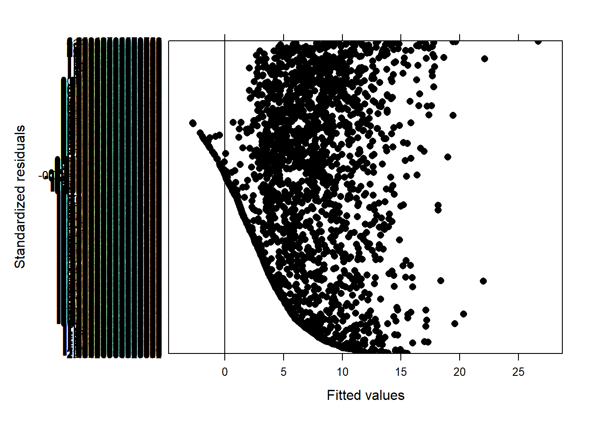
car::Anova(laym2, type=3)Warning in printHypothesis(L, rhs, names(b)): one or more coefficients in the hypothesis include
arithmetic operators in their names;
the printed representation of the hypothesis will be omitted
Warning in printHypothesis(L, rhs, names(b)): one or more coefficients in the hypothesis include
arithmetic operators in their names;
the printed representation of the hypothesis will be omittedAnalysis of Deviance Table (Type III Wald chisquare tests)
Response: as.numeric(laym)
Chisq Df Pr(>Chisq)
(Intercept) 304.0048 1 < 2.2e-16 ***
as.factor(tffeed) 98.0079 8 < 2.2e-16 ***
D0Fed2TxGrp 1.4839 4 0.829494
CrossbredYN 4.7423 2 0.093371 .
as.factor(tffeed):D0Fed2TxGrp 62.0149 32 0.001137 **
---
Signif. codes: 0 '***' 0.001 '**' 0.01 '*' 0.05 '.' 0.1 ' ' 1emmeans (laym2, ~ D0Fed2TxGrp)NOTE: Results may be misleading due to involvement in interactions D0Fed2TxGrp emmean SE df lower.CL upper.CL
MRB 11.0 0.486 144 9.99 11.9
CSB 11.3 0.503 144 10.34 12.3
CST 11.9 0.510 144 10.89 12.9
MCB 10.6 0.477 144 9.68 11.6
MCT 11.9 0.512 144 10.86 12.9
Results are averaged over the levels of: tffeed, CrossbredYN
Degrees-of-freedom method: kenward-roger
Results are given on the as.numeric (not the response) scale.
Confidence level used: 0.95 emmeans (laym2, ~ tffeed)NOTE: Results may be misleading due to involvement in interactions tffeed emmean SE df lower.CL upper.CL
-4 12.34 0.496 285 11.37 13.32
-3 12.10 0.496 285 11.12 13.07
-2 12.24 0.496 285 11.26 13.21
-1 10.99 0.496 285 10.01 11.96
0 7.10 0.496 285 6.12 8.07
1 9.91 0.496 285 8.93 10.88
2 12.47 0.496 285 11.49 13.44
3 12.61 0.496 285 11.64 13.59
4 12.27 0.496 285 11.30 13.25
Results are averaged over the levels of: D0Fed2TxGrp, CrossbredYN
Degrees-of-freedom method: kenward-roger
Results are given on the as.numeric (not the response) scale.
Confidence level used: 0.95 modeladj2 <- emmeans(laym2, ~tffeed|D0Fed2TxGrp)
summary(modeladj)D0Fed2TxGrp = MRB:
tffeed emmean SE df lower.CL upper.CL
-8 11.63 0.731 1206 10.19 13.06
-7 12.40 0.731 1206 10.97 13.84
-6 12.14 0.731 1206 10.71 13.58
-5 10.95 0.731 1206 9.52 12.39
-4 12.65 0.731 1206 11.21 14.08
-3 13.26 0.731 1206 11.83 14.70
-2 12.40 0.731 1206 10.97 13.84
-1 10.80 0.731 1206 9.37 12.24
0 5.98 0.731 1206 4.54 7.41
1 9.44 0.731 1206 8.01 10.88
2 12.88 0.731 1206 11.45 14.32
3 12.09 0.731 1206 10.65 13.52
4 11.28 0.731 1206 9.85 12.72
5 13.12 0.731 1206 11.68 14.55
6 12.44 0.731 1206 11.01 13.88
7 12.34 0.731 1206 10.91 13.78
8 13.49 0.731 1206 12.05 14.92
D0Fed2TxGrp = CSB:
tffeed emmean SE df lower.CL upper.CL
-8 13.25 0.723 1064 11.84 14.67
-7 12.35 0.723 1064 10.93 13.77
-6 11.93 0.723 1064 10.51 13.34
-5 13.18 0.723 1064 11.77 14.60
-4 12.75 0.723 1064 11.33 14.17
-3 11.69 0.723 1064 10.27 13.10
-2 12.36 0.723 1064 10.94 13.78
-1 11.11 0.723 1064 9.69 12.53
0 7.28 0.723 1064 5.87 8.70
1 10.25 0.723 1064 8.83 11.67
2 12.54 0.723 1064 11.13 13.96
3 12.92 0.723 1064 11.51 14.34
4 13.35 0.723 1064 11.93 14.77
5 12.87 0.723 1064 11.45 14.29
6 13.60 0.723 1064 12.18 15.02
7 14.04 0.723 1064 12.63 15.46
8 12.06 0.723 1064 10.64 13.48
D0Fed2TxGrp = CST:
tffeed emmean SE df lower.CL upper.CL
-8 12.27 0.734 1068 10.83 13.71
-7 12.13 0.734 1068 10.69 13.57
-6 12.54 0.734 1068 11.10 13.98
-5 11.37 0.734 1068 9.93 12.81
-4 13.15 0.734 1068 11.71 14.59
-3 12.43 0.734 1068 10.99 13.87
-2 12.52 0.734 1068 11.08 13.96
-1 12.32 0.734 1068 10.88 13.76
0 8.43 0.734 1068 6.99 9.87
1 12.23 0.734 1068 10.79 13.67
2 13.36 0.734 1068 11.92 14.80
3 13.37 0.734 1068 11.93 14.81
4 11.60 0.734 1068 10.16 13.05
5 12.05 0.734 1068 10.61 13.49
6 12.97 0.734 1068 11.53 14.41
7 13.20 0.734 1068 11.76 14.64
8 12.54 0.734 1068 11.10 13.98
D0Fed2TxGrp = MCB:
tffeed emmean SE df lower.CL upper.CL
-8 12.97 0.719 1208 11.56 14.38
-7 12.14 0.719 1208 10.73 13.55
-6 10.83 0.719 1208 9.42 12.24
-5 12.17 0.719 1208 10.76 13.58
-4 12.36 0.719 1208 10.95 13.77
-3 11.67 0.719 1208 10.26 13.08
-2 12.61 0.719 1208 11.20 14.02
-1 11.01 0.719 1208 9.60 12.42
0 5.39 0.719 1208 3.98 6.80
1 7.48 0.719 1208 6.06 8.89
2 11.47 0.719 1208 10.06 12.88
3 12.93 0.719 1208 11.52 14.34
4 12.79 0.719 1208 11.38 14.20
5 12.80 0.719 1208 11.39 14.21
6 10.58 0.719 1208 9.17 11.99
7 12.29 0.719 1208 10.88 13.70
8 12.10 0.719 1208 10.69 13.51
D0Fed2TxGrp = MCT:
tffeed emmean SE df lower.CL upper.CL
-8 12.66 0.727 1029 11.23 14.08
-7 11.61 0.727 1029 10.19 13.04
-6 11.28 0.727 1029 9.85 12.70
-5 11.30 0.727 1029 9.87 12.72
-4 12.07 0.727 1029 10.64 13.49
-3 12.71 0.727 1029 11.28 14.13
-2 12.56 0.727 1029 11.13 13.98
-1 10.94 0.727 1029 9.52 12.37
0 9.66 0.727 1029 8.23 11.08
1 11.38 0.727 1029 9.96 12.81
2 13.33 0.727 1029 11.91 14.76
3 13.02 0.727 1029 11.59 14.45
4 13.59 0.727 1029 12.17 15.02
5 12.59 0.727 1029 11.16 14.02
6 12.97 0.727 1029 11.54 14.39
7 12.99 0.727 1029 11.56 14.41
8 13.89 0.727 1029 12.47 15.32
Results are averaged over the levels of: CrossbredYN
Degrees-of-freedom method: kenward-roger
Results are given on the as.numeric (not the response) scale.
Confidence level used: 0.95 subset_tffeed_1 <- subset(modeladj2, tffeed == 1)
subset_tffeed_2 <- subset(modeladj2, tffeed == 2)
pairwise_comparisons_tffeed_1 <- pairs(subset_tffeed_1)
pairwise_comparisons_tffeed_2 <- pairs(subset_tffeed_2)
summary(pairwise_comparisons_tffeed_1) contrast estimate SE df t.ratio p.value
tffeed1 MRB - tffeed1 CSB -0.805 0.963 1198 -0.836 0.9194
tffeed1 MRB - tffeed1 CST -2.775 0.969 1203 -2.863 0.0346
tffeed1 MRB - tffeed1 MCB 1.954 0.969 1204 2.016 0.2586
tffeed1 MRB - tffeed1 MCT -1.914 0.961 1203 -1.991 0.2709
tffeed1 CSB - tffeed1 CST -1.970 0.953 1204 -2.068 0.2347
tffeed1 CSB - tffeed1 MCB 2.759 0.953 1203 2.894 0.0316
tffeed1 CSB - tffeed1 MCT -1.109 0.946 1200 -1.172 0.7674
tffeed1 CST - tffeed1 MCB 4.729 0.961 1203 4.922 <.0001
tffeed1 CST - tffeed1 MCT 0.861 0.952 1205 0.904 0.8953
tffeed1 MCB - tffeed1 MCT -3.868 0.954 1200 -4.055 0.0005
Results are averaged over the levels of: CrossbredYN
Note: contrasts are still on the as.numeric scale. Consider using
regrid() if you want contrasts of back-transformed estimates.
Degrees-of-freedom method: kenward-roger
P value adjustment: tukey method for comparing a family of 5 estimates summary(pairwise_comparisons_tffeed_2) contrast estimate SE df t.ratio p.value
tffeed2 MRB - tffeed2 CSB 0.3355 0.963 1198 0.348 0.9968
tffeed2 MRB - tffeed2 CST -0.4681 0.969 1203 -0.483 0.9889
tffeed2 MRB - tffeed2 MCB 1.3986 0.969 1204 1.444 0.5994
tffeed2 MRB - tffeed2 MCT -0.4262 0.961 1203 -0.443 0.9920
tffeed2 CSB - tffeed2 CST -0.8036 0.953 1204 -0.843 0.9170
tffeed2 CSB - tffeed2 MCB 1.0632 0.953 1203 1.115 0.7985
tffeed2 CSB - tffeed2 MCT -0.7617 0.946 1200 -0.805 0.9291
tffeed2 CST - tffeed2 MCB 1.8667 0.961 1203 1.943 0.2952
tffeed2 CST - tffeed2 MCT 0.0419 0.952 1205 0.044 1.0000
tffeed2 MCB - tffeed2 MCT -1.8249 0.954 1200 -1.913 0.3107
Results are averaged over the levels of: CrossbredYN
Note: contrasts are still on the as.numeric scale. Consider using
regrid() if you want contrasts of back-transformed estimates.
Degrees-of-freedom method: kenward-roger
P value adjustment: tukey method for comparing a family of 5 estimates #the above gives the tukey adjusted pairwise for T1 and T2
emm_df <- as.data.frame(modeladj2)
ggplot(emm_df, aes(x = tffeed, y = emmean, color = D0Fed2TxGrp)) +
geom_line() +
geom_point() +
geom_errorbar(aes(ymin = emmean - SE, ymax = emmean + SE), width = 0.2)+
labs(x = "Time", y = "Adjusted Mean Lying Time (min)", title = "Adjusted Mean Lying Time in 15min increments") +
theme_classic()+
scale_x_continuous(limits = c(-4, 4), breaks = seq(-4, 4, by = 1))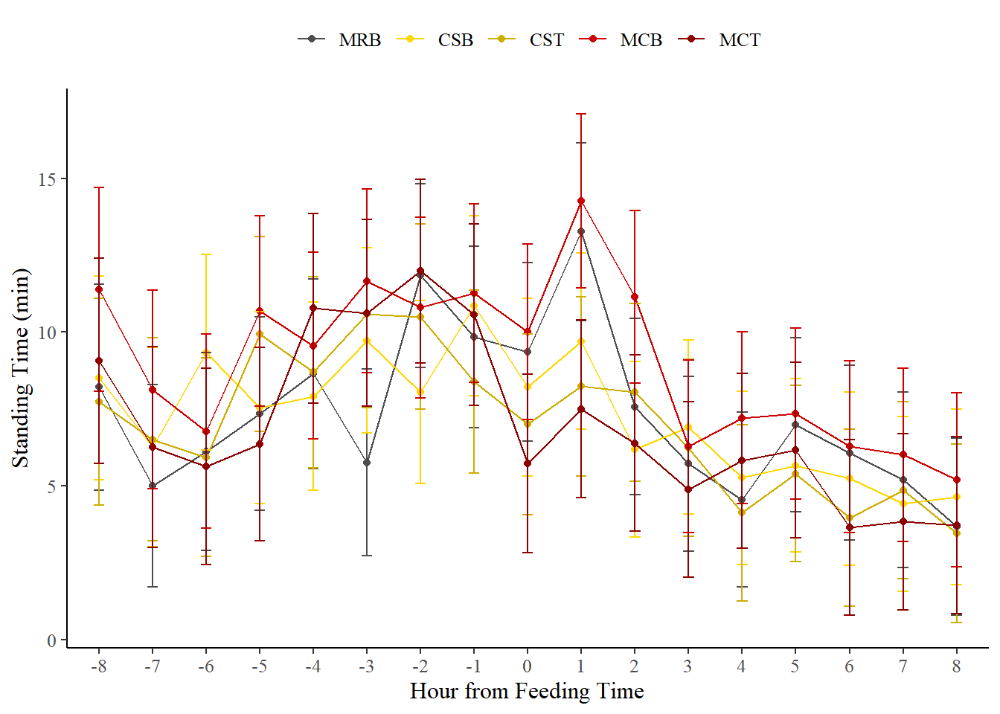
Models - Bottle vs. Tube (16hr around)
Standing
hourfull <- hour |>
filter(hour >= -8 & hour <= 8)
hourfull$D0Fed2TxGrp <- relevel(factor(hourfull$D0Fed2TxGrp), ref = "MRB")
standmodel16b <- lmer(as.numeric(Standing) ~ as.factor(hour) * bottleyn + CrossbredYN + (1 | CalfID), data = hourfull)
summary(standmodel16b)Linear mixed model fit by REML. t-tests use Satterthwaite's method [
lmerModLmerTest]
Formula: as.numeric(Standing) ~ as.factor(hour) * bottleyn + CrossbredYN +
(1 | CalfID)
Data: hourfull
REML criterion at convergence: 17138.9
Scaled residuals:
Min 1Q Median 3Q Max
-2.1767 -0.6485 -0.1670 0.4712 6.7531
Random effects:
Groups Name Variance Std.Dev.
CalfID (Intercept) 9.012 3.002
Residual 44.040 6.636
Number of obs: 2567, groups: CalfID, 151
Fixed effects:
Estimate Std. Error df t value Pr(>|t|)
(Intercept) 6.27365 1.13733 606.57289 5.516 5.14e-08
as.factor(hour)-7 -2.02978 1.20164 2384.00000 -1.689 0.091316
as.factor(hour)-6 -2.62978 1.20164 2384.00000 -2.188 0.028730
as.factor(hour)-5 -0.28852 1.20164 2384.00000 -0.240 0.810266
as.factor(hour)-4 1.34153 1.20164 2384.00000 1.116 0.264356
as.factor(hour)-3 2.19836 1.20164 2384.00000 1.829 0.067454
as.factor(hour)-2 2.84536 1.20164 2384.00000 2.368 0.017969
as.factor(hour)-1 1.07869 1.20164 2384.00000 0.898 0.369446
as.factor(hour)0 -2.05055 1.20164 2384.00000 -1.706 0.088053
as.factor(hour)1 -0.54836 1.20164 2384.00000 -0.456 0.648184
as.factor(hour)2 -1.20410 1.20164 2384.00000 -1.002 0.316422
as.factor(hour)3 -2.85984 1.20164 2384.00000 -2.380 0.017393
as.factor(hour)4 -3.41967 1.20164 2384.00000 -2.846 0.004467
as.factor(hour)5 -2.62377 1.20164 2384.00000 -2.183 0.029097
as.factor(hour)6 -4.59945 1.20164 2384.00000 -3.828 0.000133
as.factor(hour)7 -4.06995 1.20164 2384.00000 -3.387 0.000718
as.factor(hour)8 -4.81393 1.20164 2384.00000 -4.006 6.36e-05
bottleynY 0.96911 1.21007 1701.30695 0.801 0.423318
CrossbredYNy 5.43322 2.50970 146.99999 2.165 0.032010
CrossbredYNY 1.37655 0.74927 146.99999 1.837 0.068202
as.factor(hour)-7:bottleynY -0.86689 1.55647 2384.00000 -0.557 0.577610
as.factor(hour)-6:bottleynY 0.70367 1.55647 2384.00000 0.452 0.651243
as.factor(hour)-5:bottleynY -0.55388 1.55647 2384.00000 -0.356 0.721978
as.factor(hour)-4:bottleynY -2.01727 1.55647 2384.00000 -1.296 0.195082
as.factor(hour)-3:bottleynY -2.48206 1.55647 2384.00000 -1.595 0.110918
as.factor(hour)-2:bottleynY -2.02869 1.55647 2384.00000 -1.303 0.192567
as.factor(hour)-1:bottleynY 0.21761 1.55647 2384.00000 0.140 0.888823
as.factor(hour)0:bottleynY 1.85703 1.55647 2384.00000 1.193 0.232948
as.factor(hour)1:bottleynY 3.54484 1.55647 2384.00000 2.277 0.022845
as.factor(hour)2:bottleynY 0.11743 1.55647 2384.00000 0.075 0.939865
as.factor(hour)3:bottleynY -0.19109 1.55647 2384.00000 -0.123 0.902299
as.factor(hour)4:bottleynY -0.27088 1.55647 2384.00000 -0.174 0.861851
as.factor(hour)5:bottleynY -0.09475 1.55647 2384.00000 -0.061 0.951465
as.factor(hour)6:bottleynY 1.08149 1.55647 2384.00000 0.695 0.487226
as.factor(hour)7:bottleynY -0.10154 1.55647 2384.00000 -0.065 0.947992
as.factor(hour)8:bottleynY -0.04125 1.55647 2384.00000 -0.027 0.978859
(Intercept) ***
as.factor(hour)-7 .
as.factor(hour)-6 *
as.factor(hour)-5
as.factor(hour)-4
as.factor(hour)-3 .
as.factor(hour)-2 *
as.factor(hour)-1
as.factor(hour)0 .
as.factor(hour)1
as.factor(hour)2
as.factor(hour)3 *
as.factor(hour)4 **
as.factor(hour)5 *
as.factor(hour)6 ***
as.factor(hour)7 ***
as.factor(hour)8 ***
bottleynY
CrossbredYNy *
CrossbredYNY .
as.factor(hour)-7:bottleynY
as.factor(hour)-6:bottleynY
as.factor(hour)-5:bottleynY
as.factor(hour)-4:bottleynY
as.factor(hour)-3:bottleynY
as.factor(hour)-2:bottleynY
as.factor(hour)-1:bottleynY
as.factor(hour)0:bottleynY
as.factor(hour)1:bottleynY *
as.factor(hour)2:bottleynY
as.factor(hour)3:bottleynY
as.factor(hour)4:bottleynY
as.factor(hour)5:bottleynY
as.factor(hour)6:bottleynY
as.factor(hour)7:bottleynY
as.factor(hour)8:bottleynY
---
Signif. codes: 0 '***' 0.001 '**' 0.01 '*' 0.05 '.' 0.1 ' ' 1
Correlation matrix not shown by default, as p = 36 > 12.
Use print(value, correlation=TRUE) or
vcov(value) if you need itplot(standmodel16)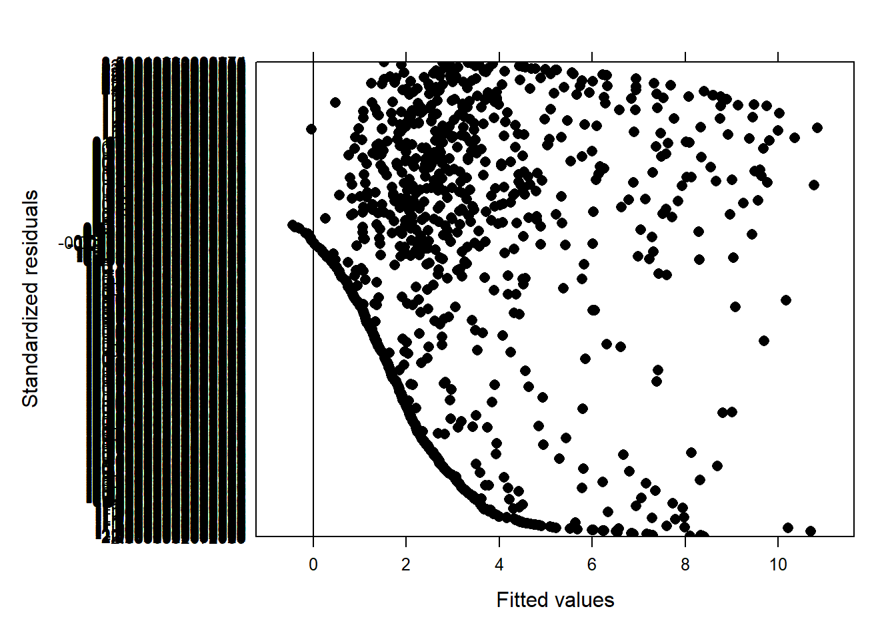
car::Anova(standmodel16b, type=3)Warning in printHypothesis(L, rhs, names(b)): one or more coefficients in the hypothesis include
arithmetic operators in their names;
the printed representation of the hypothesis will be omitted
Warning in printHypothesis(L, rhs, names(b)): one or more coefficients in the hypothesis include
arithmetic operators in their names;
the printed representation of the hypothesis will be omittedAnalysis of Deviance Table (Type III Wald chisquare tests)
Response: as.numeric(Standing)
Chisq Df Pr(>Chisq)
(Intercept) 30.4277 1 3.466e-08 ***
as.factor(hour) 121.4034 16 < 2.2e-16 ***
bottleyn 0.6414 1 0.42321
CrossbredYN 6.5245 2 0.03830 *
as.factor(hour):bottleyn 27.4090 16 0.03716 *
---
Signif. codes: 0 '***' 0.001 '**' 0.01 '*' 0.05 '.' 0.1 ' ' 1emmeans (standmodel16b, ~ bottleyn)NOTE: Results may be misleading due to involvement in interactions bottleyn emmean SE df lower.CL upper.CL
N 7.15 0.943 147 5.29 9.01
Y 8.05 0.852 147 6.37 9.74
Results are averaged over the levels of: hour, CrossbredYN
Degrees-of-freedom method: kenward-roger
Results are given on the as.numeric (not the response) scale.
Confidence level used: 0.95 emmeans (standmodel16b, ~ hour)NOTE: Results may be misleading due to involvement in interactions hour emmean SE df lower.CL upper.CL
-8 9.03 1.01 282 7.05 11.01
-7 6.56 1.01 282 4.58 8.55
-6 6.75 1.01 282 4.77 8.73
-5 8.46 1.01 282 6.48 10.44
-4 9.36 1.01 282 7.38 11.34
-3 9.99 1.01 282 8.01 11.97
-2 10.86 1.01 282 8.88 12.84
-1 10.22 1.01 282 8.24 12.20
0 7.91 1.01 282 5.93 9.89
1 10.25 1.01 282 8.27 12.23
2 7.88 1.01 282 5.90 9.86
3 6.07 1.01 282 4.09 8.05
4 5.47 1.01 282 3.49 7.45
5 6.36 1.01 282 4.38 8.34
6 4.97 1.01 282 2.99 6.95
7 4.91 1.01 282 2.93 6.89
8 4.19 1.01 282 2.21 6.17
Results are averaged over the levels of: bottleyn, CrossbredYN
Degrees-of-freedom method: kenward-roger
Results are given on the as.numeric (not the response) scale.
Confidence level used: 0.95 modeladj <- emmeans(standmodel16b, ~hour|bottleyn)
summary(modeladj)bottleyn = N:
hour emmean SE df lower.CL upper.CL
-8 8.54 1.25 442 6.08 11.01
-7 6.51 1.25 442 4.05 8.98
-6 5.91 1.25 442 3.45 8.38
-5 8.26 1.25 442 5.79 10.72
-4 9.89 1.25 442 7.42 12.35
-3 10.74 1.25 442 8.28 13.20
-2 11.39 1.25 442 8.93 13.85
-1 9.62 1.25 442 7.16 12.08
0 6.49 1.25 442 4.03 8.95
1 8.00 1.25 442 5.53 10.46
2 7.34 1.25 442 4.88 9.80
3 5.68 1.25 442 3.22 8.15
4 5.12 1.25 442 2.66 7.59
5 5.92 1.25 442 3.46 8.38
6 3.94 1.25 442 1.48 6.41
7 4.47 1.25 442 2.01 6.94
8 3.73 1.25 442 1.27 6.19
bottleyn = Y:
hour emmean SE df lower.CL upper.CL
-8 9.51 1.09 383 7.37 11.66
-7 6.62 1.09 383 4.47 8.76
-6 7.59 1.09 383 5.44 9.73
-5 8.67 1.09 383 6.53 10.81
-4 8.84 1.09 383 6.69 10.98
-3 9.23 1.09 383 7.09 11.37
-2 10.33 1.09 383 8.19 12.47
-1 10.81 1.09 383 8.67 12.95
0 9.32 1.09 383 7.18 11.46
1 12.51 1.09 383 10.37 14.65
2 8.43 1.09 383 6.28 10.57
3 6.46 1.09 383 4.32 8.60
4 5.82 1.09 383 3.68 7.96
5 6.79 1.09 383 4.65 8.94
6 5.99 1.09 383 3.85 8.14
7 5.34 1.09 383 3.20 7.48
8 4.66 1.09 383 2.52 6.80
Results are averaged over the levels of: CrossbredYN
Degrees-of-freedom method: kenward-roger
Results are given on the as.numeric (not the response) scale.
Confidence level used: 0.95 subset_hour_1 <- subset(modeladj, hour == 1)
subset_hour_2 <- subset(modeladj, hour == 2)
pairwise_comparisons_hour_1 <- pairs(subset_hour_1)
pairwise_comparisons_hour_2 <- pairs(subset_hour_2)
summary(pairwise_comparisons_hour_1) contrast estimate SE df t.ratio p.value
hour1 N - hour1 Y -4.51 1.21 1701 -3.730 0.0002
Results are averaged over the levels of: CrossbredYN
Note: contrasts are still on the as.numeric scale. Consider using
regrid() if you want contrasts of back-transformed estimates.
Degrees-of-freedom method: kenward-roger summary(pairwise_comparisons_hour_2) contrast estimate SE df t.ratio p.value
hour2 N - hour2 Y -1.09 1.21 1701 -0.898 0.3694
Results are averaged over the levels of: CrossbredYN
Note: contrasts are still on the as.numeric scale. Consider using
regrid() if you want contrasts of back-transformed estimates.
Degrees-of-freedom method: kenward-roger emm_df <- as.data.frame(modeladj)
ggplot(emm_df, aes(x = hour, y = emmean, color = bottleyn)) +
geom_line() +
geom_point() +
geom_errorbar(aes(ymin = emmean - SE, ymax = emmean + SE), width = 0.2)+
labs(x = "Hour", y = "Adjusted Mean Standing Time (min)", title = "Adjusted Mean Standing Time by Hour") +
theme_classic()+
scale_y_continuous(limits = c(0, 20), breaks = seq(0, 20, by = 5))+
scale_x_continuous(limits = c(-8, 8), breaks = seq(-8, 8, by = 2))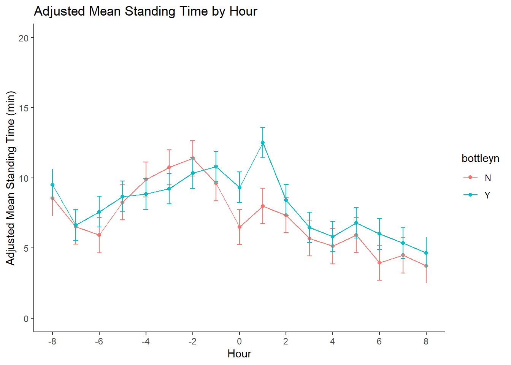
Laying
hourfull <- hour |>
filter(hour >= -8 & hour <= 8)
hourfull$D0Fed2TxGrp <- relevel(factor(hourfull$D0Fed2TxGrp), ref = "MRB")
laymodel16b <- lmer(as.numeric(Lying) ~ as.factor(hour) * bottleyn + CrossbredYN + (1 | CalfID), data = hourfull)
summary(laymodel16b)Linear mixed model fit by REML. t-tests use Satterthwaite's method [
lmerModLmerTest]
Formula: as.numeric(Lying) ~ as.factor(hour) * bottleyn + CrossbredYN +
(1 | CalfID)
Data: hourfull
REML criterion at convergence: 17138.9
Scaled residuals:
Min 1Q Median 3Q Max
-6.7531 -0.4712 0.1670 0.6485 2.1767
Random effects:
Groups Name Variance Std.Dev.
CalfID (Intercept) 9.012 3.002
Residual 44.040 6.636
Number of obs: 2567, groups: CalfID, 151
Fixed effects:
Estimate Std. Error df t value Pr(>|t|)
(Intercept) 53.72635 1.13733 606.57295 47.239 < 2e-16
as.factor(hour)-7 2.02978 1.20164 2383.99998 1.689 0.091316
as.factor(hour)-6 2.62978 1.20164 2383.99999 2.188 0.028730
as.factor(hour)-5 0.28852 1.20164 2383.99998 0.240 0.810266
as.factor(hour)-4 -1.34153 1.20164 2383.99998 -1.116 0.264356
as.factor(hour)-3 -2.19836 1.20164 2383.99998 -1.829 0.067454
as.factor(hour)-2 -2.84536 1.20164 2383.99998 -2.368 0.017969
as.factor(hour)-1 -1.07869 1.20164 2383.99998 -0.898 0.369446
as.factor(hour)0 -42.94945 1.20164 2383.99998 -35.742 < 2e-16
as.factor(hour)1 0.54836 1.20164 2383.99998 0.456 0.648184
as.factor(hour)2 1.20410 1.20164 2383.99998 1.002 0.316422
as.factor(hour)3 2.85984 1.20164 2383.99998 2.380 0.017393
as.factor(hour)4 3.41967 1.20164 2383.99998 2.846 0.004467
as.factor(hour)5 2.62377 1.20164 2383.99998 2.183 0.029097
as.factor(hour)6 4.59945 1.20164 2383.99998 3.828 0.000133
as.factor(hour)7 4.06995 1.20164 2383.99998 3.387 0.000718
as.factor(hour)8 4.81393 1.20164 2383.99998 4.006 6.36e-05
bottleynY -0.96911 1.21007 1701.30707 -0.801 0.423318
CrossbredYNy -5.43322 2.50970 147.00000 -2.165 0.032010
CrossbredYNY -1.37655 0.74927 147.00000 -1.837 0.068202
as.factor(hour)-7:bottleynY 0.86689 1.55647 2383.99999 0.557 0.577610
as.factor(hour)-6:bottleynY -0.70367 1.55647 2383.99999 -0.452 0.651243
as.factor(hour)-5:bottleynY 0.55388 1.55647 2383.99999 0.356 0.721978
as.factor(hour)-4:bottleynY 2.01727 1.55647 2383.99999 1.296 0.195082
as.factor(hour)-3:bottleynY 2.48206 1.55647 2383.99999 1.595 0.110918
as.factor(hour)-2:bottleynY 2.02869 1.55647 2383.99999 1.303 0.192568
as.factor(hour)-1:bottleynY -0.21761 1.55647 2383.99999 -0.140 0.888823
as.factor(hour)0:bottleynY -1.85703 1.55647 2383.99999 -1.193 0.232948
as.factor(hour)1:bottleynY -3.54484 1.55647 2383.99999 -2.277 0.022845
as.factor(hour)2:bottleynY -0.11743 1.55647 2383.99999 -0.075 0.939865
as.factor(hour)3:bottleynY 0.19109 1.55647 2383.99999 0.123 0.902299
as.factor(hour)4:bottleynY 0.27088 1.55647 2383.99999 0.174 0.861851
as.factor(hour)5:bottleynY 0.09475 1.55647 2383.99999 0.061 0.951465
as.factor(hour)6:bottleynY -1.08149 1.55647 2383.99999 -0.695 0.487226
as.factor(hour)7:bottleynY 0.10154 1.55647 2383.99999 0.065 0.947992
as.factor(hour)8:bottleynY 0.04125 1.55647 2383.99999 0.027 0.978859
(Intercept) ***
as.factor(hour)-7 .
as.factor(hour)-6 *
as.factor(hour)-5
as.factor(hour)-4
as.factor(hour)-3 .
as.factor(hour)-2 *
as.factor(hour)-1
as.factor(hour)0 ***
as.factor(hour)1
as.factor(hour)2
as.factor(hour)3 *
as.factor(hour)4 **
as.factor(hour)5 *
as.factor(hour)6 ***
as.factor(hour)7 ***
as.factor(hour)8 ***
bottleynY
CrossbredYNy *
CrossbredYNY .
as.factor(hour)-7:bottleynY
as.factor(hour)-6:bottleynY
as.factor(hour)-5:bottleynY
as.factor(hour)-4:bottleynY
as.factor(hour)-3:bottleynY
as.factor(hour)-2:bottleynY
as.factor(hour)-1:bottleynY
as.factor(hour)0:bottleynY
as.factor(hour)1:bottleynY *
as.factor(hour)2:bottleynY
as.factor(hour)3:bottleynY
as.factor(hour)4:bottleynY
as.factor(hour)5:bottleynY
as.factor(hour)6:bottleynY
as.factor(hour)7:bottleynY
as.factor(hour)8:bottleynY
---
Signif. codes: 0 '***' 0.001 '**' 0.01 '*' 0.05 '.' 0.1 ' ' 1
Correlation matrix not shown by default, as p = 36 > 12.
Use print(value, correlation=TRUE) or
vcov(value) if you need itplot(laymodel16b)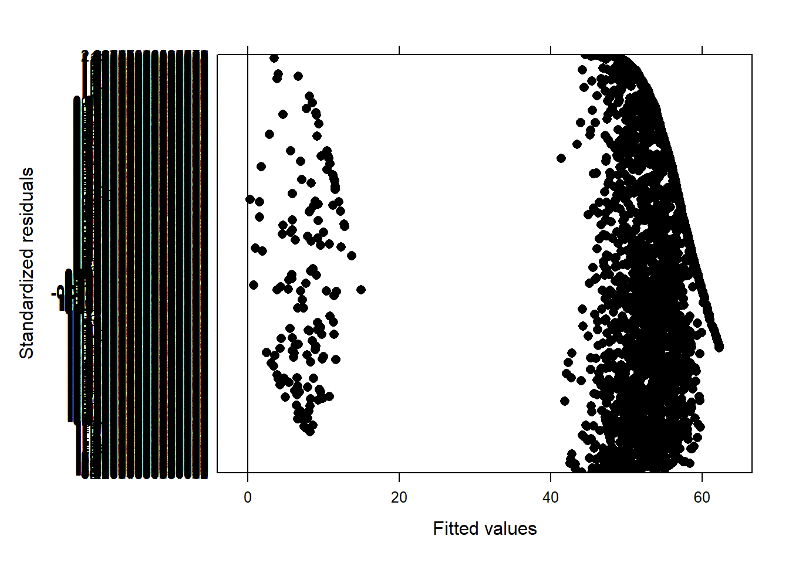
car::Anova(laymodel16b, type=3)Warning in printHypothesis(L, rhs, names(b)): one or more coefficients in the hypothesis include
arithmetic operators in their names;
the printed representation of the hypothesis will be omitted
Warning in printHypothesis(L, rhs, names(b)): one or more coefficients in the hypothesis include
arithmetic operators in their names;
the printed representation of the hypothesis will be omittedAnalysis of Deviance Table (Type III Wald chisquare tests)
Response: as.numeric(Lying)
Chisq Df Pr(>Chisq)
(Intercept) 2231.5292 1 < 2e-16 ***
as.factor(hour) 2679.2269 16 < 2e-16 ***
bottleyn 0.6414 1 0.42321
CrossbredYN 6.5245 2 0.03830 *
as.factor(hour):bottleyn 27.4090 16 0.03716 *
---
Signif. codes: 0 '***' 0.001 '**' 0.01 '*' 0.05 '.' 0.1 ' ' 1emmeans (laymodel16b, ~ bottleyn)NOTE: Results may be misleading due to involvement in interactions bottleyn emmean SE df lower.CL upper.CL
N 50.2 0.943 147 48.3 52.1
Y 49.3 0.852 147 47.6 51.0
Results are averaged over the levels of: hour, CrossbredYN
Degrees-of-freedom method: kenward-roger
Results are given on the as.numeric (not the response) scale.
Confidence level used: 0.95 emmeans (laymodel16b, ~ hour)NOTE: Results may be misleading due to involvement in interactions hour emmean SE df lower.CL upper.CL
-8 50.97 1.01 282 48.99 52.95
-7 53.44 1.01 282 51.45 55.42
-6 53.25 1.01 282 51.27 55.23
-5 51.54 1.01 282 49.56 53.52
-4 50.64 1.01 282 48.66 52.62
-3 50.01 1.01 282 48.03 51.99
-2 49.14 1.01 282 47.16 51.12
-1 49.78 1.01 282 47.80 51.76
0 7.09 1.01 282 5.11 9.07
1 49.75 1.01 282 47.77 51.73
2 52.12 1.01 282 50.14 54.10
3 53.93 1.01 282 51.95 55.91
4 54.53 1.01 282 52.55 56.51
5 53.64 1.01 282 51.66 55.62
6 55.03 1.01 282 53.05 57.01
7 55.09 1.01 282 53.11 57.07
8 55.81 1.01 282 53.83 57.79
Results are averaged over the levels of: bottleyn, CrossbredYN
Degrees-of-freedom method: kenward-roger
Results are given on the as.numeric (not the response) scale.
Confidence level used: 0.95 modeladj <- emmeans(laymodel16b, ~hour|bottleyn)
summary(modeladj)bottleyn = N:
hour emmean SE df lower.CL upper.CL
-8 51.46 1.25 442 48.99 53.92
-7 53.49 1.25 442 51.02 55.95
-6 54.09 1.25 442 51.62 56.55
-5 51.74 1.25 442 49.28 54.21
-4 50.11 1.25 442 47.65 52.58
-3 49.26 1.25 442 46.80 51.72
-2 48.61 1.25 442 46.15 51.07
-1 50.38 1.25 442 47.92 52.84
0 8.51 1.25 442 6.05 10.97
1 52.00 1.25 442 49.54 54.47
2 52.66 1.25 442 50.20 55.12
3 54.32 1.25 442 51.85 56.78
4 54.88 1.25 442 52.41 57.34
5 54.08 1.25 442 51.62 56.54
6 56.06 1.25 442 53.59 58.52
7 55.53 1.25 442 53.06 57.99
8 56.27 1.25 442 53.81 58.73
bottleyn = Y:
hour emmean SE df lower.CL upper.CL
-8 50.49 1.09 383 48.34 52.63
-7 53.38 1.09 383 51.24 55.53
-6 52.41 1.09 383 50.27 54.56
-5 51.33 1.09 383 49.19 53.47
-4 51.16 1.09 383 49.02 53.31
-3 50.77 1.09 383 48.63 52.91
-2 49.67 1.09 383 47.53 51.81
-1 49.19 1.09 383 47.05 51.33
0 5.68 1.09 383 3.54 7.82
1 47.49 1.09 383 45.35 49.63
2 51.57 1.09 383 49.43 53.72
3 53.54 1.09 383 51.40 55.68
4 54.18 1.09 383 52.04 56.32
5 53.21 1.09 383 51.06 55.35
6 54.01 1.09 383 51.86 56.15
7 54.66 1.09 383 52.52 56.80
8 55.34 1.09 383 53.20 57.48
Results are averaged over the levels of: CrossbredYN
Degrees-of-freedom method: kenward-roger
Results are given on the as.numeric (not the response) scale.
Confidence level used: 0.95 subset_hour_1 <- subset(modeladj, hour == 1)
subset_hour_2 <- subset(modeladj, hour == 2)
pairwise_comparisons_hour_1 <- pairs(subset_hour_1)
pairwise_comparisons_hour_2 <- pairs(subset_hour_2)
summary(pairwise_comparisons_hour_1) contrast estimate SE df t.ratio p.value
hour1 N - hour1 Y 4.51 1.21 1701 3.730 0.0002
Results are averaged over the levels of: CrossbredYN
Note: contrasts are still on the as.numeric scale. Consider using
regrid() if you want contrasts of back-transformed estimates.
Degrees-of-freedom method: kenward-roger summary(pairwise_comparisons_hour_2) contrast estimate SE df t.ratio p.value
hour2 N - hour2 Y 1.09 1.21 1701 0.898 0.3694
Results are averaged over the levels of: CrossbredYN
Note: contrasts are still on the as.numeric scale. Consider using
regrid() if you want contrasts of back-transformed estimates.
Degrees-of-freedom method: kenward-roger emm_df <- as.data.frame(modeladj)
ggplot(emm_df, aes(x = hour, y = emmean, color = bottleyn)) +
geom_line() +
geom_point() +
geom_errorbar(aes(ymin = emmean - SE, ymax = emmean + SE), width = 0.2)+
labs(x = "Hour", y = "Adjusted Mean Lying Time (min)", title = "Adjusted Mean Lying Time by Hour") +
theme_classic()+
scale_y_continuous(limits = c(0, 60), breaks = seq(0, 60, by = 5))+ scale_x_continuous(limits = c(-8, 8), breaks = seq(-8, 8, by = 2))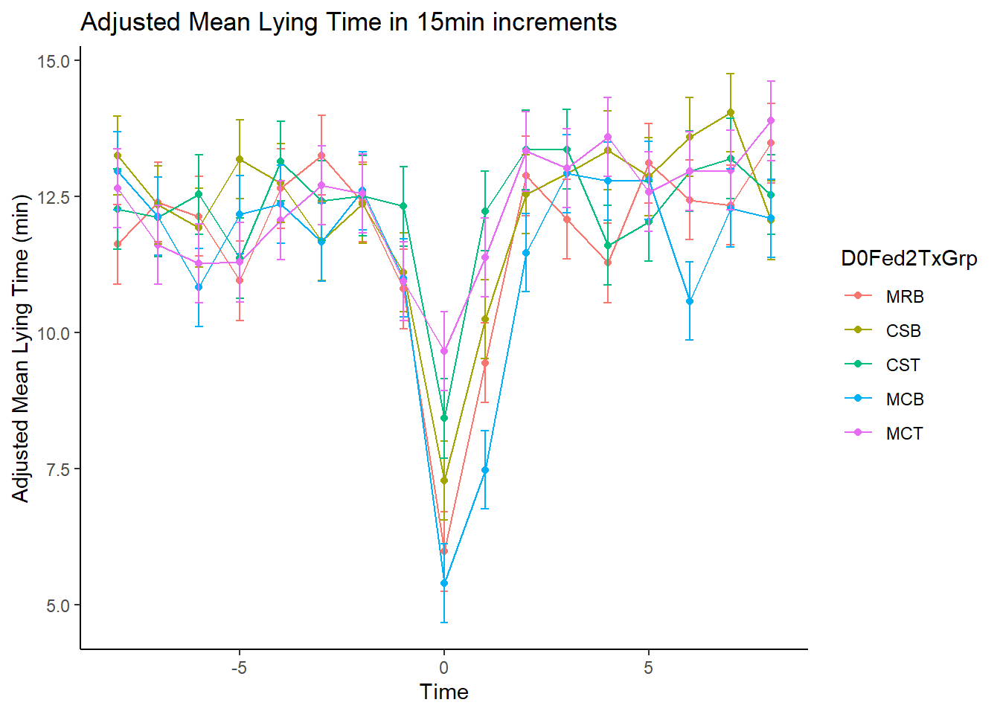
Models - Bottle vs. Tube (2 hr around 15min increments)
Standing
#2hrs around
hr2 <- merged_data |>
filter(tffeed >= -4 & tffeed <= 4) |>
mutate(
standm = `Standing [t]` / 60)
standm2b <- lmer(as.numeric(standm) ~ as.factor(tffeed) * bottleyn + CrossbredYN + (1 | CalfID), data = hr2)
summary(standm2b)Linear mixed model fit by REML. t-tests use Satterthwaite's method [
lmerModLmerTest]
Formula: as.numeric(standm) ~ as.factor(tffeed) * bottleyn + CrossbredYN +
(1 | CalfID)
Data: hr2
REML criterion at convergence: 7370.7
Scaled residuals:
Min 1Q Median 3Q Max
-2.5181 -0.5883 -0.2802 0.4662 3.5652
Random effects:
Groups Name Variance Std.Dev.
CalfID (Intercept) 1.401 1.184
Residual 12.507 3.537
Number of obs: 1359, groups: CalfID, 151
Fixed effects:
Estimate Std. Error df t value Pr(>|t|)
(Intercept) 1.67021 0.57440 617.68500 2.908 0.00377
as.factor(tffeed)-3 0.03115 0.64036 1192.00000 0.049 0.96121
as.factor(tffeed)-2 0.06148 0.64036 1192.00000 0.096 0.92354
as.factor(tffeed)-1 0.97923 0.64036 1192.00000 1.529 0.12648
as.factor(tffeed)0 3.55000 0.64036 1192.00000 5.544 3.64e-08
as.factor(tffeed)1 0.79891 0.64036 1192.00000 1.248 0.21243
as.factor(tffeed)2 -0.74645 0.64036 1192.00000 -1.166 0.24398
as.factor(tffeed)3 -0.59208 0.64036 1192.00000 -0.925 0.35537
as.factor(tffeed)4 -0.01557 0.64036 1192.00000 -0.024 0.98060
bottleynY -0.01602 0.61948 1229.24084 -0.026 0.97938
CrossbredYNy 2.92552 1.23082 147.00000 2.377 0.01875
CrossbredYNY 0.22895 0.36746 147.00000 0.623 0.53422
as.factor(tffeed)-3:bottleynY 0.37052 0.82946 1192.00000 0.447 0.65517
as.factor(tffeed)-2:bottleynY 0.07056 0.82946 1192.00000 0.085 0.93222
as.factor(tffeed)-1:bottleynY 0.63354 0.82946 1192.00000 0.764 0.44514
as.factor(tffeed)0:bottleynY 2.80611 0.82946 1192.00000 3.383 0.00074
as.factor(tffeed)1:bottleynY 2.72535 0.82946 1192.00000 3.286 0.00105
as.factor(tffeed)2:bottleynY 1.04237 0.82946 1192.00000 1.257 0.20911
as.factor(tffeed)3:bottleynY 0.52634 0.82946 1192.00000 0.635 0.52584
as.factor(tffeed)4:bottleynY 0.10780 0.82946 1192.00000 0.130 0.89662
(Intercept) **
as.factor(tffeed)-3
as.factor(tffeed)-2
as.factor(tffeed)-1
as.factor(tffeed)0 ***
as.factor(tffeed)1
as.factor(tffeed)2
as.factor(tffeed)3
as.factor(tffeed)4
bottleynY
CrossbredYNy *
CrossbredYNY
as.factor(tffeed)-3:bottleynY
as.factor(tffeed)-2:bottleynY
as.factor(tffeed)-1:bottleynY
as.factor(tffeed)0:bottleynY ***
as.factor(tffeed)1:bottleynY **
as.factor(tffeed)2:bottleynY
as.factor(tffeed)3:bottleynY
as.factor(tffeed)4:bottleynY
---
Signif. codes: 0 '***' 0.001 '**' 0.01 '*' 0.05 '.' 0.1 ' ' 1
Correlation matrix not shown by default, as p = 20 > 12.
Use print(value, correlation=TRUE) or
vcov(value) if you need itplot(standm2b)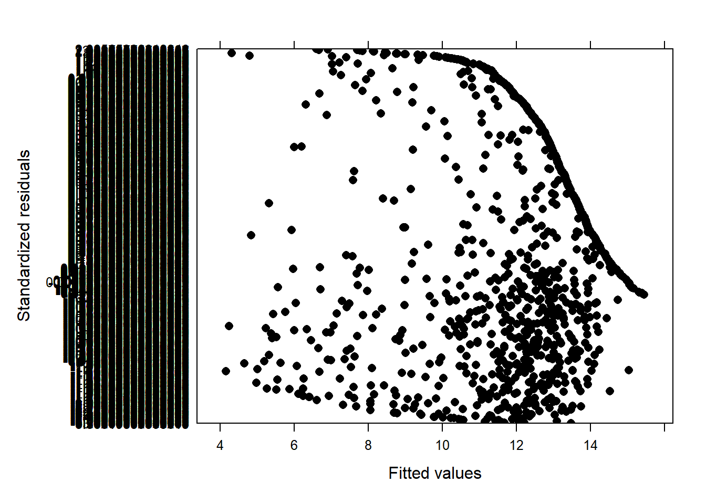
car::Anova(standm2b, type=3)Warning in printHypothesis(L, rhs, names(b)): one or more coefficients in the hypothesis include
arithmetic operators in their names;
the printed representation of the hypothesis will be omitted
Warning in printHypothesis(L, rhs, names(b)): one or more coefficients in the hypothesis include
arithmetic operators in their names;
the printed representation of the hypothesis will be omittedAnalysis of Deviance Table (Type III Wald chisquare tests)
Response: as.numeric(standm)
Chisq Df Pr(>Chisq)
(Intercept) 8.4550 1 0.0036405 **
as.factor(tffeed) 64.7448 8 5.421e-11 ***
bottleyn 0.0007 1 0.9793750
CrossbredYN 5.6523 2 0.0592405 .
as.factor(tffeed):bottleyn 27.9019 8 0.0004933 ***
---
Signif. codes: 0 '***' 0.001 '**' 0.01 '*' 0.05 '.' 0.1 ' ' 1emmeans (standm2b, ~ bottleyn)NOTE: Results may be misleading due to involvement in interactions bottleyn emmean SE df lower.CL upper.CL
N 3.17 0.462 147 2.26 4.09
Y 4.08 0.418 147 3.25 4.90
Results are averaged over the levels of: tffeed, CrossbredYN
Degrees-of-freedom method: kenward-roger
Results are given on the as.numeric (not the response) scale.
Confidence level used: 0.95 emmeans (standm2b, ~ tffeed)NOTE: Results may be misleading due to involvement in interactions tffeed emmean SE df lower.CL upper.CL
-4 2.71 0.501 297 1.73 3.70
-3 2.93 0.501 297 1.94 3.92
-2 2.81 0.501 297 1.82 3.80
-1 4.01 0.501 297 3.02 5.00
0 7.67 0.501 297 6.68 8.65
1 4.88 0.501 297 3.89 5.86
2 2.49 0.501 297 1.50 3.47
3 2.38 0.501 297 1.40 3.37
4 2.75 0.501 297 1.77 3.74
Results are averaged over the levels of: bottleyn, CrossbredYN
Degrees-of-freedom method: kenward-roger
Results are given on the as.numeric (not the response) scale.
Confidence level used: 0.95 modeladj2b <- emmeans(standm2b, ~tffeed|bottleyn)
summary(modeladj2b)bottleyn = N:
tffeed emmean SE df lower.CL upper.CL
-4 2.72 0.629 463 1.485 3.96
-3 2.75 0.629 463 1.516 3.99
-2 2.78 0.629 463 1.546 4.02
-1 3.70 0.629 463 2.464 4.94
0 6.27 0.629 463 5.035 7.51
1 3.52 0.629 463 2.284 4.76
2 1.98 0.629 463 0.738 3.21
3 2.13 0.629 463 0.893 3.37
4 2.71 0.629 463 1.469 3.94
bottleyn = Y:
tffeed emmean SE df lower.CL upper.CL
-4 2.71 0.546 403 1.632 3.78
-3 3.11 0.546 403 2.034 4.18
-2 2.84 0.546 403 1.764 3.91
-1 4.32 0.546 403 3.245 5.39
0 9.06 0.546 403 7.988 10.14
1 6.23 0.546 403 5.156 7.30
2 3.00 0.546 403 1.928 4.08
3 2.64 0.546 403 1.566 3.71
4 2.80 0.546 403 1.724 3.87
Results are averaged over the levels of: CrossbredYN
Degrees-of-freedom method: kenward-roger
Results are given on the as.numeric (not the response) scale.
Confidence level used: 0.95 subset_tffeed_1 <- subset(modeladj2b, tffeed == 1)
subset_tffeed_2 <- subset(modeladj2b, tffeed == 2)
pairwise_comparisons_tffeed_1 <- pairs(subset_tffeed_1)
pairwise_comparisons_tffeed_2 <- pairs(subset_tffeed_2)
summary(pairwise_comparisons_tffeed_1) contrast estimate SE df t.ratio p.value
tffeed1 N - tffeed1 Y -2.71 0.619 1229 -4.374 <.0001
Results are averaged over the levels of: CrossbredYN
Note: contrasts are still on the as.numeric scale. Consider using
regrid() if you want contrasts of back-transformed estimates.
Degrees-of-freedom method: kenward-roger summary(pairwise_comparisons_tffeed_2) contrast estimate SE df t.ratio p.value
tffeed2 N - tffeed2 Y -1.03 0.619 1229 -1.657 0.0978
Results are averaged over the levels of: CrossbredYN
Note: contrasts are still on the as.numeric scale. Consider using
regrid() if you want contrasts of back-transformed estimates.
Degrees-of-freedom method: kenward-roger #the above gives the tukey adjusted pairwise for T1 and T2
emm_df <- as.data.frame(modeladj2b)
ggplot(emm_df, aes(x = tffeed, y = emmean, color = bottleyn)) +
geom_line() +
geom_point() +
geom_errorbar(aes(ymin = emmean - SE, ymax = emmean + SE), width = 0.2)+
labs(x = "Time", y = "Adjusted Mean Standing Time (min)", title = "Adjusted Mean Standing Time in 15min increments") +
theme_classic()+
scale_x_continuous(limits = c(-4, 4), breaks = seq(-4, 4, by = 1))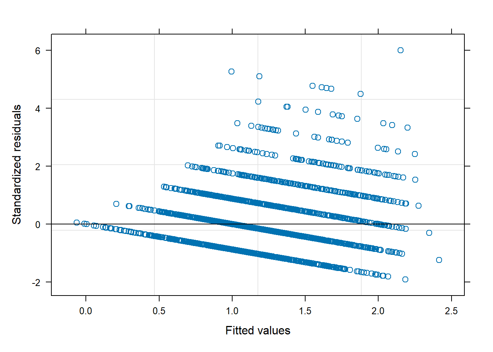
Laying
#2HRS AROUND
hr2 <- merged_data |>
filter(tffeed >= -4 & tffeed <= 4) |>
mutate(
laym = `Lying [t]` / 60)
laym2b <- lmer(as.numeric(laym) ~ as.factor(tffeed) * bottleyn + CrossbredYN + (1 | CalfID), data = hr2)
summary(laym2b)Linear mixed model fit by REML. t-tests use Satterthwaite's method [
lmerModLmerTest]
Formula: as.numeric(laym) ~ as.factor(tffeed) * bottleyn + CrossbredYN +
(1 | CalfID)
Data: hr2
REML criterion at convergence: 7370.7
Scaled residuals:
Min 1Q Median 3Q Max
-3.5652 -0.4662 0.2802 0.5883 2.5181
Random effects:
Groups Name Variance Std.Dev.
CalfID (Intercept) 1.401 1.184
Residual 12.507 3.537
Number of obs: 1359, groups: CalfID, 151
Fixed effects:
Estimate Std. Error df t value Pr(>|t|)
(Intercept) 13.32979 0.57440 617.68500 23.207 < 2e-16
as.factor(tffeed)-3 -0.03115 0.64036 1192.00000 -0.049 0.96121
as.factor(tffeed)-2 -0.06148 0.64036 1192.00000 -0.096 0.92354
as.factor(tffeed)-1 -0.97923 0.64036 1192.00000 -1.529 0.12648
as.factor(tffeed)0 -3.55000 0.64036 1192.00000 -5.544 3.64e-08
as.factor(tffeed)1 -0.79891 0.64036 1192.00000 -1.248 0.21243
as.factor(tffeed)2 0.74645 0.64036 1192.00000 1.166 0.24398
as.factor(tffeed)3 0.59208 0.64036 1192.00000 0.925 0.35537
as.factor(tffeed)4 0.01557 0.64036 1192.00000 0.024 0.98060
bottleynY 0.01602 0.61948 1229.24084 0.026 0.97938
CrossbredYNy -2.92552 1.23082 147.00000 -2.377 0.01875
CrossbredYNY -0.22895 0.36746 147.00000 -0.623 0.53422
as.factor(tffeed)-3:bottleynY -0.37052 0.82946 1192.00000 -0.447 0.65517
as.factor(tffeed)-2:bottleynY -0.07056 0.82946 1192.00000 -0.085 0.93222
as.factor(tffeed)-1:bottleynY -0.63354 0.82946 1192.00000 -0.764 0.44514
as.factor(tffeed)0:bottleynY -2.80611 0.82946 1192.00000 -3.383 0.00074
as.factor(tffeed)1:bottleynY -2.72535 0.82946 1192.00000 -3.286 0.00105
as.factor(tffeed)2:bottleynY -1.04237 0.82946 1192.00000 -1.257 0.20911
as.factor(tffeed)3:bottleynY -0.52634 0.82946 1192.00000 -0.635 0.52584
as.factor(tffeed)4:bottleynY -0.10780 0.82946 1192.00000 -0.130 0.89662
(Intercept) ***
as.factor(tffeed)-3
as.factor(tffeed)-2
as.factor(tffeed)-1
as.factor(tffeed)0 ***
as.factor(tffeed)1
as.factor(tffeed)2
as.factor(tffeed)3
as.factor(tffeed)4
bottleynY
CrossbredYNy *
CrossbredYNY
as.factor(tffeed)-3:bottleynY
as.factor(tffeed)-2:bottleynY
as.factor(tffeed)-1:bottleynY
as.factor(tffeed)0:bottleynY ***
as.factor(tffeed)1:bottleynY **
as.factor(tffeed)2:bottleynY
as.factor(tffeed)3:bottleynY
as.factor(tffeed)4:bottleynY
---
Signif. codes: 0 '***' 0.001 '**' 0.01 '*' 0.05 '.' 0.1 ' ' 1
Correlation matrix not shown by default, as p = 20 > 12.
Use print(value, correlation=TRUE) or
vcov(value) if you need itplot(laym2b)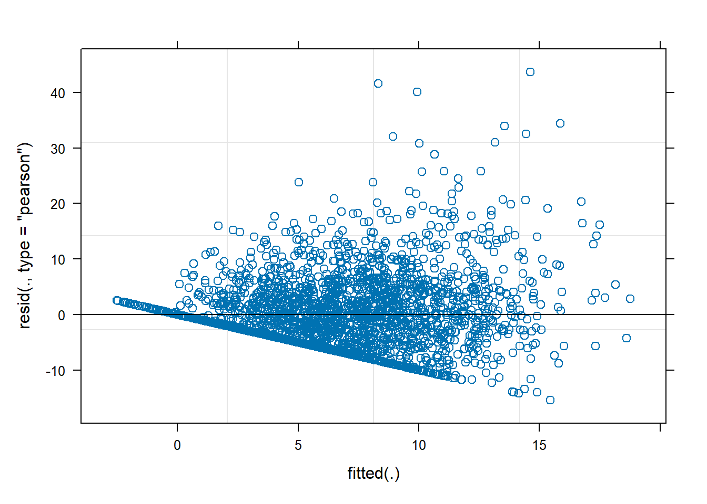
car::Anova(laym2b, type=3)Warning in printHypothesis(L, rhs, names(b)): one or more coefficients in the hypothesis include
arithmetic operators in their names;
the printed representation of the hypothesis will be omitted
Warning in printHypothesis(L, rhs, names(b)): one or more coefficients in the hypothesis include
arithmetic operators in their names;
the printed representation of the hypothesis will be omittedAnalysis of Deviance Table (Type III Wald chisquare tests)
Response: as.numeric(laym)
Chisq Df Pr(>Chisq)
(Intercept) 538.5418 1 < 2.2e-16 ***
as.factor(tffeed) 64.7448 8 5.421e-11 ***
bottleyn 0.0007 1 0.9793750
CrossbredYN 5.6523 2 0.0592405 .
as.factor(tffeed):bottleyn 27.9019 8 0.0004933 ***
---
Signif. codes: 0 '***' 0.001 '**' 0.01 '*' 0.05 '.' 0.1 ' ' 1emmeans (laym2b, ~ bottleyn)NOTE: Results may be misleading due to involvement in interactions bottleyn emmean SE df lower.CL upper.CL
N 11.8 0.462 147 10.9 12.7
Y 10.9 0.418 147 10.1 11.7
Results are averaged over the levels of: tffeed, CrossbredYN
Degrees-of-freedom method: kenward-roger
Results are given on the as.numeric (not the response) scale.
Confidence level used: 0.95 emmeans (laym2b, ~ tffeed)NOTE: Results may be misleading due to involvement in interactions tffeed emmean SE df lower.CL upper.CL
-4 12.29 0.501 297 11.30 13.27
-3 12.07 0.501 297 11.08 13.06
-2 12.19 0.501 297 11.20 13.18
-1 10.99 0.501 297 10.00 11.98
0 7.33 0.501 297 6.35 8.32
1 10.12 0.501 297 9.14 11.11
2 12.51 0.501 297 11.53 13.50
3 12.62 0.501 297 11.63 13.60
4 12.25 0.501 297 11.26 13.23
Results are averaged over the levels of: bottleyn, CrossbredYN
Degrees-of-freedom method: kenward-roger
Results are given on the as.numeric (not the response) scale.
Confidence level used: 0.95 modeladj2b <- emmeans(laym2b, ~tffeed|bottleyn)
summary(modeladj2b)bottleyn = N:
tffeed emmean SE df lower.CL upper.CL
-4 12.28 0.629 463 11.04 13.52
-3 12.25 0.629 463 11.01 13.48
-2 12.22 0.629 463 10.98 13.45
-1 11.30 0.629 463 10.06 12.54
0 8.73 0.629 463 7.49 9.97
1 11.48 0.629 463 10.24 12.72
2 13.02 0.629 463 11.79 14.26
3 12.87 0.629 463 11.63 14.11
4 12.29 0.629 463 11.06 13.53
bottleyn = Y:
tffeed emmean SE df lower.CL upper.CL
-4 12.29 0.546 403 11.22 13.37
-3 11.89 0.546 403 10.82 12.97
-2 12.16 0.546 403 11.09 13.24
-1 10.68 0.546 403 9.61 11.76
0 5.94 0.546 403 4.86 7.01
1 8.77 0.546 403 7.70 9.84
2 12.00 0.546 403 10.92 13.07
3 12.36 0.546 403 11.29 13.43
4 12.20 0.546 403 11.13 13.28
Results are averaged over the levels of: CrossbredYN
Degrees-of-freedom method: kenward-roger
Results are given on the as.numeric (not the response) scale.
Confidence level used: 0.95 subset_tffeed_1 <- subset(modeladj2b, tffeed == 1)
subset_tffeed_2 <- subset(modeladj2b, tffeed == 2)
pairwise_comparisons_tffeed_1 <- pairs(subset_tffeed_1)
pairwise_comparisons_tffeed_2 <- pairs(subset_tffeed_2)
summary(pairwise_comparisons_tffeed_1) contrast estimate SE df t.ratio p.value
tffeed1 N - tffeed1 Y 2.71 0.619 1229 4.374 <.0001
Results are averaged over the levels of: CrossbredYN
Note: contrasts are still on the as.numeric scale. Consider using
regrid() if you want contrasts of back-transformed estimates.
Degrees-of-freedom method: kenward-roger summary(pairwise_comparisons_tffeed_2) contrast estimate SE df t.ratio p.value
tffeed2 N - tffeed2 Y 1.03 0.619 1229 1.657 0.0978
Results are averaged over the levels of: CrossbredYN
Note: contrasts are still on the as.numeric scale. Consider using
regrid() if you want contrasts of back-transformed estimates.
Degrees-of-freedom method: kenward-roger #the above gives the tukey adjusted pairwise for T1 and T2
emm_df <- as.data.frame(modeladj2b)
ggplot(emm_df, aes(x = tffeed, y = emmean, color = bottleyn)) +
geom_line() +
geom_point() +
geom_errorbar(aes(ymin = emmean - SE, ymax = emmean + SE), width = 0.2)+
labs(x = "Time", y = "Adjusted Mean Lying Time (min)", title = "Adjusted Mean Lying Time in 15min increments") +
theme_classic()+
scale_x_continuous(limits = c(-4, 4), breaks = seq(-4, 4, by = 1))+
scale_y_continuous(limits = c(0, 15), breaks = seq(0, 15, by = 2))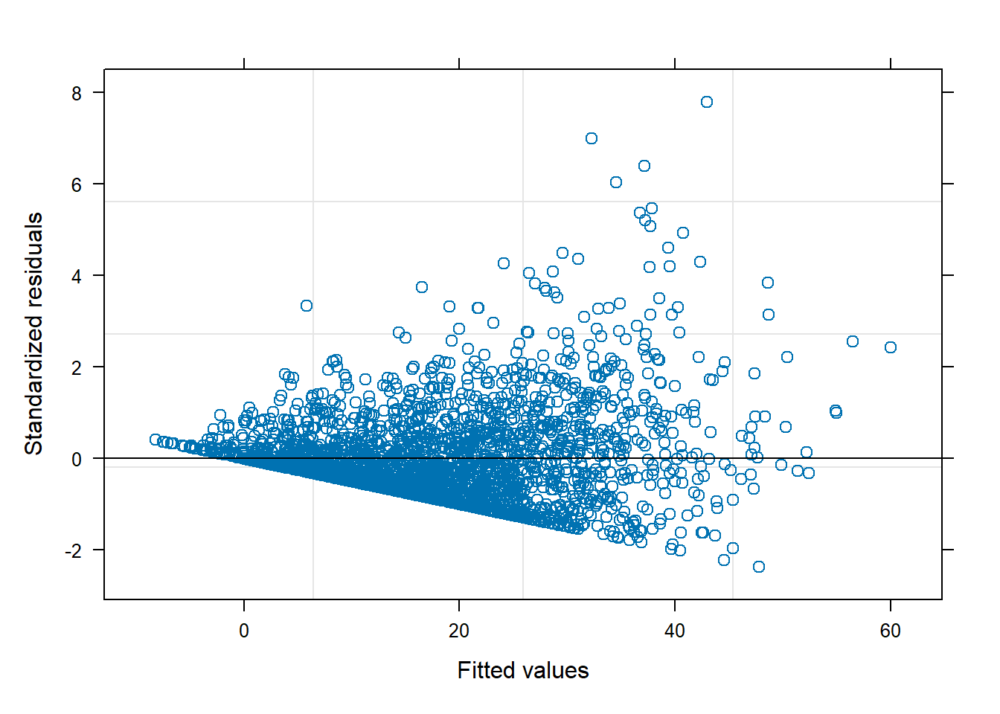